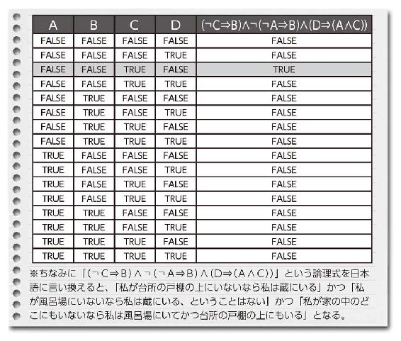
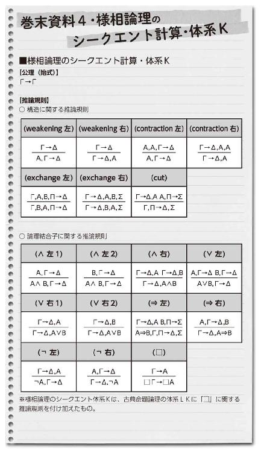

| 恋と禁忌の述語論理 (講談社ノベルス) | |
| 井上真偽 | |
| (2015) | |
本作品は、縦書き表示での閲覧を推奨いたします。横書き表示にした際には、表示が一部くずれる恐れがあります。
また、画面が小さい端末の場合、文字サイズの拡大等により稀に体裁に違和感が生じることがあります。その際は、通常の文字サイズにお戻しのうえお読みください。
恋と禁忌の述語論理
井上真偽
● レッスン Ｉ 「スターアニスと命題論理」
凜、と風鈴が鳴った。
──南部風鈴、というのだろうか。初夏の風を受け、縁側の黒い風鈴がりんりんと澄んだ音を立てていた。青畳。和簞笥。白い雲を背景に、赤い短冊がくるくると表裏を交代させる。
昭和の時代を彷彿とさせる、古家具で満たされた八畳の和室。
拭き漆の座卓の上に、一枚のメモ書きが残されていた。
その紙を手にとり、一瞥してすぐに元の位置に戻した。よくわからない数式が書かれていた。おそらくはここの家主が書いたものだろう。論文のアイディアか何かだろうか。一応は理系の大学生なので読めば理解できる気もするが、汗だくで歩いてきた今は余計な頭は使いたくない。
まずは水分補給。できればシャワーでも浴びたかった。
駅から小一時間もかけて田舎道をやってきたというのに、当の家主は不在だった。前日にメールを送っておいたのだが。しかし玄関に施錠はなく縁側の戸も開いたままなので、そう遠出はしていないはずだった。待っていればそのうち帰宅するだろう。
「本当に自由な人だな、硯さんは......」
呟き、鞄を放り投げて台所へと向かう。途中で家主不在の家を勝手に荒らし回っていいかという疑問も湧いたが、まあ仮にも三親等の親戚の家だ。独身女性の風呂場を無断で借りる勇気はさすがにないが、冷蔵庫を開けるくらいの自由は許されるだろう。彼女とはかれこれ十年以上になる付き合いである。
板の間の台所には、一人暮らしには不似合いな大型冷蔵庫が置かれていた。これには見覚えがある。確か野菜を劣化させるエチレンガスを分解するという魔法が使える機種だ。「ポイントを貯めさせてあげるから」という殺し文句で家電量販店に同伴させられたことは記憶に新しい。
あのときは、なぜ独身の彼女がこんな大型冷蔵庫を購入するのか、もしや同棲相手がいるのではとひそかに気を揉んだが、暮らしぶりを見るとその線は薄いだろう。ならばなぜ、彼女はこのサイズを必要としたのか──そんな興味に駆られ、扉の把手に手をかけた。
開けると、中にはぎっしりと泥付き大根が並んでいた。
何も見なかったことにして扉を閉めた。
再び扉をわずかに開け、ドアポケットからレトロな花柄のガラス瓶を抜く。隣のやや大きめの大正モダン風ガラス戸棚から、これまた昭和レトロなコップを取り出し、麦茶を注いで立て続けに二杯ほど飲んだ。
渇きが癒え、ようやく人心地がついた。
冷蔵庫に瓶を戻す。ふと、どうして大根を専用の野菜室にしまわないのだろうと不思議に思い、最下段の引き出しを開けてみた。するとぎちぎちにひしめく胡瓜とズッキーニに対面した。確かにそこに大根の入りこむ余地はない。納得し、引き出しを閉じる。
続いて冷凍庫を開ける。中にアイスバーがあったので一本失敬した。小学生が食べそうなスイカ味のアイスバーだった。彼女の年齢とあの容姿ならせめてハーゲンダッツくらいにしてほしいと思ったが、まあこれはこれで彼女らしいのかもしれない。
そう思い直して、冷凍庫の扉を閉めた。
ちりりん、と風鈴が涼しげに響いた。
アイスを頰張り、畳に足を投げ出して縁側から初夏の庭を眺める。薄く色づいた紫陽花。垣根代わりの庭つつじ。見頃を過ぎた梅や桃などの庭木に、その根元を囲むピンクの龍田撫子。その他名前のよくわからない野草や植栽。
都会なら三戸建て分くらいに分譲販売されそうな広い中庭には、もう使われなくなった納屋や土壁の蔵がいまだに鎮座するのが見える。
片隅には、錆びついた手押し車が転がっていた。
家主はいまだ帰らない。
玄関前には彼女愛用の軽自動車が停まっていた。なので、出かけたとしても徒歩圏内にいるはずだ。ご近所の奥さんと立ち話でもしているのだろうか。あまり人付き合いがいい性格とは思えないのだが。田舎暮らしを始めるにあたり、ようやく心を入れ替えたのかもしれない。
風が止んだ。うだるような夏日の午後に、凪の時間が訪れる。
むっとした熱気が部屋に立ちこめ、青臭い畳の匂いが鼻をついた。
暑い。とうとう我慢できなくなり、近くにあった骨董品めいた扇風機に手を伸ばした。
電源をＯＮにすると、旧式の扇風機はがくがくと首を振り始める。その弱々しい風を受け、ふわりと、何か薄っぺらいものが座卓から舞い上がった。条件反射で手を伸ばしキャッチする。
──例の「メモ書き」だった。
そう言えば、こいつの存在をすっかり忘れていた。特に宛名がなかったので無視していたが、よくよく考えればこれは家主が僕に書き置いたメッセージとみるのが自然である。
あらためて、メモの内容を読み返してみた。
【次の充足問題を解け】
Ａ： 私は風呂場にいる。
Ｂ： 私は蔵にいる。
Ｃ： 私は台所の戸棚の上にいる。
Ｄ： 私は家の中のどこにもいない。
論理式
（ CB）（AB）（D（AC））
CB）（AB）（D（AC））
は真である。
「............」
メモ書きをそっと座卓に戻し、再びアイスバーを頰張った。
畳に足を投げ出し、縁側から庭を眺める。太陽はいまだ天頂近くにあり、ぎらぎらと嫌がらせのように地面を炙っていた。蟬時雨が聞こえるにはまだ早い時期だ。遠くでキョキョキョとしきりに囀りをあげるのはたぶん不如帰だろう。軒先から地面に向かって張った網には、淡い緑の蔓植物が腕を伸ばしていた。おそらくはゴーヤ。本格的な夏が訪れる前に、日差しを遮断する緑のカーテンを作っておこう──そういった意向に違いない。
扇風機がゴワーッと壊れたような音を立て、再びメモ書きがぶわんと舞い上がって額にぴったりと張り付いた。
無言でメモ書きをむしりとった。神の悪意を感じた──どうやらこの神聖文字の謎を解かない限り、先には進めない展開らしい。
諦めのため息とともに、座卓の前に座り直す。
腹を据えてメモ書きと見つめあった。繰り返しになるが僕は一応理系の大学生なので、それほど数式アレルギーはない。文系なら秒殺されるであろうこの書き置きにもそれなりに耐性はある。
──それにこの問題の解き方は、すでに家主から教わっている。
さすがに暗算は辛いため、鞄から筆記用具を取り出し、広告のチラシ裏を使って計算を開始した。やはり手強い──が、解法は見えている。愚直に彼女の教えを一つ一つ思い出しながら、考えられる限りの解を逐一、紙に書き出していく。
そうしてなんとか自力で導き出した答えに──。
僕は愕然となった。
うそだろう。
信じられない思いで立ち上がり、台所に戻る。半ば慄然としつつ、先ほどの戸棚の真正面に立った。おそるおそる顔を上げ、棚の上部を見やる。視線のやや上。僕の背丈より頭一つ分高い天板の上──。
そこには。
転倒防止の突っ張り棒に挟まれながら、猫のように丸まる一人の成人女性の姿があった。
＊
「......なに、やってるんですか」
やがて正気に返り、かすれ声で訊ねた。しかし応答がない。もしかしてこの暑さで熱中症にやられたのでは──本気で心配になってわき腹をつつくと、彼女の体がいきなり鰻のごとくのたうった。
「きゃっ......！ な、何、セクハラ......!?」
色っぽい悲鳴とともに目を覚ます。すぐに口の涎を拭い、そこで僕の存在に気づいて「あ──」と上半身を起こそうとした。その刹那──。
ごん。
頭を天井にぶつけて、再び身を二つに折る。戸棚と天井の間はそれほど離れてはいない。
声を殺して必死に痛みに耐える彼女に、しばらくかける言葉が見つからなかった。
「えっと......あの、大丈夫ですか？ 頭」
うずくまったままの姿勢で彼女は顔だけこちらに向けた。目に涙が光っていた。僕の問いかけに無言でうなずき、今度はぶつけないよう用心深く頭を両手で護りながら、こわごわゆっくり、体を起こす。
「......うん......大丈夫......ちょっとこすっただけだから......」
「こすったにしてはずいぶん重い音が響きましたが」
「それはあれだよ......近くの河原で花火大会でもやってるんだよ、きっと......」
「こんな真昼間にですか？ あとこのへんに川なんてありましたっけ」
成人女性は無言で戸棚から降りてくる。それ以上の返しを思いつかなかったらしい。降りるときにワンピースの裾がきわどくめくれて、少し目のやり場に困った。
床に立つと、彼女はそそくさと服装の乱れを直した。両手でぱんぱんとワンピースの埃を払い、額に張りついた前髪を手櫛で整える。今日はポニーテールにまとめた長い黒髪を一度上に引っ張り上げると、ぱっと手を放してすとんと背中に落とした。
「ああ。暑かった」
そうぼやきながら、ぱたぱたと手うちわで顔に風を送る。
その姿につい目を瞠った。生地の薄い麻のワンピースが、汗でぴったりと全身に張り付いていた。慎ましい胸元にはうっすら下着の線が浮かぶ。首筋から鎖骨にかけては汗が細かく散り、真珠のパウダーのように光をきらきら反射していた。
成人式は太古の昔に過ぎたはずなのに、十代女子と比べても遜色ない透徹した雪肌──。
僕の視線に気づき、彼女がこちらを見た。
そしてにっこりと微笑む。その屈託のない笑みにやや罪悪感を覚えた。気まずい思いで咄嗟に顔を逸らす。
そんな彼女が、僕の母方の叔母──硯さんだった。
硯とは下の名前で、彼女は僕の母親の妹である。といっても歳が離れているせいか、二人は姉妹というのを疑うほど外見も性格も似ていない。正確な年齢差がわからないので実年齢は想像にまかせる他ないが、まあアラサーだろう。やたら二十五歳以下の女子を敵視しているのがその論拠だ。
が、どんな禁忌魔術を使ったのか知らないが、彼女は見た目はとてもそうは見えない。普通に二十代前半、ＴＰＯによっては現役女子大生にも見える。さすがにそれ以下はないと思うが、仮に高校時代の制服を着たとすればそれもわからない──ぜひとも着せてみたいものだ。機会さえあれば。
しかし硯さんの真の魔力は、その妖精めいた不老の容姿にあるのではない。
キッチンテーブルの上にレトロなグラスが二つ並べられる。そこにからんと氷が投入され、続いてこぽこぽと茶色い液体が注がれる。
硯さんは麦茶のコップを僕に手渡し、祝杯を上げるように縁を打ち鳴らした。
「おめでとう。よくあのメッセージの謎を解いたね。でも詠彦くんならきっと私を見つけてくれると信じていたよ」
森帖詠彦というのが僕のフルネームである。
囚われの王女が助けに来た騎士に向かって言うような台詞を僕は適当に受け流した。
「謎も何も......さんざん硯さんが宿題に出したじゃないですか。論理式の充足問題。あれだけやれば猫でも解けますよ。
そんなことより、なぜ僕は最初に台所に入った時点で存在に気づけなかったのか。自分の観察力のなさにがっかりです」
「あまりに堂々と自然にそこに在るので、逆に気づかない......ふふ。まるでポーの『盗まれた手紙』のようね。戸棚の上から詠彦くんの間抜けな頭頂部を眺めるのは楽しかったわ......」
「寝てたじゃないですか。というか硯さん、僕が見つけるまでずっとあそこに隠れてたんですか？ どれだけ暇なんですか？」
「可愛い甥の驚く顔を見るためなら、三、四時間くらいの待ち時間は苦じゃないよ」
「......午前中から隠れてたってことですか」
もはや戦慄するしかない。
このままだとこの成人女性がただの奇人変人にしか見えないと思うので（何せ冷蔵庫の泥付き大根と戸棚の上で寝ていたエピソードしか紹介していない）、彼女の名誉のために一応補足しておこう。
硯さんはとんでもない才媛である。超高偏差値女子高校からＴ大へ進学、論文がフランスのパリ数理科学財団の会員の教授の目に留まり、請われてフランスの大学の研究機関へ。そこで論文の引用件数が日本人で年間トップになるほどの革新的な研究を成し遂げ、そのままフランスの金融機関に就職。何年かで日本の平均的サラリーマンの生涯賃金の数倍以上の蓄財を成すと、退社して帰国し今は悠々自適の爛れたセミリタイア生活を送っている。
圧倒的な「勝ち組」の女性だ。ただ一つ──いまだ独身である点を除いては。
じいっと僕を見つめる硯さんと目があった。
「何ですか硯さん？」
「いえ別に。ただなんとなく、失礼な想像をされている気がして」
手の中でからん、と氷が音を立てる。この女性は無駄に勘が鋭いところがあってたまに困る。
硯さんがグラスを唇に当て、底を高く傾けた。ごくごくと飲みこむ動きに合わせて白い喉が波打つ。ラッパ飲みのような乱暴な飲み方なのに、全体的にどこか上品だ。姿勢がいいからだろうか。
客観的に見て硯さんは、魅力的な部類に入る女性である。つまり美人だ。それも極上の。黒髪雪肌の純和風大和撫子。長い黒髪を後ろに束ねただけのノーメイクに生成りのワンピース、素足という原始人のような格好でありながら、美しさをわずかも毀損しない。それだけ素材がいいのだろう。言い寄る男性も少なくないはずだが、しかし彼女について浮いた噂をまるっきり聞かないのはなぜだろう。
それは単に、好みの男性と出会わないだけかもしれないし──他に何か、僕の与り知らない理由があるのかもしれない。
汗を搔いて塩分が足りなくなったのか、硯さんが「しょっぱいもの、しょっぱいもの」と騒ぎ始めた。食卓にあった朱塗りの蓋付き小鉢に手を伸ばし、中から塩飴を取り出して口に放る。
童女のようにほっぺたをぽっこりふくらませ、ころころころころ、飴玉を左右に転がす。そんな彼女を少し微笑ましい気持ちで眺めた。
「......ところで硯さん。『あれ』はいったい何なんですか？」
「あれって？」
「冷蔵庫の中身です。野菜のネット販売でも始める気ですか？」
「ああ......アグリビジネスに手を出す気はまだないね。うちの家庭菜園でとれたただの大根だよ」
梅の小花をあしらった上品なタオルハンカチで首回りの汗を拭いながら、彼女が答える。
「この前買った耕耘機のおかげか、今年の大根はよく育って。詠彦くんのうちにも一箱詰めて送ったから、あとで好きに食べて」
「一箱送ってまだあれだけ在庫があるんですか。どれだけ豊作だったんですか今年の大根」
すると硯さんがうふふふ、と含み笑いをもらした。ドラッグの売人のように悪い顔だった。
「大根が食べきれないほどあるってすごいよ......。恐ろしく贅沢な食べ方ができちゃうんだから......。そうだ。今夜詠彦くんにもご馳走しよう。今日の晩御飯は大根のフルコースで決まり。メインは大根のみぞれ鍋で、サイドメニューはふろふき大根に大根ステーキに大根飯に大根の浅漬けにシラスおろし......大根尽くし」
胃壁ごと消化されそうである。
大根アミラーゼの効能が堪能できるのは申し分なかったが、しかしどうしよう、と僕は少し迷った。今日は日帰りのつもりだったので泊まる用意はしていない。鎌倉の僕の自宅からこの北関東の田園地帯まで片道三時間以上。夕食をご馳走になるとすると、日帰りが厳しくなる。
そのことは硯さんもわかっているはずだが。
「ところで詠彦くん、手荷物は？ そこにある鞄だけ？」
「あ、はい」
「何でそんなに軽装なの？」
「え？ あ、いえ......日帰りならこれくらいかと......」
「あれ？ 今日は日帰りの予定だった？ てっきり泊まっていくものと思ってたけど......」
そんなことを、彼女は気さくな調子で言ってきた。僕の顔がやや赤らむ。自意識過剰だったかもしれない。硯さんの態度は、叔母が甥に向かって示す自然なそれ。それはつまり、彼女は別に僕を異性として意識などしてないということ。
それはもちろん、当然すぎる話ではあるけれど。
「えっと......今日は泊まっていってもいいんでしょうか？」
「もちろん。明日の用事はないんでしょう？」
「あ、はい。でも着替えが......」
「寝巻きだったら私の古いパジャマがあるけど、さすがに女物は嫌か。車で三十分ほど行ったところにショッピングモールがあるから、あとで買いに行こうか。閉店八時だから七時にここ出れば間に合うよね」
「そうですね......。わかりました。それじゃお世話になります」
硯さんに倣い、僕は努めて何でもないことのように、軽く頭を下げる。
すると急に、硯さんが立ち上がった。
不可解な微笑を見せつつ、ゆっくりと僕の背後に回る。両手を僕の両肩に置き、身を屈めて耳元に口を近づけてきた。それとともに片手が僕の首元に這い寄り、開いた襟の間にゆるやかに滑り込む。
むき出しの鎖骨に、彼女の指が軽く触れた。
一瞬、身体に電流が走った。
「......嬉しい。詠彦くんが泊まるって言ってくれて......」
蕩けるような囁き。
「あのね詠彦くん。実は私──」
「明日、ホームセンターで買い物ですか？ わかりましたよ。荷物を運べって言うんですよね？ 今回の大物は何ですか。木材ですか。園芸用ブロックですか。農耕機具ですか」
硯さんが泣きそうな顔を見せた。
「──人の話のオチを読まないで！」
読むも何も。
この「色仕掛け」パターンは、僕が中学生のころから硯さんがさんざん使い倒してきた手である。初心な少年だったころの僕ならまだしも（「自分で言うな」だが）、いまだ通用すると思っている硯さんのほうがちょっとおかしい。僕に学習能力がないと思われているのか、はたまた硯さん自身に学習能力がないのか。彼女の学歴を考えれば後者は有り得ないと思うが。
気分を害した硯さんは、急にふてくされて隣の居間に移動した。
こちらに背を向けてしゃがみこみ、畳に「の」の字を書き始める。
「どうして......？ 昔はあんなに簡単だったのに。私が年とって魅力が薄れたってこと......？」
「硯さん。『慣れ』って言葉知ってます？」
「哀しい......もう私、女として終わりなのかな......。詠彦くんはきっともう昔みたいに、私の着替えで興奮したりしないんだね......」
え？ と、頭の中が一瞬空白になった。
幻聴かと疑い思わず聞き返した。
「え......と？ 硯さん、今なんて......？」
「もう詠彦くんは、小学生のときみたいにドアの隙間から盗み見たり、中学生のときみたいに鏡を利用して観察したりしないんだ......。きっと私のスカートの中身なんて、街中の選挙ポスター並みに興味を引かない代物で......」
「ちょ......ちょっと？ 硯さん──？」
「懐かしいなあ......よく私が立て膝で新聞を読んでいると、さりげなく対面に回ってきたよね。脱衣所で何度もニアミスしたりね。そう言えばＢＳのパラボラアンテナ、今でも二階のあの位置に付いてるのかな？ テレビの映りが悪いという口実で調整に行くと、ちょうど一階の浴室の窓が見下ろせる角度にある──」
「うわーっ！ うわあーっ!! うわあああっ!!!」
「きっともう、私が廊下に衣服を落としても見向きもされなくて......。気がつくと下着が数点消えているなんて怪奇現象は、もう──」
「すみません！ すみませんでした!! 別に盗ってはいません！ 返しました！ 拾ってすぐにきちんと洗濯物籠に返しました!!」
喉が千切れんばかりに叫び、狂騒の態でこけつまろびつ畳に額を打ちつける。
叩頭。平伏。完敗。完敗である。一瞬でもこの人の優位に立ったと思った己の浅はかさを呪う。敵にサブマシンガンをちらつかせていい気になっていたら、報復にロケット砲を撃ちこまれたようなものだ。いっそ殺してくれ、この腹かっさばいてくれと叫びたい。
硯さんの背中に謝罪を礫のごとく浴びせながら、悟った。きっと僕は、一生この女性に頭が上がらない。生まれた時から敗北が決定している。先天的に負けている。
様々な意味で──それは、ままならぬ運命というやつに違いない。
自分の恥ずかしい過去を晒し続けていても仕方がない。いい加減話の本題に入ろう。本日、僕がこの奇人で変人で情け容赦のない美叔母の元を訪ねたのは、別に過去の己の罪過を懺悔するためではなかった。
「──で。詠彦くん」
硯さんの声色が変わる。ひとしきり僕をいたぶって鬱憤を晴らしたらしい彼女は、妙にすっきりした仏顔で僕に向き直った。
「昨日のメールにあった、『私に相談したいこと』って、何？」
畳から重い頭を起こす。床に擦りつけた額と鼻の頭がひりひりして痛い。さんざん醜態を晒したあとなのでどんな顔をしてよいかわからないが、しかしそろそろ真の訪問目的を告げなくては、単に自分の人格を貶めただけに終わってしまう。
気持ちを切り替えるために正座をし、居住まいを正す。つられて硯さんも座り直した。
囲碁の対局のように、座卓を挟んで二人で向かい合う。
こほん、と軽く咳払いをした。
「......硯さん」
「はい。何でしょう？」
僕は硯さんの黒い瞳をまっすぐに見つめた。そして訊ねた。
「──毒殺と事故死を論理的に見分けることは、可能ですか？」
＊
僕の質問に、硯さんはしばらくころころと舌で飴玉を転がしていた。焦点の合わない目で僕を見て、少し斜めに首を傾ける。インコと対話している気分になった。
「......それは、ある行為が故意か偶然かを『論理的に』証明しろってこと？」
「ひらたく言えばそういう話になります」
「できるよ」
硯さんはあっさり肯定した。
「ただし、条件付きだけど」
「......その条件とは？」
「どんな行為が『故意』で、どんな行為が『偶然』かが、公理に定義されていること」
「............」
少し考えた。そしてすぐに回答の馬鹿馬鹿しさに気づいた。
「どんな行為が『故意』か定義されていること、って......からかわないでください硯さん。それが定義できるなら、最初からこんな質問してないですよ。僕はまさにそれを硯さんに『論理的に』証明してほしいんですが」
「だから、『論理』ってそういうものなんだってば。公理と推論規則を定義して、そこから妥当（valid）な関係を導くのが数理論理学でいう『形式的証明』。どんなルールを公理に定義するかは定義する人の自由で、『論理』自体が決めることではないわ」
......頭の中がもやもやした。
公理、推論規則、妥当（valid）──どれも日常生活にはあまり縁のない単語である。
硯さんの専門は「数理論理学」だ。
数理論理学とは、人間の論理構造を数学的に解析するもの──らしい。
......と、言いつつも、実はそれ以上のことは僕にもよくわからない。今のはただの硯さんの受け売り。人間の「論理構造」を「数学的」に「解析」する──などと言われても、前提となる知識のない僕には具体的なイメージがまったく湧かない。「この空気清浄器はイオンの力でウィルスを除去します」と家電売り場の店員に説明されて、「なるほどなあ」と感心するようなものだ。「なんとなくすごい気がする」以上の感想が出てこない。
硯さん曰く、論理学は「すべての人間の思索活動の頂点に立つもの」だというが──。
本当だろうか。
それが真実なら、論理学はまさしく学問界の帝王のような存在だが──。
まあその辺の真偽はともかく、今回の僕の相談に「数理論理学」が役立つ見込みは薄そうだった。「行為が故意か偶然か」の質問に答える条件が「何が故意で何が偶然かを定義できること」であれば、それはほぼ答えを言っているに等しい。
それが定義できないからこそ、こちらは困っているのだ。
「そうですか......何だか数理論理学っていっても大したことないですね。だったら僕の相談はもういいです。今晩みぞれ鍋を頂いて帰ります」
「明日のホームセンターの買い物も忘れないで。......って、ちょっと待って詠彦くん。どうして数理論理学が残念な感じなの？ 数理論理学は大したことあるよ？ 何でも問題解決するよ？」
「理屈で解決できないことも世の中多いんですよ......。まあ今回は理屈の出番かと思ったんですが、違ったようですね。大丈夫です。その『公理を定義できる人』をどこか他に探しますから、硯さんは気にせず大根をおろす作業に取り掛かってください」
「......へえ。ずいぶん皮肉が上手くなったね詠彦くん。まさか論理学があまりに偉大すぎて、大根をおろすくらいしか役立たないとでも言うつもり？」
「いえ。完全に深読みしすぎですが」
「とにかく」
いきなり真顔になり、硯さんがずいっと身を寄せてきた。
「話してみなよ。今のはただの一般論。個別の話ならまた事情も違ってくる。論理というのは──案外、実用性が高いものかもよ？」
彼女の熱い吐息が、うっすら鼻にかかった。
間近に迫った桜色の唇に、一瞬注意を奪われた。すぐに目線を横に微妙にずらし、ぼりっと奥歯で氷を嚙み砕く。生じた邪念は極力意識から追い払った。目の前の問題に集中しなければならない。
話して──みるか。
硯さんの言う通り、一般論では議論できない問題ではある。それに頭のいい彼女のことだ。たとえ「数理論理学」自体が役に立たなくても、何か答えを見つけてくれるかもしれない。
「......わかりました」
少し硯さんから身を離し、うなずく。
麦茶を一口飲んで頭を冷やした。相談する気持ちを固め、しばらく黙って出だしの言葉を探る。昔から説明は得意なほうではない──が、これは研究の発表会でも選挙演説でもない。最低限、分析に必要な情報が伝わればいいはずだ。
やがて方針が定まった。再び咳払いを一つし、あらためて硯さんに向き直る。
そしておもむろに、僕は話を切り出した。
＊＊＊
──五月のゴールデンウィーク明けのころです。僕は大学の友人に誘われて、ある女子大ＯＧの女子会に参加しました──
＊＊＊
「ちょっと待った」
一人語りを始めた直後にいきなり制止をかけられた。
「......何ですか硯さん。話の出端をくじかないでくれませんか」
「ごめんなさい。けれど冒頭の描写に若干引っ掛かってしまって。どうしても気になって話に集中できないので、先に確認だけしてもいい？」
「別にいいですけど......まだセンテンスにして数行分くらいしか喋ってませんよ。いったい何なんですか？」
「まず一点。どうして男子大学生の詠彦くんが、社会人女性の女子会に参加してるのかな？」
「友人に誘われたからですよ」
「悪い友達ね......でも男子が女子会に参加した時点で、それはもう『女子会』の定義から外れると思わない？ それっていわゆる合──」
「合コン、とは違いますよ。歳も離れてますし、開催目的も他にちゃんとあります。まあ厳密に言えば確かに『女子会』の定義からは外れますが、ただ参加者はほとんど女子で僕はおまけみたいなものだったので、一応そう呼んでもかまわないかと......」
「参加者が──ほとんど女子？」
「はい」
「......男女比は？」
「え？」
「男女比は何対何だったか、一応教えてくれない？ 参考までに」
「何の参考ですか......。ええと、あの場には全部で六人いたから、一対五かな？」
「一対五......一対五!? 詠彦くん以外は全員女子だったってこと!?」
「はい」
「誘った友達も女子だったってこと!? 同じ大学の男子とかじゃなくて!?」
「そうですが？」
硯さんが両眼を見開いて僕を見つめた。何だろう。僕は当惑しつつ彼女の目を見つめ返す。
やがて彼女の背中が、ぐにゃりと蒟蒻のように折れ曲がった。
「──どうしました硯さん？ お腹でも痛いんですか？」
「ううん、何でもない......」
座卓に前髪がつくくらい前かがみだった。
「男女仲良い感じが、ちょっと羨ましくなっただけ......。私、女子校育ちで、大学でもなかなか男子と話できなかったから......。話の腰を折ってごめんなさい。先を続けて......」
それだけ言い残し、あとは沈黙してしまう。急に狸の置物のようになった硯さんに僕はやや困惑した。──いきなりどうした。あれか。硯さんの「女子校育ちコンプレックス」を知らず刺激してしまったか。
年齢のことといい、彼女にはどうも禁則事項が多くて会話に気を遣う。これが年上の女性を扱う難しさか。今回はあえなく地雷を踏んでしまったが、以後気をつけねばなるまい。
まあ──それはともかく。
──まさにその友達のために、僕はこの事件に白黒つけなければならない。
古い扇風機がうんうんとうなりを上げる。体に風が当たると一瞬夏の暑さを忘れるが、すぐに熱気が舞い戻ってきてじっとりとした暑気が肌を覆う。この家にも一応エアコン設備はあるが、冷房が苦手な硯さんは普段はあまり使わない。
ちりりん、と縁側で風鈴が可愛らしい音を立てた。
一呼吸置いて、僕は話を再開した。
＊＊＊
──五月のゴールデンウィーク明けのころです。僕は大学の友人に誘われて、ある女子大ＯＧの女子会に参加しました。
......え？ 違います違います。彼女はただの幼馴染みですよ。別に付き合っているとかじゃないです。
彼女の名前は藍前ゆりといいます。どんな子か？ ええと......まあ活発、ですね。大学の陸上部所属で、短距離走のエースです。性格は勝ち気で負けず嫌いで──え？ 容姿？ うーん......そうですね。まあ可愛いほう......ですね。男子に人気があります。陸上系のスポーツ雑誌で表紙を飾りましたし、ショートカットで芸能人のＫに似ているので、「トラック競技界のＫ」とか呼ばれてて──。
え？ ......いや別に、僕はＫのファンではないです。......ショートヘアにこだわりもないです。あの硯さん。話が進みませんので、質問は極力絞ってくれませんか？ というか後でまとめて受け付けますので、気になったことはひとまずこっちのメモ用紙に書き留めておいてください。
......いいですか？ では話を続けますよ──実は五月の頭にゆりの誕生日会があったんですよ。でも僕はそのことをすっかり忘れていて、その罪滅ぼしに今回の女子会に強制参加させられたわけです。
参加者は全部で六名。僕以外は全員女性で、学生は僕とゆりだけ、あとの四人は皆二十代の社会人でした。
会の目的は「再就職祝い」。彼女たちは同じ女子大の同期なんですが、そのうちの一人が最近再就職したので、そのお祝いに会を開催したらしいです。
会場はその中の一人の自宅、横浜にある庭付き一軒家でした。会は正午にスタート。参加者の一人がアジアンカフェの店長をしていまして、テーブルには彼女の手作りの「マレーシア料理」が並びました。
そして、会が始まって数時間後──。
事件が、起こったんです。
＊＊＊
ごくり、と唾を飲む音が聞こえた。
「詠彦くんが、婚期に焦る二十代女性たちに無理やり手籠めにされたの......？」
「......僕は真面目な相談を、しているつもりなんですが」
私も真面目に心配してるんだけど......、と、小声でごにょごにょ反論が返ってくる。真顔で眉を寄せているところをみるとたぶん本気なのだろう。この人は感性が少し一般とずれているところがある。恩師の葬式で「故人の好物だったから」との理由でお棺にくさやを入れたような人だ。
「......食事中の一人が、いきなり嘔吐して倒れたんですよ」
「ああ」
硯さんが視線を落とした。グラスを両手で囲い、表面についた水滴を親指でつっと拭う。
「それが詠彦くんが最初に言った、『毒殺か事故死か』という話につながるのね」
「はい。そういうことです。倒れたのは今回の主賓、再就職が決まっていた女性。もちろんすぐに救急車を呼びましたが、搬送先の病院で死亡が確認されました。死因は中毒死。警察の調査で、原因物質は料理のカレーの中に入っていた毒物と判明しました」
「どんな毒物？」
「主成分はアニサチン。痙攣性の神経毒で、症状が重篤な場合は意識障害や呼吸障害をもたらします。致死量はイヌでおよそ一・二～二mg／kg。被害者の女性の皿からはその数十倍の含有量が検出されていて──」
「ふうん」
説明を遮るように、硯さんが相槌を打った。
「スターアニス事件か。なるほど。『マレーシア料理』だものね」
その呟きに、ひそかに舌を巻いた。
まだ現場の状況は何も語ってないに等しいのに、もう彼女は事件の全貌を摑んでしまったらしい。
硯さんは奇人で変人だが、頭の回転は恐ろしく速い。言いたいことの半分も言えば意図はほぼ伝わる。空気は読めないので婉曲な言い回しは逆に通用しないが。
「......僕の話のオチを、先読みしないでくださいよ」
「ごめんなさい。でも気づいてしまったので。庭にしきみの木が植えてあったんでしょう？」
「硯さんの知識はどれだけ広範なんですか。歩くウィキペディアですか」
「別にそんなんじゃないけど......。昔、法的推論システムの研究に取り組んでた時期があって。そのとき過去の判例とかいろいろ調べてて、それでたまたま......ね」
......何がたまたまだかよくわからない。が、底の知れない人であることは確かである。
彼女の言う通り、今回の事件は過去に「スターアニス誤食事件」として実際にあった事件と状況が類似している。
スターアニスとは、中華料理や東南アジアの料理によく使われるスパイスの一つ、いわゆる「八角」のことだ。
血行促進効果があり、料理のほか医薬品やアロマの精油などにも利用される。が、一説には子宮収縮などの副作用も懸念されていて、妊婦や子供が過剰に摂取することは勧められない。
パクチーと同じく個性的な風味で、日本人には好みの分かれる味だ。亜熱帯性植物で日本には自生しないが、しかしこれと非常によく似た実をつける木なら国内にも存在する。それが「しきみ」の木──俗にジャパニーズ・スターアニスとも呼ばれるものだ。
この「しきみ」は日本の墓地などによく植えられていて、実は見た目こそスターアニスそっくりなのだが、両者には決定的といっていい違いがある。
それは、しきみの実は強い毒性を持つことだ。
その毒性の強さは日本の毒物及び劇物取締法でも劇物指定されるほどで、経口摂取すれば軽度で嘔吐、腹痛、下痢などの消化器不全、重度で意識障害や呼吸不全を引き起こし、最悪の場合は死に至る。過去実際にこの「ジャパニーズ・スターアニス」は「スターアニス」と混同され、誤食による死亡者まで出ている。
今回起こった事件も、まったくそのケースだった。庭のしきみの実がスターアニスと誤認され、料理に使われてしまったのだ。
ただ、問題は──。
「それが、本当に間違えて料理に使われたのか、意図的に使われたのかってことね？」
僕は大きくうなずく。そう、それこそが今回の題目。硯さんの叡智で解明してほしい謎だった。
「はい。おっしゃる通りです。それでどうでしょうか硯さん。今回みたいな事件を、硯さんの得意な『数理論理学』で『論理的』に解決することはできますか？」
「それはケースバイケースだね......」
硯さんはポニーテールの先っぽをつまみ、筆先の手入れをするようにいじくる。
「もう少し詳しく話を聞かないことには、さすがに何とも言えない。だから詠彦くん、今のをもう一回時系列で説明してくれる？ 今度は交わした会話も再現して。些細なことも手がかりになるかもだから」
僕は再びうなずく。元より詳細は後で話すつもりだった。まあ硯さんの妙な質問がなければ今ももう少し情報を盛り込めた気もするが、それはひとまず置いておく。
「わかりました。では、事件の詳細を......」
僕は眉間に力をこめ、当日の記憶を掘り起こした。
＊＊＊
──僕とゆりが会場についたのは、午前十一時ごろでした。
そのころにはすでにパーティの準備は始まっていて、居間では都築さんと蜜川さんがテーブルのセッティング中、キッチンでは馬場園さんが料理の支度中でした。主賓で被害者の三月さんはこのときまだ到着していません。
事件の説明の前に、彼女たち四名を簡単に紹介します。
まず、自宅をパーティ会場に提供してくれた、都築志穂さん。
彼女は小柄な眼鏡の女性で、バツイチです。
普通の事務職ＯＬをしていましたが、結婚退職後事情があって離婚し、今は親元で家事手伝いをしているそうです。彼女の両親は旅行中でその日は不在でした。
趣味は園芸と、ペットと遊ぶこと。園芸はハーブ栽培に凝っていて、ペットは小型犬を多く飼っていました。おじいさんみたいな顔をしたミニチュア・シュナウザーが何匹もいましたね。
次に、都築さんと一緒にテーブルのセッティングをしていた、蜜川ほのりさん。
彼女は被害者と一番仲が良かった友人で、東南アジア系の母親を持つハーフ美人。しかし生まれも育ちも関西で、東南アジアどころか海外旅行も行ったことがないという生粋の関西人でした。ちなみに独身。
スマホアプリ系のゲーム開発会社に勤めていて、ＵＩデザイナーというんですか？ ゲーム画面のデザインなどを手掛けていると言ってましたね。ちなみに趣味はＤＶＤ鑑賞。
そして三人目。キッチンで料理をしていた、馬場園美夏さん。
都内某区のアジアンカフェの雇われ店長で、今回の料理人です。女子会の企画者でもあります。
小麦色の肌をした健康美人で、肉食系女子というか恋愛猛者。下は十代から上は六十代まで、同時に七人と付き合っていた時期もあったそうです。ただ最近はそんな過去の自分を甚く反省し、一人の男性に尽くしているとのこと。
趣味は料理と海外旅行。料理はスパイスから自家製作する本格派で、その腕を買われて今の店にスカウトされたとか。
そう言えばゆりがたまにそこでバイトするんですが、よく制服姿の写メを送ってきますね。なかなか凝ったベトナムのアオザイ風コスチュームなんですが、独特の雰囲気があって可愛い──。
え？ 携帯を見せろ？ 嫌ですよそんな──いかがわしい写真じゃないかチェックする？ 何阿呆なことを──あ！ ちょっと勝手に──！
......そんな哀しい顔しないでください。そりゃロックぐらいかけますよ、プライバシーなんだから......。ああもう。わかりましたよ、今写真を見せますから、ちょっと待ってください......。
......ね？ ほら、普通でしょう？ え？ ......そうですか？ まあ言ってもベースがアオザイですからね。スリットから脚が見えるくらいは勘弁してください。
もういいですね？ 先を続けますよ......それで、最後の四人目ですが、彼女が今回の主賓で被害者となってしまった、三月早絵莉さん。
彼女は元商社ＯＬで、職場の人間関係のいざこざで退職。しばらく失業保険生活をしていましたが、このたび再就職先が決まり、その激励会として馬場園さんが今回の会を企画したそうです。
──以上四名と、僕とゆりを含めた合計六名が、今回の登場人物です。
さて。三月さんを除く僕たち五人がパーティの準備をしていると、やがて電話が鳴り出しました。
鳴ったのは都築さんのスマートフォンです。電話をかけてきたのは本日の主賓、三月早絵莉さん。電話口から声が漏れて聞こえたので、都築さんの芝居ではないと思います。
都築さんはしばらく電話で三月さんと話した後、「早絵莉が場所がわからないみたいだから、駅まで迎えに行ってくる」と言い、家を出ました。確か十一時半くらいのことです。
都築さんが自宅を出た数分後に、今度はキッチンから悲鳴が上がりました。
「ああしまった！ 八角が足りなくなった！」
馬場園さんの声です。エプロン姿でお玉を持った馬場園さんが、奥から顔を出しました。
「カレーに使う分を忘れてた......。志穂はもう行っちゃった？ ついでに買い物頼めばよかったな」
「せやったら電話する？」
蜜川さんが自分のスマホを取り出します。そして電話をかけると──。
着信音が、居間のソファから鳴りました。
都築さんのスマホでした。持って出るのを忘れたようです。少々天然な人のようでした。
「仕方ない。もう一度買い出しに行ってくるか──」
エプロンを外そうとする馬場園さんを、蜜川さんが手で制します。
「ああ、ええよ。うち行ってくる」
「本当？ 悪いね。私の車使っていいから。駅前のスーパーならあると思う」
「うん、わかったわ──」
蜜川さんは馬場園さんから車の鍵を受け取り、いったん家を出ます。しかし数分もしないうちに、どたどたと舞い戻ってきました。
「なな、美夏。ちょっとこれ見てくれへん。これって──」
「あ！ もしかして八角？」
「うん。あの車庫のところに木があってな、その近くに落ちててん」
「車庫？ ──ああ、車庫入れのとき、私が車をぶつけそうになったあの木？」
馬場園さんと蜜川さんは一緒に車で来たそうです。駐車場のそばには庭木が植えてあり、その一本が「しきみ」の木だったようですね。その付近に落ちていた古い実を蜜川さんは「スターアニス」と勘違いしてしまったのです。
あ、ちなみに都築さんは駐車場のしきみのことは知っていました。だからこの場に都築さんがいれば、事故は未然に防げたのかもしれませんが......しかしスマホを忘れた彼女とは、このとき連絡の取りようもなく。
「──へえ。あれって八角の木だったんだ。ほのりよく気づいたね」
「まあなあ。うちお母ちゃんがよく料理に使うてたから、子供のころよく外に採りに行かされてん。あ、これ落ちてた実やけど、かまわん？」
「ああ、大丈夫でしょ。綺麗だし、ちょうどよく乾燥してるし」
そんな会話も聞こえました。東南アジア系の母親を持つ蜜川さんには八角は馴染みの食材だったそうです。
馬場園さんが実際に調理するところを僕は見ていませんが、彼女はそれらを一度乾煎りした後、フードプロセッサーにかけて粉末状にしたそうです。その粉末はカレーにすぐ投入したし、また台所にはいろんなスパイスの匂いが充満していたので、正直その香りはよくわからなかったと彼女は証言しています。あとカレーはだいたい完成していたので、味見もあまりしなかったそうです。
それから三十分ほどして、都築さんが三月さんを連れて帰宅しました。そのころは僕たちはパーティの準備に追われ、八角のことなどすっかり頭から消え去っていました。
そして会が始まりました。食卓に並んだのは酸味のある魚の煮こみやスパイシーな焼き鳥、一風変わった麵料理──さすが本職が作っただけあって、頂いたマレーシア料理はどれも美味しかったですね。
それから一時間ほどして、馬場園さんが完成したカレーを運んできます。
そしてそれに一番最初に手をつけた三月さんが──。
しばらくして、いきなり苦しみだしたのです。
＊＊＊
──事件の説明を終え、僕は硯さんの様子をちらりと窺った。彼女は視線を右に向け、髪を人差し指にくるくる巻きつけていた。彼女が熟考するときに見せる癖だ。
「以上が詳細ですが、いかがでしょうか......？」
遠慮がちに声をかけ、反応を見る。彼女はいったん目を伏せ、手をゆっくり床に下げた。張りのある黒髪が指からくるんと解ける。
「カレーに......」
「え？」
「カレーに手をつけたのは、三月さんだけだったの？ 他の人は食べなかった？」
ああ、と僕は目を天井に向けた。そう言えばその説明がまだだった。
「そこなんですが、マレーシア風の八角入りカレーは日本人には口に合わない人もいるので、馬場園さんは普通のカレーも別鍋で用意してくれてたんです。僕とゆりはそちらを頂いて。都築さんは口内炎ができたらしくカレー自体をパス。馬場園さんはキッチンで料理を継続中。蜜川さんはダイエット中ということで、主に低カロリーの料理にしか手をつけませんでした。結果として、カレーを食べたのは三月さんしかいなかったんです」
「それは事前に予測できたこと？ つまり、八角入りカレーを食べるのが三月さんだけだという──」
「ああ、それは......どうでしょうか。味の好みは馬場園さんが事前にアンケートを取ってはいましたが。ただ当日は、馬場園さんが料理を始める前にその場の全員に食べる量やメニューを大声で再確認していたので、三月さん以外の人は皆そこで予測がついたと思います」
ふうん、と硯さんが鼻を鳴らす。指先が再び髪をいじり出す。
僕はぐっと膝頭を摑み、少し前のめりになった。
「やっぱり硯さんも、疑っているんですか？ この事件が単なる事故ではなくて、意図的な殺人であると──」
硯さんは髪を指で挟んで刷毛のようにし、その毛先をじっと見つめた。傍目には枝毛探しをしているようにしか見えない。
「疑うも何も......」
ため息を一つ。
「......明白じゃない」
え？ と僕は小さく声を上げた。
明白？
明白──と、言ったのか？ 今？ 彼女は？ この事件の答えが「明白」だと？
それはつまり、今までの説明だけで、今回の事件が「事故」か「故意」かを彼女はもう論理的に結論付けたと──。
いや。
僕はぶんぶんと首を横に振った。いや。さすがにそれはない。そんな事態は有り得ない。いくら洞察力の鋭い硯さんであっても、そんなことは絶対に不可能だ。
なぜなら僕はまだ、推理に必要な情報を出し切っていないからだ。
硯さんを試すような真似をして申し訳ない限りだが、しかしこの情報なしには、おそらくどんな推理も成り立たない。それは今回の事件を理解するのに必須の情報のはず。硯さんクラスの論理脳なら周辺情報から多少は推測可能かもしれないが、それにしたって明白なんてことは有り得ない。
......きっと何かを勘違いしているのだろう。
「明白」と言い切った割には、硯さんは言葉を続けようとしなかった。ずっと無言のまま、今度は爪の甘皮の手入れをし始める。桐の薬箱からウェットタイプの綿棒を手に取り、くいくいと爪回りの皮膚を外側に向かって押す作業を繰り返した。
いつまでたっても説明が始まらないので、先にしびれを切らせた僕から訊ねた。
「......動機は、聞かないんですか？」
「動機？」
「三月さんが仮に故意に毒殺されたとして、その毒殺の理由です。ひとまず僕とゆりは容疑者から外すとして、他の三名──都築さん、馬場園さん、蜜川さんの中のいったい誰に、三月さんを殺したいと思うほどの動機があったのか。もしこれが意図的な殺人なら、必ず動機があるはずでしょう」
「ああ......」
硯さんは手をひらひらと軽く振った。
「動機は必要ないの」
「動機は......必要ない？」
「形式的証明──数理論理学的な証明においては、動機などという観点は必要ない。仮にあったとしても使えない。不要。無用。徒爾徒消」
耳慣れない熟語表現で否定された。動機が必要ない──？ それは本気で言っているのか。
ミステリファンにはなかなか物議を醸す発言だ。動機解明を本筋とするミステリ、いわゆるホワイダニット系の作品が全否定である。
いや......話をミステリ小説に限るなら、本格推理といわれるジャンルの推理小説には、確かに動機などどうでもいいといったスタンスをとる作品も少なくない。動機などを考えなくても、誰が犯人かや犯行をどうやったかといったことは、すべて物的証拠から推察可能──という話なのかもしれない。
が、しかし、今回はその議論はやや当てはまらない。僕たちはこれから、事件が故意だったか偶然だったかを解明しようとしているのだ。言わば人の心の動きを読み解こうというのだ。
それでも動機は必要ないというのか。
「理由──聞きたい？」
「それは、まあ──」
「数理論理学が動機を証明に使えない理由──それは、主に二つ」
硯さんが目の前に猫の手のように丸めたコブシを上げ、それから指を一本立てる。
「一つ目──動機の接続詞は論理記号ではない」
黒光りする瞳で僕を見つめた。
「たとえば動機の例としては、遺産を相続するために殺す──とか、かつて自分を辱めた憎い相手だから殺す──とか、そんな表現が挙げられるけど、この『ために』とか『だから』とかいった接続詞は、そもそも論理記号として定義されない。現代の数理論理学に『ために』とか『だから』といった二項関係を直接的に表す論理記号は存在しないの」
ぽかんと口を開けてしまった。動機の接続詞。論理記号。二項関係──いきなり難解ワードの登場である。
「二つ目」
僕の反応を捨て置いたまま、硯さんはしれっと二本目の指を立てる。
「動機は恒真的事実ではない。たとえば『恨みがあるならば殺す』という命題を定義してみる──『ならば』は論理記号だから、これは論理式として公理に追加可能。けれどはたしてこれは、真偽を確定できる命題かしら？
『恨みがあるならば殺す』──これは実に『真』とも『偽』とも確定しにくい命題。恨みがあって殺す人もいるし、殺さない人もいる。とすると、この命題は状況により真偽が変わる可能的命題となり──少なくとも古典論理の範疇では、証明の妥当性は担保できない。
そんな曖昧な命題は公理系に追加できない。あやふやな公理からはあやふやな結論しか導けない」
......一瞬、意識が飛びかけてしまった。
いよいよ硯さんが本性を現し始めた。これこそが彼女の正体。論理学者としての「顔」である。
一般人には到底理解の及ばぬ高等言語を、まるで歌うがごとくに操る論理の歌姫。その非凡さこそが彼女の個性であり、また魅力でもあるのだが──。
それはそれとして。
僕は眉根を揉んだ。話がさっぱりわからない。どうやら動機がいらない理由を数理論理学的に解説してくれたみたいだが、完全に理解するにはあと二、三人は間に翻訳者を挟む必要がありそうだ。
かろうじてわかるのは、その理由は二つあるらしいこと。
一つ目は、よくわからないが「だから」とか「ために」といった「接続詞」は数理論理学では使えないこと。
二つ目は、どんな動機も恒に真──つまりいつでも誰に対しても絶対的に正しい、とは言えないこと。言い換えれば、ある人に通じた動機が、他の人にも通用するとは言えないこと。
そんな意味だと思うのだが──。
「それにね......」
僕がオーバーヒート気味の頭を抱えて悶絶していると、硯さんがどこか弱々しげに言葉を続けた。
「私はね、あまり知りたくないんだ......。人のドロドロした、心の内面部分......」
僕は再度口を開け、ぱちぱち目をしばたたかせた。
......怜悧で厳格な論理機械かと思えば、急に未成熟な少女のようなことを言う。この何とも摑みどころのない性格が、彼女が僕を魅了してやまない要因らしい。
りんりんと連打する風鈴の音に、硯さんのため息が小さく混じった。
＊
トントンと、硯さんがコブシで自分の額を叩く。表情が険しかった。何か思い出したくないことを思い出し、それを無理に記憶から追い出そうとしている──そんな仕草にふと見えた。
「......うん。でも大丈夫。今説明した通り、動機なんて知らなくてもたいがいの事件は解明できるから。それにせっかく可愛い甥が、私の灰色の脳細胞を頼りにこんな片田舎までやってきてくれたんだからね。ちゃんと推理して、安楽椅子探偵の役割は果たしてあげないと──」
そこで僕は、はたと彼女の勘違いに気づいた。
「え？ あ、いや、硯さん。それは別にいいんです」
「ん？ いいって何が？」
「ですから、硯さんの推理は別に」
「私の推理が──何？」
「だから、硯さんに一から推理してもらう必要はないんです。探偵役ならもう他にやってくれた人がいるんで」
しばらく、硯さんは地蔵のように固まっていた。庭のどこかで山から下りてきたキジバトが「デデッポッポー」と鳴き声を上げた。
「......ええと、ええと。ちょっと待って。詠彦くんがちょっと何を言っているかわからない」
「あれ？ 僕の日本語は変でしたか？ 硯さんにわざわざ一から推理してもらう必要はない、と言ったんですが......」
「いや。構文は理解している。意味内容が理解できない」
「おやおや......硯さんでも意外と察しが悪いときがあるんですね。これ以上どうわかりやすく説明すればいいか......。まあ何と言うか、硯さんの好きな推理小説で喩えるなら、硯さんはホームズでもミス・マープルでもないんです。そういう人材は間に合っているんで」
硯さんの顔が奇妙な形に歪んだ。今にも泣きそうな表情で途方に暮れる年上女性を眺めるのは面白かった。
「探偵役が......間に合っている？」
「はい」
「私の推理が──必要ない？」
「はあ」
「じゃあ──じゃあ何で私に話したのよ！」
爆炎が上がった。
「何!? 自分がいかに同級生とか若い女性にモテるかを喧伝しに来たわけ!? この夏日の暑い最中、遠路はるばる！ 北関東の片田舎まで!!」
「別にモテはしませんが......。まあ落ち着いてください、硯さん」
どうどうと、彼女の激昂を両手で制する。
「今言った通り、この事件はすでに解決しています。単に警察が処理を終えたというだけでなく、ある洞察力の鋭い人物によって、本件の内容は整理され、吟味され、結論が導かれているんです。今回の事件ファイルは解決済み案件として倉庫の所定の棚に格納され、あとは人々の記憶の風化を待つだけ──そういった状況下にある事件なんです」
そこで硯さんはようやく、僕の真の訪問目的を悟ったようだった。ぶるぶると振り上げたコブシを下ろし、ひとまずは納得した顔つきになる。昂ぶった気持ちを鎮めるためか、しきりに髪を手で撫でつけていた。
「......なるほど。ようやく話が見えたわ。つまり詠彦くんは、私に──」
「はい。その推理が本当に正しかったかどうか──それを硯さんに、『検証』してもらいたいんですよ」
＊＊＊
──その花屋は、駅前商店街の一角にあった。
まるで絵本に出てきそうな店だった。青塗りの板張りの外壁に、中世ヨーロッパの建物を思わせるオレンジのうろこ屋根。軒先にぶら下がる看板は蔓草を模した繊細な鉄細工で、店前のベンチや木製の棚には可愛らしい鉢植えやミニブーケが所狭しと並ぶ。
青い木戸をくぐると、奥の壁にアクリルケースに入った大きな花が見えた。美しい──と表現するのは少々ためらってしまう、毒々しい色をした巨大花。
「アリストロキア・ギガンテアって言うんですよ」
店の入り口で僕が棒立ちしていると、レジから春風のような声が届いた。カスミソウの花束が二つに割れ、中からふわっとした笑顔が現れる。
「圧倒されるでしょう？」
僕は顔を巨大花に向けたまま、レジのほうへ歩いた。圧倒──確かに。この花を見た印象は、その表現が一番適切かもしれない。
少なくとも、美しい、とか、可愛い、とか、そんなおざなりな感想ですませられるものではない。
「......大きい花ですね」
「大きい花でしょう」
「すごい色ですね」
「すごい色でしょう」
「あれは──プリザーブドフラワーですか？ けれど観賞用にしては、見た目のインパクトが強すぎるような──」
「あれは売り物じゃないんです」
花鋏をチョキチョキと忙しなく動かしながら、栗色の髪の女性は僕に微笑みかける。
「なんといいますか......このお店のシンボルマーク、みたいなものですね」
「シンボルマーク？」
「うちの店名はこの花からとったのですよ。アリストロキア。熱帯産の植物で、種類は三百種くらいあります。ギガンテアはその一つ」
......なぜ、よりによってこんなどぎつい花を。
そんな質問が喉元まで出かかるが、今日の目的は店名の由来を知ることではないので、ぐっと胸に仕舞いこむ。
フラワーショップ「アリストロキア」店長、藍前あやめさん。
今日僕は、彼女の元に「ある相談」に訪れていた。
あやめさんは例の僕の友人・藍前ゆりの姉である。本業はもちろん花屋だが、巷の商店街では「花屋探偵」という異名のほうが通りがいい。
豊富な植物知識と鋭い洞察力の持ち主。過去多くの難事件を解決しており、昨年度はとうとう花の売り上げを謎解きの報酬が上回った。歳は（おそらく）二十代後半で、童顔。実年齢よりかなり若く見えるタイプで、事実現役女子大生のゆりと並んでもひけをとらない。この姉妹は見た目もそっくりなので、髪形さえ揃えれば双子に間違われてもおかしくないだろう。
しかしショートカットで活発少女のゆりと違い、あやめさんはとても清楚で淑やかな女性である。三つ編みの髪をいつも片側に垂らし、ルノワールの描く美少女のように清福な微笑を湛えている。性格もおっとりしているが、アリスなんとかという毒々しい花を店のシンボルに選ぶあたり、内面は意外と癖のある女性なのかもしれない。
僕は作業台まで歩み寄った。シンボルの奇怪な花とは対照的に、レジの奥には美麗な絵が飾られていた。花と女性を描いた、輪郭線が美しい四枚続きの絵。左から順に薔薇、アイリス、カーネーション、百合──の並びで、各々それらの花に囲まれて魅惑的なポーズをとる女性が描かれている。
この画風は確か──アルフォンス・ミュシャの絵。
けれどこれはあやめさんの趣味ではなく、あやめさんとゆりの母親・のばらさんの好みだと、前にゆりから聞いたことがある。
花から絵に目を移しつつ、僕はあやめさんに訊ねた。
「......ゆりはまだ、お祖父さんのお家ですか？」
「はい。やはりまだ立ち直れないみたいで......」
「あやめさんは......もう大丈夫なんですか？」
「私ですか？ 私は......ええ。大丈夫です。自分なりに整理は、つけましたので──」
例の「スターアニス中毒死事件」から、すでに一週間以上が経過していた。
ゆりは事件のショックがまだ強く、いまだ引きこもりが続いている。今は兵庫にある祖父母の家で養生しているようだ（ちなみに普段のゆりは、神奈川県にあるあやめさんの店舗兼住宅に居候している）。
かくいうあやめさんも、店を再開したのはつい一昨日のことらしかった。
「あの......このたびは、森帖さんにはとてもご迷惑をおかけしました。まさかこんな事件になるなんて──」
「いえ......それは別に......」
今回僕が女子会に参加したのは、元を辿ればあやめさんの店がきっかけだった。
女子会を企画したアジアンカフェの店長・馬場園さんは、彼女の花屋のお得意先だったのだ。
あやめさんたちは姉妹ぐるみで馬場園さんと仲良くしており、その縁でゆりが女子会に誘われたらしい。そのときに「女ばかりではつまらないから、誰か男子の友達を連れてきて」と注文をつけられ、それで僕に白羽の矢が立った──というわけだ。
だから今回の事件では、ゆりと同じくあやめさんも、少なからず衝撃を受けたはずだった。しかし店を長期間閉めるわけにもいかず、悲しみをこらえて仕事に復帰したらしい。
僕はあやめさんの様子をそれとなく窺った。直情型のゆりとは違い、あやめさんはあまり感情を表に出さない。いつもふわふわ微笑んでいる。店頭販売用のミニブーケを作るあやめさんは一見すると普段通りだったが、それでもよく観察すれば、目元に薄く隈が浮いているのが見てとれた。
仕事をしているほうが、私は気が晴れるんですよ──どこか言い訳するように、あやめさんが言った。
「......メール」
「え？」
「......あれから森帖くんにも、メールが届いたでしょう？ ゆりから」
「あ......はい」
「今日来た目的もそれですか？」
僕はこっくりとうなずいた。
あの事件は結局、警察には「過失による事故死」として処理された。遺族も含め、僕たち関係者は全員その結論を受け入れたつもりだったが──。
ただ一人、どうしても納得できない者がいた。
ゆりだ。
葬儀があった日から一週間後、ゆりから僕の携帯に、一通のメールが届いたのだ。
『あれは本当に、事故だったの？』
たった一行。けれどその一行には、どうしてもあれを事故として割り切れない、ゆりのやるせない気持ちが滲み出ていた。
なぜゆりは、警察の捜査結果に納得しないのか──。
その理由は実は僕にはよくわからない。それは裏を返せば、あの場の誰かが故意に被害者を毒殺したということだ。だがそれはどうだろうか。僕の見る限り、彼女たちはごく普通の大学同期の集まりにしか見えなかったが──。
「あやめさんは......あれは事故死だったと、思いますか？」
その程度の観察眼しか持たない僕には、とても事件の真相など見抜けない。それで僕はあやめさんを頼った。あやめさんはゆりのメールのことを知っていたので、もしかしたら彼女はすでにゆりの相談に応じていたかもしれないが、それならそれで彼女の回答を聞きたかった。僕としても事の真相は知りたい。
僕の質問に、あやめさんは花束を作る動きを止めた。
ことり、と花鋏を作業台に置く。濡れた指を乾いた布で拭い、その両手をエプロンの膝において、じっと真正面からこちらを見据えた。
やがて控え目ながら、意志の強さを感じさせる声が返ってきた。
「はい。私はあれは事故死だったと、思います」
＊
「......論証してみましょう」
ブリキのバケツから、あやめさんが売り物の赤い花を一本取り出した。ガーベラ。その放射状に開いた花びらの一枚を、指先でそっとつまむ。
推理するときのあやめさんの癖だ。花占いのように花弁を一つ一つむしりながら、組み立てた持論を展開していく。
ゆり命名、「花占い推理（pulling petals deduction）」──。
つまり彼女の推理のたびに店の商品が確実に一つ駄目になるわけだが、それで店長のあやめさんを咎める者はいないし、たいていは謎解きのお礼が出費を上回るので特に支障はない（今回は完全に持ち出しだが）。
「森帖さん。事件を推理するにあたり、一番大切な要素はなんだと思いますか？」
ガーベラ越しに、彼女が目を細めて訊ねてきた。
僕の黒目が左右に泳ぐ。
「ええと......よくわかりませんが、先入観を捨てるとかですか？」
「動機、ですよ」
にっこりと彼女の口角が上がった。
「どんな事件だろうと、その中心にあるのはいつも人の存在です。そして人を動かすものとは動機。動機とはすなわち心。つまり──」
とん、とガーベラの茎の先で僕の左胸を突く。
「──事件の真相は、いつだってここにあるのです」
手を引き戻し、茎のしっぽをくわえて愛らしく微笑む。
聖母のように慈愛に満ちた微笑である。──初対面の人間はこの笑顔に騙されるのだが、あやめさんは決して聖母のように寛容な女性というわけではない。単にこの顔がベース設定されているだけだ。この聖母の笑顔で悪鬼羅刹のように容疑者を追いつめる現場を僕は過去に何度も目撃しているので、注意が必要である。
「事件の陰に常に人の心在り、ですよ。人間の行動には必ず動機が存在します。その動機、駆動力さえ解明できれば、たいていの事件は解決するのです」
「駆動力──ですか」
「はい。行動原理なんて呼んでもいいかもしれません。人の心を支配する法則。......法則なんて、そんな大それた話じゃありませんけど。結局はお金とか、恋とか、恨みとか......人ってみんな、結構単純な理屈で動いてますよね。
私の推理なんて、いつもその辺をぐりぐりこね回しているだけなんです。ぐりぐり、ぐりぐり──」
再び茎の先を僕の胸に押し当て、ねじ回しのように手首をひねる。
「......私が『探偵』なんてもてはやされるのは、人よりそのあたりをちょっとだけ、丁寧に考えているからかもしれませんね」
そう言って、ふわっと花霞のような笑みを浮かべた。
彼女の醸す優しい空気に僕がほんわりしていると、おもむろに彼女が椅子を引いた。作業台の下から魔法瓶と紙コップを取り出す。
「そう言えばすみません、お茶も出さずに......。私の今日のおやつはリーフパイなのですが、食べますか？」
「いえ、お気遣いなく......僕のほうこそすみません。仕事の邪魔をしてしまって......」
勝手に押しかけたのはこちらなので悪いのは僕なのだが、先に謝られてしまった。このあたりの性格は、あやめさんは普通に良い人である。
ローズヒップの香りが立つ紙コップを受け取り、僕は訊く。
「......でも、最近は理由らしい理由のない犯罪も多くありませんか？ 通り魔殺人とか、ネットで馬鹿にされただけとか......」
「普通の人には『理由』に思えないだけで、そこに至る心理メカニズムは在るのですよ......」
あやめさんは両手で紙コップを持ち、ふうと息を吹きかける。
「まあそこまでくると、犯罪心理学や精神医学、社会学や大脳生理学などの力も借りなければなりませんが。でも、所詮は人間同士。そこまでわかりにくいことはありません。少なくとも、お花の気持ちを知るよりは」
花活けに入ったカスミソウに、やんわりと手を置いた。
「人は喋れますが、お花は喋れませんので」
カスミソウから優しい香りがふわりと漂う。
あやめさんによれば、カスミソウにはよい匂いのする品種とそうでない品種があるらしいが、これはよいほうらしい。
僕はハーブティをすすりつつ、今の彼女の言葉を吟味した。人間の行動には必ず動機が存在する。それは確かにその通りだろう。事件が人が起こすものである以上、動機は真相に近づく最も手近な糸口であるし、そして動機が明らかにされない限り、事件は真に解決したとは言えない──。
「えい」
いきなりあやめさんが、ガーベラの茎を僕の手の甲に突き立てた。
そして何事もなかったかのように即座に手を引っこめる。
......いや、今の動機はよくわからない。
「そういうわけで森帖さん。私はまずこう考えてみたんです。もし今回の事件が『故意』なら、被害者はいったいどんな動機で殺されたんだろう、って──」
あえて実名を出さずに「被害者」と呼ぶところに、彼女の心の傷が垣間見えた。事件を突き放して考えることで、気持ちを平静に保っているのだろう。
「被害者を殺す動機、ですか......」
僕は腕を組んで考え込んだ。
「......見当もつきません。僕の目には、彼女たちはただの仲良し四人組にしか見えませんでしたが。友達の少ない僕の親戚の女性が聞いたらどれだけ羨ましがるか──」
「仲良し四人組、ですか」
ぽつりと、あやめさんが呟く。
「森帖さんには、そう見えましたか」
ん？ と首を傾げた。
「ひっかかる言い方をしますね。あの中の誰かに、そんな動機があったっていうんですか？」
「はい。ありました」
あやめさんは少しも表情を変えずに、ガーベラの花弁をむしる。
一枚──二枚──三枚。
「全員に」
僕は驚きを隠せなかった。
「......全員？ 一人ではなく、全員？ あの場にいた友人全員が、被害者を殺したいほど憎んでいた？」
あやめさんは黙ってうなずき、上半身をねじって背後の棚からドライフラワーの籠を取り出した。
オレンジのピンポン玉のような実を中から拾い上げ、僕の前に置く。ほおずき。ぷっくりと熟れたそれを、指でころんと押して転がす。
「──被害者は、実は妊娠していたんです」
え、と再び驚かずにはいられなかった。そんなこと、あの場の誰も一言も──。
「いえ、森帖さんが知らないのも無理ありません。まだお腹も目立ちませんし、被害者はそれを身内にも隠していたくらいなので。ただ友人の三人は知っていたようでした。今回の再就職祝いは妊娠祝いも兼ねていたわけです。
ちなみに被害者には、このあと結婚の予定もありました。就職は妊娠発覚前に決まっていたので、ひとまず就職して働ける間は働き、時期が来たら産休をとって出産。挙式はその後の予定だったようですね。ちょっと順番が逆ですけど。
さてそれで、問題の動機ですが──」
将棋の駒のように、花びらを一枚指で前に進める。
「まずこの事実に衝撃を受けたのが、アジアンカフェの店長。うちの常連さんですね。なぜなら被害者の結婚相手は、なんと彼女の恋人だったのです。つまり二股されていたわけですね。
被害者がそれを知ってたかはわかりません。ただ、先に子供を身ごもった被害者が、妊娠を口実に相手に結婚を迫り、強引に承諾させた──そんな経緯だったようですね。カフェ店長にしてみれば彼氏を寝取られたようなものですね。まあまず責められるべきなのは節操のない男性でしょうが......。
それが発覚した当初はさすがに修羅場だったそうです。けれどそこは大人の対応で、その後は三人で冷静になって話し合い、最後はなんとか和解に至ったようでした」
「い、いや、ですけど──今回の会は、カフェ店長の馬場園さんが率先して企画したんでしたよね？ おかしくないですか？ 恋人を寝取った相手を祝うために、わざわざ自分からパーティを開く？ ──まさか」
そこで恐ろしい考えに辿り着く。
「最初から、毒殺するつもりで被害者を招いた？ 『しきみ』の木がある家を会場に選び、八角入りのマレーシア料理を準備して？ だとするとこれは間違いなく計画的な犯行──」
あやめさんが微笑み、少し首を傾けた。
「さあ──それは、どうでしょうか。仲直りのしるし、だったのかもしれませんよ。三人の話し合いは一応穏便に終わったようですし。ただどちらにしろ、カフェ店長さんには被害者を憎むだけの理由はあった。そういう話にはなりますね」
深々と息を吐く。自分の恋人を寝取った友人を、心の底から祝う──そんな真似ができるのか。いくら大人の対応といっても人間が出来すぎな気がする。僕の親戚の女性なら相手をきっちり社会的に抹殺するだろう。元彼もろとも。
「......さっきあやめさんは『全員』といいましたね？ なら他の二人にも、動機が......？」
「はい。ありました」
あやめさんは淡々と続ける。
「元事務職ＯＬの方は、過去に事故で流産を経験しています。その事故に被害者が関わっていたらしいですね。もちろん被害者は謝罪し元事務職ＯＬの方もそれを受け入れたようですが、本心ではどう思っていたかは分かりません。離婚もそれが原因とは言いませんが、夫婦仲に影響したとは思いますし......」
元事務職ＯＬ──都築さん。
あの笑顔の下に、そんな辛い事情を抱えていたのか。やけに多い飼い犬は子供代わりだったのかもしれない。
「残る一人、関西弁ハーフの方については......その」
それまで流暢に話していたあやめさんが、なぜかそこで口ごもった。
「......恋愛感情のもつれ、ですかね」
「恋愛感情？」
「関西弁ハーフの方は、その......同性を好きになる性的嗜好の方だったようです」
言葉を選んだ言い回しをする。手の中には、バケツから新たに取った白百合が揺れていた。
「被害者と関西弁ハーフの方は、女子大時代にそういった関係にあったようです。まあ被害者にはただの擬似恋愛にすぎなかったようですが。けれど、関西弁ハーフの方は本気だったらしく、結婚の話を聞いて彼女はひどく取り乱しました。被害者の自宅に夜間何度も押しかけ、『お願いやから結婚せえへんで』と、ご近所の迷惑も顧みず狂乱の態で泣きわめき──」
「......本当ですか」
濃密な百合の香りを嗅いだように、頭がくらくらした。
「まさか......全員が全員、そんな裏事情があったなんて......。いったい僕は何を見てたんですかね」
観察眼がないどころの話ではない。とんだ案山子ぶりだ。犬でももう少し飼い主の気持ちに気づきそうなものである。
あるいはそれは、「女は誰でも女優」という常套句を地でいく話だったのかもしれないが──。
「でもそれが本当に事実なら、推理は難しいですね。全員に動機があったとすると、誰もが故意に毒殺を図った可能性がある......」
「そうでもありませんよ」
あやめさんが百合の花に顔をうずめる。
「確かに犯人を特定するのは難しいです。でも私たちの今回の目的は、そこじゃないので......」
僕は自分の後頭部をぺしりと叩いた。そうだった。つい探偵気分で犯人探しをしてしまったが、今回の問題はそこじゃない。
ゆりはこの事件が、本当に事故だったのかと訊ねたのだ。
実行犯という意味でなら、すでに答えは出ている。それは料理を作った馬場園さん──もしくは、しきみの実を採ってきた蜜川さん。しかし問題は、彼女たちのその行為が、はたして故意だったかということ──。
「と、いうことは......あやめさんは三人の動機から、それがわかるというんですか？ 今回の事件が事故か故意かを判断できると？」
「はい。といいますか、森帖さんにはまだわかりませんか？」
百合の香りにうっとりと瞳を閉じながら、あやめさんが言う。
僕は目をまたたかせた。
「え？ まだわからないかってことは──今の状態でもう、判断できるってことですか？」
「はい。むしろ、森帖さんがまだぴんときてないのが意外で......。ヒント、難しかったですか？」
あやめさんがうっすら瞼を開く。百合の花が琥珀色の目を開けたように見えて、一瞬どきりとした。
照れ隠しに鼻の頭をぽりぽり搔く。まさかもうヒントを与えられていたとは。しかし正直、見当もつかない。
「......すみません、やっぱりわかりません。三人とも動機がないならともかく、三人とも動機があるんじゃ......」
「じゃあ別に、動機にこだわらなくてもいいですよ。森帖さんなりのやり方で推理してみてください。この事件、森帖さんならどうやって読み解きます？」
「僕ですか？ 僕なら、そうですね......」
作業台のガーベラを手に取り、あやめさんの真似をして花びらをいじった。これはもう売り物にはならないはずだから、どう扱おうと文句は言われないはずだ。
「僕ならまず、故意に犯行を起こせたかどうかを考えますね」
花びらを四枚──いや、僕とゆりの分も追加して六枚、むしり取り、目の前に並べる。
そして茎を四本並べて部屋の代わりとし、当時の現場の状況を模擬的に再現した。
「思えば今回の事件は、いくつか偶然の要素が重なっていた──そもそもカフェ店長の馬場園さんが八角を十分用意していれば何も問題はなかったし、関西弁ハーフの蜜川さんが庭の木に気づかなければスーパーで買ってきたはずだ。元事務職ＯＬの都築さんがスマホを忘れなければ八角かどうかの確認もできた。だから今回の事件は、不幸な偶然が重なったとしか考えられない！」
すると僕が言い終わるのも待たず、あやめさんの指が、すっと僕の指の上に重ねられた。
こっくりさんのように僕の爪を上から押し、花びらを隣の花びらと合体させる。
「単独犯ならそうかもしれませんね。でも、もし共犯者がいたら？」
「ああ、そうか......そのケースもあるのか......」
「それにそもそも犯行が計画的じゃなかった場合は？ 犯行がただの場当たり的な、偶然のチャンスを利用したものでも、今回の犯罪は成立してしまいます」
「......ああ......そうか......」
僕は天井を仰ぐしかなかった。
「無理です。降参です。僕の頭ではこれが精一杯です。どうか答えを教えてください」
「あら......ずいぶん諦めが早いんですね。駄目ですよ森帖さん。そんな根性無しの人には、うちのゆりは簡単に差し上げられませんよ？」
百合の花を目の前にぶらぶらさせて、あやめさんが言う。最初は何を言われているかわからなかった。今日は別に、百合の花を買いに来たわけじゃ......。
そこでようやく含みに気づき、顔を赤らめた。
「いえ。僕とゆりはそういう関係じゃありませんから」
「あら......そうなんですか？ 私はてっきりもう、二人は付き合っているものと......」
くるんと手の中の百合を回転させる。
「......だとすると森帖さん。もしかしてゆりに近づいたのは──」
ずいっと顔を寄せてきた。
「私狙いですか？ いいんですか？ 年上の社会人女性は大学生の手には余るかもしれませんよ──？」
不意をつかれて思わず後ろにのけぞった。バランスを崩し、丸椅子ごと倒れて派手に床に転がる。けたたましい騒音が店内に鳴り響いた。
「......大丈夫ですか？」
いてて、と尻をさすりながら起き上がる。まったく──パンジーの花畑からスズメバチでも飛び出してきた気分だ。あやめさんも本当に人が悪い──。
＊＊＊
そこまで説明したところで、突如「がん！」という大音響が耳に飛びこんだ。
「──どうしました？ 硯さん？」
驚いて顔を上げる。見ると、硯さんが座卓にうつ伏せて天板に額を打ち付けていた。
「......強敵が現れた」
「強敵？」
「いや別に。何でもない。ただちょっと、ずいぶんとキャッチーなキャラクターが登場したなあと思って」
伏せた姿勢のまま、もにゃもにゃ何かを独りごちる。
「見た目清純派の、謎解きが得意な美人花屋店長さんなんて、ちょっとあざといくらいの設定だよね。文庫化して一般受けする表紙にしたらそれなりに売れそう。タイトルは『花屋探偵藍前あやめ～キンモクセイは秋に二度咲く～』みたいな感じで。最後は必ず花言葉でシメるんだよ」
よくわからない発言をしていた。今度は編集者にでも転職するつもりか。それにしてもタイトルのセンスが一回り古い。
「硯さんの言うことがよくわかりませんが......話を先に進めてもいいですか？」
「はいどうぞ。遮って申し訳ありませんでした」
「あと、さっきから妙にぐったりしてますが大丈夫ですか？ 暑いんならそろそろ冷房入れましょうか？」
「はいどうぞ。お好きになさってください」
抑揚のない声が返ってくる。本当にどうしたのだろう。しばらく首をひねったが、まあ硯さんが挙動不審になるのは今に限ったことではないので、気にせず話を続けることにする。
その前に、と僕は腰を上げた。窓と居間の仕切り戸を閉め、埃をかぶったエアコンのリモコンを取りスイッチを入れる。設定温度が高めだったので少し下げた。
エアコンの送風口が動いたのを確認し、席に戻る。見ると、硯さんの黒髪が、座卓の上で海草のように八方に広がっていた。髪留めを外してポニーテールを解いたらしい。
冷房の風にあおられ、さわさわ、さわさわ、海草が揺れる。
本体は微動だにしなかった。
......まさか、寝てないよな。
植物化した硯さんを、やや疑いの眼差しでしばし眺める。
起きていると信じつつ、僕は話を再開した。
＊＊＊
まったく──パンジーの花畑からスズメバチでも飛び出してきた気分だ。あやめさんも本当に人が悪い──。
「勘弁してくださいあやめさん。僕をからかって気が済んだなら、そろそろ解答を教えてください」
「そうですね。だいぶ気が済んだので、教えましょう」
ふふふ、とあやめさんは意地の悪い笑みを見せた。おっとりした気質のわりに、彼女は意外と他人をいじるタイプである。
「では......まず、容疑者三名の動機を整理します。カフェ店長の方は、被害者が妊娠したために自分の元恋人が奪われたことが嫌だった。関西弁ハーフの方は、被害者が妊娠したために男性と結婚してしまうことが嫌だった。元事務職ＯＬの方は、自分が流産したのに被害者が妊娠したことが嫌だった。つまり三者の動機に共通するのは──」
「......被害者が、妊娠したこと」
「その通りです」
あやめさんがうなずいた。
「逆に言えば、被害者が妊娠さえしていなければ、彼女が狙われる理由はあまりないのです。男性が被害者と結婚するのは彼女を妊娠させたせいですからね」
そこで言葉を止め、あやめさんは僕の顔をじっと見る。「ほら、これでわかったでしょう」と言わんばかりの眼差しである。
僕は気まずく視線を下げた。実はまだピンときていない。
「はい......それは確かに、その通りだとは思いますが......。けれど実際、被害者は妊娠してしまったわけで......」
「森帖さん。どこかで聞いたことはありませんか？」
発言を遮り、あやめさんが人差し指を自分の顔の前に立てた。
「八角──スターアニスには、子宮収縮作用があるのですよ」
彼女の顔がぐっとこちらに寄り、その加重で作業台が少し傾いて、ほおずきの実がころりと床に落ちた。
そこでようやく僕は、はっとした。
スターアニスには、子宮収縮作用がある──。
子宮収縮。
つまりは──流産。
「ちょ──ちょっと待ってください」
慌てて髪を搔きむしり、錯綜した頭の中身を整理する。
「ええと、スターアニスには子宮収縮作用がある──つまり流産の可能性を高める、堕胎作用があるってことですよね？ だから妊婦には、多量の八角を与えてはいけない──そういえば、そんな話をどこかで聞いたことがあります。あれ？ でも、だとすると変だ。今回のマレーシア料理には八角がふんだんに使われていて──けれど友人は全員、被害者の妊娠のことを知っていて──？」
「そうですね。どこか変です。被害者が妊娠していることを知っているのに、わざわざ子宮収縮作用のある八角入りの料理を食べさせるなんて──」
そのとき目の錯覚か、あやめさんの顔から一瞬だけ、笑顔が消えた気がした。
「......けれど、八角が妊婦に悪いというのはあくまで一説なので、気にしない人もいます。もちろん少量なら問題ないでしょう。ただ今回のカレーには、しきみの成分が高濃度で検出されてしまうほどの分量が投入されていた。たとえ妊娠してなくても、一般にスパイスの過剰摂取は危険ですよ。ナツメグなんかは一度に食べすぎると幻覚症状を起こします」
「あ──れ──？ ちょ、ちょっと待ってください。ということはもしかして、今回の会の目的は、その、被害者の──」
「会が開催された真意はわかりません」
花屋の店主は短く言った。
「もしかしたら、誰も八角の副作用を知らなかったのかも。まあカフェ店長の方はスパイスを自家製作するくらいなので、その効能を知らないというのは考えにくいですが......。
けれど森帖さん。それはかまわないんです。八角を使った意図はどちらでもかまわない。カフェ店長の真意がどこにあろうと、確実に言えることが一つだけあります」
あやめさんが言葉を区切る。
「もし被害者の妊娠を邪魔するのが目的なら、スターアニスだけで十分だったのですよ」
──ガン、とハンマーで殴られたような衝撃を受けた。
「妊娠を邪魔するのが目的なら、スターアニスだけで十分......」
無意識に復唱してしまう。
「それは......それはつまり......流産が目的なら、あえてしきみを使う必要がない──？」
「その通りです。もちろん確実に流産するとはいえませんが、もし犯人が被害者の妊娠を妬んでいて、その妊娠を邪魔するのが目的だったのなら、すでにスターアニスで事足りているんです。わざわざしきみを混入させてまで、毒性を高める必要はない。それなのになぜ、しきみが混入されてしまったのか──必要がないのに、そうする意義も意図も明確ではないのに、それが生じてしまった理由──それはもう」
あやめさんが瞳を閉じる。百合の花を胸に抱え、三つ編みの髪を片側に垂らして。まさに壁にかかった、ミュシャに描かれる花の女神のように。
「偶然しか──有り得ないでしょう」
その言葉は、まるで自分自身を納得させるかのように──僕には、聞こえた。
「......スターアニスの名の由来である、アニスの花言葉は『活力』。もしかしたらカフェ店長の方には、本当に他意はなかったのかもしれませんね。ただ、過去のことは水に流して、また昔みたいに元気を出して仲良くしたい──そんな決意表明だったのかも。ゆりに男友達を呼ばせたのも、自分は新しい恋を見つけるぞという、彼女なりのメッセージだったのかもしれません」
森帖さんからゆりにそう、メールで返信してください──あやめさんは最後にそう小さく、言葉を添えた。
＊＊＊
一通り話し終えて硯さんを見ると、彼女はもう身を起こしていた。右手の指に髪をきつく巻きつけ、左手で氷が半分溶けたグラスをからんからんと円を描くように振っている。視線は低く、ぼんやりと畳の目でも数えているかのようだ。
少し間を置いてから、僕は訊ねた。
「どうでしょうか硯さん。あやめさんの推理の感想は......」
しばらく返答はなかった。ごうごうと、やけに耳障りなクーラーの音だけが虚ろに座敷に響く。
「......やっぱり花言葉でシメたね」
「硯さん」
あきれ顔で咎めると、硯さんは子供みたいに肩をすくめた。この人は悪気はないのだが、若干空気を読まない傾向がある。
「わかってる。ごめんなさい。そうだね。一言で言えば──」
膝を胸に寄せ、ペディキュアを塗るような姿勢で爪先をいじる。
「温いね」
はたはたと、エアコンの風に煽られて古新聞がはためく。レースのカーテンが揺れ、拭き漆の座卓の上に日光が文様を描く。
「......温い、ですか」
「うん。温いね。論理の専門家の私に言わせてもらえば、彼女の推理は温い。確かに導入された非論理公理のいくつかは正しい。推論規則も間違っていないし、ホーン節の論理式は融合原理（resolution principle）を使った論理プログラミングでも計算可能。けれど肝心の、拠って立つ公理の恒真性が──いささか、心許ない」
......僕はしばらく、硯さんの整った鼻筋を見つめた。
急に彼女が遠い人になったように感じた。非論理公理。ホーン節。融合原理。論理プログラミング──彼女の口にする専門用語のほとんどは、今の僕には理解できない。単なる年齢差以上の大きな隔たりが、僕と彼女の間には存在する。
彼女は一人の大人の女性であると同時に、一人の数理論理学者だ。本人は記号論理学者、という呼び名を好むらしいが、どちらにしろ遠い存在であることに変わりはない。
遠い存在。
近くて──遠い。
追いつこうとは──しているのだが。
気がつくと硯さんが不思議そうに僕を見ていた。
「どうしたの詠彦くん？ 私の声、ちゃんと届いてる？」
「......すみません硯さん。今の話がほとんど理解不能でした。もう少し嚙み砕いて説明してもらえませんか？」
「あら......どうして？ このあたりの話は、前に薦めた参考書にも載ってたと思うんだけど......結構前のほうに」
「勉強不足ですみません。ただ、フランス語の参考書はまだちょっと......」
「ああそうか......詠彦くんは第二外国語にドイツ語選んだんだっけ。それじゃあ今度、あれのドイツ語版か英語版をキンドルで......」
......僕をハーバードの飛び級学生か何かと勘違いしているのではなかろうか。
これも硯さんの欠点なのだが、どうも彼女は僕の能力を過大評価しすぎる嫌いがある。
というか、自分がいかに規格外かを理解していないのだ。そもそも世間的には理系というだけで十分ハードルが高い。本来なら冒頭の「論理式の充足問題」を解いただけでも、「まあ天才」と褒めそやされるもしくは軽く引かれるレベルの偉業なのである。
そんなことをつらつらと考えていると、いきなり硯さんがずずいと前に身を乗り出してきた。
「ふうむ──と、すると。どうしようかな」
「......何をですか？」
「花屋探偵さんの推理の、検証方法。あくまで数理論理学の流儀に従って説明するか、それともその辺の大学生でもわかるように、譬え話を駆使して平易な日常語で説明するか。ゲームっぽく言えば、イージーモードとハードモード──詠彦くんは、どちらがお好み？」
ぴくり、とこめかみが震えた。
どうやら挑発──のようである。
かねてから硯さんは、僕を「数理論理学」の道に引き入れようと画策しているのだが、今回をそのちょうど良い機会だと睨んだらしい。
まあそれについてはいずれ学ぶ気はあるので、別に挑発に乗ってやってもいいのだが......しかし癇に障る顔だ。何のアピールかポメラニアンのようにちょこりと舌まで出していて、それがまた可愛らしく見えるのが重ね重ね腹立たしい。
「......ナイトメアモードでお願いします」
「ナイトメアモード？」
「これは悪夢かと呪いたくなるくらい、激しいモードで」
すると硯さんの舌が、引っこんだ。
代わりに静かな微笑が浮かぶ。彼女はゆっくりと半身を起こし、顔にかかった黒髪を手で払った。切れ長で美しい双眸がぴたりと僕の目に据えられる。
「よろしい。それでこそ──男の子」
──こうして、硯さんの最初の数理論理学の講義が始まった。
■数理論理学とは──目的とその歴史
どこからか硯さんが、表紙がオレンジ色のスケッチブックを持ってきた。それとマジックを数本。それらを無造作に座卓の上に転がす。
僕に座布団を移動させてスペースをつくり、そこに自分が座った。肩が触れ合うくらいの距離だった。
「では詠彦くん。まずは基本的な確認から。『論理学』とは、いったいどんな学問でしょうか？」
しばらく、質問の意味が頭に届かなかった。睫毛の一本一本が識別できる顔の近さに、感電したように痺れ固まっていた。
「......詠彦くん？」
慌てて正気に返った。
「ろ、論理学とは、いったいどんな学問か、ですか？ ──論理的な考え方を学ぶ学問、でしょうか？」
硯さんはマジックを下唇に押し当て、しばらく首を傾げた。
その首の角度が、深く斜めに傾いていく。
「うーん......。はずれ、かな......？ あながち間違いでもないけどね。ただその言い方だと、どうしても『論理的思考力のトレーニング』のほうをイメージしちゃうね。ビジネス研修のロジカルシンキングコース」
硯さんが手首を返し、魔法少女のステッキよろしくマジックをくるんと振るう。
「論理学を学べばもちろん論理的思考力も鍛えられるけれど、目的はそこじゃない。論理学の究極の目標は、人間の思考を支配する法則を明らかにすること。物理学者が自然現象の法則を明らかにするように、論理学者はヒトの思考の法則を明らかにするの」
大きく深呼吸した。ついに講義が本格化し始めた。邪念を捨て、早急に頭を勉強モードに切り替えねばならない。
「論理学は古くて新しい学問。その起源は古代ギリシアまで遡れる。この分野の草分け的存在は何を隠そう、かの大哲学者アリストテレス──ところで詠彦くんは、『三段論法』って知ってる？」
「......はい。何でしたっけ──ＡならばＢ。ＢならばＣ。それゆえＡならばＣ──」
「ああ惜しい。仮言三段論法のほう言っちゃったか。それも確かに三段論法の一つではあるんだけど、アリストテレスがもっぱら論じたのは定言三段論法のほう。有名な『すべての人間は死ぬ。ソクラテスは人間である。よってソクラテスは死ぬ』ってやつだね。あれを最初に言い出したのが彼」
持てる知識を振り絞り精一杯の知ったかぶりをしたら、あえなく轟沈した（らしい）。
どれだけレベルが高いんだという話である。
てか仮言とか定言ってなんだ。
「アリストテレスは当時まだ口先だけの技術だった『弁論術』を、『論理学』という学問まで昇華させた最大の立て役者。その完成度はとても高くて、カントをして『アリストテレス以来の論理学は進歩も退化もない』と言わしめたほどよ。
それが大きく飛躍したのが十九世紀。ジョージ・ブールやフレーゲ、ペアノ、ラッセルなどの高名な数学者たちが、十七世紀にライプニッツが考案した『普遍記号学』を本格的に研究し始めた──」
アリストテレス、ソクラテス、カント──。
「名前だけはよく聞くが実際何をやったかよくわからない偉人」トップスリーだが、硯さんの中ではＳＮＳのフレンドリストに登録できるくらい親しい存在なのだろう。
あとどうでもいいが「高名な」数学者の名前を一人も聞いたことがないのは、単に僕が無知だからか。
「......『普遍記号学』？」
「うん。人の持ついろんな概念や命題を、すべて記号化して表そうという発想の学問だね。ライプニッツは弱冠二十歳で書いた『結合法』という小論文の中で、その端緒となるアイディアを示した──そうそう、数学に使う『微分積分』の記号もライプニッツの発明だよ。リンゴが落ちる法則を発見したのはニュートンだけど、それを誰にでもわかりやすい形に記号化したのがライプニッツ。私はドットを使うニュートンの記法も好きだけどね」
「マカロンも好きだけどパンケーキも好き」みたいな感覚で言われた。
あと微分積分は決して誰にもわかりやすくはない。
「そして二十世紀初頭、論理学は一大転機を迎える。論理学がとうとう数学と劇的に結びついたの。
当時数学界では、『集合論』という概念を基軸に数学を統一する試みが行われていた。その計画に一役買ったのが数理論理学。ツェルメロやフレンケル、あるいはホワイトヘッドといった天才たちにより、集合論は数理論理学に補完され、数理論理学は集合論に補強され、相互に影響し合いながら再構成されていく。そしてやがてはその先に、何の矛盾も曖昧さもない、めくるめく数学の千年王国時代が幕を開ける──」
ふと、硯さんがそこで言葉を止めた。
「はず、だった」
長い沈黙。まるで黙禱の時間でも訪れたかのように、硯さんはそのあとの話をすっぱりやめてしまう。
僕は困惑した。
「それで......どうしたんですか硯さん？ 話はそこで終わりですか？」
ふう、と憂いに満ちたため息が聞こえた。
「終わりといえば終わり──かな。結局のところ、数理論理学は数学の基礎付けに失敗したからね。少なくともヒルベルトの期待する意味では、数理論理学は数学を完成できなかった」
「......数理論理学は、数学の基礎付けに失敗した？」
「ゲーデルの不完全性定理だよ」
硯さんの表情に暗い翳が差す。
「とても有名な定理だから、詠彦くんも名前くらい聞いたことあるんじゃないかな。みんな意味もよくわからず使ってるけど、出所はここだよ。
一九二八年──『現代数学の父』ともいわれる著名なドイツの数学者、ダフィット・ヒルベルトは、数学のどんな命題も真偽を証明できる、矛盾のない数学体系を構築する計画を提唱した。それがいわゆる『ヒルベルト・プログラム』。けれどその計画に否定的に答えてしまったのが、クルト・ゲーデルの『不完全性定理』。一九三一年、ゲーデルはこの『不完全性定理』を証明することで、ヒルベルト・プログラムが達成不可能であることを世に示してしまった──」
「......ゲーデルの、不完全性定理......」
「うん......一応概略だけ説明しておこうか」
あまり気乗りしない口調で彼女は言った。
「もちろん定理の証明は大変なので、ここではゲーデルがヒルベルトの何を否定したのかを述べておくね。まず、ヒルベルトの一つ目の希望、『数学で命題の真偽は必ず証明できることを示す』という目論見は、ゲーデルの『第一不完全性定理』、『自然数論を含むある形式的体系がω無矛盾であれば、その体系で証明も反証もできない命題が存在する』という定理であえなく否定されてしまう。そしてさらにヒルベルトのもう一つの希望、『算術の公理が無矛盾であることを示す』ことも、今度はゲーデルの『第二不完全性定理』、『自然数論を含むある形式的体系が無矛盾であれば、その体系は自分自身の無矛盾性を証明できない』で否定的に解決されてしまう──」
聞いているうちに、目の前がぐるぐると回り出した。
しまった。精神攻撃をまともに受けてしまった。
さすがは「ナイトメアモード」。難解さが半端ない。現在脳内がてんやわんや状態だが、まあ最初から全部の話についていけるとは思っていないので、理解不能な部分についてはひとまず聞き流すしかないだろう。
ただ──論理学を語るときの硯さんは、とても生き生きと輝いて見える。
そんなことを、ふと思った。
そこでふう、と、二度目のため息が聞こえた。
気づくと再び沈黙の間が訪れていた。どうやら今度こそ本当に話が終わったらしい。感想を言えるほど理解してないので、ひとまず無言で麦茶をすすって文字通りお茶を濁す。
愁嘆顔で窓を見る彼女を眺めながら、つい不憫に思ってしまった。世間の女性が恋愛だの結婚だの職場の人間関係だのに右往左往している最中、この女性だけは人間の論理の限界に直面し、そこで苦悩していたわけだ。そんな悩みをいったいどんな同世代女子と共有できるだろう。彼女に友達が少ないのも無理はない。
そんな感慨を抱きつつ、僕はまた一口、麦茶を含んだ。
■四つの論理記号
「......ときに詠彦くん」
やがて元気を取り戻したらしい硯さんが、くるりと黒マジックを回してこちらに向き直った。
「人間の論理には、いったい何種類の論理記号が必要だと思う？」
「『論理記号』、ですか──」
僕は姿勢を正した。いよいよ理論の説明に入るらしい。
──ちなみにここで一つ補足しておくと、「論理記号」とは数学や論理学で使われる特殊な記号のことである。
論理の関係を表す記号で、「ＡまたはＢ」の「または」、「ＡかつＢ」の「かつ」などがそれにあたる。
言わば文と文の「接続詞」だ。
これらの「かつ」や「または」という単語には個別の記号が与えられていて、「かつ」は「」、「または」は「 」などの記号で表す。これらをまとめて「論理記号」と呼ぶ（ちなみに日本語入力の漢字変換候補にも出てくる）。
」などの記号で表す。これらをまとめて「論理記号」と呼ぶ（ちなみに日本語入力の漢字変換候補にも出てくる）。
今の硯さんの問いは、この「かつ」や「または」などの「接続詞」が、いったい何種類あれば人は論理的に考えられるか──という質問のようである。
「よくわかりませんが......百種類くらいですか？」
「四つよ」
硯さんがスケッチブックに線文字のような記号を書き並べた。
「人間が論理的に考えるのに必要なのは、たった四種類の論理記号だけ。それは、『』『』『⇒』そして『¬』の四つ。まあド・モルガンの法則を使えば二つまで減らせるしＮＡＮＤ演算子を使えば一つですむけど、ひとまずは四つと覚えて」
「ははあ......。四つ、ですか......」
僕はぼんやり相槌を打つ。意外と少ない。が、それははたして驚くほどの事実なのか。
「──ね？ すごいでしょ？ びっくりした？ わかる。私も最初すごく驚いたもの。まさか人の論理が、たった四つの論理記号しか必要としないなんて......。今でもそのことを想うと、何だかこう胸の奥がきゅんと苦しいようなせつないような、経験したことのないたまらない気持ちになって──」
......すごいことらしかった。しかし硯さんの初恋の相手は論理記号なのか。
「──でも、たとえば『だから』とかは本当に必要ないんですか？ 推理小説を読んでいても、『被害者は女性だから力で抵抗できなかった』とかいう推理は、普通に出てくると思うんですが。そんな推理は間違いということですか？」
「別に間違いではないよ。そういった論理表現は、今言った四つの論理記号で置き換えられるというだけ。そうだね、『だから』については──次みたいな例文を、考えてみようか」
硯さんは僕からスケッチブックを取り返すと、すらすらとペンを走らせた。
Ａ： 私は美人だからモテる。
Ｂ： 私は美人ならばモテる。
「......自覚はあるんですね」
「え？ 何のこと？ 主語をただの一人称代名詞で表しただけだけど......」
無垢な瞳でくりんと見つめ返された。どこまでが天然かはわからない。
「えっと──一応この二つの文を説明しておくと、Ａが『だから』を使った文で、Ｂは論理記号の『ならば』を使った文。Ｂの文章と比べると、Ａからはどんな印象を受ける？」
「そうですね......。とても自己愛の強い女子がまず頭に浮かびますね。あるいはプライドが高いまま二十代を卒業し、そのまま婚期を逃してしまうような......」
感じたままを答える。
「そうだね。まったく同意するよ」
なぜか硯さんが深くうなずいた。
「いるよね、そういう女子......。容姿は加齢とともにだんだん衰えていくものなのに、いつまでも最盛期の自分が忘れられないんだね......。プライドを捨てられないって、惨めだね......」
とてもコメントに困る発言をされた。
「まあ、そんなプロファイリングはともかく。それじゃあ今からまさにその『自己愛の強い』理由を、論理学的に解析してみせるよ。まずはＡの例文を、さっきの論理記号の接続詞で書き直してみよう。すると次のようになる」
Ａ２： 私は美人ならばモテる かつ
私は美人である。
しばらくＡ２の文章を見つめた。
「これは......Ａの文章を、『だから』という接続詞を使わずに、『かつ』と『ならば』だけで表した、ってことですか？」
「その通り。若干ニュアンスは変わるけど、論理的にはＡ２はＡと同じになる。『私は美人ならばモテる』だろう。かつ『私は美人である』。だから私はモテる──そういう思考プロセスの短縮形が『私は美人だからモテる』になるわけだね。
Ｂは単に『もし私が美人ならばモテるだろう』という推測を述べただけ。それに対しＡは、さらにそこに『私は美人である』という自己認識も追加している。そこがＡの『自己愛の強い』理由。
論理学では一般に、『ＡだからＢ』という論理関係は『ＡならばＢ かつ Ａである』という論理関係に置換できる。他の接続詞もこんな感じで置き換えられるよ」
......なるほど。
人の深層心理まで論理学で解析できるとは思わなかったが、しかし驚きだ。「」「」「⇒」「¬」──本当にこれら四つの論理記号のみで、人の論理はすべて表現し尽くせるというのか。
人の論理とは──そこまで単純な、ものなのか。
少し慄然としながら顔を上げると、硯さんがどこか虚ろな瞳で明後日の方向を見つめていた。
「......私は美人だから、孤立する......」
やはり自覚はあるらしかった。あと友達が少ないことも。
まあ、どちらも否定はしないが。
■命題・論理式・真偽値
「では、論理記号の説明が済んだところで......」
硯さんが座卓の上に、見覚えのある紙を広げた。例の「メモ書き」だった。
「もう一度、この問題のおさらいをしてみようか」
【次の充足問題を解け】
Ａ： 私は風呂場にいる。
Ｂ： 私は蔵にいる。
Ｃ： 私は台所の戸棚の上にいる。
Ｄ： 私は家の中のどこにもいない。
論理式
（CB）（AB）（D（AC））
は真である。
顔が少し暗くなった。問題自体より、戸棚の上に人が一人いた事実に気づかなかった己の目の節穴ぶりに気が滅入る。
......よく考えればホラーのようなシチュエーションだった。
「詠彦くんはよくこれを解いたね。じゃあ確認。ここにある用語を全部説明してみて。あと解き方の手順も」
「あ、はい......」
硯さんに命じられるまま、僕は口答で説明を開始する。
......ちなみに、今回ここで僕が硯さんに説明した用語は五つ。「命題」「命題記号」「論理式」「真偽値」そして「充足問題」だ。
これらの用語についていっさい触れないのも何なので、以下に簡単な説明を付記しておく。話の筋にはあまり関係ないので読み飛ばしてもらってかまわない。
【命題】「正しいか間違っているかを判断できる文（主張）」のことである。ここでは「私は風呂場にいる」や「私は蔵にいる」などの文がそれにあたる。
【命題記号】これはそのまま「命題」を表す記号のことである。
【論理式】前述の「命題記号」に、先ほどの「論理記号」を組み合わせたものである。
この「論理式」を使うと、いろんな条件の文章を表現できる。たとえば「（硯さんが）風呂場か台所の戸棚の上のどちらかにはいる」という条件は、「AC」と表せる（この「AC」が論理式）。
【真偽値】「命題」の「真偽」を表す値のことである。
命題が正しいなら「真」、間違っているなら「偽」と呼ぶ。さっきの問題で言えば「（硯さんは）風呂場にいる」は偽、「（硯さんは）戸棚の上にいる」は真となるわけだ。また論理式の真偽は命題と論理記号の組み合わせで計算される（※巻末資料１参照）。
【充足問題】これは言わば「ジグソーパズル」のようなもの。目的の「論理式」が「真」になるよう、論理式に現れる各命題記号に「真か偽か」を当てはめていく問題のことだ。
答えは複数ある場合もあるし、答えがない、つまり絶対に真にできない場合もある。参考までに、今回僕が硯さんの問題を解くときに書いた真偽のパターン表を掲載しておく。
【次参照】

この表を見れば、目的の論理式が「真（TRUE）」となるパターンは、ただ一つしかないことがわかる。つまり「Ｃだけが真で、あとはすべて偽（FALSE）」のパターンのみだ。
Ｃのみが正しくあとは噓──正解は、「私は台所の戸棚の上にいる」。僕が答えを信じられず何度も計算し直したことは言うまでもない。
＊
説明を終え、おそるおそる硯さんを見た。
硯さんは僕の解答を前に、少し難しい顔をする。
「ふうん......真偽値の組み合わせパターンを総当たりしたのか。できれば論理式を選言標準形（disjunctive normal form）に展開してほしかったけど、まだ二十歳手前の大学生にそこまで望むのは酷か。まあ用語説明はよかったし、今回は総合で......七十二点」
赤ペンで数字と、あと得体の知れないヘビのようなキャラクターを描きこんだ問題用紙（メモ書き）が返ってくる。
けれどその点数に、僕はほっと胸を撫で下ろした。
硯さんの評価は辛口なので、七十点以上というのはこれでも結構いいほうだ。及第点といっていい。ヘビの絵はこれまで三回くらいしかもらったことがない。
ちなみに九十点以上になると、一点上がるごとにキャラクターが変わってくる。今までの僕の最高は九十二点のフンボルトペンギンである。
■公理・推論規則・形式的証明
「それでは、これから『数理論理学』の最も肝心な部分の説明に移ります」
スケッチブックのページがぺらりとめくられた。
「数理論理学で言う『証明』とは何か、です」
硯さんが茶道の家元のように背筋を伸ばした。つられて僕も姿勢を正す。硯さんが体をこちらに向けたので、僕も九十度回転した。二人で膝を突き合わせる形になった。
「......一般に『証明』とは、何かの正しい証拠から結論を導くことを言うよね？ 論理学も基本は同じ。それは数理論理学の用語では、『公理』と『推論規則』から目的の『論理式』を導くこと、と表現される──」
スケッチブックを膝の上に立て、後ろから覗くようにして字を書き入れる。
「この『公理』というのが、証明の前提となる事実や法則のこと。『推論規則』というのは、『論理式』から他の『論理式』を導く規則のこと。『公理』に定義された『論理式』に『推論規則』を次々に適用し、目的の『論理式』を演繹する──それが、数理論理学における『証明』のイメージ」
そこで硯さんが話を区切り、これでどう？ という顔で僕のほうを見た。
どうとは？ という顔で硯さんを見返した。
ごうごうと、エアコンの音がやけに耳に痛く響く。
「......説明がわかりづらい？」
「はい。説明がわかりづらいです」
うう、と硯さんが困ったように眉を顰めた。出来の悪い生徒で申し訳ない限りである。いっそのこと擬人化でもしてくれればイメージしやすいのだが（「公理タン」とか）。
ツンツンと、硯さんはマジックで何度か自分の額を小突いた。やがてもくもくと何かを書き始める。
例文：私は髪をツインテールにしようかと思ったが、さすがにアラサーでツインテールはないのでやめた。
「......挑戦してみてはどうですか。ツインテール」
「いやだよ。フリフリのミニスカートより痛いよ。似合う人はいいけど。とにかくこの文を例に、数理論理学の『証明』の考え方を説明してみるよ。まずはここから前提と結論を抜き出してみる。論理学の用語で言えば、『公理』と結論の『論理式』を書き出してみる」
【公理（前提）】
Ａ１） 私はアラサーである。
Ａ２） 私はアラサーである ならば ツインテールはない。
【導かれた論理式（結論）】
Ｚ） ツインテールはない。
「......『ツインテールにしようと思ったが』はどこにいっちゃったんですか？」
「それは論理のエッセンスに関係ないから省いた。ここで重要なのは、なぜ『私』が『ツインテールはない』という結論に至ったかという、その推論の過程。その結論に至るまでに頭の中で展開された思考の流れが『論理』。──もちろん論理の表し方は一つじゃないから、ここに書いたのはあくまで一例だけどね」
僕はスケッチブックを前に、しばらく首を傾げた。
これが──「論理」？
「......何だか怪しい『公理』ですね。それに省略しすぎな気も......」
「公理の正しさは論理の正しさとはまた別問題。間違った公理からは間違った結論が導かれるだけの話だよ。あと論理は思考の『骨格』だからね。人間の骨が体重の数パーセントであるように、骨組みだけ抜き出せばこんなもん。
それにね、詠彦くん。この公理系は実はまだ完成してないんだよ。さっきも言った通り、公理系には『公理』と『推論規則』が必要──そう。『推論規則』が抜けてるんだよ」
目に悪戯っぽい光を溜めて、僕を見る。
「では詠彦くん、問題です。ここにその『推論規則』を、書き足してみてください」
笑顔でペンを渡された。困惑顔でそれを受け取る。
ここに「推論規則」を──書き足す？
「推論規則を書き足すって......これってもう公理だけで十分じゃないですか？ ここの文だけで結論が導けますよ」
「それは詠彦くんが文の『意味』を考えているから。数理論理学が別名『記号論理学』とか『形式論理学』とか呼ばれるのは、それは論理を記号化して考えるからなの。論理を記号化し、意味を消し、あくまで形式的な記号操作のみで、目的の論理式を導出する──それが数理論理学における『形式的』証明。
ここに書いた文の意味は考えず、あくまで『記号』として捉えてみて。そうすると、ここにいったいどんな『記号の変換ルール』があれば、公理から結論の論理式を導ける？」
文の意味は考えず、あくまで記号として捉える──？
その助言自体の意味がよくわからず、僕は首を傾げながらしばらく記述に目を凝らす。
途方に暮れた。
「すみません硯さん。降参です。何を言われているかさえさっぱりわかりません」
「えっ、もう降参？ 駄目だよ詠彦くん、そんな諦めが早くちゃいつまでたっても──あ」
そこでぴたりと言葉が止まった。硯さんの視線がしばらく宙をさまよう。
どうしたのかと思い様子を窺っていると、やがて彼女の瞳がきらきらと輝き出した。
すっと顔を寄せ、耳元で囁く。
「あん......もう......駄目ですよ森帖さん......そんな根性無しさんには、うちのゆりはお嫁にやれませんよ......？」
鼻水が吹き出た。
「......誰の物真似の、つもりですか」
「もちろんあやめさん。どう？ ドキドキした？」
「......完成度の低い物真似はやめてください。リアクションに困るんですよ」
「リアクションに困るのは、はたして完成度のせいかしらね......。まあいいわ。話を戻します。この場合、『推論規則』は次のように書ける」
【推論規則】
（※Ｐ、Ｑは論理式）
「これは、ＰとＰＱという二つの論理式があれば、Ｑという論理式を導いていいという書き換えルール。これもいわゆる三段論法の一つで、モーダスポーネンス（Modus Ponens）、『前件肯定の三段論法』などと言われる。
ではここで、さっきの公理をもう一度見てみよう。『私はアラサーである』という文章をＰ、『ツインテールはない』をＱとおいて書き換えれば──」
Ａ１） Ｐ （私はアラサーである）
Ａ２） ＰＱ（私はアラサーである ならば ツインテールはない）
「──ね？ ほら見て。ＰとＰＱ、二つの論理式が出てきたでしょ？ だからここにさっきの推論規則、『Modus Ponens』を適用すれば、Ｑが導ける。Ｑ──つまり『ツインテールはない』という結論が、こうして証明されるわけ。これが『形式的証明』」
きゅっきゅっと、Ｑの後ろに「証明終了」を表す斜線を二本追加すると、硯さんはぱちんとマジックのキャップを閉めた。
僕はどこか狐につままれた気持ちで、記述を眺めた。
これが、推論規則──？
「形式的証明」──？
わかったような、わからないような......？ とにかく、やったことは文章を記号に置き換えて、「推論規則」を適用して──？
「......何だかとっても単純なことを、とっても面倒臭くやっているだけの気がしますね」
「ここだけ見るとね。でも、大切なのはその先。ここまで『論理』というものを厳密に考えて、初めて見える論理の本質がある──」
するとそこで、すっと硯さんの目が細まった。
卓に片肘をつき、黒髪を白い二の腕に垂らす。立てた手の甲の上にしどけなく顎を乗せて、妙に色っぽい流し目を僕に送った。
「......ねえ、詠彦くん」
ぞくりと背毛が逆立つくらいの艶声だった。
「人は最低限、いったいいくつの公理といくつの推論規則があれば、論理的な証明ができると思う？」
いくつの公理と──いくつの推論規則？
またもや考えたこともない質問だった。さっきは「論理記号の数」で、今度は「公理と推論規則の数」だ。
「......よくわかりません。無数に必要な気もしますが」
「そんなに必要ないよ。答えは、三つの公理に一つの推論規則」
さらりと答えを明かすと、彼女はさらさらとペンを走らせた。
【公理】
Ａ１） P（QP）
Ａ２） （P（QR））（（PQ）（PR））
Ａ３） （PQ）（QP）
【推論規則】
（Modus Ponens）
「..................」
コメントのしようがない。
「──たったこれだけ。これは命題論理のヒルベルト公理系の一つで、『ウカシェヴィチの公理』と呼ばれる。もっともここでのＰやＱは変数みたいなものだから、厳密には公理の数というより公理の『タイプ』の数を意味するけどね。
ちなみにここに書いたような基本公理を『論理公理』と呼ぶ。この『論理公理』に『非論理公理』と呼ばれる様々な個別公理が加わって、いろんな特性を持つ公理系──すなわち『理論』が出来上がるの。ココイチのカレーで言えば、この『論理公理』がベースのカレーで、あとは各種トッピングを追加していくようなものね」
「三つの公理に、一つの推論規則──」
これが──人間が論理的に考えるのに必要なすべて。
と、言われても、正直あまりピンとこない。
というより、何が何だかわからない。カレーの比喩はひとまず無視するとして、これが人間の論理を成り立たせるすべてだと、本気で硯さんは言うのか？ たったこれだけの公理と推論規則さえあれば論理は成り立つと？
......とても、信じられない。
「あとちなみに、公理から証明された論理式はすべて正しいことを論理学用語で『健全（sound）』、正しい論理式なら必ず公理から証明できることを『完全（complete）』と呼ぶんだけど──まあその話は詳しくはいいや。この『ウカシェヴィチの公理』は健全かつ完全な公理系だ、つまり安心して証明に使える！ ってことだけ覚えておいて。
この『健全かつ完全な公理系』は、実は『ウカシェヴィチの公理』以外にもいくつもあるの。たとえばゲンツェンという人が考案した『自然演繹』──古典論理で『ＮＫ』と呼ばれる公理系があるんだけど、これなんか面白いよ。『ウカシェヴィチの公理』がたった一つの推論規則で出来ているのに対し、『自然演繹』はなんと、たった一つの公理で出来ている」
「たった一つの──公理？」
「うん。その公理とは──まあ今は時間もないから、あとで機会があったら教えるね。このＮＫは公理が一つしかない代わりに、推論規則のほうをいっぱい定義する。このほうが人間の普通の考え方に近くて『自然』なので、自然演繹。私も今回の証明にはこっちのＮＫを使うつもり」
さすがにそろそろ頭痛がひどくなってきた。「人間の普通の考え方に近い公理系」などと言われても、そもそも普通の人は考えるときに公理系など意識しない。というか何も気にしない。
「硯さんが言うのは、つまり──今のウカシェなんちゃらの公理とやらは、このあとの推理の検証には──」
「うん。使わない。っていうか、実際の研究でもウカシェヴィチの公理はあまり使わないよね。証明が回りくどくなるし」
「......じゃあ何で、説明したんですか。わざわざスケッチブックに書いてまで」
「薀蓄を語りたかった......から？」
「引きちぎりますよ。この蕎麦殻の枕を」
「ごめんごめん」
硯さんがぺろりと舌を出し、年齢に似合わない誤魔化し方をした（可愛いから許すが）。
「......でもね」
涼しい表情で、硯さんが鈴の音のような声を立てる。
「どうせ知るなら、詠彦くんにはとことん知っておいてほしかったんだよ。論理学の真の姿を。人類の知性が行き着く果てを。現代の叡智の最先端で、人間ははたして自分自身をどこまで理解し──どこからを、理解していないのかということを」
そこで彼女が、笑った。
その笑顔に思わず毒気を抜かれた。急に目の前に子供が現れたようだった。それは何の穢れもない、透明な、世界への愛情に満ちた童女のような──。
「だって、『ナイトメアモード』でしょう？」
＊
僕は蕎麦殻入りの枕を膝の上に戻した。座卓の下に転がっていたものだ。硯さんが昼寝のときにでも使うのだろう。手触りが最高で、撫でているだけで心地よい。
硯さんがちらりと壁の時計を見た。年代物の振り子の柱時計が、頭上でちっくたっくと時を刻んでいた。
「......もうこんな時間か。まだまだ準備不足だけど、論理学の話はひとまずこのへんにしておこうか。夕飯の仕度もしなくちゃいけないしね。
では、次からはいよいよ──花屋探偵さんの推理の分析を、始めます」
──こうして、硯さんの最初の講義は終了した。
＊
よいしょ、と硯さんが反動をつけて立ち上がる。片手を上げ、もう片手をその肘に回して、ラジオ体操のように「ううん」と体を捩った。
「......ちょっと疲れたね。一息入れようか」
ピッとエアコンが切られる。がらりと戸が開けられた。クーラーの効いていた居間に、熱気がむわんと流入する。
硯さんは隣の台所に入ると、ぺたぺたと素足で板の間を歩き、冷蔵庫の前に立った。そこでごそごそと何かを探り、二つの小袋を携えて戻ってくる。
「食べる？ スイカバー」
僕はうなずいた。というより、ここまで持ってこられては食べるしかない。
硯さんお気に入りのスイカバーは、その名の通り、スイカに似せた形のものだった。本体が薄い赤と緑の二層に分かれていて、アイスクリームというよりシャーベットを固めたものに近い。三角形の先端を嚙みとると、口の中で氷がしゃりしゃりとほどけた。
僕にとっては本日累計二本目となるアイスバーだが、戸棚の上で寝ていた硯さんは、もちろんそのことを知らない。
ちりん、と風鈴が、遠くで思い出したように鐘の音を立てた。
戸を開け放したので聞こえるようになったらしい。居間の窓から空を覗くと、もくもくと成長する入道雲が見えた。やがて夕立だろうか。
縁側に吹く風に、土と夏草の匂いが入り混じる。
夏の風物詩。そんな慣用句が、ふと頭をよぎった。
「......そう言えば、硯さんの畑でスイカは作らないんですか？」
「大玉はちょっとね。でも小玉なら作ってるよ。今年始めたばかりだから、出来はいまいちだけど......」
「今年は雨が少ないらしいですね。そのせいですか？」
「うんにゃ。今回失敗したのは、たぶん苗を深植えしすぎたから......。それにスイカは雨が降りすぎても駄目なんだよ。水を吸って皮が割れちゃうし、糖度も下がる」
アイスを頰張る硯さんの顔に、はらりと黒髪がかかる。
しゃくしゃく、しゃくしゃくと、ひたすら氷菓子を嚙み砕く音だけが、しばらく和室に響いた。
ボーン、と柱時計が鳴った。
硯さんが時計を見上げる。長針が三十分の位置を指していた。四半刻ごとに鳴るタイプのものらしい。
すうっと、硯さんの唇から、木の軸が抜かれた。
丁寧に舐めとられたアイスのバーが、指先でぴんと弾かれる。棒は綺麗な放物線を描き、籘の屑籠に吸いこまれるように落ちていった。
硯さんと目があった。
「......犬みたいだね、詠彦くん」
くすりと笑われる。そこで初めて僕は、自分がアイスの棒をがしがしと嚙み砕いていたことに気づいた。
すっと、目の前に籘の屑籠が差し出される。ばつの悪い思いで中にゴミを入れた。硯さんは何も言わずに屑籠を元に戻す。
それから足を前に投げ出し、軽い屈伸運動のようなことを始めた。目の端に白い脛がちらつく。やがて彼女は再び立ち上がると、座卓の上の二つのグラスを手に取り、もう一度台所に向かった。麦茶と氷を新しくして、戻ってきた。
アイスの後は水が飲みたくなるよね。そう言って彼女は、麦茶をごくごくと半分ほど飲み干した。
＊
「......では、休憩終わり。それではあらためて、花屋探偵さんの推理を整理してみようか」
癒やしの休憩時間が終了し、硯さんが本題に入った。
「花屋探偵さんの推理のポイントは、三つ」
指を三本立て、話を切り出す。
「一つ、容疑者全員に被害者の妊娠を妬む動機があったこと。二つ、スターアニスには子宮収縮作用があり、妊娠を邪魔するならスターアニスだけで十分だったこと。そして三つ目、必要でないことを人はわざわざ故意に行わないこと。
この彼女の推理を、さっき説明した数理論理学の書式で表すと、こんな感じになるね」
【公理】
Ａ１） 被害者は妊娠している。
Ａ２） スターアニスは子宮収縮作用を持つ。
Ａ３） 被害者にしきみの実を食べさせた。
Ａ４） （被害者は妊娠している かつ スターアニスは子宮収縮作用を持つ） ならば 被害者はスターアニスを食べれば流産する。
Ａ５） 被害者はスターアニスを食べれば流産する ならば 被害者にしきみの実を食べさせる必要がない。
Ａ６） （被害者にしきみの実を食べさせる必要がない かつ 被害者にしきみの実を食べさせた） ならば 必要のない行為を行った。
Ａ７） 必要のない行為を行った ならば 行為は故意ではない。
【推論規則】
自然演繹ＮＫ（※巻末資料２参照）
【結論】
Ｚ） 行為は故意ではない。
記述を見て、しばらく目が点になった。
......なるほど。これは数学だ。
「数理論理学」という呼称からある程度の「数学っぽさ」は覚悟していたが、ここまできっちり書くとは思わなかった。やはり硯さんの話は生易しくはない。「ナイトメアモード」はいまだ継続中のようだ。
「公理のＡ１からＡ７が、花屋探偵さんの推理に現れる『命題』または『論理式』。これらの公理が絶対に正しく、さらに推論規則を使い結論が導ければ、証明は成功。彼女の推理は正しかったことになる。
ちなみに推論規則には、さっき言ったゲンツェンの自然演繹を採用。だから厳密にはここにさらにＮＫの論理公理が一つ加わるけど、それはひとまず意識しなくていいよ」
......ひとまず意識しなくていいらしい。しかしそんな優しさに何の意味があろうか。アイススケート初心者に「トリプルアクセルは難しいからルッツでいいよ、ルッツで」というようなものである。
「......これが、あやめさんの推理の分析結果ですか？」
「うん、まあ。整理の仕方はこれ一つじゃないけどね」
「整理というか、余計ややこしくしただけにも見えますが」
「そう？ ならそう見えるのは、きっと論理の『粒度』を細かくしたせいだね」
硯さんの手がさらりと黒髪を搔き上げる。
「『論理』の表現は無限に細かくできる。たとえば公理Ａ４やＡ５の『スターアニスを食べれば流産する』という文は、『れば』に『ならば』の意味が含まれるから、これを『ならば』で結んだ二つの命題に分解もできる。けれど私は今回そこまで必要ないと判断して、一つの命題として扱ったわけ。
大切なのは、各命題を真偽の検証が可能な粒度まで落としこむこと。まずは論理を検証可能な公理にまで分解し、次に公理から結論が導出できることを形式的に証明し、そして最後に公理が正しいかを確認する──それが、私が今からやろうとしている『検証』のステップ」
たらり、と、一滴の汗がこめかみから滴り落ちる。
相変わらずの硯節である。彼女の話を全部理解するにはおそらく博士号レベルの前提知識が必要だろう。
が、きっと、硯さんがやろうとしているのはこういうことなんだと思う。
まず、あやめさんの推理を、「論理記号」を使って各「公理」という形に分解する。
次に、それらの「公理」から「推論規則」で「結論」が導けることを（どうやってかは知らないが）確認する。
そしてそれが確認できたら、最後に「公理」が本当に全部正しいかをチェックする。
このとき、「論理の粒度を細かくする」、つまり「公理」を細かく分ければ分けるほど、「その公理が正しいかどうか」の検証を、高い精度で行える──というような話らしい。
なんというか、まあ──。
面倒くさそうである。
しかし......曲がりなりにも「探偵」と呼ばれている人物の推理を「検証」するのだ。そのくらいの手間暇はかけて当然かもしれない。
「さて。これで花屋探偵さんの推理は形式的に表現できた。これから私たちがやるべきことは二つ。一つは、これらの公理と推論規則から結論が導けることを確認すること。そしてもう一つは、ここに挙げた七つの公理が、本当にすべて正しいか確認すること。
一つ目の、『公理から推論規則を使って結論を導く』部分──つまり『証明』については、今回は特別に私がやってあげる。詠彦くんはこのやり方をよく見て覚えてね」
やがて僕の前に、謎の手順書が開示された。
【次参照】
思わず立ちくらみがした。
......期末試験か。
「これが『形式的証明』。証明の書き方には他にも『シークエント計算』という書式があるけど、今日はこっちのゲンツェンのやつにした。気分で。
やったことは単純で、まず文章を記号に置き換え、次に公理をそれらの記号で書き直し、それから機械的に推論規則を適用していっただけ。そして最後に結論の命題もしくは論理式が導ければ、証明は成功。公理がすべて真なら証明された論理式も真になる」
スケッチブックを前に、僕は歯医者の予約をされた子供の気持ちになった。このやり方をいずれ覚えねばならないらしい。今から頭が痛い。
「──で、一つ目は終了、と。お次は二つ目──」
硯さんが再びスケッチブックを手に取り、一つ前のページに戻る。
「ここが今回の検証で一番肝心な部分。公理がすべて正しいかどうかの確認。公理から結論が導けることはもう証明したから、あとはこの七つの公理さえすべて『正し』ければ、結論は正しかったと言える。逆にもし一つでも間違っていれば、それが言えない。
さて、詠彦くん。どうかな？ 美人花屋探偵さんの推理は、すべて誤りのない公理に基づいていると、言えるかな？」
硯さんの質問を受け、僕はめまいを覚えながらもスケッチブックの上にかがみこんだ。
しばらく、センター試験の選択問題のような文章とがっつり睨みあう。
......なるほど。
ここでようやく少し、推理を公理に分解した利点がわかった。全体としてはなんとなく納得できる気がしたあやめさんの推理も、こうやって推論を細かくパーツに分けて並べると、意外にあらが目立つ。
「そう......ですね。パッと見には、どれも正しそうに思えますが......でも、Ａ５なんかは少々怪しいですね。Ａ５は前提がいくつか抜けてる気が......」
「そうだね。Ａ５はもう少し詳細な分析が必要かもしれない。けれど私が思うに、この中で最も致命的な公理はＡ７。このＡ７は何の事実的根拠も含んでないし、世間一般の共通認識でさえない。これはただの個人意見。信念。ほとんど宗教の教義みたいなもの」
「Ａ７、ですか......」
公理７。「必要のない行為を行った ならば 行為は故意ではない」──。
そう言われてみれば、やや論理の飛躍がある......気もする。
不必要だからといって、それが故意でないとは限らない。無意味なことをあえて行う人など世の中には大勢いる。
「必要のない故意の殺人なんて世界中で起きている。テロや通り魔の無差別殺人が故意じゃないなんてどうして言える？ だから私からみたら、公理７はとても公理なんて呼べる代物ではないの。
私が『温い』と指摘したのはそこ。花屋探偵さんの動機による推理は、そういったいくつか貧弱な公理に基づいている。もちろん犯人が常識人ならそんな推理もアリだけど、そもそも犯罪を行うこと自体常軌を逸しているし......」
「......でも今回は、『常識人』と仮定していいんじゃないですか？」
硯さんの主張に半ば共感しつつも、しかし僕はあえてあやめさんの擁護に回った。
「少なくとも僕の目には、あの場の彼女たちは普通の常識人に見えました。もし彼女たちを常識人と仮定できるなら、あやめさんの推理だって──」
「そう思う？」
そこで硯さんが、目を光らせて微笑んだ。
「なら、私のやり方で論証してみせようか？ もっと確たる公理に基づく証明を。今回の事件ははたして『事故』だったのか『故意』だったのか──その繊細にして微妙な違いを浮き彫りにする、万人が納得する十全の証明を──」
ようやく本領発揮とばかりに、硯さんがぎらぎらと滾る強い眼で、僕を見た。
＊
事件がはたして「事故」だったか「故意」だったのかを浮き彫りにする、万人が納得する公理──。
自信たっぷりの硯さんの顔を見ながら、しかし僕は疑いを隠せなかった。万人とは、これまた大きく出たものだ。さすがの硯さんも今回は大口を叩きすぎじゃないのか。
「それでは、私の見解を述べます」
そんな僕の心配をよそに、硯さんはスケッチブックをめくり、いそいそと何やら書き始める。
「今回私は、『正攻法』で攻めたいと思います」
「──正攻法？」
「そうです」
なぜか語尾が丁寧語である。あやめさんを意識しているのか。突っこみどころか迷うが、とりあえずここは川の流れのごとく流すことにする。
「森帖さん。ある殺人事件があって、犯人に殺意があったかどうかを判断する、最も一般的な基準とは、何だと思いますか？」
んん？ と僕は首をひねった。──犯人に殺意があったかどうかを判断する、最も一般的な基準？
それは最初の最初に、僕が硯さんにした質問ではなかったか。犯人に殺意があったかなかったか──毒殺が故意か偶然か。あのときの会話のただの言い換え、焼き直し。
そんな判断基準を知っていたら、そもそもこんな相談はしていない。
「......だから知りませんよ。そんな基準があるんですか？」
「ありますよ。『故意』か『過失』かは、よく裁判で争われる点なので」
ぴしゃん、と思わず自分の額を叩いた。
裁判──そうか。法律か。
その観点を忘れていた。犯行が「故意」だったか「過失」だったか──そんなことで弁護団と検察が争う裁判のニュースをたまに聞く。そこが争点となるからには、それを議論できるだけの「判断基準」が法律にはあるに違いない。
「──正解は、『相手が死ぬ可能性を認識していたにもかかわらず、あえてその行為をしたかどうか』。それをすれば相手が死ぬと承知していて、かつ途中で止めることもできたのに、それでもあえて実行した場合は、その行為は『故意』であった、と法律上解釈されます。
これを法律用語で『確定的故意』という。相手が死ぬ可能性を認識していたことを『予見可能性』、やめることができたことを『反対動機の形成』とも呼ぶね」
とうとう法律用語まで飛び出した。
だが怯むわけにはいかない。数学だろうと六法全書だろうと二十日大根の植え方だろうと、どんな話題にも食いつく気概がなければ彼女の相手はとても務まらないのである。
しかしさすがは広範な知識を有する硯さんだ。文系も理系もない。
あと台詞の後半から口調が普通に戻っていたが、それは本当にどうでもいい。
「まあ、大雑把な定義だけどね。故意といっても様々で、『未必の故意』とか『認識なき過失』とか『錯誤』とか考えると話は一気にややこしくなるし、英米のコモン・ローの法体系なら『重罪謀殺化の法則（rule of felony murder）』といって、重犯罪中に起こした殺人は故意過失を問わずすべて謀殺（murder）として扱う、なんてのもある。
だけど基本はこんな感じ。たとえば刃物で心臓を刺せば相手が死ぬって、普通誰でもわかるよね？ だから包丁で無抵抗な相手の胸を突けば、たとえ本人が『殺す気はなかった』と主張しても、通常は『殺意があった』とみなされる。まあその場合も、心神喪失や心神耗弱といった抜け道はあるけど......」
硯さんは別に弁護士でもなければ、司法試験の勉強をしていたわけでもない。
ただ、以前に法律に絡んだ数理論理学の研究をしていた時期があって、それで少々詳しいようだ。
あとこれは余談だが、かつての勤め人時代に彼女はセクハラを受けた女子社員を集め、集団訴訟を起こしたことがある。その結果、数人の管理職と副社長が辞職に追いこまれ、さらに会社からは慰謝料総額数百万ユーロ（※数億円）をせしめたという噂である（あくまで噂だが）。
「だから詠彦くん。私は最初に言ったよね？ 『どういう行為が故意であるか』が公理に定義できれば、故意か過失かは論理的に証明できるって。なので私は次のような論理式を公理に追加するよ」
【公理】
Ａ１） 「相手が死ぬ可能性を認識していたにもかかわらず、あえてその行為をした」 ならば 行為は故意である。
「この公理が正しいことに、詠彦くんも同意するね？」
僕はうなずいた。裁判所が認める理屈なら疑う余地もない。
「ＯＫ。では、公理への同意が得られたところで──あらためて、今回の事件を振り返ってみようか」
どこか性別不明のナビゲーター口調で、硯さんはそう言ってスケッチブックをめくった。
「では今一度、容疑者三名の言動を整理してみよう。まず、カフェ店長の馬場園さん。彼女は蜜川さんからしきみの実を八角だと言われて受け取り、それを料理に使った。次に、関西弁ハーフの蜜川さん。彼女はしきみの実を八角だと誤認して採取し、それを馬場園さんに渡した。最後に、元事務職ＯＬの都築さん。彼女は庭にしきみの木が生えていることを誰にも教えずに、さらに携帯電話も持たずに外出してしまった──」
口と手を同時に動かしながら、内容を箇条書きでまとめていく。
「では詠彦くん。この中で、自分の取る行為で誰かが死ぬ可能性を認識していた人はいる？」
僕は額に皺を寄せて、スケッチブックを見下ろした。
「この三人の中で、誰かが死ぬ可能性を認識していた人......ですか？ うーん......。一番怪しいのはやっぱり、料理を作った馬場園さん？ でも『八角』と言って実際は『しきみの実』を渡した蜜川さんも、十分怪しいと言えば怪しいし──」
考えれば考えるほど、全員が怪しく思えてくる。
「だけどこの二人は、そもそも庭にしきみの木が植えられていることを知らなかった。とすると一番疑いが濃厚なのは、それを唯一知っていた都築さん？ けれど彼女は料理作りには関与してなくて──」
「迷走しているね。でも詠彦くんはどこかで自分で言ってなかったっけ？ 八角──すなわちスターアニスは、日本には自生していないんだよ」
え、と僕は目をしばたたかせる。
言われてみれば──そんなことを、確かに話したような。僕はあの事件後スターアニスやしきみの実についていろいろ調べたので、多少の薀蓄は持ち合わせていた。その中にそんな情報もあった気も──。
「はあ......そうかもしれませんが。けどそれが事件と何の関係が？ スターアニスは日本に自生しない。かといって、しきみの木が庭に生えてても別に問題は──」
「それが事実だとすると、おかしな発言をしている人が一人だけいるよ。当時の会話を思い出して。何か違和感を覚えない？」
違和感──？
言われて僕は、当時の状況を思い返す。おかしな発言をしている人がいる？ そんな不自然さは微塵も感じな──。
......あ。
そこで僕の顔が、ゆっくりと青ざめた。
「まさか......」
硯さんの顔を見やる。
「蜜川さん、が......」
硯さんは表情一つ変えずに、こくりとうなずいた。
「そう。あのとき詠彦くんは、蜜川さんが八角を『子供のころ外に採りに行かされた』と聞いた。けれど、蜜川さんは生まれも育ちも関西で、海外旅行をしたこともなかったはず。だからこの発言は、日本の植生からは明らかにおかしな話。中国原産の唐樒──すなわち『スターアニス』が日本の野山に自生していることはまずないし、もしそれがしきみの木と混同した上での発言なら、母親が『よく料理に使ってた』はずがない。
つまり蜜川さんは明らかに『噓』をついたの。噓をつくというのは明確な故意。蜜川さんが噓をついた理由──自分が料理に使ったはずのない木の実を、あえて使ったと偽り料理に混入させた理由──それはどう考えても、他意があったとしか考えられない」
硯さんが再びペンを握る。先ほどの公理につぎつぎと文を書き足し、記述を完成させた。
【次参照】
記述を前に、背中に冷たいものが走った。
整然と書き連ねられた──「公理と証明図」。
それによって暴き立てられた──一人の女性の「噓」。
何気ない会話の中に織り込まれた──まさに「毒を含んだ」言葉。
「蜜川さんは......本当はしきみの実であると知っていて、あえて馬場園さんに渡した──？」
硯さんは静かに首肯した。
「......もちろん裁判では、状況証拠にしかならないけどね。公理７や８にはやや論理的飛躍があって、蜜川さんが噓をついたからといって即『しきみの実と知っていた』とは言えないし、毒性の認識があったかもわからない。このあたりはもう少し掘り下げが必要だけど、ただ彼女が意図的に欺いたことは明らかだし、それに彼女は関西出身だよね？ 関西ではしきみは仏前に供える木として有名で、庭木に植えるのを嫌う人も多いから、彼女が知っていた公算は高い」
僕は気づくと膝立ちでスケッチブックを押さえつけていた。
「どうして......どうして蜜川さんは、そんなことを......」
硯さんは無言で髪を一房握った。腕を前に伸ばし、ハープでも奏でるかのようにぱらぱら摑んだ黒髪を落とす。
「......動機は知らない。言ったでしょう。私は人の心にあまり踏み入りたくないって......」
彼女は壁に背中をつけ、膝を胸に引き寄せた。手で足の甲をぺたりと触り、顎を膝頭の間に置く。垂れた前髪が視線を隠した。
「ただの仮説でいいならいくらでも答えるよ。たとえば......真性の同性愛者だった蜜川さんは、男性と交際し妊娠までした元恋人をどうしても許せなかった、とか。けれど、そんな仮説を立てることに何の意味もない。証明もできない仮説に仮説の価値はない。蜜川さんでない私に彼女の心は代言できないし、だいいちそれは、蜜川さん本人でさえよくわからないことなのかもしれない。そんな動機はどうあっても証明できない。
私に証明できるのは、蜜川さんはそれがしきみの実だと認識し、あえて渡したということ。ただそれだけ。そしてそれは法律上、『殺意があった』と解釈される」
それだけ言うと、硯さんは膝の間に顔を埋め、そのまま口をつぐんでしまった。
僕は呆然とスケッチブックの記述を眺めた。何も言葉が出なかった。本当に......本当にここに証明された内容が、真実なのか？ なぜ蜜川さんは、そこまでの殺意を──？
蜜川さん本人でなければ、真の動機はわからない。それは無論その通りだろう。だからこれ以上の動機の詮索は無意味だし、もし本気で真相を明らかにしたいのであれば、蜜川さん本人の口から直接聞き出すしかない。
けれど、しかし──。
わからない。納得がいかない。気持ちの収まりがつかない。
頭から疑問が消えない。本当に蜜川さんに殺意はあったのか。なぜあのときあの瞬間、彼女は元恋人を殺そうとしたのか。蜜川さんの真意はどこにあったのか。
その動機が。その最後のピースが埋まらないことには、たとえどれだけ蜜川さんが「故意にやった」証拠を目の前に突き付けられようと、僕にはその証明自体を受け入れることができない。
だが、彼女は違った。彼女は惑わない。彼女は微塵も疑わない。それはもう彼女の中では明白な事実。明白──そうだ。確かに彼女は初めからそう言っていなかったか。犯人の殺意は疑いようもなく「明白」だと。
論理に全幅の信頼を置くからこその、絶対の自信──。
動機など不明でも、真実は真実。そんな決然とした意思を持てるか否かが、凡人の僕と天才数理論理学者の彼女との、越えがたい差異なのかもしれない。
＊
ふと気づくと、硯さんの視線が僕に向けられていた。しばらく物思いに耽っていた僕は、夢見心地な状態のまま、ただぼうっと彼女の澄んだ瞳を見つめ返す。
彼女の桜色の唇が開いた。
「......以上が、私の見解なんだけど......」
顔を膝から上げ、まじまじと僕の顔を見つめる。
「けれど私のこの話を聞いて、詠彦くんはこれからどうするつもりなのかな？」
僕はきょとんとした。
僕が──これから──どうする──つもりか？
「僕......ですか？ 僕はもちろんこのことを、ゆりに──」
「ゆりちゃんに伝える？ でも仮に警察に届けて事件化しても、どこまで刑事罰に問えるかはわからないよ。これはあくまで状況証拠にすぎないから」
僕は虚ろな表情で首を傾ける。
どこまで刑事罰に問えるか、わからない──？
「検察が起訴に踏みきるには、おそらく本人の自白が必要。それに馬場園さんの八角が足りなくなったこと自体はただの偶然だから犯行に計画性はないし、料理に使う八角の量も蜜川さんは決められないので、致死量に至るかどうかは運任せになる。こういった事情を考慮すれば、それほど量刑は重くならないんじゃないかな。
......そんな中途半端な処罰で、はたしてゆりちゃんは満足するだろうか？」
え、と僕の動きが止まった。
彼女は続ける。
「私は花屋探偵さんの気持ちがわからなくもない。なぜ彼女があんな強引な推理で事件を片付けようとしたのか。あれが本当は『故意』だったとして、誰も幸せにならない。何も解決しない。たぶん今回の事件でこれから一番苦しむのは、愛する人を自ら手にかけてしまった、蜜川さん。法的責任を問われようと問われまいと、この罪の意識は一生彼女を苛むはず。......もしかしたら事故と思われたままのほうが、誰にも真相を言えない分、苦悩は一層深くなるかもね」
ごくり、と僕の喉が鳴る。
彼女は続ける。
「だけど、真相を知りたいというゆりちゃんの気持ちもわかる。真相を話すべきか、話さざるべきか──この価値判断は残念ながら論理学の中にはない。なのでこの意思決定に私が手を貸すことはできない。
だから、このあとのことは詠彦くんにまかせる。詠彦くん自身の判断で処理すればいい。ゆりちゃんに今回のことを『事故』だと思わせたいなら、花屋探偵さんの推理を聞かせてあげて。あくまで真相を告げるべきと思うなら、私の推理を聞かせて。どちらがいいとも悪いとも私は言わない。それを決めるのはすべて──詠彦くん」
彼女はそれが当然とばかりに、僕を見る。
僕は言葉を失った。
＊
そう......か。まったくその通りだ。今さらながら自分の浅はかさに気づいた。たとえこの事件が実際に「故意」だったとして、それを暴き立てることに何の意味があったのか。それで現実が何も変わらないなら、それはただ単に徒に、ゆりの感情を逆撫でするだけではないか。
今、理解した。「あれは本当に事故だったの？」──そのゆりの問いに答える前に、僕はまず、ゆりの問いに答えるか否かの選択を一番最初にしなければならなかった。
なんという──ことだ。
「......どうする、詠彦くん？ このことをゆりちゃんに報告する？ それとも、しない──？」
硯さんの柔らかな声が、優しく僕を責め立てる。初夏の明るい日差しの下で、頼るべき道しるべを見失う。真か偽か。その単純な二択を前に、僕は永遠に答えの出ないプログラムの中をループし続ける。
このことを僕はゆりに。このことを。僕は。僕は──。
どこかで凜と、風鈴の鳴る音が聞こえた。
● レッスン Ⅱ 「クロスノットと述語論理」
じりじりと太陽が額を炙った。
今年の夏は蟬の声があまり聞こえない。これも温暖化の影響だろうか、異常気象の前触れだろうかなどとやくたいもないことをつらつらと考えながら、陽炎の立つアスファルトの坂を上る。
うだるような暑さに、一瞬視界がくらりと傾いた。
一口、ペットボトルの水を口に含む。
神奈川県──葉山町。
どこまでが湘南と呼ばれるかは知らない。天皇家別荘の葉山御用邸、夏は海水浴場として賑わう一色海岸、夕日の美しい森戸神社──それら観光名所に加え、小洒落たマリーナや瓶詰めプリンが人気のスイーツ店といったデートスポットも点在するこの一帯は、夏に情報誌で必ず一度は特集が組まれる定番の人気散策エリアである。
その一角に、目指す一軒家はあった。
最寄のバス停で降りたところで、スマートフォンでルート検索する。道程二キロ、所要時間三十分と出た。そのうち半分を急峻な坂道が占める。甚だ交通の便が悪いとしか言いようがない。まともな社会人なら通勤面でまず購入を諦めるだろう。
温くなった水をまた一口、喉に流す。
スマホの道案内に従って歩くと、やがてアスファルトの坂道が途切れた。未舗装の、砂埃の立つ私道がその先に続く。伸び放題のススキをかきわけながらさらに進むと、前方に崩れかけた石段が見えてきた。
手摺りはない。ぐらつく敷石を足で一歩一歩確かめながら、おっかなびっくり、段を踏み上がる。
上方に、錆びついた門扉が姿を現した。
その向こうには、緑の庭木と青い瓦屋根が見える。黄色い果実がたわわに生ったあの木はたぶんレモンの木だろう。南の海に向かい、真夏の日差しを存分に浴びて照り輝くレモンの木と、青い家。それなりに見栄えがしたが、よく見ると屋根はところどころ剝落して、建物自体はほとんど廃屋だった。
その青屋根の上に、虹が浮かんだ。
象の水遊びのように、しぶきが天に向かって高く噴き上げ、舞い落ちる。誰かがホースで水を撒いていた。水音の合間から調子外れのハミングが聞こえる。原曲がわからないほどのアレンジだが、ただその歌声は明るく、歌い手はとても機嫌がよさそうだ。
最後の気力を振り絞り、残りの石段を上る。やがて表札部分が白く抜けたコンクリートの門柱に辿り着く。赤錆の浮いた鉄柵に手をかけたところで、ぴたりと鼻歌が止んだ。
続いて、頭頂部に冷たい刺激。ミストのような雨が、レモンの木を越え上から降り注ぐ。
「......いらっしゃい。ずいぶん時間かかったね。待ちかねたよ？」
水色のホースの先を指で押さえ、僕の頭にしぴぴと霧雨を降らせる笑顔の女性──。
麦わらのサンダルに、ノースリーブのワンピースというざっかけない格好で、童女のように明るく僕を出迎えるこの成人女性こそが、僕の母方の叔母──硯さんだった。
＊
シャワーを借りて汗を流し、タオルで頭を拭きつつ居間に戻ると、卓袱台に赤いスイカが用意されていた。
今回はアイスでなく本物のスイカである。摑んで食べやすいように手のひらサイズに切り分けられていた。スイカはスプーンで食べないのが硯さんの流儀だ。
卓袱台の手前には、アジアン風のクッションが二つ、横に並べて置いてあった。
その片側に座った硯さんが、僕に向かって「おいでおいで」と手招きする。まだスイカに手はつけていなかった。僕のシャワー上がりを待っていてくれたらしい。
卓につく。と同時に、待ってましたとばかり硯さんがスイカに手を伸ばした。ようやく「待て」を解除されたイヌのようである。
硯さんに倣い、僕もスイカの山から一切れ手に取った。
「──これって、硯さんの育てたスイカですか？」
「うんにゃ。スーパーで買ったの。今年のうちの小玉は全滅。先週の雨でやられちゃった」
「例の、スイカは雨が降りすぎても駄目というあれですか」
「うん......特に日照り後の大雨は最悪。スイカが急に水を吸いこむからね。まあ中には食べられるのもあるけど、どうにも薄味で......」
心底残念そうに目を伏せる。スイカの味が薄いことにこれほど心痛める成人女性を、僕は他に知らない。
「そう言えば来るのにずいぶん時間がかかったけど、駅から何で来たの？」
「あ。バスで来ました」
「なんだ。だからタクシーで来てって言ったのに。タクシー代なら出すのに。バス停から結構歩いたでしょ？」
「ええまあ。でも大丈夫ですよ。硯さんと違って若いんで」
じろりとした視線を感じた。小さく肩を竦める。今のは失言だったかもしれない。
するとなぜか、彼女がゾンビのように片手を伸ばしてきた。
何だろう。不審に思いつつ行方を見守る。
彼女の指先が、僕のむき出しの二の腕に触れた。あっと思った瞬間、今度は手のひらが肌をすっと上から下まで撫でさすった。
ぞわりと鳥肌が立った。ぼたっとスイカを取り落とす。声の出る寸前で飲み込んだ。
「......日焼け止め、塗ってないんだ？ 焼けるよ。肌が熱持ってるし」
僕はうつむいてスイカを拾い上げた。──平常心に戻るのにやや時間を要した。
「......構いませんよ、日焼けぐらい。それより硯さんは、夏の間はずっとこっちの別宅にいるんですか？ 北関東の耕作地はしばらく放置で？」
「ううん。こっちは八月の頭まで。ここは生活にはちょっと不便だからね。たまに庭の手入れをしに来るくらいなんだ」
「生活しないなら手入れも不要じゃないですか？ 硯さんはどうしてこんな僻地の物件を購入したんです」
「うーん......海辺の生活に憧れた、から......？」
「何故疑問形ですか。自分の判断に自信を持ってくださいよ。でも海辺の生活って──マリンスポーツもしないのに、ですか？ いやそれどころか、硯さんは浜辺の散歩もしないじゃないですか。日焼けしたくないからって」
「ああ、そうか......。海って紫外線が強いんだっけ......」
今初めて日光の存在に気づいたように、硯さんが手庇を作って窓の外を眺める。
「じゃあ、何でだろう......？」
カーテンの隙間に輝く水平線を見つめながら、困惑顔で首を傾げる。
そのとき、開いた窓から潮風が吹きこみ、ふわり、とレースのカーテンが風船のように膨らんだ。
「......そうだ」
視界が広がって垣間見えた庭の景色に、硯さんが思い出したように呟いた。
「あのレモンの木が見事で、それで気に入って買ったんだった......」
潮風が、硯さんの黒髪を五月の鯉のぼりのように吹き流す。
僕はしばらくその横顔をじっと観察した。それから手の中のスイカに気づき、かぶりつく。視線だけは彼女に向けたまま、しゃくり、と赤い身を咀嚼し、口の中で種を分けると、それらをぷっと種捨て用の木皿に吐き出した。
＊
本日の手土産「生湯葉の箱詰め」を渡すと、硯さんは手を叩いて喜んだ。今晩は湯葉刺しにしよう。早々に夜の献立を決めてしまうと、箱を仕舞いに奥のキッチンに向かう。
アコーディオンカーテンの間仕切りの隙間から、真新しい冷蔵庫とＩＨ調理器が見えた。築四十年の家屋はほぼ購入時のままだが、キッチンと水回りだけは新しくしたらしい。
硯さんが戻ってきて、卓袱台を挟んで僕と向かい合った。
「で、詠彦くん。メールにあった『相談したいこと』って、何？」
唐突に本題に入られてしまった。
ぽりぽりと鼻の頭を搔く。こう面と向かって訊かれると逆に相談しづらい。僕はいつも口実を作り硯さんを訪れるが、それは硯さんから見れば、僕がただ彼女を利用しているだけに映るかもしれない。
そんなふうに硯さんに思われるのは、本意ではない。
特に──今回のような、目的の場合には。
「......もしかして大学で好きな子ができて、告白できずに困ってるとか？」
「乙女ですか僕は」
少し硯さんに対する気兼ねがなくなった。
「僕がその程度で悩む男に見えますか。僕は好きな相手にはっきり好きと言う男ですよ。それに硯さんに恋愛相談して得るものがあるんですか。男女の問題で硯さんに有益な助言ができるとは思えませんが」
「し......失礼ね。それは過剰に失礼ね。私だって恋のアドバイスくらいできる。フランスでは言い寄るイケメン外国人たちを鼻先であしらいながら千切っては投げ千切っては投げ、しまいには『黒髪のオルレアンの少女』なんて異名がついたくらいなんだから」
「オルレアンの少女って、ジャンヌ・ダルクのことですよね？ 処女のままこの世を去った......。まあそんな硯さんの哀しい武勇伝はどうでもいいんです。僕が借りたいのは硯さんの女子力じゃなくて知力なのですが、相談に乗ってもらえますか？」
「私の女子力が低いような言い方が腑に落ちないけど、相談くらい乗るわよ。何？ また身近で殺人事件でも起こったの？」
僕は黙って硯さんを見つめた。硯さんは新しく手にしたスイカにかぶりつく動きを止めて、ぎょっと驚く顔を見せた。
「え？ 噓。まさか。冗談だったのに──」
「そのまさかです。この短期間に二件も殺人事件に遭遇するとは、なかなかレアな体験ですよね」
「レアっていうか......絶対とり憑かれてるよ......。どこかでお祓いしてもらいなよ......」
硯さんがあきれ顔で頭を振る。
「で、内容は？ 今回はどんな事件なの？」
僕は深く息を吸いこむ。覚悟は決めていたが、いざとなるとやや決心が鈍る。
景気付けに麦茶を呷った。息を吐き出し、手指を組んで卓袱台に肘をつく。
「──今回の舞台は大阪。繁華街にある、とあるテナントビルで起きた殺人事件です。被害者は二十代の、イタリアンレストランで働く女性。そもそも僕が今回の事件に巻きこまれたのは、大学の先輩が原因でして──」
＊＊＊
僕には中尊寺有という、腐れ縁の先輩がいる。
僕の通う大学の剣道サークルの先輩で、ありていに言えば天才である。学力優秀、インターナショナルスクール出身で四ヵ国語堪能、さらにはＭＢＡのコースまで履修済み。親が企業経営者で、幼少のみぎりより英才教育を施されていたらしい。
しかも後輩の面倒見がいい、口は悪いが親分肌、困った人はほっとけない性格と任俠気質が三拍子そろっていて、当然のごとく相談を受けては何かと大事件に巻きこまれる、とてもわかりやすい事件体質の持ち主である。
その第一級の頭脳とＭＢＡで会得したロジカルシンキングを武器に、先輩がこれまで解決した事件は数知れない。横浜ニーダーザクセンホテル連続殺人事件、ステファニー皇女誘拐事件、藤崎屋うなぎ産地偽装事件──軽犯罪から重犯罪、はては企業の粉飾会計等の経済犯罪にいたるまで先輩の活躍は止まるところを知らず、どういうわけか年末年始には警察トップから貢ぎ物が届く有り様である。
そして困ったことになぜか、この先輩は僕を助手として認識している節がある。
その日もそうだった。金曜午前の授業を終え、大学の講堂前の広場のベンチでペットボトル片手に一息ついていると、いきなり後ろから肩を摑まれた。
「よう。お疲れ森帖。このあと暇か？」
「いいえ。暇ではありませんね。これから藍前と電器屋に寄るんで」
「そうか。暇でよかった。だったら一つ頼むが、今から俺と大阪に向かってくれないか？ 今晩七時にクライアントと会うんだ。日程は一泊二日を予定している」
「先輩は心因性難聴ですか？ 僕は暇ではないと言ったんですが」
「13：50東京発のぞみに乗るつもりだ。時間が押してるからこのまま直行しよう。着替えその他の必需品は俺が現地で買ってやる」
「いや先輩。だから藍前が......」
「ああん？ さっきからアイゼンアイゼン......お前はアルピニストか。ああもう面倒くせえな。携帯を貸せ」
そう言って先輩は僕からスマートフォンを強奪すると、勝手にロックを解除してしまった。もちろん暗証番号などいっさい教えた記憶はない。
啞然とする僕の前で、先輩はゆりの留守電に「悪いなゆり。森帖は今夜は俺が頂いた」と怪盗の犯行声明文のような伝言を吹きこみ、そのまま通話を切ってしまった。
血の気が失せた。悪意にも程がある。後でゆりにどう報復されるか──ちなみにゆりの性格がわかるエピソードを一つ紹介すると、小学校三年生の時、初めて学校にスカートを穿いてきたゆりを僕が軽くいじったら、以後一年にわたりゆりは僕の体操服にニンニク（※生おろし）を塗り続けた。何事もやられたままでいないのがゆりという女子である。
だが手遅れだ。フォローしようにも肝心のスマホを奪われた。力ずくで奪い返す選択肢もあるにはあるが、なんとか言う古流剣術の使い手の先輩相手では、返り討ちに遭うのは目に見えている。
僕は諦め顔で、ペットボトルの残りを飲み干すしかなかった。
その約五時間後、僕は外資系ホテルのロビーにいた。
......展開が早いのはこの先輩の常なので驚くに値しない。そこはいわゆるラグジュアリークラスとやらに分類される高級ホテルで、僕と中尊寺先輩はその豪華絢爛なラウンジでクライアントの到着を待っていた。
「おい森帖。もっと背筋を伸ばせ。俺が買ってやったダンヒルのジャケットが泣いている」
慣れた様子で革張りのソファに体を預けながら、中尊寺先輩が早速難癖をつけてきた。
「......そりゃジャケットだって泣きますよ。あんな適当に選ばれたら。こんな高い服はもっとじっくり選びたかったです」
今僕が着ている服は、つい先ほど先輩が買ってくれたものだ。普段着では顧客に舐められると言って、大阪に到着してまず先輩が向かったのが百貨店の高級紳士服売り場だった。
「俺の見立てにケチをつける気か？ だいいちお前のセンスなど当てにできるか。ベルトと靴の色を合わせる基本も知らん初級者が」
「それを言うなら先輩の服のセンスもたいがいです。何ですかその前衛的な重ね着ファッションは。どう見ても黒服に白いブラジャーをつけているようにしか見えませんが」
「白は膨張色だからな。このほうが乳房が大きく見える」
「それだけ元のサイズがあれば十分じゃないですか？ 僕の親戚の女性なんて......」
「威嚇だよ。交渉の場では空間支配力がものを言う。物理的にも視覚的にも、より大きな領土を得たほうが心理的優位に立てるんだ。パワープレイの一種と考えろ」
＊＊＊
「......ちょっとストップ」
いきなり硯さんが僕に手のひらを向け、制止のポーズをとった。
ちょうど話が波に乗り出したところだったので、僕は少しばかり機嫌を悪くした。
「何ですか硯さん。変に止められると語りのリズムが狂うんですが」
「ごめんなさい。でも少し混乱してしまって。一人称でつい先入観を持って聞いてしまったのだけれど、もしかして中尊寺先輩って......女子なの？」
「女子ですが？」
どたっ、と硯さんが横様に倒れた。
僕は驚きに目を見開いた。畳に倒れ伏した硯さんは、そのまま死んだ虫のように動かない。思わず腰を浮かせて安否を確認した。急にどうした──心臓発作でも起こしたか？ 救急車を呼ぶか──いやしかし、硯さんが最近思いついた一発芸をいきなり試したという可能性もある。
対処法がわからず固まっていると、やがて虫の死骸がむっくりと起き上がった。
「何で──何で私に叙述トリックを使う必要があるの!!」
「は？ 叙述トリック？ そんなものを使った覚えは......あれ？ まだ説明してませんでしたっけ？ 中尊寺先輩は剣道サークル女子部の副部長で──」
「聞いてないよ！ 冒頭の登場シーンから主要人物の男女を誤認させる、典型的な性別隠蔽トリックだったよ!! だいいちあの一人称は何!? いまどき自分のことを『俺』と呼ぶ女子大生なんている!?」
「いる？ と聞かれても......。実際中尊寺先輩はそんな人なので、存在すると答えるしか......。あ、でも先輩は一応ビジネスシーンでは人称を『私』に切り替えているようです」
うう、と硯さんが両手で頭を抱えた。
「成長したわね詠彦くん......。まさか私の十八番のミスディレクション・マジックをここでやり返されるとは......」
硯さんの誤誘導マジック。それはもしかして例の「色仕掛け」を言うのだろうか。だとしたら硯さんから学ぶものは何もない。
「えっと......話を続けてもよいでしょうか？」
「うん......ああ、ちょっと待って。あと一つだけ......」
「何でしょうか？」
「ホテルは──その中尊寺先輩と泊まったホテルは、同室だったの？」
「え？ いや、それはさすがに。別室ですよ。一応先輩も名目上は現役女子大生なので」
「そう......。健全な判断ね......」
そこは言い回し的に「賢明な判断」と言うべきではなかろうか。そう思ったが特に訂正はしなかった。そう言えば前回の講義に「健全」がどうのとか出てきた気もするが、あれと関係あるのだろうか。たぶんないだろう。
ふと、目の端に白い物が映った。レースのカーテンが潮風にそよぎ、旗のように揺れていた。外ではレモンの葉が太陽を照り返し、庭に濃い木陰を作る。風に混じる磯と土の匂い──。
僕は気分直しにスイカを一口かじり、そして話を再開した。
＊＊＊
やってきた依頼人は、やや頭の禿げた恰幅のよい中年男性だった。
「やあやあ。お待たせしました中尊寺先生──」
てっきり大阪の人かと思ったが、言葉は標準語だった。どうやら依頼人は東京の人で、仕事の関係で大阪に滞在中なだけらしい。
男性は海東と名乗った。
「どうしました海東さん？ 大阪の出店計画に何か問題でも？」
「それなんですがねェ、先生。いやあまったく、困ったことになりまして──」
中尊寺先輩はこの若さですでに、経営戦略コンサルタントまがいの副業を営んでいる。
現役女子大生にして経営戦略コンサルタントにして俺っ子にして剣の達人で名探偵、とちょっと盛りすぎな感もある先輩だが、彼女はそういう人なのだから仕方がない。この海東という男性も先輩の顧客の一人で、東京でカレー屋をチェーン展開する実業家らしかった。事業拡大にあたり先輩の助言を受け、ここ大阪に新規出店したが、オープン日を間近に控えて何か問題が生じたらしい。
「困ったこと？ テナント料が値上がりでもしましたか？ それとも大手デベロッパーのショッピングモール建設計画か何か──」
「ああ、いやいや。そういう話じゃないんですが──」
「では資金調達に支障が？ あるいは残業代未払い問題で従業員から訴訟を──」
「あいたたた。そっちは労働基準監督署の担当者と調整中でして──まあ、その話でもないんですワ」
中尊寺先輩の目が、すっと半眼になった。
肘掛けに凭れ、足を組む。傾けた顔の片側に赤い髪がかかった。
「......どうやら、ビジネス領域の話ではないようですね？」
海東さんがハンカチで額の汗を拭く。
「はあ。お察しの通りで。実は入居予定のビルで、殺人事件が起きてしまいまして──」
＊
中尊寺先輩の目が光った──ように見えた。
僕は知っている。これが先輩の本性。先輩は表向きこそ経営戦略コンサルタントだが、実はこういった話のほうが好みだ。生粋のミステリマニア。謎中毒者（addicted to riddle）。
「──ほう？ 殺人事件ですか。それは災難でしたね。記念すべき関西圏出店第一号となるテナントのビルで、そんな凶事が起こるとは縁起が悪いことこの上ない──しかし、そう悪い話だけでもないはず。レモンはレモネードに変えることができる。この事件でのイメージ悪化をネタに、ビルオーナーにテナント料引き下げを迫ることもできるのでは？」
「ははあ。転んでもただじゃ起きんというわけですか。それではそっちの件も、いずれ先生にご相談したいと思いますが──ただ、それよりまずは前の問題を片付けんことには、その先がいかんとも──」
「前の問題」
ぺろり、と先輩が唇を舌で湿らせた。舌なめずり。
「それはつまり、まだ殺人事件が解決していないということですね？」
依頼人はうなずいた。
「解決どころか、容疑者もまだ見当つかんらしいですわ」
「......事件が起こったのはいつですか？」
「確か、一ヵ月ほど前ですな」
「一ヵ月──日本の警察なら、容疑者くらいは絞れていてもよさそうなものだが。初動捜査で何か不手際でもあったんでしょうか」
「さあ、警察さんのことは私にゃ何とも──」
「まさか」
話に引きこまれ、つい口出ししてしまった。
「事件は密室──不可能殺人だった、とか？」
海東さんは首を横に振った。
「密室どころか、逆ですワ」
「逆？」
「開放。オープンスペース。現場はビル一階のトイレで、雑居ビルなんで誰でも自由に出入りできるんですワ。テナントにはカラオケや消費者ローンの店舗もありますから、客は老若男女入り乱れております──そうそう、確かそれで容疑者がやたら多くて、警察さんも事情聴取に手間どっているとか」
「そういった客層の広い、利用者数も多いビルだから、テナントの候補に私は選んだわけですが──なるほど。それが今は真逆に働くわけですね。前提が変われば長所も短所となる。面白い。これだから世界は悉皆、読み解きにくい──」
中尊寺先輩が頰を紅潮させ、無意識に胸の下で腕を組んだ。ただでさえ白の膨張色でサイズアップした先輩の豊かな胸が、腕組みすることで一層強調される。
「わかりました。その容疑者が多すぎる殺人事件を、この不肖中尊寺有めが解決してみせましょう。お代は成功報酬、実費別で」
＊
店内には閑散とした空気が漂っていた。昼時だというのに入り口には「ＣＬＯＳＥＤ」のボードがかけられ、照明も消えている。警察の現場検証の名残か、床や壁にはテープを貼って剝がした跡が何ヵ所か残っていた。
イタリアンカフェレストラン「アマトリーチェ」は、事件後の今も実質閉店状態だった。
しばらく掃除もしてないらしく、そこかしこに埃が薄く積もっている。どこか物寂しい。薄汚れた客席の一つに着座すると、もわんと白いものが湯気のように尻の下から湧き上がった。中尊寺先輩がけほけほと咳きこむ。
向かいの席には、沈んだ顔の女性が力なくテーブルに肘をついていた。
アマトリーチェの女性オーナーシェフ、日笠深都音さん。
「──今は営業は、されてないんですか？」
店内を見回しながらの中尊寺先輩の問いかけに、日笠さんは悄然と首を縦に振る。
「はい......事件の影響で、客足がすっかり遠のいてしまい......それにスタッフも皆辞めてしまって......」
僕たちは日笠さんから、事件当日の話を伺っているところだった。
海東さんが彼女と顔見知りで、その紹介という形だった。警察の捜査が遅々として進まない中、彼女にしてみれば藁にもすがる思いだったのかもしれない。
ちなみに......口にするのも憚られる事実だが、今先輩の手元には、警察内部の情報提供者（！）から入手した捜査資料がある。
そんなものが一市民に渡っている事態がもはや意味不明だが、警察上層部にも顔がきくこの先輩に、凡俗の常識は通用しない。特定秘密保護法で真っ先にしょっぴかれそうなのが彼女である（先輩曰く、捜査資料は弁護士が開示請求できるからそれほど機密ではないと主張するが......正当な司法手続きを経ていない時点でアウトだろう）。
警察の捜査情報や日笠さんの話を総合すると、だいたい次のようになる。
まず被害者。これはアマトリーチェのスタッフで、中川アリーナさん二十六歳。ホール担当。父親が日本に帰化したブラジル人、母親が日本人のハーフで、ここでアルバイトをしながら小劇団で日々活動を続ける女優の卵だった。
その彼女が、当日午後三時ごろ、このビル一階の女子トイレで絞殺死体で発見された。
死体の第一発見者は、今僕たちの目の前にいる彼女、日笠さん。このイタリアンレストランを開業したオーナーシェフで、まだ二十代後半と若いが、イタリアでの厳しい修業時代を経て念願の店を持つまでに至ったらしい。
事件のあったその日、被害者の中川さんは、朝から体調を崩していた。しかし当日ホール担当は一人しかいなかったので、生真面目な性格の中川さんは、薬を飲みつつ無理して頑張っていたという。
午前中はなんとかそれで持ったが、しかし午後に入ると、中川さんのトイレに行く回数が増え始めた。そのうち滞在時間も長くなり、心配した日笠さんは、客足の引いた午後三時近くにトイレに様子を見に行き──。
そこで、変わり果てた中川さんの姿を発見したという。
先輩が、パラリと捜査資料をめくった。
「......中川さんは、トイレの個室で亡くなっていたんですね？」
第一発見者はうなずく。
「はい。一番奥の個室で、便座に腰掛けるようにして倒れていました」
「死体発見時、トイレの中に他には誰も──」
「いませんでした。ビル一階の女子トイレには個室が三つありますが、一番奥の個室だけが閉まっていて。その扉をノックしたら返事がなかったので、もしやと思って上から覗くと、うちの制服が見えて──」
──今の日笠さんの証言の大半は、すでに警察の捜査資料に記載されていることである。
日本の警察も無能ではない。一通りの聞き取り調査は終わっているのだ。
だから超法規的手段でその捜査資料を簒奪した中尊寺先輩があらためてヒアリングをする必要はないのだが、この事件では必須と判断したらしい。先輩は早ければ資料だけで安楽椅子探偵的に解決してしまうが、今回は情報のパーツが足りなかったようだ。
「トイレはこの店の中には、ないんですね？」
中尊寺先輩が店内を見渡して確認する。
「はい。そこの貼り紙の通り、トイレはビル一階の共用トイレを利用してもらっています。配管の都合で店内に設置できなくて......」
「そのトイレは一般利用可ですね？ テナント関係者限定ではなく？」
「はい。誰でも使用可能です」
「トイレへは、あの扉から行くのですか？」
先輩が店内の奥の扉を指差した。
「はい。そこの扉を出て、通路を左に行った角です。あとは店の正面口からいったん外に出て、ビルの正面玄関から向かうこともできますが......回り道になるので、わざわざそんなルートを使う人はいないかと」
ちなみにビルの正面玄関には警備の人間はおらず、誰でも自由にビルを出入りできる。またビルには裏口もあり、それらが今回の事件を難しくしている理由の一つだ。防犯カメラも一応あるが、未設置の廊下もあるのでいったんビルに入ればカメラに写らずトイレまで移動可能である。
つまり──犯行時間帯にこのビルを出入りした不特定多数の全員が、容疑者となるのだ。
「容疑者の多すぎる殺人、か......」
ぽつりと、中尊寺先輩の呟きが聞こえた。
【ビル内見取り図と監視カメラの位置参照】
「......最後に被害者がトイレに向かったのが、午後二時四十八分ごろ。これはビル内の防犯カメラで確認した時刻ですね。そして被害者の遺体が発見されたのが、午後三時ごろ。これは日笠シェフの証言です。警察の検視結果では死亡推定時刻は午後二時半から午後三時。特に証言との齟齬はない──」
死体発見時刻と死亡推定時刻の確認を取りながら、中尊寺先輩がスマホの中の画像を見る。被害者が発見時の状態でそこに写っていた。これはもう完全にアウトな画像である。
「死因は絞殺ということでしたが──シェフは凶器が何だったか知ってますね？」
「あ、はい......。でも、あの......そのことは、警察から他言しないようにと......」
「ああ、それはわかっています。犯人の『秘密の暴露』となりうる重要な証拠ですからね。だから凶器の名は明かさずとも結構。私はもうさる筋から情報を得てますので」
中尊寺先輩が片目をつぶって見せる。日笠さんは曖昧にうなずいた。どこか腑に落ちない様子だ。たぶん目の前の女子大生が何者か理解できないのだろう。
それは当然だ。僕だって理解できない。
単純な興味にかられて僕は質問した。
「その凶器って何だったんですか？」
「ネクタイだよ──この店の制服の」
「制服のネクタイ？」
「......はい」
もう隠す必要はないと判断したのか、日笠さんが素直にうなずいた。
「イタリア製のネクタイです。私のこだわりで、うちのスタッフの制服はイタリアのデザイナーに特注しているんです。ネクタイは幅広のダービータイで綾織、柄は上半分が無地で下半分が臙脂と橙のレジメンタル。クロスノットで着用するのがうちの流儀です」
「レジメンタル？ クロスノット？」
聞き慣れない単語に首を傾げると、中尊寺先輩が補足してくれた。
「レジメンタルというのは斜めの縞柄のこと。英国の連隊旗が発祥で、通常向かって右上がりの縞模様になる。ちなみにアメリカ式だと向きが逆で左上がり。
クロスノットはネクタイの結び方の一つで、ネクタイの結び目に斜めのカットが入るのが特徴だ。まあクロスノットの結びは少々特殊だから、男性でもなかなか結べる人間は少ないがな」
さすが服装に厳しい先輩である。ファッションに詳しい日本の女子大生は大勢いるが、ネクタイの結び目についてここまで語れるのは先輩くらいだろう。
「鑑定では、索条痕の織目跡や刺繡跡、検出された繊維などがこちらのネクタイと一致している。凶器はまずそれに間違いない」
「......生地のほうも、イタリアの生地メーカーの物を使用していますので......」
中尊寺先輩の隣でメモを取っていた僕は（助手の仕事として押し付けられている）、そこではっと重大な事実に気づいた。
「凶器が特注のネクタイと一致する？ だったら簡単じゃないですか。凶器がそのネクタイなら、犯人はそれを持っていた人間──つまり、店員の誰かの犯行ということに──！」
すると日笠さんが苦笑いを浮かべて、首を横に振った。
「そうとは限りません」
「え？ 何でですか？」
「お前の脳はスポンジか？ まさか本気で気づかないのか？」
先輩が汚物を見る目で僕を見た。
「よく考えろ。店員の制服なんだぞ？ ということは、事件当日の中川さんは──」
「あ、そうか」
僕は赤面した。
「中川さんもスタッフの一人──つまり、中川さんもそのネクタイをしていたわけですね。犯人はそれを使って中川さんの首を絞めた。つまり誰でも実行可能な犯罪だった......」
「少なくとも凶器からは特定できない、ということだな」
中尊寺先輩が哀れむような視線を僕に向け、それ以上追及もせず日笠さんに向き直る。
捜査資料を手に、矢継ぎ早に質問を重ねた。
「このネクタイは全部で五本とありますが、在庫や複製は？」
「今うちのスタッフに貸与中のもので全部です。私を含めて五名分で、合計五本。店がオープンしたばかりで予算があまりなくて......。知り合いのイタリアのデザイナーに特注したので、他人に同じものは作れないと思います」
「当日のスタッフは全員出勤してましたね？」
「はい。私を含め、五人全員が出勤していました。キッチンに四名、ホールは中川さんが一人で対応です」
「全員がネクタイをつけていた？」
「はい。そのはずです」
「その確認はどうやって？」
「毎回始業前にはかかさずチェックしてました。特にクロスノットに結んでいるかが気になって......。たまに面倒くさがって、プレーンノットやダブルノットで済ましちゃう子がいるんです。あと仕事中も制服が乱れていないか、それとなく目でチェックしてました」
「厨房で料理しながら、ホールの中川さんの服装が目視でチェックできるんですか？」
「......彼女が料理の受け渡し口に来た時に、少しは。確かに見えるのは胸元ぐらいですが、ネクタイをしてるかどうかぐらいは......」
「ネクタイは現場になかったんですね？ 警察が下水もさらったが見つからなかった......」
「はい。どうやら犯人が持ち去ったようで......。できればあれだけでも、返してほしいんですが......」
そう言って、日笠さんははっと口に手を当てた。少々不謹慎な発言だと気づいたらしい。
「......遺体を発見したとき、絞殺痕以外に何か気づいたことはありませんか？」
「いえ特に......ネクタイのこと以外は......」
そこで日笠さんは口をつぐむ。当時の様子を思い出したのか、少し顔が青ざめていた。
中尊寺先輩が一息つき、窓に顔を向けた。
つられて僕も窓を見る。窓ガラスには、バービー人形のように目鼻立ちがくっきりした先輩の顔が映っていた。赤銅の髪に青藍の瞳──祖母がスペイン人の先輩はその血が良いほうに影響している。口さえ閉じれば異国風美少女だろう。
憂い顔で思索に耽る様はまるで恋患いの女性だが、しかし残念ながら、この先輩の胸中を占めるのは謎解きと金儲けの方法だけである。
ふう、と欧州系クォーター美人は、どこか甘く聞こえるため息を吐き出した。
先輩がヒアリングを再開した。
「ビル内と商店街には、防犯カメラがありましたね？ その映像はご覧になりましたか？」
「あ、はい......。見ました......。ビル内のほうだけですが......」
「ビル内だけ？」
「はい......。商店街のカメラは写っている人が多すぎて、容疑者を絞る役に立たないと警察の方がおっしゃったので......。それにトイレからうちの店を経由して商店街に出る場合は、必ずビル内のカメラに写りますし......」
──今回の事件では、いくつかポイントとなる箇所に防犯カメラが設置されている（※前出の見取り図参照）。
一つは、店の奥の扉を出ると右側にある、ビル内の通路。
店からトイレに行く場合はここに写る。解像度は粗いが、人物の特徴を判別できないほどではない。ただ、上から撮影しているので、対象が下を向いていたりすると顔の確認ができない。また店からトイレに向かうときは背中しか写らない。
もう一つは、商店街にある防犯カメラ。
店の正面玄関を出入りする客はすべてここに写る。こちらも解像度はビル内の防犯カメラと同程度。同じ上方に設置してあるので、うつむいたり帽子をかぶっていたりすると顔は確認できず、またカメラの真下は死角となる。
あとビルの正面入り口にも防犯カメラがあるが、カメラのない裏口もあるのでこれに写らずビルの出入りは可能である。
「当日の中川さんは、ビル内のルートでトイレと店を往復していたのですね？」
「はい。ビル内の防犯カメラに写ってました」
「映っていた中川さんを見て、何か気づいたことは？」
そこでふと、日笠さんが目を細めた。
「そう言えば......」
しばらく黙りこむ。しかしやがて首を振って、自分の言葉を打ち消した。
「いえ、何でもありません。大したことじゃないので......」
「大したことじゃない？ 構いません。言ってください」
「では、あの......スマートフォンを」
「スマートフォンを？」
「最後にトイレから戻ってくるときに、彼女がスマートフォンをいじってて......。うちは就業時間内は一応携帯禁止なので、普段真面目な中川さんが珍しいなと......」
「就業時間内は、携帯が禁止だった......」
中尊寺先輩の目が手元を向く。横から捜査資料をのぞきこむと、どうやらスマートフォンの件は警察も知っているようだった。
ただ、就業規則のことまでは記載がない。そこは警察もあまり重視しなかったようだ。
「しかしうつむいてスマートフォンを弄るとすると、顔はよく見えなかったと思いますが......他のスタッフと間違えてませんか？」
「はあ......確かに映像では制服の帽子と前髪に隠れて、顔まではよく見えませんでした。ただ警察の方が画像解析ソフトで分析したところ、胸元の名札が読めたそうで......」
「画像解析ソフト？」
「はい。とても高性能で、ネクタイの模様まで確認できたとか......私は見てないのでよくわかりませんが。でもどちらにしろ、キッチンのスタッフは誰も午後三時までは厨房を出てませんし......」
ふむ──と先輩が親指を立てて唇に当てる。
日笠さんが憔悴しきった目で訊ねた。
「あの......あの子はあのとき、誰かと連絡をとっていたのでしょうか？ もしかしてその相手が今回の事件に──」
「あ、いえ。それは警察が調査済みです。どうやら友人の女性にメールを送っていたようですね。体調が悪いので、その晩の約束をキャンセルするメールを」
「友人？ ああもしかして、あの日の午後に店に来ていた──」
「あ、いえ。その彼女ではないです。まあ彼女も約束仲間の一人ですが──」
事件への関与は今もって不明だが、今回の事件には被害者の友人二名が登場する。
一人は今先輩が言った、被害者のメール相手の女性。
彼女を仮にＡさんとする。Ａさんは被害者の大学時代の同期で、府内に住む既婚女性である。当日午後一時から午後三時は自宅で知人とお茶をしていて、その裏も取れたので彼女は容疑者から外されている。
もう一人は、日笠さんが口にした、店に客として訪れた女性。
こちらは仮にＢさんとする。ＢさんはＡさんの知り合いで、被害者とはＡさんを通じて知り合ったらしい。
Ｂさんは午後二時前に店を訪れ、午後三時前に店を退出した。その間二回ほどトイレに席を立ったが、犯行時刻と思われる午後二時半から午後三時ごろの間はずっと店内におり（スタッフの証言およびビル内防犯カメラの映像）、また店を出た直後からは商店街で買い物していた（商店街の店員の証言）ことが確認されている。なのでこちらも容疑者には入っていない。
このＡさん、Ｂさん、そして被害者の三名が、その晩遊ぶ約束をしていたというのだ。
そして、その約束の時間まで暇を持て余したＢさんが、被害者のバイト先でおすすめ料理でも食べようと、遅いランチを取りに店にやってきた──という状況だったらしい。
ここまでが、警察の捜査ですでに調べがついていることである。
「今一度、事件を時系列で整理しましょう」
中尊寺先輩がエキゾチックな青い瞳を閃かせ、腕を組んで胸部をやたら強調する。
「被害者の友人Ｂが来店するあたりから、死体発見時刻までの事象を追います。まず午後一時三十一分。被害者がビル内の通路からトイレに向かいます。午後一時三十九分。被害者がトイレから戻ります。午後一時四十五分。友人Ｂが来店します──」
......長くなるので簡単に表にまとめる。
【大阪雑居ビル殺人事件時系列まとめ参照】
こうして見ると、いかに当日中川さんが頻繁にトイレにいっていたかがわかる。
故人のプライバシーをこんな形で可視化してしまうのも、失礼な話だとは思うが。
「そういえば日笠シェフは今、友人Ｂのことを口にしましたね？ 面識があるんですか？」
「あ......はい。その『Ｂさん』の会計時に中川さんがトイレ休憩中だったので、代わりに私がレジ打ちして......。そのとき中川さんの知り合いだと聞いて、少し挨拶を......」
「どんな方でしたか？」
「ええと......たぶん二十代の若い女性です。編み髪に白ブラウスの、ふわっとした可愛らしい印象の方でした」
「編み髪に白ブラウスの、二十代の可愛らしい女性......」
表を眺めながら先輩が復唱する。
「日笠シェフ。その彼女に、どこか変わったところは見られませんでしたか？ たとえばとりわけ体調が悪そうだったとか」
「変わったところ......ですか？ いえ、特には......。そういえばずっと片手で胸を押さえていましたが、別に心臓が苦しそうだとか、そういった感じは......」
そのときだった。
先輩の右手が、静かに口元に伸びた。
──ぺろり。
小さく舌を出し、立てた親指の腹を舐める。
その仕草に僕ははっとなった。親指舐め（thumb licking）──何か手がかりとなる事実を摑んだときに、先輩が必ず見せる癖である。
今のシェフの証言に、謎を解く鍵が──？
「......なるほど。ちなみに日笠シェフ。再度確認ですが、当日は店員五名全員出勤ですね？ また午後に店から出たのは中川さんのみだと？」
「はい......その通りですが」
「中川さん以外で、その『Ｂさん』と面識があるスタッフもいませんね？」
「はい。知り合いは中川さんだけです」
うんうんと、先輩が数回首を縦に振る。
そしてなぜか、今度はテーブルの上に放置されたままのメニューを手に取った。
「──ところで、日笠シェフ」
メニューの中身にざっと目を通した後、手の甲でぱん、と革製カバーの表面を叩いた。
「話は変わりますが、こちらの店名はやっぱりあれですか？ イタリアの都市のアマトリーチェから？」
「あ......はい。その通りです」
「とすると、この店の名物はもちろん──」
「はい。アマトリチャーナ風ブカティーニです。イタリア旅行中にアマトリーチェで食べたパスタに感銘を受けて。その感動を広めたくて、それでこの店を始めたんです」
お腹がすいたのだろうか。いきなり先輩が店の名物料理に話題を移してしまった。
「それは素晴らしい。私の大好物ですよ。うどんもそうですが、どうして麵類は太さや形状を変えるだけで、あれほど味覚が別物になるのですかね......」
しゅっと、先輩の赤い舌が蛇のように唇を舐め回す、今度は正真正銘の、料理に対する「舌なめずり」だ。
「日笠シェフ。もしよければ、そのご自慢のパスタ料理を一つ我々にも作ってもらえませんか？ もちろんお代は払います」
「え？ 今から、ですか？ けれど──」
「先ほど業務用冷蔵庫を拝見しましたが、トマトソースも塩漬け豚頰肉も羊乳チーズもまだ在庫がありましたよね？ もちろんお店がこんな状態ですので、無理にとはいいません。が、もし可能であればお願いします。これは必要なことなのです」
「あの......それが事件と、何か関係が？」
「あります。大ありです。オオアリクイです」
最後の駄洒落は単に相手の心証と信用を下げるだけではなかろうか。そう思ったが、あえて口には出さなかった。
日笠さんはしばらく戸惑う様子を見せたが、「それが何かの手助けになるなら──」と、無理やり自分を納得させるような呟きを残し、厨房に向かっていった。
日笠さんがキッチンに姿を消すと、鼻歌が聞こえ始めた。先輩が椅子に深く凭れかかり、足の先でぶらぶらリズムを取っている。
「......機嫌よさそうですね」
「──ん？ ああ、まあな。だいたい話が見えたからな。仮説はもう立った」
「仮説が立った？」
僕は単純に驚いた。聞き取りを始めてまだ三十分も経っていない。この短時間でもう事件を解決したというのか。
「それは、事件の謎が解けたってことですか？」
「だから仮説だよ。仮説が正しいかどうかの検証はまた別途必要だ。だが検証方法もわかっているので、後はそれを確認するだけ──って、おいおい。ちょっと待て森帖。お前もしかして、まだ何の当たりもついてないのか？ これだけの情報を得て？」
「すみません。脳がスポンジなもので」
「スポンジは吸収力が高いはずだがな......」
先輩がやれやれと首を振る。
「......まったく。お前には本当がっかりだな。がっカリーというカレーを食品メーカーと共同開発したいくらいだ。ならば森帖、一つ聞くが、問題解決においてお前が最も重要だと思うことは何だ？」
僕は首を傾げた。何だかデジャヴのような質問である。
「えっと......動機、とかですか？」
「何だそれは。人情派刑事の下町ドラマか。俺が言うのはそういう事件絡みの問題だけじゃなくって、もっと一般的な問題だよ」
「ええとそれじゃ......諦めない心、ですか？」
「俺が貴様の教育を諦めたくなるな......」
先輩の美顔に深い諦観の色が浮かぶ。
「......そういう精神論でもない。俺が重要だと思うのは、『仮説を立てる力』だ。仮説（Plan）──行動（Do）──検証（Check）──仮説の改善（Action）。いわゆるＰＤＣＡサイクル。このＰＤＣＡサイクルを継続的に回すことで、人類はここまで進化発展してきた。
成り行き任せの行動に成長はない。貴様も今より一ミリでもマシな男になりたくば、仮説立案能力くらい身につけておけ」
ははあ、と僕は低頭して彼女の高説を賜る。助手というより教官に訓戒を受ける訓練兵の気分だ。新入社員の気持ちとはこんなものか。
そんな僕のやる気のない態度が気に障ったのか。先輩が突如がっと下顎を摑んできた。
「......どうも貴様が俺の話を真剣に聞いているとは思えんな......」
当たりである。
ぎりぎりと締まる下顎の痛みに耐えながら、先輩の目を覗き返す。ヨーロピアンクォーターの先輩の瞳は、地中海を思わせる淡いコバルトブルーだ。青の洞窟のような神秘の虹彩に、一瞬意識を吸われそうになる。
先輩はしばらく僕を睨み付けた後、急にニマッと笑った。
「よし森帖。今からお前に五分やろう。これまで得た情報を活かし、お前なりの仮説を立ててみろ。そしてその仮説を検証する方法も、併せて答えるんだ」
どん、と僕を椅子に突き戻す。そして自分はテーブルに直接腰かけると足を組み、今度は僕の喉元に向かって手を伸ばしてきた。
目を細め、まるで猫の仔でもあやすように僕の喉を下から上へくりくり、撫でくり回す。
「仮説の要件は三つ。その仮説がこれまで得た情報に基づくこと。その仮説が犯人逮捕につながること。そしてその仮説に、正しいかどうかを検証する方法が存在すること。検証できない仮説など妄言に等しいからな。
入手した情報から、この事件を上手く説明づける仮説を立て、なおかつ、その仮説が正しいかどうかを検証する方法も同時に示す──それが今回の課題だ。
わかるな森帖。糞みたいな答えを出してみろ。俺はお前を大阪に放置して帰るからな」
＊＊＊
「ふうん......なるほどね......」
そこでふと、卓袱台を挟んで硯さんの呟きが聞こえた。
硯さんがスイカの皮を指で揺らしつつ、視線を右に傾ける。そのシグナルに僕ははっとした。やはり彼女にも事件の真相が──。
「......誤解してた。そっちが詠彦くんの好みだったか。てっきりあやめさんタイプが趣味かと思ってたけど......」
......発言の趣旨がよくわからない。ひとまず聞き流すことにし、僕は話を再開した。
＊＊＊
そして五分が経過した。
時間切れ。仕方なく僕が思いつきの仮説を口にすると、先輩はあんぐりと顎を落とした（自分でも「これはないな」と思う仮説だったので、詳細は述べない）。
「ええと──何だ。森帖。お前はなんというか、その──」
額に手を当て、憐憫の眼差しで僕を見下ろす。
「お前は本当にダメだな。ダーメリックというスパイスを調合してインドで売り出したいくらいだ。お前の脳はアレか、アンティキティラの沈没船から引き揚げられた最後のオーパーツか？ ３Ｄスキャンして復元模型にしなきゃ再作動せんのか？
恨むなよ森帖。もし俺が人事の面接官でお前とヒトコブラクダが面接会場に現れたら、俺はヒトコブラクダを選ぶかもしれん」
相変わらず切れ味鋭い舌鋒である。大根も余裕で斬れそうだ。しかしこの先輩には人を褒めて育てるという発想はないのか。
先輩が急に立ち上がった。店の奥に行き、料理受け渡し用の窓口から厨房の中の様子を覗く。そしてすぐさま戻ってきた。
「キッチンではパスタを湯に投入したところだ。ブカティーニなら茹で時間は八分くらいか──よし。じゃあ食事がてら、軽く今回の事件を片付けるとするか」
どかっと再び卓上に腰を下ろす。
しかししばらく、先輩は無言のままだった。組んだ足をしきりに縦に揺すり、取調室の鬼刑事のように険のある顔でこちらを睨む。僕の出来の悪い解答に大変ご立腹な様子である。
先輩はあまり女性らしからぬ仕草で、ぼりぼり頭を搔いた。
「......森帖。お前、アガサ・クリスティは読んだことあるか？」
「え？ クリスティ、ですか？ ......はあ、まあ。有名どころならいくつか」
「たとえば？」
「『そして誰もいなくなった』とか、『アクロイド殺し』とか......。親戚にその手の推理小説好きが一人いるんで......」
「アガサのデビュー作は読んだか？ 『スタイルズ荘の怪事件』だ」
「いえ。それは読んだことがありません」
「そうか。まあ話の筋には関係ないから、別に未読でもかまわんのだが......」
先輩がコバルトブルーの瞳を中空に向ける。
「そのアガサのデビュー作の中に、俺がとても好きなポアロの名台詞があってな。床で割れたコーヒー茶碗を指差して、ポアロが助手のヘイスティングスに向かって言うんだよ。そのコーヒー茶碗には、『ストリキニーネが入っていたか、あるいは入っていなかったか』のどちらかなんです！ ──とな」
僕は曖昧に首をひねった。
「え......と......ストリキニーネって、昔の推理小説によく出る劇薬のことでしたっけ？ それのどこが名台詞なんですか？ 普通に当たり前のこと言ってるだけじゃないですか」
先輩がにやりと笑う。
「ああ。当たり前だ。普通に当たり前のことを言っているな」
よっとテーブルから飛び下りる。胸の谷間に手を突っこみ、金色に輝く一枚の硬貨を取り出した。先輩がなぜかいつも大切そうに持ち歩く、本物の古スペイン金貨である。
それを親指でぴんと空中に弾き、手を横一閃して再キャッチした。
「──当たり前すぎて臍で茶が沸く。コーヒーは砂糖を入れなきゃ無糖だし、ミルクを入れなきゃブラックだ。コインを投げりゃ裏か表、犬が西向きゃ尾は東。当然至極に明々白々。あたりき車力のこんこんちきよ。するめあたりめ知比佐岐太古──」
異国少女の顔立ちで、どこか江戸落語のような節回しで最後に妙な文句を唱えながら、先輩がぐっと僕に迫ってきた。
「ある物事は、ＡであるかＡでないかのどちらかしかない。この分類はいついかなる時も正しい。このように世の中の事象を正しい分類で過不足なく場合分けすることを、ロジカルシンキングの用語で『ＭＥＣＥ』という」
「メッシ？」
「ＭＥＣＥ」
ボケたら平手で頭を叩かれた。
「どうしてここでアルゼンチンの天才サッカー選手を引き合いに出さねばならんのだ。下らんボケで時間を浪費させるな。貴様と夫婦漫才する気はない」
自分の下手な駄洒落は許せても、人の小ボケには厳しいらしい。理不尽なジャッジである。
先輩が再び椅子に深く腰掛けた。
「ＭＥＣＥとは、Mutually Exclusive, Collectively Exhaustiveの頭字語──日本語なら『重複なく漏れなく』といったところか。たとえば映画館の料金区分──幼児・学生・一般・シニア。たとえばカレーの具材での分類──豚・牛・鶏・海鮮・それ以外。全体を抜け漏れのないパターンに分割することで、対象を効率的かつ網羅的に分析できる。それがＭＥＣＥという考え方だ」
「はあ......『重複なく漏れなく』ですか......」
そう言えば以前先輩に薦められて読んだビジネス書に、そんな話があった気もする。
「なるほど......それはわかりましたが、けどそのミッシーとやらが今と何の関係が？ ストリキニーネなんて死因にありましたっけ？」
「だから、場合分けして考えるんだよ。ＭＥＣＥで。ストリキニーネは関係ない。
このＭＥＣＥを使い、俺は被害者をある状態に分類したんだが──わかるか？」
「え......被害者の状態の分類──ですか？ いや......ちょっと想像も......」
先輩の目が極細になった。
「そうか。ならばヒントをやろう。犯行当時、トイレで被害者はＡであったかＡでなかったか。そのＭＥＣＥの最小単位で分類してみろ」
「Ａであったか、なかったか......？」
しばらく腕を組んで黙考する。
「......すみません。そのヒントでもちょっと......」
「なら第二ヒントだ。それは衣類に関係する。これでわかるか？」
「い、衣類......？ いや、逆によく......」
「大サービスだ。俺はこう考えた。トイレの中で、被害者はある衣類を身に着けていたか着けていなかったか。ある衣類とは何だ？」
「え......？ ぱ、パン......」
先輩にコブシで殴打された。
「......最悪だ。一応引っ掛けだったがよもや本当に口にするとはな。下劣が。介錯してやるからそこで腹を切れ」
どこからかくすねたテーブルナイフを、手術メスのようにゆらりと斜に構える。
僕は腫れあがった頰を涙目で押さえた。今の誘導尋問はあんまりである。
「すみません先輩。自分の至らなさは反省し後日先輩の推薦図書を再読してレポート提出しますので、今回は勘弁してください。正解を教えてください」
先輩が眉をハの字にして「はあ」と息をつき、小さく手を振った。僕の背後の壁のコルクボードに、テーブルナイフがすとんと突き刺さって柄がびいんと震えた。
剣豪か。
「レポートは別にいい、今後は研鑽に励め......。まあこうして貴様で遊んでてもきりがないんで答えを言うが、今回の俺の切り口はこうだ。──『犯行当時、被害者はネクタイをしていたか、していなかったか』」
えっ、と僕は訝しげな顔をした。
「ネクタイをしていたか、していなかったか？ でもそれは自明なんじゃ？ 中川さんは店の制服を着てたから、ネクタイも──」
「孫悟空のキンコジュじゃあるまいし、ネクタイなどいつでも外せる。もっとも店のスタッフが勤務時間中にわざわざ制服を着崩すには、相応の理由が必要だが──」
「お待たせしました」
そこでぷうんと、トマトソースのいい香りが漂ってきた。日笠さんが両手に丸皿を持ち厨房を出てきた。
テーブルに皿が給仕される。鮮やかな赤のソースがねっとりと絡まった、太目のパスタだった。具材はベーコンのような薄切り肉とたまねぎのみ。その上に、独特の香りのするチーズが散っている。
料理を前に、中尊寺先輩の青い目が輝いた。
「やあやあ──ブラボーブラボー！ これはどうも日笠シェフ──うん、実にいい香りだ。これは食欲をそそる......」
皿にフォークを突き入れ、満足げな顔で舌鼓を打つ。そんな先輩と対照的に、不安げな顔をした日笠さんが訊いてきた。
「あの......おっしゃった通りに料理を作りましたが、これが本当に事件の解決のヒントになるのでしょうか......？」
先輩はパスタをちゅるんと吸い込んだ。
「ええ、ええ......もちろんですともシェフ。この中尊寺のやることと茄の花に、万に一つも無駄はありません。その証拠にほら──もう答えはそこに、出てますよ」
そう言って、フォークの先でなぜか僕を指差す。
「へ？ ──何ですか先輩。フォークで人を指すのはマナー違反ですよ」
「貴様が言うなや森帖。お前は人格も劣悪だが食べ方もなってないな。皿の周囲を見てみろ。トマトソースが飛び散っている」
「あ、本当だ......。すみません日笠さん、クロスを汚してしまい......」
「森帖。貴様はブカティーニを食べるのは初めてか？」
「え？ はあ......まあ。たぶん初めてだと思います」
「だろうな。貴様の無警戒ぶりを見てればわかる。ブカティーニはマカロニのような穴のあるロングパスタで、パスタの中でも特に太くて弾力があるタイプだ。普通のスパゲティの感覚でフォークに巻きつけると、ほどけてソースが跳ねやすいんだ」
中尊寺先輩は器用にパスタをフォークに巻きつけて、優雅に口に運ぶ。
「ブカティーニは跳ねやすい。この事実を踏まえると、俺の仮説はこうだ。まず、被害者の中川さんがアルバイト中の店に、暇を持て余した彼女の友人がやってくる。例のＢさんだ。Ｂさんは早速料理を注文するが、選んだメニューはもちろんアマトリチャーナ風ブカティーニ。彼女はこの店の『おすすめ料理』を食べに来たのだから当然だ。
そして料理が届く。しかしＢさんは不注意で、森帖と同じくソースを飛ばしてしまう。そこで問題となるのが当日のＢさんの服装だ。Ｂさんが着ていたのは白ブラウス。トイレに二回も行ったのは水洗いのためだが、その程度でトマトソースの頑固な染みが落ちないことは誰もが経験する通りだ。
困った友人をみかねた中川さんは、そこである解決法を思いつく──ところで森帖。ネクタイをする目的は知っているか？」
「──え？ ネクタイをする目的？ 格好いいからじゃないんですか？」
「違う。ファッションの多くは実用から始まるんだよ。かつてジーンズが鉱山労働者の作業着だったように。ネクタイのかつての用途としてよく言われるのは『シャツのボタンを隠すため』というものだ。昔のシャツは下着と同然で、そのボタンが見えるのが恥ずかしかったという理屈だな」
「ボタンが見えると恥ずかしい──ちょっと現代人には理解できない感覚ですね」
「まあな。だがトマトソースの跳ねジミが恥ずかしい、という感覚なら理解できるだろう」
そこで僕はようやく、中尊寺先輩の言わんとすることに気づいた。
「あ──ということは、つまり──」
「そうだ」
先輩はきゅっとナプキンで口元を拭う。
「トマトソースの跳ねジミを隠すため、中川さんはＢさんにネクタイを貸したのだ。これが蝶ネクタイや細幅のナロータイでは役立たんが、太幅のダービータイなら十分目的を果たす。
制服は全部で五着。すなわちネクタイも五つで、そのうち四つは厨房のスタッフが着用中。そして残り一つは、中川さんがＢさんに貸し与えた。つまり、犯行当時の彼女はネクタイをしていなかった──これが俺の仮説だ」
ごくん、と僕は咀嚼中のパスタを飲みこむ。料理は美味しいのだが、中尊寺先輩の話についていくのが精一杯で、味わう余裕がない。
「俺がこの仮説に気づいたきっかけは、時系列表を眺めた時だな。体調の悪い被害者が何度もトイレに行くのはいいとして、『Ｂさん』がなぜ短時間に二度もトイレに行くのかが解せなかった。そこに『白ブラウス』と『手で胸を押さえていた』という日笠シェフの証言を得て、この仮説に至ったわけだ。胸を押さえたのは染みを隠すためだろうからな」
「......でもそれは、あくまで仮説なわけですよね？ 単にそういう可能性があるというだけで、事実と決まったわけじゃ......」
「無論その通りだ。そこで仮説には、常に『検証』という作業が必要になる。検証もできない仮説に立てる意味はない。
だから森帖。俺はお前に言ったな。仮説とともに検証方法を示せと。今それを示そう」
中尊寺先輩が日笠さんの側を向いた。気のせいか、表情が心なし険しい。一方で日笠さんは話がまだよく理解できない様子で、先輩と僕の顔をしきりに交互に見やっていた。
先輩が口を開いた。
「シェフ。商店街の防犯カメラには、この店から出た客が全員写っていますね？」
日笠さんが弱々しくうなずく。
「はいたぶん......私はまだ見てませんが......」
「その録画データはシェフも見られるのですか？」
「はあ。ちょっと規則破りですが、管理者の方が知り合いなので、頼めば見せてもらえるかと......」
「では、それを見せて頂けますか？」
「え？ あの......今ですか？」
「はい。今この場で、お願いします」
日笠さんが、青い顔をして席を立つ。中尊寺先輩の推理をまだよくわかっていないようだが、しかし不穏な空気は感じたらしい。
やがて、借りたノートパソコンとＵＳＢメモリを手に、日笠さんが戻ってきた。
中尊寺先輩がそれらを受け取り、パソコンの電源を入れて粛々と動画再生の準備を整える。ＵＳＢを挿入し、当日の監視映像ファイルのあるフォルダを呼び出した。
動画ソフトが起動し、少しの立ち上がりの間をおいて、やがて画面に映像が流れ始める。
「......ほらな」
先輩が勝ち誇った声で、画面を指差した。
午後二時五十五分。一人の白ブラウスの女性が店から出て来た。女性は道路脇に立って鞄をごそごそ漁ると、少し首元で手を動かしてから人通りに悠然と足を踏み入れる。
胸に、臙脂と橙の縞模様のネクタイをこれ見よがしにぶら下げて──。
＊＊＊
そこまで話して、僕は一息ついた。
久しぶりに長話をしたせいか、喉が痛い。やはり話すのは苦手だ。嗄れた喉に潤いを与えるため、温くなった麦茶を口に運ぶ。
そこでふと、硯さんが、頰杖をついて窓の外をぼうっと眺めていることに気づいた。
「......硯さん？」
話を聞いてなかったかと疑い、声をかける。硯さんは気怠げにこちらへ首を回した。
「──ん、何？ 話はもう終わり？」
「まだ終わってませんが......もしかして寝てたんですか？」
「まさか。ちゃんと聞いてたよ。おかげでトマトソースのパスタが食べたくなっちゃった。困ったな。今晩は生湯葉で和食のつもりだったのに......」
「......やはり聞いてませんでしたね。僕はまだ先輩の推理の、肝心な部分を話していないんですが......」
「肝心な部分って、中尊寺さんが誰を犯人としたかってこと？ だったら明白じゃない。オーナーシェフの日笠さんでしょう？」
「......正解です」
聞いてないどころか先回りで理解している。学生なら確実に先生泣かせのタイプである。
硯さんが答えた通り、最終的に中尊寺先輩は「あなたが犯人です」と、日笠さんに向けて告げたのだった。
犯行当時、被害者のネクタイは違う人間が借りていた──ならば当然、被害者はそのときネクタイをしていなかったことになる。ということは、被害者をネクタイで絞め殺したのは、他にネクタイを持っている人間──つまり店のスタッフに限られる。
しかし犯行当日、他のスタッフは午後は全員キッチンにいた。となれば、ネクタイを持って被害者と接触できた人物はただ一人──第一発見者の日笠さんしかいない。
動機については、どうやら中川さんと給与を巡るトラブルがあったようだ。自分より真面目に働かないスタッフの時給が先に上がったことに中川さんは不満を持ち、それをツイッターで呟いたらしい。その投稿を削除する／しないで一時期揉めたそうだ。
ちなみに犯行にネクタイを使ったのは、計画的ではなく突発的な犯行だったから──つまりつい「カッとなって」、手元にあったネクタイで被害者の首を絞めてしまったというのが、中尊寺先輩の見解である。またそのとき被害者がネクタイを着けていなかったことも、怒りの一因となったと先輩は推測する。
もっとも、中尊寺先輩の告発を受けた後も、日笠さんは犯行を否認している。凶器のネクタイはすでに洗濯済みなので、被害者の遺留物等の物証は期待できないだろう。
「──一応確認だけど、そのＢさんがネクタイを誰かに渡したとか、Ｂさん自身が犯人ってことはないのよね？」
「はい。Ｂさんは店を出た後近くの商店でしばらく買い物してますし、もし誰かにネクタイを渡すとしても、Ｂさんが店を出たのは午後二時五十五分。死体発見は午後三時なので、猶予は五分しかありません。ネクタイを手渡す時間も考えれば犯行はほぼ不可能です」
「なぜＢさんは警察にネクタイのことを黙ってたの？ 言えば警察だって気づいたのに」
「ネクタイの貸与が店の規則違反になるので、中川さんの体面を気遣ったＢさんは言い出せなかったみたいですね。また警察も、犯人しか知らない事実を自白させるいわゆる『秘密の暴露』を狙っていたため、凶器はＢさんに伏せていたようです」
だから、凶器が店のネクタイだったことをＢさんは知らなかったし、警察もＢさんがネクタイを借りたことを知らなかった──両者の思惑が変な形で嚙み合い、今回の事態が生じてしまったようである。
「──それで、なのですが」
僕はぐぐっと身を乗り出した。
「硯さんから見て、今回の中尊寺先輩の推理はいかがだったでしょうか？」
いよいよ話が核心に入った。この先の話こそが本日の眼目、真打ち。
この、学界に名を馳せる才色兼備の女性数理論理学者が、経済界の寵児である秀外恵中の現役女子大生経営戦略コンサルタントの名推理に、いったいどんな評価を下すのか──それを聞きたかったのだ。
はたして、彼女の判定はいかに──？
「完璧よ」
思いのほか素直に、硯さんは先輩の推理を認めた。
「展開した論理には何の瑕疵も見当たらない。正しい公理と正しい推論規則で結論を導出している。数理論理学の見地からみて、まったく妥当（valid）な証明だったと言っていい」
だがそこで、硯さんの口元にうっすら笑みが浮かんだ。
「......古典論理的には、ね」
何だか怪しげな但し書きがついた。結局のところ、肯定か否定かよくわからない。
「えっと......それはつまり、中尊寺先輩の推理は正しくて、犯人は日笠さんだったという結論でよろしいのでしょうか？」
「──ヘンペルのカラス」
窓の外を見ながら、硯さんが突然意味不明な単語を呟いた。
......カラス？
つられて庭を見るが、窓枠に切り取られた景色にはレモンの実がまばゆく輝くばかりで、一羽のカラスの姿も見当たらない。
「カラスが、どうかしましたか硯さん？ 僕には何も見えませんが......」
黒髪が潮風にそよぐ。硯さんはどこか眠気にまどろむような表情で、ゆっくりとこちらを振り返った。
「......そうだね。詠彦くんにはこのヒントだけじゃわからないか。まあ当然か。まだ教えてないもんね......」
そんな独り言を呟き、立ち上がる。きょとんとしたままの僕に微笑み、居間の隅へ向かった。そこにしゃがみ込み、置いてあったトートバッグの中をごそごそと探る。
Ｂ５サイズの大学ノートと布製の筆入れを手にし、戻ってきた。
「わかった。じゃあ詠彦くんにもわかるよう説明してあげる。中尊寺さんの推理のポイントを、ちょっとここに整理してみようか」
僕のすぐ隣に腰を下ろした。足を横座りに崩し、髪を搔き上げて卓にノートを広げる。
柔らかい匂いが、ふんわりあたりを包んだ。
「今回は容疑者が多いんだっけ。とすると、命題論理より述語論理で記述したほうが都合がいいんだけど──詠彦くんにはもう教えたっけ？ 述語論理」
「いいえ。まだです」
「そうか......でももしかして、自発的に予習していた、なんてことは......」
「ないです。すみません」
これはいたしかたない。つい最近まで大学の期末試験だったのだ。それにゆりのこともあり、硯さんお勧めの参考書（英文）の解読に振り分ける余力はなかったのである。
硯さんがボールペンを、指の付け根でくるくると回した。
「そっか......自分から予習とか、しないんだ......」
視線を手元に落としながら、ぽつりと呟く。
その思いがけなく寂しげな言い方に、あれ？ と僕の胸がちくりと痛んだ。
もしかして──期待されていた、のか？ 僕は彼女の期待を裏切って、しまったのか？
硯さんは指でボールペンを弄びながら、窓の外を眺めてふうとため息をつく。僕はどこか肩身の狭い思いで麦茶を口に運んだ。
「......まったく」
くるりとペンが回った。
「遊び惚けてばっかりで、本当にダメな子ね詠彦くんは。ダーメンというカップ麵を人気ラーメン店とコラボ開発したいくらいだわ。その働かない頭には八丁味噌でも詰まっているの？ 詠彦くんとゴンドウイルカ、本気で調教したらどっちが物覚えが早いかしらね──」
ぶふっ！ と麦茶を吹きこぼした。
とんでもない騙し討ちだった。
「......誰の物真似の、つもりですか」
「もちろん中尊寺先輩。似てなかった？」
「......まったく似てませんし、余計な人格を吸収しないでください。暴言キャラは中尊寺先輩だけで手一杯なんですから」
「そうなの？ なんだ。てっきり詠彦くんはこういうのが好きなのかと思った」
誤解も甚だしかった。僕の話のどこに先輩に罵倒されて喜ぶ描写があったか。むしろ僕は褒めて伸びるタイプだ。
「それで、本当にどうしようか？ 命題論理で調教──じゃなかった、説明してほしいと詠彦くんが望むなら、そうするけど──」
「述語論理でお願いします」
傍点付きで頼み入れた。これ以上硯さんの手のひらで転がされてはかなわない。少しでも早く、この女性との距離を縮めないことには、僕はいつまでたっても彼女の玩具のままだ。
そんな扱いには──甘んじていられない。
そんな立ち位置には、耐えられない。
ふふ、と硯さんが目を細めた。卓袱台にこぼれた水滴をティッシュで拭きとり、再び卓上を整える。ノートの真新しいページを開き、その上に片手を置いた。
「──了解。向上心があるのはいいことだね。まあ少しばかり講義のペースが速いかもしれないけれど、そこは頑張ってついてきて頂戴。
と。その前に──」
彼女が窓に目を向ける。午後の凪の時間に入ったのか、風が止み、カーテンがぴくりとも動かなくなった。
「少し暑くなってきたね。かき氷でも作って、講義はそれを食べながらにしようか？」
＊
どこのフリーマーケットで手に入れたものだろうか。年代物のペンギンの形のかき氷機の頭には、子供の拙い字で「ひばり」と書いてある。遠い昔、ひばりちゃんがお母さんにおねだりして買ってもらい、自分の名前を書くほど大事にしていたかき氷機は今、アラサーの独身女性にひとときの夏の涼を与えている。
「ペンギンなのに『ひばり』というのが面白いよね──」
ブルーハワイ、練乳、いちごの三色のシロップを使って氷にフランス国旗を描きながら、硯さんが子供のようにきゃっきゃとはしゃぐ。
童心に帰るというより童女そのものだ。いや──たとえ縁日の子供でも、今時かき氷ごときでここまで無邪気に喜べまい。
準備ができると、二人して手を合わせ、深々とお辞儀をした。
「では──『頂きます』」
声を揃え、同時に氷の山にスプーンを突き入れる。
かきたてのかき氷はふんわりとしていて、美味だった。
しゃくしゃくと氷を半分ほど食べ進めたところで、硯さんの講義は始まった。
■命題論理の限界と、述語論理
「それではまず、命題論理と述語論理の違いから......」
スプーンをくわえながら、硯さんがノートを広げて言う。
「簡潔に言えば、述語論理は命題論理の個々の名詞を一般化して、抽象度を上げたもの。これでわかったかしら？」
「その説明でわかるなら僕は天才です」
「それもそうね。じゃあ、ええと......」
キョロキョロと見回す。そしてペンギンのかき氷機に目を留め、その頭に手を置いた。
「今回は、ひばりちゃんの力を借りようか」
どこの誰とも知れない少女が、時と場所を超えて講義のアシスタントを務めてくれるようだった。過去のひばりちゃんに感謝である。
「ご覧の通り、ひばりちゃんは自分の持ち物に必ず名前を書く律儀な女の子です。さてここに、ひばりちゃんの名前が書かれたかき氷機があります。これはいったい誰の持ち物でしょうか？」
「......回りくどい言い方をしますね。ひばりちゃんのものに決まってるじゃないですか？」
「その通り。ではこの事実を、命題論理を使って書き表しましょう」
硯さんがノートに、小綺麗な字で何やら書き出した。
●かき氷機に「ひばり」と名前が書いてある ならば かき氷機はひばりちゃんの持ち物である。
「こんな感じになるね。さて。ひばりちゃんは几帳面な女の子なので、自分の持ち物には必ず名前を書きます。教科書にも。筆箱にも。お人形にも。おやつのプリンにも。これらもすべて命題論理で表すと──」
●教科書に「ひばり」と名前が書いてある ならば 教科書はひばりちゃんの持ち物である。
●筆箱に「ひばり」と名前が書いてある ならば 筆箱はひばりちゃんの持ち物である。
●人形に「ひばり」と名前が書いてある ならば 人形はひばりちゃんの持ち物である。
●プリンに「ひばり」と名前が書いてある ならば プリンはひばりちゃんの持ち物である。
「......もっと続ける？」
「いえ。『ひばりちゃん』がゲシュタルト崩壊起こしそうなのでもういいです」
「そうなっちゃうよね。これが、命題論理で物事を表すときの問題点。命題論理は命題を一個一個の名詞について書くから、こんな具合に記述がとても多くなってしまうの。
命題論理の限界はここにある。そこでもう少しこの論理を拡張してみる。もう一段階、論理の抽象度を上げてみよう。
詠彦くん。これらの文章をもう一度よく見て。これらは『かき氷機』『教科書』『筆箱』『人形』『プリン』といった名詞を除けば、どれも共通の文章だよね？ だからその名詞部分をＸと置けば──」
●Ｘに「ひばり」と名前が書いてある ならば Ｘはひばりちゃんの持ち物である。
四つの文章が一つにまとまった。
「──こう書ける。このように、個々の名詞をＸで置き換えてしまったのが述語論理」
硯さんが再度ペンを旋回させて僕を見る。
「主語や目的語となる名詞をＸで置き換えたので、残るのは述語だけ。つまり述語のみを対象とした論理だから、述語論理。まあ大雑把な説明だけどね。あとはＸの範囲の指定に全称量化子と存在量化子というのがあるけど......そっちはまだいいや」
ノートを自分の側に向け、しばらく枠線の中を眺めた。
これが、述語論理──。
Ｘが出て来たので少し数学っぽくなったが、今のところ説明にそれほど引っかかる点はない（最後にぽつりと漏れた不穏な用語を除けば）。ようは、文章をいちいち繰り返し書くのが面倒なので、異なる部分だけＸに置き換えてしまえ、ということだ。
ただ、名詞をＸに置き換えたことで、文章がより強いルールになった気はする。これでは世の中のどんな物も、ひばりちゃんの名前を書けばすべて彼女の所有物になってしまう。
帝王ひばりちゃん、爆誕。
「──ちなみに名詞はいくつでも記号に置き換え可能。次のように書けば、この命題は『ひばりちゃん』だけじゃなく、世間一般の人について言及しているルールになるわ」
●Ｘに「Ｙ」と名前が書いてある ならば ＸはＹの持ち物である。
と思ったら瞬速で「ひばりちゃん」が例文から消えた。──帝国崩壊。
短い天下だった。
「名詞句にＸを使うことで、このルールは『かき氷機』や『ひばりちゃん』といった個々の存在を超え、もっと汎用的なルールとなった。つまり論理構造そのものを記述できるようになったの。
以上が『述語論理』が『命題論理』の抽象度を上げたもの、という意味なんだけど......どう？ 少しはわかってもらえた？」
「はあ......まあ。なんとなくは──」
「よかった」
にぱっと笑顔の花が咲いた。
「ちなみに、今説明したのが『一階の』述語論理。さらに述語まで変数化すれば『二階の』述語論理となって、もっと抽象化すればさらに『高階の』述語論理へと──」
う、と呻き声が出てしまった。
「い、一階の述語論理......？」
「うん。たとえば数学で行う証明のほとんどは、この一階の述語論理で表現可能なんだよ。たいてい数学の証明では『何々をＸとおくと......』ってやるでしょ？ あれはこの名詞格のＸへの置き換えをやってるのと一緒なの」
「数学の証明は、一階の述語論理と一緒......」
「そうだよ。たとえばＺＦ公理系、あるいはそれに『選択公理』を加えたＺＦＣ公理系は一階の述語論理で記述可能。一階述語論理が健全かつ完全なことはゲーデルの『完全性定理』で証明されるから──あ、この『完全』は前の『ゲーデルの不完全性定理』とは違う意味の『完全』ね。『不完全性定理』のほうの『完全』は『どんな論理式でも必ず真偽を証明できる』という意味で、こっちの『完全』は『論理式が真なら必ず証明できる』という意味で──」
口から泡を吹きそうになった。
急激に話についていけなくなった。脳がぐらぐらする。硯さんが饒舌になり出したときは要注意だ。日常会話の延長のつもりで聞いていると、いつの間にか共通語の通じない異世界へと誘われている。
さながら、無知なアリスを不思議の国に迷わす白ウサギのごとく。
僕が死にそうな顔をしていると、硯さんがはっと気づいて口に手を当てた。
「ごめんごめん......つい調子が出ちゃった。中尊寺さんの仮説を検証するだけなら、後半の説明はいらなかったね......」
いらなかったらしい。これも「ナイトメアモード」の一環だろうか。今回は難易度モードの選択画面はなかったはずだが。さてはデフォルト設定されたか。
「述語論理については、もういいよね。それじゃあお次はいよいよ──中尊寺さんの推理を、分析してみようか」
■中尊寺先輩の推理の問題点──古典論理と直観主義論理
「ねえ、詠彦くん」
硯さんがこほんと咳払いしてから、僕に訊ねた。
「中尊寺さんは結局、何を証明したんだと思う？」
僕はこめかみに二本指をあてた。硯さんの質問はたまに本質的すぎて、何を訊かれているかさえわからないときがある。
「......先輩が何を証明したか、ですか？ 日笠さんが犯人だったことを証明したのでは？」
「聞き方が悪かったね。じゃあ中尊寺さんは、いったい何を決め手に日笠シェフを犯人としたんだと思う？」
中尊寺先輩が、日笠さんを犯人とした決め手──。
その質問なら、まあ答えられる。
「ええと、凶器のネクタイ──ですかね。凶器にはネクタイが使われたけど、犯行時に被害者はネクタイをつけていなかった。だから被害者を殺せたのは、最後にネクタイを持って接した日笠さんしかいない......」
「ふうん」
硯さんがボールペンを唇の下に当てる。
「つまり詠彦くんはこう言いたいのかな。犯行時において、被害者がネクタイをしていなかったという主張が、中尊寺さんの推理の基軸となっていると」
「まあ、そういうことになると思います」
「ふうむ。なるほどなるほど」
硯さんの口角がくいっと上がる。罠にかかった獲物を見るような顔つきだった。
「ところで詠彦くん。一つ訊くけど、はたして中尊寺さんは本当に『被害者がネクタイをしていなかった』ことを証明したのかな？」
「──へ？」
僕はぽかんと口を開けた。
「やっぱり話を聞いてなかったんですか。そこが中尊寺先輩の推理の肝じゃないですか。被害者の友人がトマトソースを誤って付けた。そのシミを隠すために、被害者はネクタイを貸して──」
「それは中尊寺さんの立てた仮説。仮説それ自体は直接証明されたわけではないわ。中尊寺さんが防犯カメラの映像で示したのは、被害者の友達がお店のネクタイをつけていたこと。それだけじゃない？」
「はあ......まあ。そう言えばそうですが。けれど、ネクタイは特別製で、世界にたった五つだけなんですよ？ そのうち四つは他のスタッフが身につけていて、あと一つは中川さんの友人が持っていた。とすれば、どうあがいても被害者の分は──」
「だからこういうことよ。中尊寺さんが証明したのは『被害者がネクタイをつけていなかった』ことではない。『ネクタイをつけていたのは被害者ではなかった』こと」
「......？」
頭の中に大きな疑問符が浮かんだ。
「......はあまあ。確かにそうとも言えますが。けれどその言い換えに何の意味があるんです？ 二つとも同じことを言ってるだけじゃないですか」
すると硯さんが、奇妙な微笑みを浮かべた。
そのままペンをとり、Ｂ５ノートの行をたっぷり使い次のような式を書き出す。
（ＡならばＢである） （Ｂでない ならば Ａでない）
「......『⇔』は『イコール』を表す。この『⇔』の前後の文の関係を、数学や論理学の用語で『対偶』と呼ぶ。──それは知ってるよね？」
硯さんの問いかけに、僕はかろうじてうなずく。
この「対偶」は一応、高校の数学にも出てくる用語である（数学Ａ「集合と論理」。「必要十分条件」とか出てきて頭が茹で上がるあたり）。だがとても一般用語とは言えないので、ここで少々注釈が必要だろう（もちろん知ってる人は読み飛ばしてもらってかまわない）。
「対偶」とは、簡単に言えば同じことを「裏返して」言うことである。
「Ａ ならば Ｂである」という文を、「Ｂでない ならば Ａではない」という文に言い換えることだ。
この二つの文は表現こそ違うものの、同じ意味になる。たとえば「ペンギンならば空を飛べない」は、「空を飛べるならペンギンではない」という意味と同じ。「百円以上持っているならばジュースを買える」という文は、「ジュースが買えないならば百円以上持っていない」と同じ。「ここでやらねば男でない」は、「男でないならここでやらなくてもいい」と同じ。
数学上、「Ａ ならば Ｂである」というルールは、「Ｂでない ならば Ａではない」というルールと同義なのだ。
そして実は僕たちは、この「対偶」という概念を日常で無意識に活用している。
たとえば今ここに、「金持ちならば高い靴を履いている」という経験則を持つホテルマンがいたとしよう。
すると彼は、安い靴を履いた宿泊客を見て、「この客は高い靴を履いていないので、金持ちではない」と判断するだろう。
これは「金持ちならば高い靴を履いている」というルールが、「高い靴を履いていないならば金持ちではない」という「対偶」に置き換わった例だ。
このように、「対偶」はヒトの思考内で無意識に使われている。「対偶」は別に、数学者だけが使う特殊な論法ではない。それは誰もが生まれながらにして備える、ごく自然な思考法なのだ。
「──論理学の観点から見れば、中尊寺さんは『被害者はネクタイをつけていなかった』という命題を直接証明したわけではない。命題の対偶、つまり『ネクタイをつけていたのは被害者ではなかった』を証明したのよ」
そう言って彼女は、開いたページに次の文を追加した。
主命題： Ｘが被害者である ならば Ｘはネクタイをしていなかった。
対偶： Ｘがネクタイをしていた ならば Ｘは被害者ではない。
※中尊寺さんは主命題ではなく「対偶」を証明した！
僕は理解に苦しんだ。
「......はい。それはわかります。先輩が命題の対偶を証明したというのはわかります。けれど、命題とその『対偶』は同じ意味なんですよね？ だったら中尊寺先輩はその対偶を証明したんだから、それでよくないですか？」
「──『ならば』という論理記号は、論理学用語で含意（implication）と呼ばれる」
硯さんは変わらない調子で続けた。
「この『含意』は他の論理記号と比べ、いろいろ困った問題を孕んでいるの。たとえば偽の命題が前提だと必ず真となってしまう『必然性のパラドックス』とか、時間関係が絡むと有り得ない対偶が出てきてしまう『因果関係のパラドックス』とか──総じて『実質含意のパラドックス』なんて呼ばれるけど、ここで問題となるのは『カラスのパラドックス』──いわゆる『ヘンペルのカラス』よ」
ここでようやく、先刻のカラスが出てきた。
話がつながったらしい。
しかしつながったからといって何なのか。かろうじてわかるのは大量のパラドックスが発生しているらしいということだけだが、世界はそんなに矛盾に満ちているのか。
......よくわからない。
「『ヘンペルのカラス』とは、対偶を使った証明法の危うさを示すために、ドイツの科学哲学者カール・ヘンペルが用いた例のこと。ヘンペルが例として挙げたのは、『すべてのカラスは黒い』という命題。この命題に対偶を使うと、とても奇妙な論法が生じるの。
ヘンペルの示した論法はこうよ。『すべてのカラスは黒い』の対偶は『すべての黒くないものはカラスではない』。だとすると、世の中のすべての『黒くないもの』をかき集めて、それらが全部『カラスではない』ことを証明すれば、『カラスは黒い』ことを証明できる。すなわち、一羽も本物のカラスを見ることなく、カラスは黒いと証明できる──」
「すべてのカラスは黒い」
↓
「対偶： すべての黒くないものはカラスではない」
↓
「世の中のあらゆる『黒くないもの』を持って来て、それが『カラスでない』ことを確認すれば、対偶は証明できる」
↓
「直接カラスを見ることなく、『カラスが黒い』ことを証明できる！」
「──対象を知らずして、対象の性質が言えてしまう。それがヘンペルが世に示した『危うさ』。対偶による証明法は、常にこういった危うさを孕んでいるの」
......理解に少し時間を要した。
まあ──落ち着いて考えれば、意味はわからなくもない。世界中の黒くないものを全部捕まえてきて、その中にカラスが一羽もいなければ、カラスは残りの黒いものの中に必ずいるはず──だから、カラスは黒い。当然といえば当然の理屈だ。
しかしその場合、たとえ本物のカラスを一羽も捕まえなくても、カラスが「黒いもの」だと証明できてしまう──。
それは「変な」話ではないか、というのが、どうやらヘンペルさんの主張らしい。
むしろそんなことを疑問に思うヘンペルさんのほうが変ではないか、そもそも黒くないものを全部持ってきて調べるという発想自体ブッとんでないかという懸念も湧くが、それはさておき、そういう問題意識が生じること自体は理解できなくもない。
「でも、それのどこがまずいんですか？ 証明できるならそれでいいじゃないですか。むしろ直接カラスを捕まえずにカラスが黒いことを証明できるなら、まさしくそれが『対偶』の利点なんじゃ──」
「そうか。詠彦くんにはこの怖さがいまいち伝わってないんだね」
硯さんがボールペンをぴんと指揮棒のように振った。
「では詠彦くん。質問だけど、『この家に棲む幽霊には足がない』ことを証明できる？」
「え？ 幽霊に足がないことを証明する？」
また妙な角度をつく質問である。
「......できるわけないじゃないですか。僕は霊能探偵でも魔眼の所持者でもないんですから。だいいち最近のマンガやアニメでは生前と同じ容姿を持つのがスタンダードで──」
「私はできるわ。『幽霊には足がない』の対偶は『足があるなら幽霊ではない』。この家の『足』があるものを全部持って来て。人間、人形、冷蔵庫のタコ、椅子──それらはすべて『足』があるけど、どれも幽霊じゃないよね？ だから『足があるならば幽霊ではない』──すなわち『幽霊ならば足がない』」
僕はしばらく押し黙った。
それは、対偶による証明──に、なっているのか？
なって──いる。確かになってはいる。
しかし──何かが、変だ。
どこかがおかしい。詭弁で煙に巻かれた感が拭えない。詐欺師に騙された気持ちになる。
「......それって、何だか理屈がいろいろおかしいですよね？ 上手くはいえませんが。そもそもこの家って出るんですか、幽霊？」
「さぁ......？ 前の持ち主はそれで手放したって聞くけど、私はまだ遭遇してないな......」
「さらりと怖いこと言いましたね今」
「とにかく。『対象を直接調べずに対象の性質が言えてしまう』とはこういうこと。どこか狐につままれた気分でしょう。けれど対偶を認めるなら、この論法は論理的に正しい。
さらに言うと、この論法を使えば何でも証明できてしまう。幽霊に手や頭がないことも、あるいは逆に羽があることも美女やイケメンであることも。
どう？ これって怖いことだと思わない？ 特に数学では『背理法』という証明法を多用するけど、この『背理法』にも『対偶』は使われるから、これは数学の証明系自体が危うさを含むことの証左にほかならない。数学者にとっては夏の怪談より百倍ホラーだよ。
だから論理学の中には、この『対偶』による証明法そのものを認めない理論もある──」
僕は再度沈黙した。夏の日光が差しこむ居間に、どこかひんやりとした空気が漂う。
対象を直接調べずに、対象の性質を言う──。
なるほど。確かにそう例示されれば、「対偶」は意外に危うい証明法なのかもしれない。実際に存在しないものを、あたかも存在するかのように証明できてしまう。しかも自分の思いのままに。
しかし前に述べた通り、この「対偶」の論理は日常のいたる場面で普通に使われている。
そもそも犯罪捜査にしたってそうだ。実際に犯人が目撃されるケースは少ない。僕らが知り得るのはあくまで現場に残された痕跡だけで、それらの物証を元に推論を駆使し、隠れた犯人を推定することになる。
誰も、犯人を直接見たわけではないのに。
とすると、犯罪捜査は本質的に対偶を含み──そしてその事実はそのまま、「カラスのパラドックス」につながるのか。
それは危うい──論理なのか。
「えっと......硯さん。つまりそれは──」
少し頭がふらついた。
「推理に『対偶』を使ってはいけないってことですか？ でも『対偶』は誰もが日常生活で自然に無意識に使うものなんですよ？ それを使わない論理なんて......」
「公理系そのものは簡単に定義できるよ」
硯さんは何でもないことのように答えた。
「前回証明に使った『自然演繹』の公理系から、例のたった一つの公理を省くだけ。もちろんその公理系の『健全性』と『完全性』はきちんと証明されてるよ」
「たった一つの公理──それはどんな──」
「興味ある？」
「そりゃありますよ。ここまで聞かされたら」
すると「ふふん」と硯さんが鼻を鳴らした。
「いいの？ 中尊寺先輩に喧嘩を売ることになるよ？」
「あの先輩なら常に喧嘩腰なんでかまいませんよ──でも、どういう意味ですか？ 中尊寺先輩に喧嘩を売る？」
「排中律」
「え？」
「中尊寺さんの戒律であるＭＥＣＥの最小分類単位。ある物事は、ＡであるかＡでないかのどちらか──これを論理学の用語で『排中律（excluded middle）』と呼ぶのだけれど──」
硯さんは短い数式を書いた。
【排中律】
「この公理を『自然演繹』の公理から消せば、対偶の成り立たない公理系の出来上がり」
そしてそれを、二重線で打ち消した。
【排中律の除去】
それが公理から消された意味の重大さを、僕はしばらく理解できなかった。
やがて気づいた。
「排中律を──公理から消す？ それって──それってつまり──」
「そう」
硯さんの顔に悪魔めいた微笑が浮かんだ。
「茶碗には、ストリキニーネが入っているか入っていないかのどちらか──その分類が、必ずしも成り立たない論理」
「────────！」
足元から、ぞわりと不気味な感覚が這い上がった。
物事がＡであるか、Ａでないかのどちらか──その分類が、公理として成り立たない論理──？
しばらく意味さえわからなかった。何を言うんだ。物事はＡでなかったらＡでないのではないか。コーヒーはブラックじゃなければブラック以外だろう。コインは表じゃなければ裏だろう。そんな大前提を崩し......いったい硯さんは、何を言わんとしているのか。
そもそもそれは、論理──なのか。
「......このような『排中律』を取り除いた論理は、論理学では『直観主義論理』と呼ばれる。『直感』ではなくて『直観』──原語は『Anschauung』というドイツ語で、『見たまま・あるがまま』という意味ね。この直観主義と区別する意味で、前回話したような命題論理は『古典論理』と呼ばれるわ（※比較の表は巻末資料５参照。直観主義で対偶を導けない理由については同注２参照）」
手のひらがねっとりと汗ばんだ。もちろん硯さんの話を学問的に理解したわけではない。自然演繹がどうだとか直観主義がこうだとかいう話は、聞く傍から耳から抜けていく。
けれど、論点はわかる。硯さんが何を問題としたかはわかる。彼女が中尊寺先輩の推理の何を否定したかは、おぼろげながら推察できる。
硯さんの糾弾した物の正体が、見えてくる。
知らず、声が震えた。
「......古典論理なら『排中律』が公理に存在する。だから中尊寺先輩の『Ａであるかないか』の分類は問題なく使えて、対偶による証明も成立する。けれどもし、直観主義論理の範囲で考えたならば......」
「そう」
そのときの硯さんの瞳を、僕は何と形容していいかわからなかった。
「犯行時の被害者は、ネクタイをしてたかしてなかったかのどちらか──それを証明の出発点にしてはいけないということよ」
＊
少し、めまいを覚えた。
目に映る景色に、どこか非現実感が伴う。見知らぬ異国に迷いこんでしまったかのような。見知らぬ異界に墜とされてしまったかのような。
自分がこれまで信頼しきっていた世界観が、足場から──揺らぎ始める。
「......どういう、ことでしょうか」
かろうじて正気を保ちながら、僕は訊ねた。
「排中律が使えない──そういう理論体系があることはわかりました。けれどそれは、あくまで机上の空論では？ 数学の『虚数』みたいな、ただの理論上の産物なのでは？ 現実には人は、ある時点でネクタイを着けるか着けないかのどちらかのはずだ。それ以外の状態など考えられない！」
「少し婉曲な言い方をしてしまったかもしれないね。もちろん普通は排中律を用いてかまわない。ただ私が今回指摘したかったのは、対偶は必ずしも成り立つ公理ではないということ。『ネクタイをしていたならば被害者ではない』ことが実証できたからって、その対偶──『被害者ならばネクタイをしていなかった』は、直観主義論理では直接導けないの」
「だから何なんですか!? 直観主義論理では対偶を必ずしも導けない──だけど、排中律が成り立てば対偶は使えるんですよね!? 現実には、被害者はネクタイを着けるか着けないかの二択のはずだ。だったら──」
「だから、幽霊なのよ」
「幽霊？」
「犯行時刻と思われる時間帯、被害者はすでにこの世に存在しなかったとしたら？」
ぐらり、と体がよろめいた。
慌てて卓の端を摑み、寸前で倒れるのを堪える。畳に顔を向け無言で瞠目した。被害者が──すでに、この世にいない？ いったいなぜ。なぜこの人は、そんな──？
「それは......どういう意味ですか？ 僕たちが全員記憶操作されていたとでも？」
「ＳＦミステリならそれもありかもね。でも私が言うのはそう特別なことじゃなくて、もっと単純。『Ｘが被害者ならばＸはネクタイをしていなかった』の『ならば』の前後で、時間がずれているんじゃないかしら」
「時間が──ずれている？」
「そう。Ｘが被害者となった時刻と、ネクタイをしていたかどうかを検証した時刻がずれていた──その可能性を指摘したいだけ。命題中の時間軸がずれてはたとえ現実世界でも排中律は成り立たないわ。『ある』『ない』『あるともないともいえない』の三つの論理値が生じてしまうもの」
背筋に震えが走った。
言葉を失う僕を尻目に、硯さんは平然と証明を続ける。
「実はね......今回の事件には、いくつか違和感を覚えていたの」
「......違和感？」
「ええ。全部でいち、にぃ......大きなところで三つくらい？」
まるで自分が食べたチョコの数でも数えるように、宙を見上げてあどけなく指を折る。
「まず一つ目。被害者の中川さんが、オーナーに無断でネクタイを貸したという事実。──正直制服を貸すこと自体ちょっと首を傾げたくなるけど、たかがネクタイだし友達が余程困っていたのなら、まあ可能性としてはあり得る。けれど、体調が悪くても休まないくらい責任感の強い中川さんが、はたして無断で制服を貸すかな？ せめて店長に一言くらい断りを入れたと思うよ」
あ、と僕は小さく声を上げた。
硯さんはちらりと目を下げ、再び宙を向く。
「まあ当時は店長と揉めていたらしいから、それに反発してとかも考えられるけど......でも真面目な勤務態度を理由に賃上げを要求中なら、わざわざ自分から落ち度を増やす真似はしないと思う。
そして二つ目。最後に戻ってきた中川さんが、途中でＡさんに欠席メールを送ったという事実。あとでＡさんに会うＢさんが目の前にいるのに、どうしてわざわざメールを送るんだろうね？ 少なくとも就業規則を破るほどの緊急性はないはず──」
「それは──」
「──これで中川さんの就業規則破りは二つ」
僕の反論を遮るように、顔の前に二本指を突きつける。
「この二つのルール違反は、彼女の生真面目な性格を考慮すると、どうも私には腑に落ちない点として残るの。
そして三つ目──もし日笠シェフが本当に犯人だったとしたら、なぜ彼女は商店街の防犯カメラの映像を見なかったのか」
「──え？」
僕はそこで怪訝に眉を顰めた。
日笠さんが、なぜ商店街の防犯カメラの映像を見てなかったか？ それが何に──？
「もし日笠シェフが犯人なら、彼女は中川さんが犯行当時ネクタイをしてなかったことを知っていたはず。さらにレジ打ちでＢさんが胸を手で隠すのも目撃していた。だとすれば日笠シェフは容易に気づけたのでは？ 中川さんがＢさんにネクタイを貸した可能性に」
「日笠さんが？ いやしかし、彼女が必ずしも気づくとは──」
「......かもね。まあ必ず気づくとは限らない。でも疑問くらいは持ったはず。中川さんはネクタイを客の誰かに渡したのでは？ だって自分が犯人である以上、ネクタイを持ち去ったのは犯人でないことを彼女は知っているわけだから──。
もしそんな疑問を抱いたら、詠彦くんならどうする？ 私なら、まずは店を出入りした客を全員チェックするね。それが確認できる商店街の防犯カメラの映像を真っ先に調べる。
なのに、日笠シェフはそうしなかった。単にビル内の防犯カメラを確認するだけに止めた。それはなぜ？ あんな不謹慎な発言をするほどネクタイに固執していた人なのに──」
僕は呆然と彼女の顔を見つめた。
「ですが......ですが、そんなのは全部──」
「うん。こんなのは全部ただの『違和感』程度。理由付けはいくらでもできる。だから私も、この程度の論拠で中尊寺さんの仮説を否定する気は毛頭ない──」
髪をペンに絡める動きを止め、硯さんが僕を見た。
「......では、そろそろ私の見解を述べます」
神託を告げる巫女のように言った。
「私の仮説はこう。まず真犯人をＸとします。Ｘが被害者の中川さんをネクタイで絞め殺したのは、中川さんが最後にトイレに行ったと思われている時刻の、もっと前。たぶん一回前のトイレのときね。そのときならまだ中川さんはネクタイをしていたから、ネクタイを持たない人でも犯行可能だったはず。
そしてＸは中川さんを殺害後、中川さんになりすまし、店内に戻る。そこで中川さんの友人にネクタイを渡し、再びトイレに戻って変装を解き、ビルを出る。
その後に、日笠シェフがトイレに確認にやってきて、中川さんの死体を発見する──これなら死亡推定時刻との矛盾もない」
僕は啞然と硯さんの顔を見た。
「し、しかし硯さん──もし最後の中川さんが犯人の変装なら、さすがにネクタイを渡すとき、友人が気づいたんじゃ──？」
「二人が共犯だとすれば？ 別に犯人と被害者の友人が共犯でもおかしくない。ブラウスをわざと汚せばネクタイを貸し借りする自然な口実になるし、それにホールは中川さんが一人で担当だった。客足の引いた午後なら厨房とのやり取りは少ないから、短い時間なら入れ替わりは誤魔化せる。
ちなみにこの共犯の目的は、ネクタイの誤推理を利用して店員の誰かに罪を着せるため。店のネクタイをした誰かがトイレに中川さんの様子を見に行った時点で、その人間に嫌疑がかかる仕組みよ。管理責任的に日笠シェフの確率が高いかしらね。とにかく、中尊寺さんはこのミスディレクションに引っ掛かった可能性があるわ。
そしてこの仮説で、さっきの違和感が解消するのもわかるでしょう？ 防犯カメラに写った『最後にトイレから戻ってきた中川さん』は、犯人が変装した中川さん。だから顔が映らないよう下を向き、勤務中にもかかわらず携帯をいじっていた。携帯は顔を隠すためのフェイクよ。もちろん犯人だから規則破りに躊躇はないし、日笠シェフは犯人ではないから、ネクタイは犯人が持ち去ったと考える。よって商店街の防犯カメラに興味が向かないのも当然」
「し、しかし──それだってただの仮説です！ 変装による犯人と被害者の入れ替わり、共犯者トリック──推理小説なら実にお粗末な三文トリックだ。だいいち動機は──」
「動機は知らない。犯人を逮捕後、本人が自白する気になったらそこで判明するでしょう」
そう素っ気なく言ってから、硯さんは僕にぴたりと視線を据える。
「もちろん詠彦くん。こんなのはただの『仮説』よ。古典論理では付け入る隙のない中尊寺さんの推理を、直観主義論理の立場で少しひっくり返してみただけ。これだけならただの言葉遊び。だからね、詠彦くん。私の仮説を検証する方法も、併せて教えてあげる──」
ゆっくりと、硯さんが片手を伸ばしてきた。
白い手が僕の左肩を越える。手のひらがぴたりと僕の首の後ろに吸いつく。首の根を捕まえられ、逆らえない力でぐいと手前に引き寄せられる。
甘い吐息が鼻にかかった。
「もし私の仮説が正しければ、もう一つ言える事がある。制服のネクタイの結びはクロスノット。中尊寺さんの言う通り、クロスノットを結べる人は男性でも少ないわ。だから──ね、詠彦くん。ビルの防犯カメラの映像を、もう一度確認してみて。最後に戻ってきた中川さんを、もう一回よく見てみて。もしそれが犯人の変装なら、ネクタイはクロスノットに結ばれてなかった可能性がある。
映像から『ネクタイの模様が確認できる』くらいなら、結び目もきっとわかるよね。もしネクタイがクロスノットに結ばれていなければ、私の仮説の勝ち。そうでなければ中尊寺さんに軍配があがる。──まあ別に競うつもりはないし、私も百パーセントの確証があるわけじゃないけどね。犯人がクロスノットのことを知ってた可能性だってあるし」
「......なら、なら硯さんの仮説によれば、犯人は──」
「この段階ではまだ犯人は特定できない。でも共犯者はわかる。被害者の友人Ｂが共犯者。彼女の線を辿れば、いずれ芋蔓式に実行犯も捕まるでしょう」
そこまで言って、硯さんは僕から手を離した。
僕はしばらく、膝立ちの姿勢でその場に固まった。
体が震えた。事件の真相に驚いたわけではない。犯人が誰かなんて正直どうでもいい。人間の悪意や殺意、狂気や幽霊の存在などよりもっと人を恐怖と畏怖に駆り立てるものに、僕は今直面している。
震えが止まらないのは、硯さんの底知れぬ知力が恐ろしいから──。
これが──数理論理学の力──。
これが──硯さん──。
＊
「......一つ、気になるのは」
少し間を置いて、硯さんがぽつりと呟いた。両手で髪を持ち上げるようにしたままいったん静止し、視線を右に流す。
「なぜ犯人は、こんな手のこんだ真似を──」
言いかけて、口をつぐんだ。
「......まあいいか。動機は別に、どうでも──」
いつの間にか、室内は暗くなっていた。日が翳っていた。庭木の合間から見える葉山の海の上空を、墨を流したような灰色雲が薄く覆う。炎天下では眩いばかりに輝いていたレモンの果実も、今は色彩を失い、窓から見える景色はセピア色の写真のようだ。
「──一雨、来るかもね」
空を眺めながら、硯さんがそうぽつりと、予言した。
やがて雨つぶが、ぽつぽつと古い窓ガラスを打ち始めた。
● レッスン Ⅲ 「トリプレッツと様相論理」
チベットから出張中の高気圧が、東京上空にずっしりとのしかかっていた。
余程日本が気に入ったらしい。フェーン現象、蛇行する偏西風、下降気流による昇温効果──素人にはよくわからない複雑な気象要件が重なって、今年の夏は観測史に残る記録的猛暑だそうだ。
まあそういった気象学的裏事情はともかく、この夏は実感として──暑い。
隣では、硯さんが美味しそうにフラッペをつついていた。
原宿──竹下通り。
山手線原宿駅前から続く狭いストリートは、初詣の参道のように人出で賑わっている。大半が十八歳未満の小中高生たちだ。夏休みも佳境に入り気分が昂揚しているのだろう。そこら中から明るい悲鳴が聞こえてくる。
そんな元気いっぱい夢いっぱいの未成年たちの間を、フラッペ片手に粛々と歩むアラサー女性がここに一人。
だが、特に違和感はない。
「......暑いね」
ストロースプーンの先をくわえながら、硯さんがぼそりと不平を漏らした。
「そりゃあ、夏ですからね。暑いのは当たり前ですよ」
「それにしても暑いね......アスファルトが溶ける暑さだよ」
「アスファルトが溶けるんですか。それって何度ですか」
「摂氏百五十度くらいかな......。そうか。今の子は、夏にアスファルトの路面が溶けてべたべたするって経験がないんだね。今の道路はそんなことないけど、昔の簡易舗装路なら地面の熱で表面の乳剤が溶けたんだよ」
硯さんとの会話にほのかに世代差を感じていると、前方から小学生女子の集団が近づいてきた。進路を塞がれて硯さんが少しこちらに身を寄せてくる。リゾート風ワンピースでむき出しの肩が迫り、僕の注意がやや乱れた。
「......けれど、暑いんならなんでわざわざ原宿で降りたんですか？ 表参道駅近くなら渋谷から銀座線で行けばよかったじゃないですか。そのくらいの交通費はどうってことないでしょう。硯さん金持ちなんだし」
何気ない会話で意識を逸らすつもりが、地雷を踏んだ。
「......なんで」
「え？」
「なんでそういうこと、言うの？」
「は？」
「詠彦くんは、私と歩くの恥ずかしい？ 私みたいなおばさんが、大学生の男の子と原宿歩いたら変？」
「へ？ いや、別に......。特に違和感はありませんが......」
硯さんはぷくりとむくれ、すたすたと早足で行ってしまう。しまった──禁則事項だったか。自分の迂闊さを呪うが、しかし硯さんの地雷は失くしたリモコンのように見つけにくいので、事前に察知せよというほうが無理である。
硯さんの背中が人ごみに消えたので、慌てて追いかけた。すぐに追いつき、ほっとした。
横に並び、しばらくそのまま歩き続ける。
すると前から異様な妖気を感じた。自己主張のとても激しい一団が接近中だった。黒レースの乙女色全開のファッション。いわゆるゴシック・アンド・ロリータ──。
そのゴスロリ軍団の気迫に怯み、硯さんが再びこちらへ身を寄せてきた。
素の腕がぺたりと触れ合う。ぞくりと肌が粟立ち、思わずペットボトルを落としかけた。
「......若いね」
背後を怖々と振り向きながら、硯さんが怯懦に呟く。
が、それがいけなかった。後ろに気を取られていた硯さんは、前方不注意で対面の通行人とどん、と肩をぶつけてしまう。
「あ。すみませ......」
謝りながら進もうとしたところで、ぴたりと足を止めた。
「あ」
硯さんの視線が下を向く。
地面に、赤い氷の山ができていた。
フラッペの大半を落としたらしい。束の間、硯さんの硬直状態が続く。映画であれば雑踏の音が一時途絶え、漫画であれば白黒反転で「！」の記号が大文字で描かれるような光景が、ながらく僕の目に映る。
やがて彼女が、哀切極まる眼で僕を見た。
慰めの言葉は、見つからなかった。
＊
目的の店には三十分待ちでようやく入れた。窓際の二人席に案内され、低めの椅子に向かい合って腰を下ろす。手荷物を足元の籠に入れてから、硯さんがほっとしたように胸に手をやった。
「──よかった。今日中に入れないかと思った」
そんな可愛いことを言い、にぱっと向日葵の笑みを浮かべる。
店内を見回すと、やはり若い女性客が大半だった。あとはカップル。大学生男子もちらほら。
ちなみに僕は一方的に硯さんに連れてこられたので、ここがどんなジャンルの店かさえ知らない。おそるおそるメニューを開くと、どうやらイタリアンと和食を折衷した創作料理のようだった。まあ会計は硯さん持ちなので、どんな店でも文句は言わないが。
「でも意外だね。詠彦くんがこういう店に女性と二人きりで来るの、初めてだったなんて。ゆりちゃんとかとさんざん遊び回ってるかと思った」
メニューを指差し確認で悩みながら、硯さんがさりげなく毒を吐いた。
「だから、ゆりとはそういう関係じゃないんですよ......電器屋やラーメン屋ならたまに寄りますが。あと『とか』って何ですか『とか』って。親しい女友達はゆりくらいですよ」
「本当に──？ けれど自供は信用できないね。物証で示してもらわないと......。それにゆりちゃんだって今後はわからないよ。ある日を境に突然、詠彦くんを男子として意識し始めて......」
「どんな恋愛漫画の『主人公が自分の恋心に気づく瞬間』ですか。ありませんよ。むしろあいつは女子扱いされるのを毛嫌いしてる印象です。それにあの事件の後は、ずっと祖父母の家に引きこもってますし......」
「あれ？ ......ああ、そうなんだ。そういえば詠彦くんは、私の推理をゆりちゃんに......」
「......はい。伝えました」
そこで一瞬、言葉に詰まってしまった。
まるで水子の霊でもとり憑いたかのように、ずっしりと身と心が重くなる。もわりと胸中に湧き起こる、後悔と──罪悪感。
僕が電話で話を伝えた後も、ゆりの引きこもりは続いていた。硯さんの予想通り、真実を知ったところでゆりの気が鎮まるわけでもなかった。あのときのゆりの反応を思い出すと、今でも余計なことを教えたという失敗感が拭えない。
僕の選択はやはり、誤りだったのか──。
「......僕はやっぱり、判断を間違えたんでしょうか......？」
つい無意識に、そんな質問をしてしまった。硯さんは困ったように眉尻を下げる。
「それは私には何とも言えないよ。言ったでしょう。価値判断は論理学にはないって......」
テーブルに、やや気まずい沈黙が訪れる。
......しまった。
僕は唇を嚙んだ。空気が湿っぽくなってしまった。こんな話をする気はなかった。これはあくまで僕が自力で解決すべき問題であり、硯さんは善意の第三者という構図は崩してはならないのに──。
──と、そこで。
窓から陽が差し、硯さんの体が陽光に包まれた。
一瞬、固唾を飲んだ。
メニューを真剣に見つめる硯さんの輪郭が、柔らかな日の光に淡く包まれる。輝く。泡立つ。それはまるで絵画のような──どこか神々しい、奇蹟の瞬間でも見ているような。
彼女の片手が持ち上がった。夜会巻き風に整えた頭から垂れる横髪を、無意識に耳に搔き上げる。象牙のように滑らかで細い指。幾重にも連ねた貴金属の腕輪が、陽だまりの中で星屑のようにきらめく。
「──あら？」
硯さんが小さく声を上げた。
「どうしました？」
「......フラッペがある」
がくり、と椅子から少し肘が落ちた。
「──またかき氷ですか。どれだけ暑がりなんですか。硯さんは夏日にロックアイスをかじる犬ですか」
「でも、さっきのはほとんど落としちゃったし......それにこのフラッペはさっきのフラッペとは少し違うよ？ frappéはもともとフランス語で、クラッシュアイスにリキュールなどを注いだもの。大人のスイーツなんだよ」
「フラッペってフランス語なんですか。フラペチーノというイタリア語かと思ってました」
「なにをばかなことを......。フラペチーノはスターバックスの商品名で、スタバが作ったただの造語だよ。フラッペ＋カプチーノでフラペチーノ。他のシアトル系カフェならタリーズは『スワークル』って商品名だし、シアトルズベストコーヒーは『○○クーラ』って名前で出している。ブレンズコーヒーは『チーロ』で、ゾッカコーヒーは『シェルキー』。シアトル系ではないけど、エクセルシオールなんかは『フローズン』で呼称を統一。
まあ私も、日本に帰った当初はかなり混乱したけどね。ちなみにイタリアにはフラッペという名の全然別の揚げ菓子がある」
「......ずいぶんと日本のカフェ事情に詳しいんですね」
「ん......まあ、ね......。大人の女性が独りで時間を過ごせる空間って、限られるから......」
胸の張り裂けそうなコメントが発せられた。どうしよう。泣いてやろうか。
ちらちらと、硯さんが視線を送っていることに気づいた。
「何ですか？」
「いや、あの......あとで頼んでもいいかな？ フラッペ」
「......？ 何で僕に気兼ねするんですか。スポンサーは硯さんなんだから好きに頼めばいいじゃないですか。ただ冷たい物の食べすぎで、あとでお腹を壊しても僕は知りませんけど」
「詠彦くんってときたまお母さんみたいになるよね......。でも、ね、ほら。これってアルコール入りだから。詠彦くんはまだ頼めないから、だから私だけ悪いかな？ なんて......」
「かまいませんよ別に。アルコール入りだろうとＲ18指定だろうと、硯さんはもう法律に触れないんだから自由にすればいいじゃないですか。好きに飲んだくれればいいじゃないですか」
「人をアルコール依存症みたいに言わないで。でも......そう？ 詠彦くんが良しとするなら、頼んじゃおうかな。よし。決めた。頼もう。それじゃあ詠彦くんには、代わりにこっちの『柚子のグラニータ』で我慢してもらって......」
「グラニータって何でしたっけ？」
「グラニテ。ソルベ。シャーベット」
どうやらお付きの者にも氷菓子以外の選択肢はないらしい。硯さんの周囲にはどんな強制力が働いているのか。
やがてメニューが決まった。硯さんが手を上げてウェイターを呼び、慣れた調子で注文を済ませる。
そしてテーブルに頰杖をつき、僕を見た。
ふふふと微笑み、卓上に飾られた観葉植物のエアプラントを「つん」と指でつつく。
「......楽しいね。何だか」
僕は窓の外に視線を向けた。
盛夏の候。日光が燦々と照りつける歩道の上を、薄着の人々が億劫げに往来する。しかし僕の体が熱いのは夏の陽のせいだけではないだろう。頰の赤らみは日焼けに紛らすことができた。けれど幼女のようにご機嫌な気分を隠そうともしない硯さんを、僕はどうにも直視することができない。
沈黙が長引くと心の動揺を悟られてしまいそうで、僕は必死に次の話題を探した。
＊
粗いシャーベットが舌の上で溶け、柚子の香りが広がった。
「柚子のグラニータ」は、食後のデザートとしては申し分のない一品だった。濃厚なゴルゴンゾーラチーズで脂っこくなった口の中を、柚子とミントの涼風が駆け抜ける。実に夏向きの味だ。
対する硯さんは、洋梨のリキュール入りフラッペを満足そうに頰張っていた。アルコールで肌がほんのりと桃色に染まっている。彼女はお酒は好きだがあまり強くはない。
「──おいしい」
目を細めながら、嚙み締めるように言う。
しばらく、二人で無心に氷を貪り続けた。だんだんと体が冷えるが、控え目な冷房のおかげで寒すぎるということはない。
グラスに数口分の氷を残したところで、硯さんがおもむろに訊ねてきた。
「......もうすぐ食べ終わるけど、いいの？」
「何がですか？」
「私に何か、相談事があるんじゃないの？」
僕はがちりとスプーンの柄元を嚙んだ。
「ええ、まあ──」
「どんな相談？ まさか今回も──」
「......はい。殺人事件です」
硯さんが小さく息を吐き出す。
「やっぱりね。もしかして詠彦くんは人の死を呼び寄せる例のアレ──『死神体質』なのかな？ そう言えば警視庁公安部に知り合いが一人いるけど、監視をつけてもらう？」
「僕は反社会分子ですか」
半ば怯えながら突っこんだ。
「硯さんの恐ろしい人脈を行使しないでください。違いますよ。僕が事件を呼ぶんじゃなくて、僕の知り合いに事件に首を突っこみたがるタイプが多いだけです。あやめさん然り、中尊寺先輩然り──」
「間違えた。詠彦くんはスケコマシ体質──」
「それって体質関係ありませんよね？ ただの性格ですよね？ いやもちろん、僕はそんな体質でも性格でもないですが。
いいんですよ今日は別に。確かに相談事はありますが、別に今日じゃなくっても──」
僕はシャーベットに添えられたアイスをやや乱暴に口に放る。確かにいつもなら相談を切り出すタイミングだが、今の心地いい雰囲気を、あまり壊したくは、ない。
「──ん？ どうして？」
空気をあまり読まない硯さんが、無粋な問いを発してきた。
「こう見えても私も忙しい身だよ？ 用事は会えるときに済ませておかないと、そう都合よくいつでも会えるとは──」
そこで突如、はっと真顔で言葉を止めた。
数秒沈黙し、急にきりっと口元を引き締めて僕に向き直る。
「......私はあなたの家政婦でも主治医でもないの。呼べばいつでもほいほいやってくる都合のいい女とは思わないで頂戴」
「硯さんは僕の彼女ですか」
ここは普通に突っこめた。
「いくら自分が色恋沙汰と無縁だからって、恋人相手に一度言ってみたかった台詞を僕にぶつけるのはやめてください。知ってますよ。硯さんが連絡取りにくいことは。だけど今日はいいんです。だって今日はせっかくの──」
そこまで口にして、はっと唇を結ぶ。今度は僕が言葉を止める番だった。無意識に自分が言おうとした台詞に、知らず心臓の鼓動が早まる。
「......せっかくの？」
硯さんが僕の言葉尻をとらえ、追い討ちをかけてきた。
「......せっかくの美味しい料理を頂いたあとに、血生臭い話はしたくありません」
「そうね。私もせっかくの楽しいデートの最中に、殺伐とした話は聞きたくないわ」
僕は渋い顔で硯さんを見返す。すると彼女はにこっと小悪魔の微笑で応じてきた。これが年上の余裕──というものか。
「デート、ですか。これは」
「デートでしょう？ 少なくとも私はそのつもりで楽しんでいる」
「叔母と甥で、デートは成立するんですか？」
「何をか言わんや。日本じゃ叔姪婚は昔は当たり前だったし、日本神話でも神武天皇を産んだとされる玉依姫と鵜草葺不合命は叔母と甥の関係。またレヴィ・ストロースの研究を引用するなら、人間社会の婚姻制度は数学的な群の交換として構造的に記述できる。その交換ルールをどこまで許容するかは偏に所属する社会の──」
そこでふと、硯さんが言葉を切った。
よくわからないが、どこか言い過ぎたと思ったらしい。アルコールの効果以上に顔を赤く染めていた。
「......と、いう、知的な会話が出てくるフランス映画を、どこかで見たような気がする」
誤魔化した。
ずいぶんな力技だった。誤魔化し方が下手過ぎる。だが僕はあえて深追いはせず、そのまま彼女の発言を流した。何も聞かなかったように。何事もなかったように。事実を追及せず、真偽を決めないままでいたほうが楽なことは、世の中に多くある。
ガラスの器の底には、柚子の果汁が溶けて溜まっていた。融解し、液状化した黄色いグラニータ。その成れの果ての姿をスプーンで一口分すくい、静かにすする。
生温い甘さが、舌の上に広がった。
「......でも」
と、硯さんが、取り繕うように会話を戻した。
「詠彦くんは、今日は本当にそれでいいの？ 私が相談に乗らなくても？」
「もうその話はよしましょう。それについてはまた来週にでも、あらためて相談します」
「そう？ ──でも私、来週はもう日本にいないよ？」
「え？」
「明日からドイツへ行くから。約二ヵ月間」
頰杖をつきながら、困り顔で僕を見る。
「欧州システミックリスク理事会に要請されたの。以前私が開発した金融商品の安全性を説明してほしいって。商品担当者は別にいるんだけど、どうも彼女が理論を正しく理解してないみたいで──」
少し戸惑った。この事態は想定していなかった。しかし可能性は考えておくべきだったかもしれない。
硯さんはただの無職の遊び人ではない。今は一財産をなしたからセミリタイアしているだけで、本人さえ働こうと思えばいつでも現役復帰できる身だ。硯さんの能力を欲しがる企業や組織は、国籍や官民を問わずいくらでもあるのだ。
「それに他の金融商品のリスク評価もついでに頼まれていて。そういう諸々を含めたら、二ヵ月くらいかかりそうなの。もちろん終われば日本に戻ってくるけど、その間あまり連絡は取れないと思う。スカイプを使ってもいいけど、時差もあるし、向こうでの生活も忙しくなるし──。
だから詠彦くん。もし急ぎの用なら今言って。ここで答えられることなら答えるわ」
僕はしばらく黙って考えた。二ヵ月──今からだと夏を過ぎ、秋に入る長さ。それは少し──いや、完全に長すぎる。
スプーンを皿の縁に置く。凸面鏡のような匙の裏に、間延びした自分の顔が映った。
「訂正します。やはり今日、相談に乗ってもらえますか？」
「うん、もちろん。でもランチは済んじゃったから、場所を変えようか？ どこかお茶の飲めるところで話を聞こう」
硯さんが紙ナプキンで口を拭く。それを几帳面に折り畳んでトレイの隅に置き、次にバッグの化粧ポーチから保湿用リップを取り出した。ふき取った分を塗り直すつもりらしい。硯さんは口紅自体はあまり塗らない。
「あ、そうだ──」
艶の出た唇をぷるんと震わせながら、思い出したように言ってきた。
「その前に、買い物だけ済ませていい？ ブーツと秋服を揃えたいの」
ゼリーのようにふるふる震える唇の動きに気を取られながら──はい、かまいませんよと、僕は棒読みで言葉を返した。
＊
有名ブランド店の紙袋に囲まれ、硯さんはホクホク顔だった。お目当ての物が買えたらしい。一方僕の隣にも、某国産メンズブランドの紙袋が置いてある。買い物につきあったご褒美に彼女が買ってくれたものだ。
オレンジ色の間接照明が壁を柔らかく照らす、某コーヒーチェーン店。
混雑する中に空席をなんとか見つけ、僕たちはそこに座った。
丸テーブルの上には、一つのトレイと二つの金属製カップ。および丸皿が一枚。さすがにフラッペは飽きたのか、このたび硯さんが注文したのは冷たいソイラテだが、ホイップクリームを添えたワッフルの皿も別注文していた。甘い物自体は飽きてないらしい。
ちなみに僕の注文もソイラテだった。特に豆乳が好きなわけではないが、硯さんにつられてつい頼んでしまった。
「──それで、今回の事件の内容は？」
ストローとフォークを各手に、硯さんが目を輝かせて訊ねてきた。結構乗り気らしい。もっとも彼女はこの手の謎解きは昔から好きなタイプである。学生時代には推理小説を読み漁った時期もあったそうだ。
「そう、ですね......」
曇り一つない眼差しに、少し胸苦しさを覚えた。
「まあ今回の事件は実に硯さん好みというか、夏向きというか......」
「夏向き？」
「はい。硯さんの大好きな、氷絡みの話です」
「氷絡み......氷を使ったトリック？」
「雪の洋館ですよ」
からん、とストローでカップの氷を回す。
「場所は山梨県の某避暑地。時期は少し前で、今年の二月ごろです。あまり観光客が立ち入らない山間の土地に、その洋館はぽつんと建てられていました──」
硯さんがフォークをくわえて天井を見上げた。
「──ん？ ああ、ようかんってそっちの洋館か。私つい和菓子の羊羹を想像しちゃった。虎屋さんが秋の新作でも出したのかなって」
「......それはとある豪商が建てた洋館で、周辺には白樺の林が立ち並ぶほかは、人家の灯り一つもなく──」
「ボケが古典的すぎると拾ってももらえないんだ......。そういえば私、『小ざさ』の羊羹ってまだ食べたことないな。あれって朝早くに並ばないと購入できないんだよね。詠彦くんがいつか買ってきてくれると嬉しいな......」
「......人家の灯り一つもなく、冬になると、あたりは一面、雪に覆われます」
硯さんのペースに飲まれないのも一苦労なのである。
「今回の事件は、そんな舞台で起こった陰惨な殺人事件です。登場するのは古色蒼然とした、大正ロマン建築の洋館。豪華なシャンデリアに本物の暖炉。赤いビロウドの絨毯に西洋甲冑。壁に飾った鹿首の剝製に、金縁の絵画──。
しんしんと雪が降り積もる孤立環境の中、異国情緒漂う西洋屋敷で、粛々と遂行された恐るべき計画殺人──どうですか。興味持って頂けましたか」
「......何だか欧羅巴って漢字を当てられそうな雰囲気ね」
硯さんは複雑そうな顔で金属カップを手に取った。ストローに手を添え、ちゅいっと一口すする。
「ふむ。小栗と聞いて『旬』より『虫太郎』が先に浮かんでしまう私としては、大いに食指が動く話ではあるけれど──でも、現実に人が大勢亡くなるのはちょっとね。もしかして連続殺人事件なの？」
「いいえ。被害者は一名だけです。──不満ですか？」
「どうして。犠牲者が少ないのはいいことじゃない。──人を猟奇趣味者みたいに言わないで」
「すみません。本格ミステリ好きの硯さんには物足りないのかと思いまして......。ただ、硯さん好みの設定ならもう一つ出てきますよ。『双子』の姉妹です」
「双子？ 双子の入れ替えトリック？」
「双子のどちらかが起こした犯罪です」
僕はソイラテを口に運ぶ。
「少なくとも、現時点ではそう思われています。今回の事件は双子の片方が起こしたもの。しかし仮にそうだとすると、必然的に発生する一つの問題──」
硯さんの瞳がきらんと光った。
「なるほど。双子のどちらの犯行だったか、それが特定できないのね」
僕はうなずいた。やはり硯さん相手だと話が早い。
「はい。その通りです。といっても証拠が何もないわけではなくて、双子の『どちらかの』犯行であることを示唆する証拠はもう出ている。ですが、それで犯人を片側に特定しようとすると、どうしても矛盾が生じてしまう──」
硯さんが目を細めて頰に手をやる。小指が下唇に軽く触れていた。
「......矛盾？ けれど、双子以外が犯人の可能性だってあるでしょう？ それか双子が共犯だった可能性──」
「もちろんそういった可能性も考慮されました。けれど強固な目撃証言がありますし、たとえ共犯だとしても証言の矛盾は解消されないんです。結局警察は容疑者を絞り込めず、事件は迷宮入りしました。どうしても犯人を双子の一方に特定できなかったからです」
テーブルの下で、硯さんが足を組み替えた。
片手で肘を触り、もう一方の手を顎の下に置いて思案げな顔をする。上体をＳ字形にひねり、どこか艶めかしいしなを作った。
「ふうん......証明も反証もできない──か。まさに『ゲーデルの第一不完全性定理』ね。雪に閉ざされた洋館に双子姉妹と、ずいぶんと古典的なガジェットを持ってきたと思ったけれど、中身は意外に新しいのかしら──」
硯さんが、円い瞳をこちらに向けた。
夜空の月のように静かな輝きを放つ瞳で見つめられ、一瞬はっと息を飲む。
僕の美しい叔母は──笑っていた。
「なるほど。確かに私好みの話だわ詠彦くん。不謹慎だけど──面白い」
＊
片手を頰に軽く添え、どこか夢見るような面持ちで、硯さんが椅子の背凭れに深く身を預けた。
視線が右に流れる。何か考えているようだ。いつもならそこでさらに髪をいじるが、今日は髪全体を上げているので、それができない。代わりに耳たぶをしきりに弄ぶ。
僕はソイラテを飲みながら、そんな彼女の姿態の変化をしばらく観察した。
「と、まあ、ここまで盛り上げておいてなんですが──」
努めてソフトに切り出した。
「例によって、事件はもう解決されちゃったんですけどね。ある人の手で」
がっしゃんと、トレイの食器が小さく跳ねた。
硯さんが、歌舞伎のような所作で綺麗にテーブルに突っ伏していた。右手が瀕死の昆虫のようにぴくぴく揺動する。カップの一つが倒れそうだったので僕はそれを手で押さえ、彼女の髪に生クリームがつかないよう皿の位置を移動させた。気配りは大事である。
彼女が卓をバンバン叩いて何やら喚いた。
「ひどい！ 今のはひどすぎるよ詠彦くん！ こんなの叙述トリックじゃなくてただの詐欺だよ！ 結婚式当日に姿をくらます結婚詐欺師並みに非道な仕打ちだよ！」
「世の中ろくでもない男は多いですからね。硯さんも焦って変な男を摑まないよう気をつけてください」
「誰が婚期が遅れて焦っているアラサー女子よ！ その手の警告はもううんざりなんだよ！ 今、詠彦くんの顔が完全に実家の母親と重なったよ！」
「お祖母さんって、結構前に亡くなりましたよね？ どれだけ昔から心配されてるんですか──まあ落ち着いて聞いてください硯さん。話の順序は悪かったですが、硯さんを弄ぶ気はいっさいありません。確かに事件は解決されましたが、僕としてはいくつか釈然としない点が残るんです」
ぐっと、カップを握る指に知らず力が籠もる。
「真犯人とされた人物が、いまだ犯行を認めてなくて。それに犯行動機も今一つ──まあ硯さんに言わせれば、動機なんて関係ない、ということなんでしょうけど──」
硯さんが力なく身を起こした。
「つまり例によって私に、その誰かさんの推理を検証してもらいたいってことね？」
「ひらたく言えばそういうことです」
深いため息が聞こえた。
「何てやる気の出ない相談......先端を齧られたスイカの切り身を持ってこられた気分......」
......よくわからない喩えだが、察するに「美味しいところを奪われた」といった意味合いらしい。
硯さんは両手で顔を覆い隠し、しばらく声もなく肩を震わせた。どうでもいいが別れ話をするカップルみたいになるので、ここでその仕草はやめてほしい。
「わかった......いいわ、詠彦くん。話して......その素人探偵さんの、推理とやらを......」
そこで僕は、彼女の些細な言い違いに引っ掛かった。
「あ......」
「何？ どうしたの？」
「今回は別に、素人探偵ってわけじゃ──」
「え？ ってことは、まさか──」
「はい」
「本職の、探偵です」
＊＊＊
──ひどい田舎道だった。
未舗装で土がむき出しの路面は農業用トラクターの轍に蹂躙され、およそ平らといえる区域がない。ただでさえ乗り心地の悪い骨董級の旧車は地面の凹凸を忠実に後部座席シートに伝え、ひたすら尻が痛かった。
車窓に映るのは、どこまでも続くひなびた田園風景。視界の大部分を休耕中の水田が占め、その上にうっすら灰色の雪が積もる。
山村の冬。
「──ところで森帖君。聖ペテルブルクのパラドックスというのを知っているか？」
僕の隣の探偵が、突如愚にもつかないことを言い始めた。
「一七三八年に、ロシアの聖ペテルブルクでベルヌーイが発表したパラドックスのことだ。そう──ベルヌーイ。あの『ベルヌーイの定理』のベルヌーイ。このパラドックスの説明のために、彼はある仮想的なギャンブルを考案した──おい、聞いているのか森帖君」
空は抜けるように青く、灰色雲が何本かたなびいている。山肌を覆うは杉林。田んぼの奥には、大手乳業メーカーの立て看板が見えた。──日本の田畑によくある風景。
「......ギャンブルのルールはこうだ。まずコインを一枚用意する。それをトスし、表が出たらゲームはそこで終わり。そのとき僕は君に一円あげよう。
以後表が出るまで、君は何度でもコインをトスできる。そして一回トスするたびに、君が受け取る金額は倍々に増えていく。二回目で表が出たら二円。三回目ならその倍で四円。四回目ならさらにその倍で八円。五回なら十六円、六回なら三十二円──。
さて。仮にこうしたゲームがあったとしよう。そのとき君は、このゲームの『参加料』として、いったいいくらまでなら支払う？」
車輪が大きな凹凸に乗り上げた。一瞬体が浮く。低い天井に頭をぶつけそうになった。
「なあ森帖君。僕と会話をしたまえよ。君ならいったい何円まで参加料を払う？ 十円？ 百円？ 千円？ それともどーんと百万円でもいっとく？ ねえねえ。ねえったらよ。ぜひとも聞きたいなあ僕は森帖君の意見を──」
「うざいですね。それより貸した一万円早く返してください」
馴れ馴れしく肩に手をかけてきたので、すげなく振り払った。会話もそろそろ聞き流すのが面倒になったので、ばっさり斬り捨てる。
すると美形の探偵は傷ついた顔で僕を見た。
「ああ──わかってない。わかってないなあ森帖君は。だから僕は今その話をしてるんじゃないか。気づけよ森帖君。君は今、いずれ莫大な収益を得られる権利を、たった一万円ぽっちで手放そうと──」
「ウエオロ。オマエ大学生にも金借りたのか。終わテるネ。去死吧（死ね）」
癖のあるイントネーションで辛辣な中国語を投げつけたのは、助手席にいる女性だ。
ハリウッド女優のようなサングラスに、緋色の口紅。露出過多でセクシュアルな衣装からは豊満な胸の谷間がはみ出している。
彼女はこの激しい車の振動をものともせず、足をダッシュボードに乗せて悠然とペディキュアを塗っていた。相当なバランス感覚の持ち主といってよい。
「......私も三十万貸してます」
続いてぼそっと、運転席から声が上がる。こちらは小柄でコケシのような髪型の（ショートボブともいう）、少々地味めの若い女性。リクルートスーツのような格好で就職活動中の女子大生みたいだが、以前は固い職業に就いていた、れっきとした社会人である。
探偵は憤然と反論した。
「妙な中傷はやめてもらおうかフーリン。士道君からの借金はともかく、大の大人が学生から金を借りる......？ どこにそんな終了した大人がいるというのだ。誤解のないように言っておくが、僕は森帖君から借金したわけではない。投資案件を紹介しただけだ。彼の将来の教育資金の一助になればと、学資保険より利回りのいい金融商品を特別に教えてやったのだ。つまりは──」
びっと親指で己を指さす。
「『僕』という金融商品をな！」
がたがたと、無機質な振動音が車内に静かに響き渡る。突っこみ不在のボケがいかに虚しいものかを物語る好例である。
意外に心臓の強い探偵はめげずに続けた。
「......僕は言わば、格付けトリプルＡの超優良企業株と同一だといっていい。高配当、値上がり必至。債務不履行リスクなし。僕ほど安心確実な投資先はないのだよ。
だからフーリン。君ももう少し僕に融通を──」
「まだ私からひっぱる気か。その図太さだけは認めてやるネ。けれどその前に、まずは貸した一億八千七百万耳を揃えて返すネ。あと一ヵ月以内にジャンプ分の利子を払えなければ、追加融資どころか腎臓一個失うことになるヨ。もう医者の手配はしてあるネ」
「ははは。聞いたかい森帖君。フーリンは実にブラックジョークがお得意だ──」
「ブラックな業界に属してるから当然ネ」
＊＊＊
「......ちょっと、よろしいかしら」
硯さんがフォーク片手に動きを止めていた。
「......何ですか硯さん。ちょうど調子が出て来たところなので、あまり横槍を入れてほしくないんですが」
「ごめんなさい。けれど突然登場した珍集団に少々驚いてしまって。ええと──確認なんだけど、これって詠彦くんの身辺で起きた出来事だよね？ 映画のロケとかじゃなくて？」
「そうですが？」
硯さんの目線が、なぜか宙に浮いたまま動かない。
「裏社会の住人っぽい人がいるのはなぜ？」
「裏社会の住人っぽい人って......ああ。もしかしてフーリンさんのことですか。フーリンさんのあれは口で言ってるだけで、実際は別にそんなんじゃないですよ。彼女は在日華僑とかいうやつで、主に在日中国人相手に金融業と不動産業を営んでいる女性です。ぶっちゃけ金貸しですが、金融庁の認可も受けたまっとうな金融業者ですよ」
「まっとうな金融業者は、個人に無担保で一億も融資しないと思うけれど」
「そうなんですか？ まあその辺は長年の付き合いとかあるんじゃないですか？ よく知りませんが......。
探偵の上苙さんも探偵助手の士道さんも、別に胡散臭い人種ではないです。彼らと知り合ったいきさつは......長くなるので省きますが、僕が中二のころに出会いました。それ以来ちょくちょく会ってます。まあ僕が呼び出されるのは、たいてい上苙さんが金に困ってるときですが......」
「胡散臭いことこの上ないんだけど......ちょっと人物紹介をしてもらえる？」
「だからそれをこれから話すところだったんですよ......。ええと、上苙さんはフルネームを上苙丞といいます。都内で探偵業を営む自称二十七歳。その他素性や経歴はいっさい不明ですが、ちょっと変わった特殊能力を持っています」
「特殊能力？」
「はい。ええっと──一言では言いにくいので、あとで話の中で説明しますね。年齢は自称でおそらく詐称。実際はもっと上だと思います。まあ見た目はそのくらい若いですが......。ちなみに彼の探偵事務所が阿佐ヶ谷にありますが、家賃は常に二ヵ月分が滞納気味なようです。あとこれは完全にいらない情報ですが、美形です。
次に、車の運転をしていたのは探偵助手、士道夏海さん。年は二十代半ば。元郵便局員で、ある事件をきっかけに上苙さんの事務所に転職しました」
「元郵便局員......？」
「はい。何で安定した身分を捨ててまで、こんなヤクザな生活に飛びこんだかは知りませんが......たぶん後先を何も考えてないんだと思います。趣味はお菓子作りにお菓子の食べ歩き。ちなみに事務所の給料の支払いは滞ることが多いらしく、今のところ局員時代の貯蓄を切り崩して生活しているそうです。
最後に、助手席にいた中国人女性ですが──」
「......どうぞ」
「彼女の名前はフーリンさん。フルネームを姚扶琳といい、さっき説明した通り、在日華僑の金貸しです。その他年齢等のプロフィールは探偵以上に黒塗り。かろうじてわかるのはスリーサイズぐらいですが......聞きたいですか？」
「いやまったく」
「ですよね。なので省きます。ちなみにルックスは恐ろしく煽情的でＲ15指定を受けそうな感じ。なお、彼女は上苙さんに多額の融資をしているので探偵が頭が上がらない一方、彼女も上苙さんに破産宣告されては困るという、一蓮托生・持ちつ持たれつの関係にあるようです」
そこまで一気に喋って喉が疲れたので、ソイラテをすすって渇きを癒やす。
「......ざっとこんなところでしょうか。ああ。それとあとフーリンさんは、探偵に借金を返済させるために事務所によく仕事を持ちこんできます。今回もその流れでした。ある資産家の遺産相続問題を解決しに、僕たちは現地へ向かっていたところです」
そこでようやく、硯さんの時間が再び動き出した。ビデオで一時停止を解除したときのように、止まっていたフォークが直前までの動作を再開し始める。
「......わかった。概要は把握した。端的に言えばその探偵はダメ人間ということね」
「まあおおむねそんな感じですが......人物紹介はこのくらいでいいですか？」
「うん──あ。ちょっと待って」
再びフォークを刺す手が止まる。
「もう一つだけいい？ 一応念のため、確認だけしておきたいんだけど......。その探偵──『上苙さん』って、男性よね？」
「男性ですが？」
彼女がなぜか少し頰を赤らめる。
「それであの......たとえば男色の気とかは？」
「男色って──男が男を好きってことですか？ 妙なこと言わないでくださいよ。上苙さんはいたってノーマルですし、むしろ女性好きです。借金の大半も女性絡みですし」
硯さんがほっと安堵の表情を見せた。いったい何を心配したのか。この人の発想がたまに信じがたい。
「......ほかに質問はありますか？ なければ話を再開したいのですが」
「うん。もういいわ。邪魔してごめんなさい。どうぞ続けて」
＊＊＊
車を降りると息が白かった。
地面には薄く雪が積もっている。目の前には白樺の林が広がり、遠くにはアルミ箔をかぶせたような白銀の山脈が見えた。駐車場の周囲には、ところどころ赤い実をつけた常緑樹の垣根が巡っている。冬に赤い実をつける、とげとげしい葉っぱを持つ灌木──柊黐。いわゆるセイヨウヒイラギ。
その垣根の先に、雪帽子をかぶった二階建ての洋館が見えた。
──金桜館。
大正時代の豪商によって建てられた、近代建築の洋館。
俗に言う大正ロマン建築。完全に西洋の様式に従いながらもどこか和の情緒も捨てきれない、日本建築史の狭間で生まれて消えた泡沫の建築様式。
その歴史的建造物を鑑賞していると、目の前を赤青の影が横切った。
探偵だ。
今度は彼の立ち姿に目を奪われる。雪の中でいやでも目立つ深紅のチェスターコート。袖口には金のカフスボタンと金糸入りの白革手袋が覗く。長身──美形。今は後ろ姿しか見えないが、振り返れば、翡翠とターコイズブルーのオッドアイがその作り物めいた美しさをさらに際立たせるだろう。
そして──雪の照り返しを受けてメタリックに輝く、探偵の青髪。
青い髪。それこそが、この探偵を最も深く印象づけるトレードマークである。
もちろん天然ではない。なぜ青なのか。探偵という、どちらかといえば隠密さを要求される職種の人間が、なぜにわざわざそんな悪目立ちする色に髪を染めるのか。その当然の疑問に対する答えを、しかし僕は知らない。それはこの探偵の謎に満ちた経歴同様、霧の彼方にある。
「──どうしタ。いかないのか？」
一人、先に歩き始めていたフーリンさんが、しびれを切らしたように僕たちを振り返った。
姚扶琳さん──。
こちらはこちらで、また一癖も二癖もありそうな謎の人物である。
肩に毛皮のコートを引っ掛け、長煙管をくわえて周囲を睥睨するその鯔背な姿は、上海映画に出てくるチャイニーズマフィアの女ボスを彷彿させる。存在感においてはこの中国人女性も探偵に負けず劣らない。
街中を歩けば必ず衆目を集めるであろう、濃いオーラをまとった美男美女の二人。雪景色の中でこの二者が向かい合うと、今にも映画撮影が始まりそうである。
そんな並び立つ両雄の狭間で、ちょこまかとハツカネズミのように動き回る小人物が約一名、視界の隅に入ったが、彼女へのコメントは差し控えておこう。
フーリンさんに急かされても、探偵──上苙さんは、しばらくそこから動かなかった。
この寒い中、身じろぎもせずじっと館に目を凝らしている。観察──鑑定。それは館の外観を鑑賞するというよりは、そこに何かを見つけようとしているといったほうが近い。
そのただならぬ雰囲気に、僕たちは全員足を止めた。
そろって息を飲み、静かに動向を見守る。僕たちは皆知っている。この探偵は──比喩ではなく、人には視えないものが視えるということを。
ようやく、探偵が足を動かし始めた。
しかし何も言わない。僕たちは戸惑いながらも彼のあとに続いた。真新しい雪道に真新しい足跡が四つ、仲良く列を作る。
「あの、じょうさん──」
館に向かう途中で、小動物──もとい探偵助手の士道さんが、我慢しきれずに訊ねた。
「今のはもしかして......また、視えたんですか？」
探偵は歩きながら、ゆっくり首を振った。
「いや。ただの錯覚だろう。冬の空にはあまり見かけないすじ雲が、一瞬館に嚙みつく蛇に見えた──が、それは本当に一瞬のことだ。単なる見間違いだ。連日の事件続きで僕は少々神経過敏になっているようだ」
「嚙みつく蛇──レヴィアタンの隠喩。『嫉妬』ですか」
「だから錯覚だと言っている」
足を止め、少し怒ったように声を強める。
「そう立て続けに人の生き死にに遭遇してたまるか。だいたい今回の依頼は、そんな血生臭い性格のものじゃない。ただの謎解き、絵解き。パズル好きの老人の最後の道楽につきあって、隠された遺産の在り処を探りあてる。それだけの話だ」
「遺産相続争いなんて、格好なトラブルの元じゃないですか」
「世の中いがみ合う家族ばかりじゃない」
探偵──上苙丞は、とある不思議な力を持っている。
それは一種の未来予知能力。
キリスト教で言うところの「七つの大罪」──「傲慢」、「嫉妬」、「憤怒」、「怠惰」、「強欲」、「暴食」、「色欲」の七種の象徴によって、将来起こる不吉な出来事を予見する力である。
本人はあまり認めたがらず科学的に立証されるわけもないが、僕を含め、周囲の人間はそれをほぼ既成事実として受け入れている。否定するには実績が多すぎるのだ。
一説には、カトリックの修道女で数々の奇蹟を起こし、聖人候補にまでなった彼の母親の力を受け継いだものといわれるが......上苙さんの詳しい過去を知らない僕には、それ以上何も言えない。
士道さんが、どこか不安そうに自分のブラウスの胸元に手をやった。
「あの......じょうさん」
「何だ？」
「私に──聖痕は見えますか？」
探偵が再び足を止めて振り向いた。両手をポケットに入れたまま、無遠慮に無愛想に、小柄な助手を舐めるように見下ろす。
「......確かめるか？」
助手は顔を赤らめた。
「いえ。やっぱりいいです」
そう消え入るような声で断ると、うつむき、そそくさと歩き出してしまう。
探偵の予知能力のもう一つの特徴──それは、彼が予知した事件の犠牲者となる人間に、聖痕が視えるというものだ。
もちろんそれは本物の傷ではないので、僕たち一般人には見えない。本来聖痕とはキリストが受けた傷の箇所（手のひら、こめかみ、脇腹等）に出現するものらしいが、上苙さんに視えるのはそれとやや違い、体のどの部位にも現れるのだという。
逆に言えばどの位置に出るかわからないので、確認するには衣服を脱がして全身を検めるしかない。──士道さんが赤くなった理由はそこにある。
「立派な桜だねエ。春にくればよかったヨ」
ふと、フーリンさんの婀娜っぽい声が聞こえた。
庭の真ん中で足を止め、煙管を吸いながら黒々とした太い幹の樹木を見上げている。節っぽく捻じれた枝は確かに桜のようだ。
そこで気づいて見回すと、館の庭は桜の木だらけだった。さながら「桜の園」といった模様である。
探偵助手がその中の一本を見上げ、ぽわんとした口調で言った。
「ははあ......これが『金桜』ですか。見たところ普通の桜っぽいですが、やっぱり金色の桜が咲くんですかね？」
「士道君は口を開くたびに阿呆が露呈するな」
探偵が相槌代わりに侮蔑した。
「『金桜』とは、山梨県にある神社の名前だ。金櫻神社。大方近くに分社があるんだろう。その界隈に建てられた館だから、『金桜館』──由来はそんなところだ」
そうだったのか。桜を植えたから「金桜館」かと思った。あまり士道さんを笑えない。
「『金桜館』と先に名が付き、それにちなんで邸内に桜を植えた......名が実体を生む典型的なパターンだな。まあ桜を植えた理由は他にもあるかもしれないが、少なくとも『金桜』の出所はそこじゃない。それにここの桜は鬱金桜じゃなく染井吉野みたいだしな」
「あれ？ 『金桜』って種類の桜じゃないんですか？ 私、渋谷でそんな名前の桜を見た気が......」
「......それはもしかして、金王八幡宮の『金王桜』のことか？ あれは鎌倉時代に頼朝が亀ヶ谷の屋敷から移植した桜で、一重八重の花をつける長州緋桜──」
「おお。さすがはじょうさん。博識ですね。見た目はただのアニメ好きが昂じちゃった人みたいなのに」
「......コスプレと言いたいのか？ 雇用主相手にいい度胸だな。人の髪色を揶揄する前に、君ももっと自分を省みたらどうだ？ その電車で学割が利きそうな幼稚な外観のままでは、いつまでも彼氏いない歴を更──」
「じょうさんに貸したお金が戻ればもっといい服が買えます」
「それはすまない」
いがみ合う探偵と探偵助手からやや離れたところで、フーリンさんが裸の桜を見上げてほうと煙を吐き出した。長煙管をくわえてしっとりと冬枯れの桜を眺めるその姿は、日本人以上に和の風情だ。吉原の花魁か神楽坂の芸者のようである。
僕たちは再び歩き出す。やがて前方に館の正面玄関が見えた。赤い実がクリスマスの電飾のように可愛い柊黐の植栽に、ホテルのように立派な車回し。その奥には黒く重そうな木製の扉がずっしりと構える。
扉の前に着いた。何かの動物の頭部を象った真鍮製のドアノッカーが視界に入る。鷹のような鷲のような──頭が二つあるのでどうやら想像上の生き物のようである。
そのノッカーを、なぜか上苙さんがじっと見つめていた。何だろう。また何かが「視えた」のだろうか、
フーリンさんが、玄関の呼び鈴を押した。
するとすぐに、「はい」とインターフォンに応答があった。数秒置き、中からパタパタと室内履きの音が近づいてくる。一瞬足音が止まり、続いてがちゃりと内鍵を開ける音──。
世にも不可解な事件の、幕開けだった。
＊
上苙さんが受けた本来の依頼は、即座に解決したといっていいだろう。ほとんど時を要せず終了した。
本来の依頼──それは、あるロシアの小説にちなんだ「絵の謎」を解くというもの。
金桜館の先代当主、故・申神寿太郎氏は、自分の遺産の在り処をその「絵」に隠し、謎解きを相続の条件とした。隠した理由は定かではない（ただの変人だからだと思うが）。その謎が解けずに遺族が困っているという話をフーリンさんがどこからか嗅ぎ付け、探偵に仲介したらしい。
一応猶予は一ヵ月あったが、探偵は到着初日にその絵を数分間眺めただけで、容易に解いてしまった。天才探偵の面目躍如である。
事件は、その夜起こった。
＊
窓の外には雪が降っていた。
探偵が依頼を迅速に解決してしまったその日の夜、一仕事終えた僕たち（上苙さん以外は何もしていない）は、余った時間を館の大広間でのんべんだらりと過ごしていた。
探偵はソファに寝そべって読書に耽り、フーリンさんは申神家秘蔵のワインに舌鼓を打つ。探偵助手は膨れたお腹を抱えて幸せそうにうたた寝をしていた。僕たちはすでに豪華ディナーを頂いたあとである。
優雅な食後のひととき。
煉瓦造りの暖炉の中で、ぱちり、と本物の薪が爆ぜる。見上げれば天井には三段のシャンデリアが吊り下がり、その下には重厚な猫足のテーブル。絨毯やソファといった家具も豪奢な舶来品で、ここまでくると映画のセットのようである。
壁の一面には、天井近くまで届く立派な本棚があった。先代の故・申神寿太郎氏は結構な乱読家で、蔵書は純文学からミステリまで幅広い。中でもロシア人の作家が目立った。ちなみに今探偵が読んでいるのもここから拝借した一冊である。
がちゃり、と奥の扉が開いた。
台所に続く扉のほうから、愛らしいメイド服に身を包んだ、高齢の女性が姿を現した。
「愛らしいメイド服」と「高齢の」のどちらを先に描写すべきか迷ったが、まあ事実は一つなので大差ないだろう。彼女は申神家唯一の家政婦の鈴木さんで、どうやら食後のお茶を運んできてくれたらしい。
部屋の中に紅茶の良い匂いが漂い始めると、寝ていた探偵助手の体がぴくりと反応した。
ゾンビのようにむっくり起き上がり、ぎぎぎと首をワゴンに向ける。五段重ねの銀のケーキスタンドを目にして、その顔が「うわおう」と輝いた。
「ほほう......ほほう......これはこれは。こいつは『スィローク』に『プリャーニキ』、そしてこちらは『アレーシュキ』ですか......。ロシアのお菓子とはこれまた珍品な。この『お菓子ソムリエ』の私の意表をつくとは、申神家、なかなか侮りがたし......」
銀皿には、見慣れないロシア菓子が山盛りにされていた。故・寿太郎氏はかなりのロシアびいきで、そのためこの邸内はかなりロシア色が濃厚である。彼がロシアとの取引で一財産築いたことも関係するらしい。先に亡くなった奥さんもロシア人だ。
お菓子の山を前に、なぜか探偵助手が後ろ手でだらだら涎を垂らした。
「......君は『待て』を命じられたシェトランドシープドッグか」
探偵が本から顔を上げ、あきれたように言った。なぜ犬種をシェトランドシープドッグに限定したかはわからない。
「何を遠慮する。食べたいなら好きに食せ」
「いえ、ですが......みなさん誰も手をつけない中、一助手の私めが率先するわけには......」
「どんな気の遣い方だ。誰も手をつけないのは、つい先刻ロシア料理をたんまり頂いたからだ。しかしあれだけ食べてなお炭水化物を欲するか......理解しがたいが、まあそれも君の自由意志だ。好きに肥え太れ」
探偵が本のページに目を戻しかけ、再び顔を上げた。
「ただ一つ聞くが、糖尿は出ていないか？ 僕は一応君の雇用者だから、従業員の健康管理責任がある。先月の健康診断の血糖値とＨｂＡ１ｃの値をちょっと言ってみろ」
「ふふ。そんな乙女の秘密はとても教えられませんね......」
じゅるりと涎をすすり上げながら、助手が言う。
「しかし心配はご無用です。私は食べても太らない体質です。いわゆる美少女体質なんです。伊達に『お菓子ソムリエ』の二つ名は名乗っちゃいませんよ！」
「食べても太らない......腸にサナダムシか、甲状腺異常の疑い......危険だな。帰ったらまずは即刻消化器科に予約を入れろ」
するとそこで、再び広間の扉が開いた。
一人の若い女性が姿を現した。今回の依頼人──「金桜館」の現当主、申神蓮花さんだ。
故・寿太郎氏の一人娘で、まだ二十代。父親の遺産を受け継いでいるので、かなりの資産家のはずだ。
母親がロシア人だけあって、彼女はとても人目を引く美しい青い目をしていた。そのルックスとセレブという特徴を活かし、東京では現在駆け出しのタレントとして活動中らしい。
高価そうなワインの瓶を手に、蓮花さんは探偵の隣に腰かけた。
「あの......今日は本当にありがとうございました。こんなに早く解決して頂いて......」
ワイングラスを差し出しながら、上目遣いに礼を述べる。
探偵は謙遜するように手を振った。
「ああ、いえ......。お父上の蔵書の傾向からヒントはつかめましたから。『葬儀の曲にムソルグスキーを使え』という遺言も手掛かりになりました。先代はとてもロシア文化を愛していたようですね」
「はい......父は結構文化人というか、昔は美大に入りたかった人らしくて......。私はそっちの方面はさっぱり、なんですが......」
僕はそこで、探偵を見つめる蓮花さんのぼおっとした表情に気がついた。どこか熱に浮かされた顔つきである。
......またこのパターンか。
「探偵さんは、芸術にお詳しいんですか？」
「まあ、一般教養程度には。職業柄重宝しますので」
「今読まれてる本は？ 文学？」
「マクシム・ゴーリキー......『どん底』ですね。ロシア帝政時代に書かれた戯曲です。当時の最底辺の労働者階級の生活を描いていて、今読んでもなかなか面白い。現代日本の貧困問題に通じるものがあります」
「......社会派、なんですね」
「僕がですか？ ──いえ。社会のつまはじき者ですよ」
探偵が肩を竦めると、ハーフ美人はクスクスと笑う。
傍で聞いている僕にはどこが笑いどころかさっぱり不明なのだが、とにかくこういった上苙さんの話し方が女性には受けるらしい。
一般にこの探偵は、非常に女性受けがいい。
端的に言えばモテる。過去の彼の女性遍歴をまとめれば一冊の書籍になるくらいである。今回のように女性の依頼人が（時に男性も）心奪われるケースは一度や二度ではない。コスプレのようにふざけた髪色と異次元級の美形ルックスで、太宰やドストエフスキーやドリス・メイ・レッシング（二〇〇七年のノーベル文学賞受賞作家らしい。よく知らないが）について語り、音楽や数学や日本の郷土文化にも造詣が深く、格闘技の心得も少々あり、さらには天才的探偵であるという言わばロッテリアの全部のせバーガーみたいな盛りだくさんの才能が、女性の憧れを惹きつけてやまないらしい。
さすがに探偵の予知能力まで知ってしまうと、そこで引く人間とさらにのめりこむ人間の二つに分かれるが。
あと借金の額を聞くと確実にドン引くが。
いつの間にか蓮花さんが探偵の隣に座って肩に肘を置き、ふふふと親しげに額を寄せていた。甘ったるい声で何かを囁き合っている。
「──ところで探偵さん。今、付き合ってる人はいる？」
僕の隣で菓子の焼け食いに走っていた探偵助手が、ぴょこんと耳をそばだてた。
「......いいえ。いませんが」
「本当......？ もしかして別れたばかり？」
「いいえ。ただ僕は今ちょっと、ある問題を抱えてまして......」
「ある問題？」
蓮花さんが首を傾げる。視線が自然に窓際でワインを傾ける中国人女性に向けられた。
「......何？ ストーカー、とか？ それとも前の女性がまだ別れてくれない──とか？」
上苙さんが苦笑した。
「いいえ。彼女はただの債権者ですよ。借金の取り立てに僕につきまとってるだけです」
「え、借金？ ......ふうん、そうなんだ......」
一瞬の驚きの後、蓮花さんの声がどこか色艶を帯びる。
「ちなみにその金額っていくらくらい？ 条件次第では、私が肩代わりしてあげてもいいけど──」
隣の助手から、発情期の猫めいた唸りが聞こえた。
──おお。これはたまにある「稀なパターン」だ。上苙さんの借金癖を知ってもなお引かない、性根の据わった女性の登場である。
別名ダメンズ好きともいう。
「キャッシュで二億出すなら、こんな不良債権即売するネ」
会話が聞こえたのか、煙管とワインを各手に窓の外を眺めながら、フーリンさんが振り向きもせずに口を挟んだ。
「ただし一つ忠告すると、この男をあまり甘やかさない方がいいネ。借金が消えて身軽になった途端、またどこかの闇金からツまんでくること必至ネ。この男の場合、常に一億くらいの借金抱えていたほうが首の据わりがいいネ」
上苙さんの性格を熟知しているらしい、とても深みと含蓄のある提言がなされる。
そして中国人女性はくるりと振り向くと、長煙管で暖炉の上の絵画をちょいと指した。
「そんなことより、あの絵はカンディンスキーか？ 本物なら一千万ドル以上するネ。あとで遺品をオークションにかける気なら、私も参加してよいか？ いい値段つけるネ」
「......余裕ね」
蓮花さんとフーリンさんの視線が、抜き身の刀を交えるがごとく正面からかち合う。
「でも、本当にいいのかしら？ 父の遺産も入ったし、今の私なら二億くらい軽く出せるのよ？ 印紙は必要？」
「買う気か？ だったら今から契約書を用意するから、早速サインするネ。週明けまでにキャッシュを用意できるか？ 印紙はイらないが小切手はＮＧネ」
ばちばちと、火花が宙に飛散する幻覚を見た。
「げふん。げふん」
竜虎と化した二者の間から、わざとらしく咳きこむ声が聞こえる。小人物が精一杯の割り込みを試みたらしい。しかし「げふん」という擬音で咳する女性も珍しい。
「......あの絵はよくできたレプリカです。それでも売れば日本円で二十万くらいになりますが」
もう一人──広間の隅に気配を消して立つ、存在感の薄い女性がいた。周防梨乃さん。蓮花さんの所属する事務所のマネージャで、年齢も蓮花さんと同じくらい。小柄だが、蓮花さんより大人びた雰囲気を持つ、堅実な印象の眼鏡の女性だった。
「ああ。バラしちゃった」
蓮花さんがぺろりと舌を出した。
「どうして言っちゃうのかな梨乃は。黙ってれば高値で売れたのに」
「調べればすぐわかることですから......。それに十分な遺産も手に入ったのですし、わざわざ偽物を売りつける必要もないでしょう」
そんな会話が耳に入る。蓮花さんは意外に腹黒い性格のようだ。世間知らずで身勝手なタレントと、そのお目付役のマネージャ──二人の関係はそんなところか。
ぽわりと、フーリンさんが丸い煙を吐いた。
「私に偽物を売るのはあまり頭のよろしくない行為ネ。珠江の河口に身元不明の上腕部が浮かぶことになるネ」
例のごとく、フーリンさんお得意の笑えない冗句が炸裂した。こちらは腹黒いどころか、ただの漆黒の闇である。
大広間に、何とも言えない沈黙が漂った。
張り詰めた空気にいたたまれない気持ちになっていると、後ろから「ぽん」と背中を叩かれた。
驚いて振り向く。そこには十代前半くらいの少女が立っていた。
「......暇？」
ペンギンのように小首を傾げ、訊ねてくる。
「暇なら、しよう。トランプ」
──申神衣莉奈。
この館に住む、双子の姉妹の妹である。
白いレース服で髪にリボンをつけた、人形みたいに可愛い少女だ。ちなみに姉の名前は小里花。二人とも小学生である。
しかし苗字こそ申神だが、姉妹は故・申神寿太郎氏の実子でも養子でもない。
二人は寿太郎氏の「甥が遺した子供」。「姪孫」とか「又甥」とか呼ぶらしいが、関係を表すのにそんな耳慣れない呼び名を使うしかないほど、寿太郎氏と血縁はやや離れている。
母親と祖母を不慮の事故で亡くし、身寄りを失った幼い姉妹を、近縁の寿太郎氏が引き取った──どうもそういう経緯のようだ。
申神家はなぜか不幸の多い家系で、血縁者が極端に少ない。現時点で存命なのは、現当主の蓮花さんと、オリガ・イリナの双子姉妹の三人のみ。あと関係者としては鈴木多恵という六十代の女性が一人、通いの家政婦として働いているが、それを入れても総勢四人しかいない。部屋数が十以上あるだだっ広い洋館には、どうにも寂しい人数構成といえた。
まあその分、今回のような遺産相続では、余計なトラブルがないとも言えるが──。
トランプをしよう、という少女の誘いに僕がうなずくと、イリナは手を差し出してきた。そのまま僕の手を摑み、奥のテーブルへとぐいぐい引っ張っていく。あまり人見知りをしない子だった。
暖炉の前を通りすぎる。そこで、ロッキングチェアに腰掛け、静かに読書に耽るもう一人の少女の姿に気づいた。
彼女にちらりと目をやり、イリナに訊ねる。
「......お姉ちゃんは、誘わないのかい？」
「オリガ？ オリガは別にいい。どうせ遊べないし」
彼女が申神小里花。イリナとは反対に暗褐色の衣服に身を包み、カチューシャで前髪を上げて黙々と本を読んでいる、物静かな少女である。
読書好きの大人しい姉に、初対面の相手にも物怖じしない活発な妹──姉妹にはそういった性格の違いがあるようだ。
ただ容姿が整っていることもあり、外見はまるで同じ型から生産した二体の精巧な人形のようだ。一卵性双生児だけあって見た目はまったく瓜二つの、アンティークドールのごとく美しい双子姉妹──異国風の大広間の雰囲気とあいまって、二人が視界に入るとどこか背筋が粟立つ光景である。
が、今は、とある理由から姉妹の見分けは簡単につく。
双子の姉妹は、どちらも大きな怪我を負っていたのだ。
オリガは右腕を包帯で吊り、左目を眼帯で覆っていた。右腕は骨折。左目は打撲で腫れているらしい。
一方で、僕の手を引っ張るイリナは、右足首を捻挫していた。また左足にも軽度の障害があるらしい。
昼間に医者が往診に来たので、どちらも詐病ではなさそうだ。蓮花さんは姉妹の怪我について、それぞれ「スキーで転んだ」「階段から落ちた」と説明はしていたが......。
奥の、小さな丸テーブルに辿り着くと、イリナは腕の力で椅子によじ登った。
「お兄ちゃん、『スピード』って知ってる？」
慣れた手つきでトランプをシャッフルしつつ、訊いてくる。いつの間にか呼び名が「お兄ちゃん」になっていた。本当に人見知りしない子である。
「え？ ああ──知ってる。二人対戦で数字を続けていくやつだろう」
「じゃあ、やろう。イリナは強いよ」
はい、とイリナがカードを半分渡してきた。「スピード」はまず赤と黒にカードを分ける必要がある。
準備を終え、いざゲームを開始してみると、言うだけあってイリナは強かった。両手を巧みに使い、次々と素早くカードを場に送ってくる。トランプなど久しくやっていなかった僕は、一方的に押されてばかりだった。
しばらく僕の負けが続くと、イリナが無表情に言った。
「お兄ちゃん、弱いね......これならオリガのほうが強い」
ははは、と乾いた笑いで茶を濁す。女子小学生に無表情で駄目出しされるのは、なかなか心に痛いものがある。
「でもイリナは確かに強いな。もしかして学校で流行りなのか？」
「まさか。スマホのカードゲームならみんなやるけど。私スマホ持ってないし」
「......なら、オリガちゃんとよく勝負する？」
「昔はね。でも最近はあまりしない。それに」
彼女はロッキングチェアの少女に目を向ける。オリガは膝掛けの上に本を置きながら、ゆらゆらと椅子を揺らしていた。傍目には眠っているようにも見える──が、時折パラリとページがめくれるのを見ると、起きて本を読み進めているのだろう。
「──オリガは今、手が使えないから」
どこか寂しそうに、イリナはそう、呟いた。
＊
柱時計が、夜十時の鐘を告げた。
大広間からだんだんと、人が減り始めた。
まず、一足先に自室に戻ったのが、申神蓮花さん。フーリンさんとの心理戦に消耗したのか、彼女は十時の鐘の音を聞くと急に眠気を催した様子で、「すみません、お先に」と席を立ってしまった。
ちなみに蓮花さんの部屋は庭の離れにある。高校生のころに建ててもらったものらしい。
ついで十時半ごろ、通いの家政婦の鈴木さんが自宅に帰った。だいたい朝七時過ぎに出勤し、夕方過ぎには帰宅するのが彼女の勤務態勢のようだ（この日は特別遅かったのだろう）。自宅は屋敷から徒歩二十分くらいで、たまに同居の息子さんが車で送迎するらしいが、今日は雪の中を歩いて帰った。
それからしばらくは、誰も動かない状態が続く。
いつしか雪は止み、夜空には丸い月が輝き出した。
やがて十一時半を回ると、今度は士道さんが立ちあがった。「ではみなさん。おやすみなさい」と、教育番組のキャラクターのようにぺこりと礼儀正しいお辞儀をして、玄関ホールに続く西の扉からひょこひょこ自分の宿泊部屋に戻っていく（ちなみに寝室は一人一部屋与えられている）。
続いて広間を出たのは、フーリンさん。「酔った。私ももう寝るネ」と、しっとり顔でそう告げて、千鳥足で同じ扉に向かっていった。
扉が閉まると同時に、近くで「ぱたん」と本を閉じる音が聞こえた。
「ああ、もうこんな時間か......。森帖君、君はまだ寝ないのか？」
探偵がこりこりと首を回しながら、僕のほうを見る。探偵はフーリンさんと蓮花さんの精神戦闘が始まった直後から、再び読書に没頭して現実逃避していた。二人が視界から消え、ようやく心の自由を取り戻したらしい。
立ち上がって本を書棚に戻す。そして僕とイリナの傍に来たところで、にやっと笑った。
「......今夜は徹夜か？」
そう不吉な予言を残し、前二人と同じく部屋を去る。
僕は情けない顔でその背中を見送った。探偵の言う通り、僕は今夜は徹夜かもしれなかった。
あれから僕はずっとイリナの遊び相手をしていた。スピード、ポーカー、ばば抜き、神経衰弱──二人で可能なトランプゲームは片端からやりつくしたが、イリナはまだ満足しない。どれだけ遊び相手に飢えていたのか。
壁際の椅子に座っていた周防さんが、ふわあと大きくあくびをした。
周防さんは蓮花さんに客人の世話を命じられていたらしく、僕より先に休めないようだった。僕が気にせず休むよう言うと彼女は最初は断ったが、やはり睡魔には勝てず「では、暖炉の後始末だけお願いします......」と火の始末の手順だけ僕に伝え、今度は東側にある別の扉から、そそくさと自室に戻っていった。
するとそれを待っていたかのように、今度はオリガが立ち上がった。本を書棚に戻し、探偵たちとも周防さんともまた別の、二階に通じる北の扉のほうに歩いていく。
そのまま無言で姿を消してしまった。とうとうオリガは最後まで、僕たちと一言も口を利かなかった。
そして広間には、僕とイリナの二人が残された。暖炉の薪がぱちぱち爆ぜる音が、深閑とした広間の天井に反響する。
「......じゃ、もう一回。またスピードからね」
疲れ知らずの笑顔で、イリナが再びカードを配り始めた。
──結局、僕が寝床についたのは、午前三時を過ぎたあたりだった。
＊
翌朝。気持ち良く寝入っていた僕は、腹に爆弾のような衝撃を受けて文字通り叩き起こされる。驚きに目を開くと、明るい少女の笑顔がまず視界に入った。
イリナ。
「朝だよ。起きて。遊ぼう」
朗らかな声でそう言い、布団の上から全体重をかけてくる。
寝ぼけ眼で枕もとの時計を見ると、まだ午前六時だった。睡眠時間、約三時間弱。なかなかに厳しい。
一言苦情を言おうとしたが、きらきら輝く仔犬のようなイリナの目を見てその気が失せた。ベッドでぽむぽむ弾む彼女を横目に、僕はしぶしぶ着替えをすませる。そう言えば、部屋の鍵はどうやって開けたんだろう──不思議に思ってイリナを見やると、彼女の首には真鍮製の鍵がぶら下がっていた。どうやらあれが館のマスターキーらしい。館の住人のイリナに密室トリックは通用しない。
身だしなみもそこそこに、イリナに手を引かれて部屋を出る。思いのほか力強い足取りだった。足の怪我も普通に歩く分には問題ないようだ。
広間に入るとすでに先客がいた。上苙さんだった。探偵はもう起きていて、勝手にエスプレッソを淹れて飲んでいた。
片手には文庫本を開いている。岩波文庫──シェンキェヴィチ「クォ ヴァディス」。作家も知らなければ本の内容も想像できない。
「やあおはよう。早いな森帖君」
エスプレッソに大量の砂糖を投入しながら、探偵が優雅に一礼してきた。
「ずいぶんと早起きだが、きちんと睡眠はとれたのか？ 確か昨晩はかなり遅くまで遊んでいたはずだが......」
そこでふと、隣のイリナの存在に気づく。
「おや？ 隣にいるのはイリナ君じゃないか。どうしてこんな朝っぱらからイリナ君が君と一緒に──」
急に青ざめ、はっと手で額を押さえる。
「ああまさか──淫行条例違反──神よ、この者の罪を──」
「いやいや」
朝から壮大な誤解を受けていた。今朝は寝不足なのであまり突っこむ気力が湧かない。
「違いますよ。イリナにはさっき起こされたんです。どうも遊び相手に認定されたらしくて」
探偵が胸の前で十字を切った。言い忘れていたが、彼は修道女だった母親の影響で一応クリスチャンである（彼自身の教派はかなりマイナーらしいが）。
「──そうか。早とちりしてすまない。まあ僕は男女の交遊には寛容なほうだが、さすがにイリナ君はまだ小学生だからな。一夜妻は二十歳を過ぎてから──」
「上苙さんの尺度で語らないでください。僕はプラトニックな恋愛を貫ける男ですよ。別に小学生と付き合いたいわけじゃないですが」
「そうだった。そう言えば君は年増好みだったな」
「......誰が年増好みですか。誰が」
イリナがぐいぐいと僕の手を引っ張り、例の丸テーブルにつかせる。そして戸棚の引き出しからカードを取り出し、せっせと遊ぶ準備を始めた。ここで携帯ゲームなどを持ち出さないのが今時の子供らしくないところだ。
そこでふと気になり、あたりを見渡してみると、この屋敷の中にはあまりテレビゲームのような子供向け玩具は見当たらなかった。
いや──というより、イリナたち姉妹の持ち物らしきものが見当たらない。豪華な調度品の大部分は大人向けで、小学生くらいの子供が喜びそうな備品は、邸内にあまり用意されていなかった。しいて挙げれば玄関のスキー板くらいか。
故・申神寿太郎氏はかなりの資産家だし、金銭的に買えなかったわけではないだろう。現に蓮花さんは離れに家まで建ててもらっている。とすると、この姉妹への待遇はいったい何を意味するのか──。
親戚に引き取られた幼い双子、という彼女らの立場が、この館という閉鎖空間でどのようなものであったかを想像し、僕は少し重暗い気分になる。
広間の東の扉が開いた。ニットのカーディガンを羽織った周防さんが、あくびをしながら入室してきた。
そして僕たちを見つけ、驚き顔で立ち止まる。慌てた様子で頭を下げた。
「お──おはようございます。お、お早いですね皆さん」
「おはよう周防さん。あなたも十分早いですね。館の使用人でもないのに......。昨晩はよく眠れましたか？」
「は、はい。おかげさまで......。あの私、珈琲でも入れましょうか？」
「ああ、それは大丈夫です。もう勝手にやっているんで」
探偵はデミタスカップを高く掲げてみせる。
周防さんが申し訳なさそうに何度も頭を下げる。その姿に、蓮花さんのマネージャという以上にやや卑屈なものを感じた。普段から彼女の召し使いのように働いているのか──。
そこでふと、周防さんがイリナを見て、少し首を傾げる素振りを見せた。
何だろう？ 不思議に思ったが、イリナはその視線に気づかず、もくもくとカードのセッティングを続けている。周防さんもすぐに視線を外し、キッチンに向かうためか、西の扉から広間を出ていってしまった。
......たぶん、イリナが挨拶を返してこないのが気になったのだろう。そう解釈して、僕はテーブルに向き直った。
「準備、できたよ」
二つに分けたカードの山を前に、イリナがそう宣言する。
そして再び終わりの見えないゲームが始まった。僕らの勝負が白熱する中、一人、また一人と、目覚めた順に滞在者たちが広間に姿を現す。最初にフーリンさん。そしてオリガ。寝癖をつけたままの探偵助手──。
しかし申神蓮花さんは、いつまでたっても起きてこなかった。
＊
蓮花さんの遺体が、離れで発見された。
鈍器で頭部を殴打され、家電のコードで手足を縛られた上に椅子に座らされ絞殺されるという、見るも無残な犯行。死因は気道圧迫による窒息死──明らかな他殺死体だった。
第一発見者は上苙さん。蓮花さんが朝食の時間に現れないことに気づいた探偵は、突然「しまった！」と大声を上げ、館を飛び出た。そして離れで変わり果てた彼女の姿を発見したのだ。
「......すまない。僕のミスだ」
凍てつく大広間。一一〇番通報し警察の到着を待つ間、探偵は深く頭を垂れていた。あたかもここが教会の告解室で、見えない神父に罪の告白でもするように。
「僕は予兆を受けていた。しかしそれを無視してしまった。せめてあのとき彼女の聖痕だけでも、僕は確認しておくべきだった──」
探偵はついほんの一週間前、別の殺人事件に遭遇したばかりである。
聞けば相当神経に応える、陰惨で凄絶な事件だったらしい。そのせいか、探偵は今回あえて予兆から目を逸らしてしまったようだ。正常性バイアス──事件を忌避する深層心理が、冷静な判断を拒ませた。
「そんな......自分を責めないでください、じょうさん......」
士道さんが、探偵の肩に優しく手を置く。
「雲が動物やお菓子の形に見えるなんて、誰でもよくあります......。それが予兆かどうかなんて、普通わかりませんよ......」
しかし探偵は首を横に振った。
「いや。実は予兆はあれ一つではなかった。僕はあの後さらなる啓示を受けていたのだ。
僕はこの館に入るとき、動物を模したドアノッカーを見ていた。あれは双頭のグリフィン──十六世紀の悪魔学者ペーター・ビンスフェルトの分類に従えば、グリフィンはルシファーの化身だ。そしてルシファーは『傲慢』の象徴。雲の蛇は館に嚙みついた。『嫉妬』が『傲慢』を嚙み殺す──あれはそう読み解くべき啓示だった」
「『嫉妬』が『傲慢』を......？ つまり今回殺された蓮花さんは、『傲慢』の罪で裁かれたというのですか？」
会話に引き摺られ、僕も思わずそんな質問をしてしまった。もちろん僕は超常現象など信じる口ではない。けれど上苙さんと行動を共にしていると、どうしてもついこんな台詞が出てしまう。上苙さんの周囲ではそれが起こることが実に自然なのだ。
上苙さんは僕の質問には直接答えず、家政婦の鈴木さんのほうを向いた。
「......鈴木さん。寿太郎氏が亡くなった後のことについて、蓮花さんから話を伺ってますか？」
「後のこと、ですか？ いいえ......お嬢様からは何も。ただ、オリガ様とイリナ様については、先代の旦那様が、お二人の成人まではこの屋敷においてやってもよいと......」
「彼女はこの館を売却するつもりでした」
探偵は淡泊な声で告げた。
「昨日、蓮花さん本人から伺ったので間違いはありません。ここは辺鄙な土地ですが人気避暑地なので地価はそれなりに評価されている。相続税も馬鹿にならないので、近日中に売り払い株券にでも換える予定だ──そんなふうに言ってましたね」
優しい老家政婦の目が、驚きに見開かれた。
「そ、そんな......！ そんな話は私は、蓮花お嬢様からは一言たりとも。だいいちそれでは、オリガ様とイリナ様は──」
「引き取るのも面倒なので、施設に預けるか養母を探すと言ってましたよ。いよいよとなれば鈴木さん、あなたに押しつけるつもりだったようです。退職金代わりに養育費をはずめば、あなたも悪い顔はしないだろうと」
「そんな......」
鈴木さんは深く傷ついた顔を見せた。
「横暴、な......」
横暴──傲慢。
今の話を聞く限り、蓮花さんの人格はその語に尽きただろう。自己中心的なタレント。すべては自分の都合を優先させ、他人は単なる自分の道具、自分に従うべき手足としか考えない──傲慢な暴君。
僕はすぐに双子姉妹に目をやった。オリガは昨晩と同じように暖炉脇のロッキングチェアに腰掛けており、イリナは丸テーブルに肘をついている。どちらも身動き一つせず、まるでよく出来た蠟人形のようだ。
今の話を聞き、はたして姉妹は何を思ったか──。
そこで僕はつい、探偵にも腹を立ててしまった。今の話をなぜ姉妹の前でしたのか。いずれ伝えねばならないにしろ、もう少しタイミングに配慮すべきだったのでは──。
ふわり、と、フーリンさんが円輪の煙を吐き出した。
「......ウエオロ。その屋敷売却の話は、この双子も聞いていたのか？」
「いや。あの場に二人は同席していなかった。しかし扉の向こうで誰かが聞き耳を立てていた可能性はある。なにせ姉妹はマスターキーを持つこの館の住人だ。僕たちに気取られず館を移動するのは容易い」
一瞬、上苙さんたちが何を話しているのかわからなかった。
そして唐突に会話の意味に気づき、かあっと体が熱くなった。
双子が、この屋敷売却の話に聞き耳を立てていた可能性──。
つまりは、双子がこの話を事前に知っていた可能性。
探偵と中国人女性は、双子が昨日の時点ですでにこの屋敷売却の話を知っていた可能性を論じていたのだ。もし双子が、すでにこの話を知っていたとしたら──。そしてそれを止めるために、何か行動を起こそうと考えたのだとしたら──。
「ちょ──ちょっと待ってください！」
思わず二人の会話に割って入った。
「もしかして上苙さんたちは、イリナとオリガを疑っているんですか？ 今回の犯行が二人の仕業じゃないかって？ 蓮花さんに館を売らせないために、二人が彼女を──」
自分でもびっくりするくらい、声に力がこもった。イリナと遊ぶうちに、いつしか彼女を実の妹のように感じていたのかもしれない。
「はは。そんな馬鹿な話が......。だって二人はまだ小学生ですよ？ ただの小学生の彼女たちに、どうしてあんな残忍な犯行が──」
「慌てるな森帖君。僕たちはまだ何も断じちゃいない。ただ可能性を語っているだけだ」
じゃらりと、探偵が懐から何かを取り出した。鈍い輝きを放つ銀のロザリオ。母親の形見として、そしてある種の魔除けとして、探偵が肌身離さず持ち歩いているものだ。
「『不可能を消去して、最後に残ったものが如何に奇妙なことであっても、それが真実となる（When you have eliminated the impossible, whatever remains, however improbable, must be the truth.）』──かのベーカー街住まいの世界一有名な探偵の言葉だ。まずはあらゆる可能性を疑い、それらを一つ一つ真偽の篩にかける。その消去法こそが僕の推理の根幹をなす教義だ」
探偵が、厳しい視線を僕に据える。
「そこに聖域はない。だから森帖君、もし君が双子の潔白を信じるなら、その可能性を否定したまえ。それ以外のどんな主張も僕は受け付けない。たとえイリナ君がどれほど君の──お気に入りだろうとも」
僕はぐっと下唇を嚙んだ。
双子が犯人である可能性──。
確かに──確かにその可能性は、ゼロではない。殺人や暴行などの凶悪犯罪の低年齢化が進む時代だ。残忍で暴力的な犯罪を平然と行う女子小学生がいても、それは異質ではあるが異常とは言えない話かもしれない。
心情的にはとても受け入れがたい。受け入れがたいが──しかしここで感情的に逆らうことに意味はないだろう。この論理の申し子である探偵に一太刀浴びせるには、やはり論理の刃にて斬り付けるしかないのだ。
どうにかして、双子の無実を証明するしか──。
ふと、ミルクのような匂いがした。何か柔らかいものがするりと手に滑り込む。下を向くと、僕を見上げる不安げな瞳と目があった。
「......イリナは、やってないよ？」
僕はうなずき、少女の手をぎゅっと握り返した。
＊
けれど、双子には決定的に不利な証言があった。周防さんの目撃証言だ。
昨晩、周防さんが部屋に戻った深夜零時ごろ、彼女の部屋の窓から、離れに向かって歩く双子の一人が見えたという。また彼女が起きた朝の六時過ぎには、今度は離れから戻ってくる双子の一人が見えたという。
さらには、庭には雪が積もっており、本館と離れの間には、一人分の往復の足跡が残されていた。
雪は昨日の午後十一時には降り止んだので、少なくとも昨晩午後十一時から死体が見つかった今朝八時までは、単純に考えて一人の人間しか離れを訪問しなかったことになる。
死亡推定時刻は、探偵の見立てでは午前五時から六時の間。つまり蓮花さんは今朝方に殺された。犯人は被害者を絞殺しているので、被害者死亡時には犯人もその場にいたはず。つまり犯人は、午前五時から六時の間の何分間かは、必ず離れにいた。
周防さんの目撃証言。足跡。死亡推定時刻──この三つを考え合わせると、おのずと導きたくない答えが導かれてしまう。
この犯行は、双子のどちらかにしか実行不可能なのだ。
もちろん周防さんが噓をついたとすれば、この推理は成立しない。だが彼女に不審な素振りはなかったし、探偵が今それを指摘しないということは、おそらく信用に足る根拠があるのだろう。その点についてはいずれ探偵が補足すると思うが──。
この答えを前に、僕はひどい無力感に襲われた。
双子の無実を信じたいが、そう信じるだけの材料が見つからない。他人を説得できないばかりか、自分自身でさえ納得させられない。彼女たちの目をまともに見られない。
もちろん双子は二人とも、昨晩は館から一歩も外に出なかったと主張している。けれどアリバイなしにはそんな主張は何の役にも立たない。双子はお互い別部屋なのでどちらも相手の所在を証明できないし（そもそも身内の証言は説得力に欠ける）、そして双子の部屋からは幾らでも僕たちに気づかれずに、足跡のあった裏口に向かうことができるのだ。
ただ──。
探偵が、一つの疑問を目撃者に訊ねた。
「周防さん。あなたが目撃したのが、はたして双子のどちらだったのか、わかりますか？」
周防さんは一瞬困ったように眉を顰めたが、すぐに首肯する。
「ええと......はい。二人ともよく似ているので確信はないんですが、行きも帰りもどちらも眼帯をしていなかったので、たぶん......イリナさん、じゃないかと」
「それはおかしいです」
僕はただちに異を唱えた。
「昨晩は、イリナは僕と午前三時までトランプをしていた。それに今朝は六時にはもう僕の部屋にやってきていた。深夜零時と午前六時過ぎ。どちらの時間帯も、イリナが外を出歩くことは不可能です」
「あら。そうなんですか......？」
周防さんが困惑顔で首を傾げる。
「だとすると、あれはオリガさんだったんでしょうか。よくわかりません。確かに今朝は私も、起きて部屋を出る時に窓の外にイリナさんを見て、それから広間に行ったら彼女がもうそこにいたので、いつの間に戻ったのかと少しびっくりした気が......」
僕は今朝の周防さんの奇妙な反応を思い出した。あれはイリナがいること自体に驚いた反応だったか。
「眼帯なら外せるだろう。顔の痣はメイクで誤魔化せる......」
探偵が低い声で呟く。
「けれど、ギプスはどうだろうか。周防さん。あなたが目撃した人物は、そのときどんな格好でしたか？ 右腕は包帯で吊っていた？」
「右腕......ですか？ ええと......確か、上には赤いケープのようなものを羽織っていたので、腕はよく見えませんでした。下は白いスカートみたいな感じだったと思います」
「なら歩き方は？ 足はひきずっていた？」
「幾分ゆっくり歩いていた気はしますが......見る限り普通でした。ひきずるとかは特に......」
──なら、オリガで決まりだ。
僕はそう、諦め顔で結論付けるしかなかった。
眼帯を外し、顔の痣をメイクで誤魔化し、ケープでギプスを隠せば、オリガはイリナに変装できる。
もちろんゆっくりならイリナも普通に歩けるから、歩き方の証言だけでオリガだと断定することはできない。が、しかし──目撃証言の時間帯、イリナは僕と一緒にいた。これはどうあっても揺るがない現実。絶対的事実。
だとすれば、その時間帯に外を出歩けた目撃証言と一致する人物は唯一人、オリガしかいない。
周防さんが目撃したのは深夜と明け方だが、足跡の所までは窓の明かりが届くので、服の色までわかったことに特に不自然さはない。窓と足跡の距離は数メートル程度なので、顔もしっかり確認できる。
つまりは──詰みだ。
なのに。
それなのに、探偵は──。
「......ちなみに、赤いケープはどちらの持ち物だ？ それとも二人とも持っているのか？」
僕にはまるで無駄としか思えない質問を、双子相手に続けていた。
僕は信じられない思いで探偵を見やった。なぜだ？ なぜまだ結論を出さない？ 凡人の僕でさえ容易に導ける明白な解を、この天才探偵はいったいなぜ──？
「赤いケープは私は持ってない。けどオリガなら持ってる。最近着てるとこ見てないけど」
探偵の質問に、イリナがオリガに代わり答えた。オリガが持っていることをイリナが答えた──ということは、イリナも赤いケープの存在は知っていたということ。だから、イリナがそれをこっそり借りて使うことはできる。つまりケープの持ち主というだけで、外を歩いたのがオリガだと断定はできない。
しかし──。
そんな確認が、今さら何だというのだ。
するとそこで探偵が、ふと手で顔を覆った。
手袋を嵌めた右手で、整った顔の右半分を隠す。純白の革手袋が右目の翡翠の輝きを封じる。青い前髪がざわりと揺れ、手の甲に金糸で縫いつけられた謎の紋様が、暖炉の光を受けて火焰のように煌めいた。
僕はぽかんと探偵を見つめた。
これは──。
──憂思黙想（brown study）──
呆気にとられた。......なぜ、このポーズを今ここで。
このポーズはよく知っている。この探偵を知る者なら誰でも知っている。これは、彼が熟考を始めるときに必ず見せる習癖。決めポーズ。お約束的行為。
片目を塞ぐのは不要なものを見ないため。片目を開けたままなのは見えざるものを捉えるため。理解不能、難透難解な出来事に遭遇したとき、探偵はまずこうして瞑想のポーズをとり内観を始める。推理の最後の一ピースを完成させるために行うときもある。
普段探偵がこのポーズをとるとき、僕たちは息を潜めてその推理結果を待つのだが──。
さすがに今回ばかりは、そのパフォーマンスにいらだった。
何を今さら。何を今さら勿体つけるのかこの探偵は。周防さんの目撃証言。足跡。死亡推定時刻──そして僕の証言を合わせれば、答えはもう一つしかないのだ。
犯人はオリガで決まりだ。
それ以外に、導ける解などあるはずもない。
「......不可解。実に不可解な現象だよ森帖君。バチカンはこれを神の奇蹟と認めるだろうか──」
探偵がゆっくりと口を開いた。
「──同時顕現──」
奇妙な沈黙。誰一人、探偵の言葉の真意を理解する者はいない。
探偵は静かに続けた。
「犯行現場を見たとき、僕は真っ先に思ったのだ。これは少なくとも、オリガ君の犯行では有り得ないとね。なぜか？ 犯行状況を思い返してみたまえ。被害者は鈍器で殴られ、両手両足を縛られ、紐で絞殺された。ちなみにこの鈍器というのは直径二十センチの円筒形の花瓶だ──普通に考えて、およそ片手で振り回せる代物ではない。
そうだ。気づいたか？ 今回の犯行は、両手を使えるものにしか実行不可能なのだ。
そして見ての通り、オリガ君は腕に怪我を負っている。犯行状況を見る限り、真っ先に容疑者から外されるべきはオリガ君だ。
けれど森帖君。君は今、イリナ君は常に自分の傍にいたと言う。一方で周防さんは、双子の一人が離れに向かったと証言している。足跡は一人分。すると必定、離れに向かったのはオリガ君ということになる──だがしかし、犯行はオリガ君には為し得ない。
堂々巡りの無限回廊だ。これをしいて是とするならば、イリナ君が森帖君の相手をし、かつ同時に犯行を行った──つまり、イリナ君が本館と離れの中に、同時に存在したことになる。一人の人間が異なる場所に同時に存在する。すなわち──同時顕現だ」
えっ、と僕たち一同は揃って絶句した。
同時顕現現象──？
遠隔分身。異なる場所に一人が同時に存在。もう一人の自分。ドッペルゲンガー──。
そんな絵空事を、本気でこの探偵は口にするというのか。
いくら何でも。いくら何でも、それは──。
「そんな狸面をするな、森帖君」
僕の心を見透かすように、探偵がシニカルな微笑を浮かべた。
「僕はそれほど奇異なことは述べていない。『同時顕現』は、バチカンの列聖審議会が認める奇蹟の一つだ。パドヴァの聖アントニオ、ミラノの聖アンブロージョ、ピエトレルチナのピオ神父──同時顕現の能力を持つとされる聖人は、キリスト教史においては決して珍しくはないのだ。
それにただの目撃証言なら、同時顕現現象は世界各地で報告事例がある。ラトビアの教師エミリー・サジェ分裂事件。十六世紀生まれの英国の詩人ジョン・ダンの死亡した妻の姿の幻視。英国の政治家ギルバート・パーカーの、そこにいないはずの友人を見たという超常体験──『同一人物が同時間に異なる場所にいた』とされる現象は、世界的にそう稀ではないのだよ。
同時顕現。裁判で通じる主張かはさておき、今僕たちがその一つに遭遇している可能性は十二分にある。
だから森帖君。重ねて君に訊ねるぞ。君が相手していたのは、本当にイリナ君だったのか？ それとも──イリナ君のふりをした、オリガ君だったのか？」
探偵の言葉に、僕は足底の地面ががらがらと崩れ落ちる錯覚に陥り──。
深い深い、混迷の闇に墜ちた。
＊
あれは、本当にイリナだったのか──？
大広間の中で、僕の視界が左右に揺れる。ロッキングチェアと丸テーブルの椅子に、それぞれ離れて座るイリナとオリガ。鏡合わせのように瓜二つの少女。今は包帯を巻く位置に違いはあれど、それをそっくりそのまま着せ替え人形のように移し替えれば、第三者には区別できない。何をもってイリナとするのか。何をもってオリガとするのか──。
ふと気づくと、イリナが訴えるような目で僕を見ていた。
「イリナは......イリナだよ？」
握りしめた小さな手に、くいっと弱々しく力がこもる。
僕は生唾を飲み込みながらも、うなずき、震える膝に鞭打って探偵と対峙した。
「......あれは本当にイリナです。僕が一緒にいたのはこの彼女に間違いありません」
「主観は聞いていない。論証しろ」
うっと言葉に詰まる。だがこのくらいは予想の範囲内だ。この探偵が根拠のない一方的な主張など許すはずもない。
イリナを見る。下からイリナが見返す。彼女がすがりつく僕の右手に、強い握力と熱を感じる。汗ばむ手のひら──。
手。
──そうだ。
ようやく僕は、確たる論拠に辿り着いた。
「僕とイリナは、ずっとトランプをしていました。スピード、ばば抜き、ポーカー──どれも両手を使って遊んでいた。オリガに両手を使った犯行が不可能だったのと同じ理由で、僕の相手はオリガではあり得ません」
「良回答だ。スペードの女王──プーシキンつながりだな。論拠が同一というのも対称的でいい。特に朝については、僕も君がイリナ君とトランプ遊びに興じるところを見ていた。つまり君の証言は、十分信用に足るわけだ」
まるで僕の答えをあらかじめ予測していたように、探偵が平然と応じた。いや──この探偵なら、こんな答えはとっくにわかっていただろう。僕はただ試されただけだ。
「となると次は、詐病の可能性──」
探偵が立ち上がる。オリガのところに歩み寄り、足元に跪いた。
「......怪我の状態を、確認してもいいかな？」
オリガがこっくりとうなずく。探偵は多少医学知識があるのか、医者のように問診を始めた。
見たところ、オリガの怪我はやはり本物のようだった。眼帯の下の左目は痛々しいまでに腫れていたし、右腕のギプスもしっかり固定されている。全治二ヵ月の骨折。主治医に頼めばレントゲン写真も手に入るという。
また、ギプスにばかり気をとられていたが、オリガは左手も怪我していた。そちらの負傷もまたひどい。中指骨折、薬指突き指、手首捻挫──何かの鈍器を振り回すどころか、箸も十分に持てない有り様だ。それこそ本のページをめくるくらいが関の山だろう。
この事実は、僕にさらなる衝撃を与えた。つまりオリガは、片手どころかほぼ両手が使えない状態だったのだ。
探偵は次に、イリナの診察に移った。イリナの右足首は捻挫でぷっくり腫れており、見るからに痛そうである。それでも普通に歩く分には問題ないが、飛び跳ねるような足に負担をかける歩き方はできない。大股なら歩幅にして二、三歩分が限度だろう。
左足の障害はさすがに精密検査でもしないとわからないが、逆にオリガにジャンプしてもらうことで、オリガの脚には問題ないことが証明された。
「二人の詐病の可能性は──まずない」
探偵はそう、断言した。
広間に困惑の空気が漂う。
「あの......犯行は本当に、両手が使えないとできませんか？」
質問の声が上がった。周防さんだった。全員の視線が集中する。
「あ......いえ、その。昔読んだ推理小説か何かに、片手で首を絞める方法があった気がしたので──」
意外にミステリマニアだったらしい。身振り手振りを交えて懸命に説明を始める。
「あの、こんな感じで、後ろからロープを相手の首に回しまして。それでぐいっと、柔道の背負い投げの要領で、相手を背負って──」
「地蔵背負いか。無論片手での犯行は僕も考えた」
語尾も待たずに探偵が答えた。
「だが無理だ。凶器の鈍器はとても片手で振り回せる代物ではないし、また家電コードによる絞殺痕も問題だ。被害者の喉にあった索条痕は一重で、首の後ろに紐の交差点がある。つまり──紐を一回ぐるりと首に回して後ろで交差させ、真横に引っ張ったと考えられる。周防さんが今言ったテクニックではこんな痕跡は残らない」
「なら、たとえば足を使うとか──それか機械のようなもので──」
「被害者は椅子に座った姿勢で殺されていた。尿失禁や死斑の跡から、絞殺後に死体は動かされていない。つまり座ったままの姿勢で首を絞められたのだ。
コードはどこかに結び付けるほどの長さもなければ、端の一方を固定できる箇所もない。無論特殊な機械があれば可能かもしれないが......しかしオリガ君は天才発明少女ではない。双子は買い物も自由にできないようだし、特殊な機械を使うトリックは否定されるだろう」
探偵が翡翠の瞳を眼鏡の女性に向ける。
「それに周防さん。重要なことを一つ忘れています。オリガ君は片手だけでなく、ほぼ両手が使えないのです。これだけの行為を、いっさい自分の手を使わずに完遂する──それはもう悪魔使いか念動能力者だ。それならそれで奇蹟の発現だが」
──バチン、と暖炉の薪がやや大きな音を立てて爆ぜた。
もう、周防さんから反論はなかった。確かにここまで理路整然と否定されては、誰でも納得せざるを得ない。前提にせざるを得ない。
今回の犯行は、両手を使えないものには不可能──。
それは──つまり。
「......ウエオロ。そこのお嬢さんの、偽証の線は考えないのカ？」
そのときだった。癖のある日本語が聞こえた。フーリンさんだった。朝から艶美な空気を振りまくこの中国人女性は、二日酔いらしき頭を怠そうに振りつつ、エスプレッソをすすっている。
その小さなカップを持つ小指の先が、まっすぐ周防さんを指していた。僕も気になっていた部分だ。
えっ、と周防さんが驚く顔を見せた。
「偽証──って、私が噓をついているって言うんですか？ そんな、どうして──」
助けを求めるように探偵を向く。
「......無論その可能性はすでに考えたよ、フーリン」
探偵は暖炉に歩み寄りつつ、答えた。
「確かに彼女が偽証するなら今回の矛盾は成り立たない──が、ある理由から、僕は彼女の証言は信用できると考える」
「ある理由？ それは何ネ？」
「もし彼女が偽証するなら、それは彼女が誰かを庇っているか、あるいはほかならない彼女自身が犯人の場合だが──しかし後者については、彼女には鉄壁のアリバイがある」
「鉄壁のアリバイ？」
「そうだ。しかもその証人はこの僕だ」
探偵が両手を広げ、広間の中央に立った。片手の一方で裏口に続く扉を、もう一方で他の扉を示す。
「今朝僕は、朝五時前からこの広間にいた。僕はショートスリーパーで長く眠る習慣がないのだ。そしてこの館の見取り図（そう言って一枚の紙を取り出す）を見ればわかるが、足跡のあった本館裏口から周防さんの部屋に行くには、外を回って窓から入るか、あるいはこの大広間を通らねばならない。しかし例の足跡以外に裏口周辺や外壁に痕跡はなかった。必定、帰りのルートは大広間経由に限られる。
被害者の死亡推定時刻は今朝五時以降。絞殺という手段から犯行直後は犯人はまだ離れにいたと推測できるから、もし周防さんが犯人なら、彼女は今朝五時以降に必ずこの広間を通ったはず。だが僕は誰も目撃しなかった。すなわち──彼女は昨晩自室を出ていない。つまり、周防さんは犯人ではない。ならば、周防さんに偽証する理由はない」
【次 金桜館事件 現場見取り図参照 （※足跡はイメージ）】
「ならもう一つの、彼女が誰かを庇って証言している可能性──」
「生前の蓮花さんや本人らの言によれば、周防さんはただの蓮花さんのマネージャで、ここへは初訪問のため双子とも家政婦の鈴木さんとも面識はなかった......まあその辺の裏取りはあとでフーリンに頼むが、ただ昨晩の部屋割りを指示したのは蓮花さんだ。少なくとも事前の共謀はできない。
ゆえに、僕は周防さんを犯人とも共犯者とも思わない。そんな周防さんが偽証する理由はどこにもない。すなわち、周防さんの証言は信用できる──論拠は以上だ」
周防さんがほっと胸を撫で下ろした。まさか自分の証言が疑われるとは思ってもいなかったのだろう。
探偵が柱時計に目をやった（ちなみに柱時計や周防さんの部屋の時計および携帯の時刻の正確性は、すでに探偵が確認している）。
「雪のせいで警察は到着が遅れるそうだ。まあちょうどいい。この間にもう少し、現場検証を行っておくか」
そう早口で言って、すたすたと広間を出ていく。まだ混乱と衝撃の冷めやらぬ中、僕たちは操られるように探偵のあとを追った。
＊
本館の裏口からは、離れに向かう足跡が点々と続いていた。純白の雪の上を、不気味な黒い足跡が行きと帰りの一往復分──。
一人分の、足跡。
その雪上の足跡を、探偵はかなり注意深く調べ出した。なお死体発見時は探偵は玄関から離れに向かったので、ここに他の足跡はない。
「──靴底の模様はかなり鮮明に残っているな。元の足跡を上から踏みつぶした感じはない。やや歩幅が狭く向きがばらついているが、雪の上を慎重に歩いたのだとすれば自然な足跡だ。前後の体重のかかり方も自然。元の足跡に上から重ねて歩く、後ろ向きに歩く、大きく跳躍する──これらのトリックは否定されるだろう。足跡の深さも──」
探偵は近くの雪に自分の足を乗せ、踏みこんだ。出来た足跡と現場のを見比べ、うなずく。
「──うん。僕のと同じか、少し浅いくらいだ。つまり足跡の主の体重は僕より重くない。他人や死体など、重い物を担いで歩いた可能性も否定される。双子も二人合わせれば僕より重いしな。
周辺に、人間以外の動物の足跡は見られない。一見足跡とは見えない不自然な穴や線痕もない。竹馬や自転車など、靴跡以外の痕跡を残して移動する手段も否定される。
以上を総合すると、ここにあるのは、一人の人間が、雪の中を普通に前を向いて歩いたと思われる足跡が一往復分──そう考えて差し支えないだろう」
──余談だが、推理小説には「足跡なき殺人」といわれるトリックのジャンルがある。
たとえばある日、砂浜や雪の日など足跡の残る現場で、誰かの死体が発見される。しかし死体の周辺には犯人の足跡がない。犯人は、どうやって足跡を残さず犯行を成し遂げたのか──その仕掛けを考えるトリックである。
「密室殺人」と同じく、いわゆる「不可能犯罪」としてミステリ界ではおなじみの題材だ。いくつかバリエーションはあるが、古今東西を通じて数多くの推理作家がこのテーマに取り組んだため、そのトリックのネタはほぼ出尽くしているといっていい。
そして探偵は、今の一連の発言でそれらのトリックのいくつかを否定したようだ。といっても、そこまでミステリに造詣の深くない僕には、何をどう否定したのか今一つわからなかったが。
僕も探偵の真似をして、地面を這うようにして足跡を調べてみた。もし万が一隠れた足跡でも見つかれば、双子の犯人説も覆るが──。
けれど。
「......足跡はもういいな。離れの犯行現場の検証に移ろう」
探偵がさっさと足跡の検証を切り上げてしまった。慌てて僕は彼の背中に向かって叫ぶ。
「上苙さん！ もっと調べましょうよ！ 何か見つかるかもしれないじゃないですか！」
「雪を振りかけて足跡を消した痕跡は見られない。離れの屋根と桜の木の下には少し落雪があるが、足跡を消すほどの量も長さもない。雪で足跡を消す手段も否定された。
となれば、ここで必要な調査はし尽くした。もう十分だ」
「──そうだ！ 大事なことを忘れていませんか？ 靴だ！ この足跡をつけた靴ですよ！ この靴底の跡はいったい誰の──」
「靴ならあそこだ」
探偵は無造作に、裏口近くの茂みを指さした。そこには薄汚れたスニーカーが一足、植栽の枝に引っかかっていた。
「これが犯行に使われた靴──？ なるほど、確かに模様が一致する。とするとこの靴の持ち主は──」
「あ。それ私のです」
背後で声がした。振り向くと、この雪の中をなぜか一人サンダル履きの士道さんが、はい、と右手を高く挙げていた。
「ああ良かった──こんなところにありましたか。さっき玄関に行ったら私の靴が行方不明になってまして、どこ行っちゃったかなあとずっと探してたんですよ。
まあどうせフリマで買った安物なんで、失くしたとしてもそれほど懐は痛まないんですがね。ただ今は雪で足先が痛くて、すぐにも凍傷になりそうです。なのでそれを早く返して──って、あれ？」
そこで助手は周囲の白い視線に気づいた。
「な──何ですか皆さん？ ち、違いますよ？ 私は犯人じゃありませんよ？ 今年は普通自動車の免許証更新年ですが殺しのライセンスは持ってませんよ!?」
「落ち着け士道君。誰も君が犯人などと思っちゃいない」
探偵が踵を返して戻ってきた。靴に手を伸ばす士道さんの腕を捉えて引き戻し、ぽんと頭を押さえつける。
「証拠物件に触れて現場を荒らすな。この靴は玄関の靴箱から適当に選ばれただけだ。犯行に自分の靴を使う馬鹿はいないからな。靴の主イコール犯人というわけではない」
「そうか......言われてみればそうですよね」
僕はきまりの悪い思いで頭を搔く。
「犯人だってそのくらい考えるか......。つまりこの靴は、何の証拠にもならない......」
「いや。そういうわけでもないぞ」
探偵がスニーカーを見下ろす。
「情報はいろいろ得られる。まず靴のサイズから僕と森帖君は犯人から除外されるし、大女のフーリンもこのサイズは履けまい......まあ女物の靴を男が履くアクロバティックな方法もあるにはあるがな。あとは靴底の泥から行動範囲も絞れるし、仮に遺留物が出れば有力な物証にもなるだろう。
そしてもう一つ。これが一番肝心なことなんだが......」
そこで探偵は靴に顔を近づけると、まじまじと観察した。
「この靴について、もう一つ言えることが──最も肝心な──肝......しかし汚い靴だな。いくら雪道だからって、こんな履き古したスニーカーで来る女子がいるか？ これでは当分嫁の貰い手もつ──」
「じょうさんに貸したお金が戻ればもっといい靴が買えます」
「それはすまない」
探偵は逃げるように振り向くと、桜の木の前に佇むフーリンさんを呼び寄せた。
「なあフーリン。このスニーカーのメーカーと型名はわかるか？」
フーリンさんは気怠げに髪を搔き上げ、酔歩のような足取りでこちらにやってきた。煙管をくわえたままスニーカーに顔を近づけ、目を細めて数瞬睨む。
そして少し驚いたように顔を引いた。
「クリスチャン・ルブタンのハイカットスニーカーね。ルブタンはフェイクが多いけどコレたぶん本物ヨ。数量限定で人気モデルだったから、きっとパリでも入手困難ネ。勿体ない。状態さえ良ければ二十万以上で売れたネ」
フーリンさんの鑑定結果を聞いた士道さんが、「えっ」と小さく声を上げた。
「えっ？ あれってあのルブタンだったんですか？ スニーカーなのに？ そう言えば妙に靴の裏が赤いなと──フリマで安かったんで衝動買いしただけなんですが、もしかして出物だったんですかね？ 私ってば鑑識眼あります？」
探偵は無視した。
「フーリン。もし僕が君にこれとまったく同じ型の靴の入手を依頼したら、一晩で調達できるか？」
「一晩はムリね。二十四時間は欲しいネ」
「......むしろ二十四時間あれば調達できるのか。あやうく推理が崩壊しかけたぞ。ノックスが推理小説から中国人を排斥しようとしたのもうなずける......」
探偵が青い顔で頭を振る。ちなみに最近では有名になり過ぎて今さら注釈の必要もないかもしれないが、ノックスというのはイギリスの聖職者の推理作家のことで、「ノックスの十戒」という推理小説家が守るべきルールを示したことで有名である。
「まあそれはともかく、重要なのはこの点だ。フーリンでさえ一晩で調達できないこの靴のスペアを、ただの一般人が用意できるとはとても思えない。つまり──この靴は犯行当時、ここに一足しかなかった」
僕は間抜け面で探偵を見る。
「その靴が一足しかない......？ それはわかりましたが、そのことに何の意味が？ それって重要な事実なんですか？」
「複数の靴を使った足跡トリックというのがあるのだよ。僕は今その可能性を否定しただけだ。まあ気にならないなら流していい」
そう言って探偵は、くるりとスニーカーに背を向けてしまう。複数の靴を使った足跡トリック？ 少々気になるが、どちらにしろ靴は一足しかないので、そのトリックは今回使えない。ひとまず忘れるしかないだろう。
「足跡の解析はこのくらいで十分だろう。では次は、足跡をつけずに離れまで移動できる可能性──これについて、検証してみよう」
探偵に従い、僕たちは犯行現場に移った。
＊
離れは、屋根が三角──いわゆる切妻屋根などと呼ばれるもので、一見煉瓦造り風の、ドールハウスのように可愛い建物だった。
広さは八畳の部屋一つ分くらい。家の周囲には窓の近くに桜の木が一本あるだけで、あとは雪に埋もれている。やや殺風景だ。
「......庭に高い建造物はほとんどないな。庭木は桜くらい。あとは裏口と離れの間に、人の背丈くらいの柊黐の垣根がある──」
あたりを見回しつつ、探偵が検分を続ける。
「──本館と離れの距離は二十メートル以上。人間の脚力ではまず飛び移れないし、当然秘密の地下通路もない。一つ気になるのはこの桜の木だが......伝って移れるか？ いや。本館の窓からは近いが、その先はまばらだ。木にロープをひっかけた形跡もなし。建物の壁に擦過痕や刺し傷は見当たらず、屋根や付近に着地の跡もない。つまり──ロープを使う手段のみならず、グライダーなどで空中を浮いて飛んで来る移動手段もほぼ否定されるわけだ」
その場にしゃがみ、地面の雪を手ですくう。
「──雪質は柔らかい。歩けば必ず足跡は残るだろう。水を撒いて凍らせた形跡もない。離れの周囲には何もないので、足跡のつかない固い部分を通る手段も使えない」
手についた雪を払って立ち上がり、離れの入り口に顔を向ける。
「となると、あとは......」
探偵がついに、犯行現場に足を踏み入れた。
探偵以外の僕たちは全員、そこで立ち止まってしまった。
そこから先は、後に続くのが躊躇われた。現場保全の意味合いもあるが、一番の理由は開け放たれた入り口から見える、蓮花さんの遺骸──椅子に座ったその姿は、遠目にはただ昼寝しているようにしか見えない。が、首は不自然な角度で後ろに倒れ、髪にはタールのようなものがこびりついている。
死者の匂い。
昔の蓮花さんのお気に入りだったのだろう。床の上には、十年くらい前に流行ったキャラクターのぬいぐるみが、ころんと転がっているのが見えた。
探偵が現場の再検証を終え、外に出てきた。
「やはり僕の所見は変わらない。鈍器による頭部への殴打、手足の拘束、そして椅子に座らせたままの絞殺──この過程にまず間違いはない。その場に居合わせなければとてもできない犯行だ。遠距離から殺害した可能性も否定されるだろう。
それともう一つ。被害者には、あまり抵抗した様子は見られなかった。睡眠薬を飲まされていた可能性がある。──鈴木さん。この邸内に睡眠薬は置いてありますか？」
「は、はい......。旦那様──寿太郎様が使用されていたものが、書斎の机の上に......」
探偵の質問に、家政婦の鈴木さんがおずおずと答えた。ちなみに鈴木さんが今日出勤してきたのは朝七時以降で、犯行推定時刻の午前五時から六時までは自宅にいたことが第三者の証言からわかっている。
「なるほど。書斎には周防さんも蓮花さんと何度か入ったし、全員が入手可能ですね。それに昨晩は蓮花さんはよく飲んでいた。グラスに薬を混入する機会はいくらでもあった──」
探偵が睡眠薬について言及した理由は、すぐにわかった。犯行当時に被害者は深く眠っていた──ならば、今回の犯行はどんな人間でも、たとえ非力な少女にでも、実行可能だったと暗に言いたいわけだ。
もちろん、両手が使えることが前提だが。
「死後硬直の様子から、死亡推定時刻の見立ても変わらない。早くて午前五時以降、遅くて午前六時未満──また室内はほとんど荒らされておらず、不自然な物の配置や家具の移動もなかった。仮に髪の毛などの遺留品が見つかっても、全員が最近この部屋に入ったことがあるので、有力な物証とはならない──そうですよね？」
探偵の確認に、その場の者が揃ってうなずく。姉妹は遊びで、鈴木さんは掃除、周防さんは付き添いとして、全員がこの部屋に最近出入りしていた。つまり──。
「ここでドアノブの指紋や体毛のＤＮＡ鑑定は決め手にならない。無論遺体発見時には中に誰もいなかったし、そもそもこの部屋には洋服ダンスくらいしか隠れ場所がない──」
そこで探偵が言葉を切った。両手をコートのポケットに突っこみ、足を肩幅に開いて天を見上げる。その視線の先には、切れ間のない灰色空が見えた。
「......事件を総括しよう」
探偵が遠くを見つつ言った。
「今朝の五時以降六時以前、離れの建物で一人の女性が何者かに殺害された。本館と離れとの間には、往復する一人分の足跡が残された。そして午前零時には離れに向かい、午前六時には離れから戻ってくる双子の一人の姿が、本館の一室から目撃された──これが、僕が理解するこの事件の最小構造だ。
この認識に相違はないな、森帖君？」
僕はしぶしぶうなずく。
「......はい。ですが、まだその足跡の主が犯人とは──」
「足跡をつけずに移動する方法はすでに否定した。だいいち森帖君、足跡は敷地内に一つしかないんじゃない。屋敷周辺に一つしかないんだ。もしこれが外部の人間の犯行なら、犯人は外から数百メートル以上の距離を、足跡をいっさいつけずに移動したことになる。そんなものはもはや空中浮揚、あるいは空間転移といっていい。──それならそれで奇蹟の発現だ」
探偵の鋭利な眼差しが僕を刺す。
「それにな森帖君。仮に足跡をつけずに移動する方法が存在したとしても、双子の立場はそう変わらないのだ。残された足跡が双子のどちらかだという事実は変わらない。この事実がある限り、双子の嫌疑はどうしたって晴れない」
足跡が、双子のどちらかだという事実は変わらない──。
その言葉に頭を叩かれた。足跡は双子の一方がつけたもの。その事実を変えない限り、その解釈を打ち破らない限り、双子の嫌疑はどうあっても、晴れない──。
思わず、背後を振り向く。
雪の館を背景に、不安げにこちらをじっと見つめる二人の少女。ウエストの絞りのない雪白の部屋着を纏い、冬の風に髪を靡かせるイリナ。その少し後ろで暗色の衣装に身を包み、ずっと無言で佇むオリガ。昼と夜のように対照的な、同じ顔を持つ二人の姉妹。
このどちらかが。
このどちらかが、その手を血に──。
......いや。
僕はぎりっと奥歯を嚙んだ。
まだだ。
まだ降伏はしない。まだこの事件は、根本的な矛盾を孕んでいる。
「......けれど上苙さん。犯人はイリナではあり得ない。周防さんが目撃した時間帯、イリナは僕の隣にいました」
「その通りだよ森帖君。そしてまた、犯人はオリガ君では有り得ない。両手が使えない彼女にあの犯行は不可能だ。
矛盾。撞着。二律背反──完全なる矛盾。この矛盾にしいて答えを見出すとしたら、それはすなわちイリナ君が、そのとき館の内と外に同時に存在したという解以外に選択し得ない。
同時顕現。それはもはや、人間の論理の範疇を越えた神の論理だ。不完全な人間の認識力には到底理解の及ばぬ、神による、神が許した、神のみに許された天上の論理──」
そこで探偵が、両手を高々と掲げた。
それを合図としたかのように、曇天が裂け、雲の切れ間から数条の光が降りてくる。薄明光線。ひたすらに美しい自然現象。別の名をヤコブの梯子、天使の梯子──。
白い朝の光を全身に浴びながら──青髪の探偵は、かかかと嗤った。
「嗚呼──どうだろうか森帖君。僕はいよいよ辿り着いたのか？ 只人の手には為すこと能わざる、神の御手のみが為し得る天界の領域──つまりは、神の『奇蹟』に──」
＊＊＊
そこで僕はちらりと、向かいの硯さんに目をやった。
彼女はソイラテをすすりながら、どこか夢見るような表情でじっと宙を見つめている。今回は大人しく、一応僕の話を聞いてくれてはいるらしい。
はたして、彼女にはもう真実がわかっているのか──。
僕はごくりと唾を飲み込み、話を続けた。
＊＊＊
渓流の山桜が開花していた。
桜の咲く季節──四月。夏冬の寒暖差が激しい盆地にも浮き立つような春が訪れ、あちこちの若葉がいずれも目にまぶしい。
双子の事件から一ヵ月は過ぎたころ。僕は探偵一行とともに、再び「金桜館」を訪れていた。
久しぶりに見る西洋屋敷は、どこか廃れた印象だった。窓の鎧戸はすべて閉ざされ、今は人の住む気配はまったく感じられない。木蔦が壁を這う様は、ゴシックホラーに出てくる廃墟の洋館さながらだ。
ただ、屋敷を囲んで咲き乱れる桜の木々が、唯一、風景を華やいだものにしている。
あるいはそれは──狂い咲き、と呼ぶべきものだったかもしれないが。
「......見事な桜だねェ。見物に来たかいがあったヨ」
桜吹雪の中で紫煙をくゆらせながら、しっとりとした艶声でフーリンさんが言った。
横からいきなりクシャミが聞こえた。
「すびばせん」
士道さんが鼻声で謝罪し、ティッシュでちーんと鼻をかむ。どうやら花粉症らしい。これもこれで季節ものだが、風情はない。
助手はぐしぐしと鼻を鳴らしつつ、感慨深げに屋敷を見上げた。
「......あれからもう一ヵ月以上になりますか。ちょっと見ないうちにすっかりお化け屋敷化してしまいましたね。あの双子さんたちは、今もこのお屋敷に住んでるんでしょうか？」
その質問には僕が答えた。
「いいえ。イリナたちは結局、家政婦の鈴木さんが預かることになったそうです。この屋敷はいったん管財人に預け、成人後にあらためて処分の仕方を考えるとか。売却するのか、再び住むのか──」
「そうなん──」
はぶしっ、と再び士道さんが唾を飛ばす。
「──ですか。まあ、それが一番かもしれませんね。鈴木さん、お菓子作り上手ですしね。お菓子作りが上手な人に悪い人はいませんよ」
独特な人物評価軸を持ち出す。
「でもあの双子さんたち、警察に捕まらなくてよかったですね。私はもうてっきりどっちかが逮捕されて、ここが双子の運命の分かれ道かと──」
「......どのみち十四歳未満は逮捕されませんよ。児童相談所が対応するだけです」
今回の事件では、結局双子は犯人とはされなかった。警察がどうしても実行犯を片方に特定できなかったからだ。
結果的に犯人不明のまま、未解決事件として処理される雲行きにある。ただ日本の法律では十四歳未満に刑事責任は問えないので、仮に双子の一方が犯人だとしても送検はできない。それもあってか警察も捜査にあまり腰が入らなかったようだ。
ちなみに警察やフーリンさんの調べでは、周防さんは双子や家政婦、もしくは申神家自体とやはり無関係だった。彼女が共犯の線もない。
すん、と士道さんが鼻をすすった。
「でも、こんな話が本当にあるんですね。双子のどっちかわからないから犯人を決められないなんて、そんなオチの弱い推理小説みたいな──」
「士道君は口を開くたびに無知を露見するな」
いきなり背後で声がした。驚いて振り向くと、探偵がいつの間にか真後ろに立っていた。
「むしろこんな結末は現実によくある話だ。双子の事件は世界中で迷宮入りしている。
日本では二〇〇二年、大麻取締法違反で捕まったロシア人船長が、双子の弟と区別できないという理由で無罪になった。マレーシアでも同様の理由で双子の麻薬密売犯が極刑を免れている。ドイツでは一卵性双生児の宝石泥棒が、現場の遺留品からＤＮＡを特定されたにもかかわらず、嫌疑不十分で二人とも釈放──その裁判が許可するＤＮＡ鑑別法では、双子の遺伝子の違いまでは識別できなかったからだ。隣国フランスでも、双子によるレイプ事件で同じＤＮＡ識別問題にぶつかっている」
......話を聞き、やや背筋がぞっとなった。本当だろうか。世界中の双子が完全犯罪を目論まないことを切に願う。
「とても残念な話ネ......。私が双子ならもっと大胆に仕事ができたヨ」
フーリンさんの深いため息が聞こえた。心底せつなそうな声だった。
「......ところでウエオロ。今日はカヴァリエーレ枢機卿が同行していないようだが、なぜダ？」
そこで僕ははっとなった。
そうだ。今日は枢機卿は、いったいどうしたのだろう。
──カヴァリエーレ枢機卿とはイタリア人で、バチカンの「奇蹟認定」をする「列聖省」の委員の一人だ。かつて聖人候補にもなった一人の修道女をペテン師だと弾劾し、聖人の座から引きずりおろした張本人でもある。
言うまでもなく、その修道女こそが上苙さんの母親だ。探偵にとっては仇敵といえる。
が、しかし、上苙さんとこの枢機卿は単純に敵同士というわけでもなく、そのあたりの事情は少々複雑らしい。部外者の僕にはよくわからないことだらけだが──。
けれど一つだけ、僕にもわかっていることがある。
この枢機卿と探偵が、ある「賭け」をしているということだ。
二人の──「賭け」。
それは、この世に奇蹟は存在するかという賭け。
ちなみに「存在する」に賭けているのが探偵。「存在しない」に賭けているのが枢機卿。逆ではない。普通に考えれば枢機卿のほうが奇蹟の存在を信じそうなものだが、それがこのカヴァリエーレ枢機卿という人物の食えないところ。神に仕える身でありながら、枢機卿は徹底的な現実主義者。ローマ・カトリック教会が信者を聖人として認定する「列聖」「列福」の制度は、合衆国議会が華々しい戦果を遂げた軍人に贈る名誉勲章（Medal of Honor）のようなものだと公言して憚らない。
そして、探偵が「存在する」に賭ける理由。それには彼の母親が絡んでいる。
探偵が望むのはもちろん、「聖女」から「稀代のペテン師」へと存在を貶められてしまった、自身の母親の名誉の回復だ。かつての「奇蹟の修道女」の息子である上苙さんが、枢機卿相手に「奇蹟」を見せることができれば、枢機卿は過去の発言を撤回し、上苙さんの母親をあらためて聖人候補として推薦する──それが、賭けの具体的内容である。
そうなるまでに至った経緯はよく知らないが、その枢機卿との「賭け」が、上苙さんを「奇蹟」探しに駆り立てる原動力となっているのは間違いない。
青髪を春風に泳がせながら、しかし探偵はフーリンさんの問いには答えなかった。両手をポケットに入れたまま、黙って桜の木を見上げている。
枢機卿は今日、はたして来るのか、来ないのか。
僕がやきもきしながら返事を待っていると、隣で控え目な声が上がった。
「......そんなの、決まってるじゃないですか」
士道さんだった。探偵助手はいつもの彼女らしからぬ沈んだ顔つきで、雇い主の背中を焦がれるように見つめていた。
「じょうさんは、気づいてしまったんですよ......。今回の事件が、神様が起こした奇蹟でも何でもなくて──ただの、普通の人でも起こせた、普通の事件だったことに」
──やはり、そうなのか。
誰もが気づく通り、これは圧倒的に探偵に分が悪い賭けだ。現実に奇蹟などそうは起きない。それにたとえ仮に万一「奇蹟」に遭遇しても、探偵はさらにそれが「真に奇蹟であること」を、枢機卿に「証明」できなければならないのだ。
探偵曰く、「神の奇蹟」の証明には、それが「どんな手段を以てしても人間には成し得ないこと」──つまり「不可能性の証明」が必要となる。それは俗に「悪魔の証明」と呼ばれる、最悪最凶の証明法だというのだ。
「奇蹟」を証明するためには、ほぼ無限に近い「人間の犯行の可能性」のすべてを否定せねばならない。その一方で、奇蹟でないことを証明するのはとても簡単だ。たった一例でも、それが人間に可能なことを示せばいい。
無限対一──。
いったいどんなブックメーカーが、この賭けを成立させられるだろう。それを賭け率とみれば、探偵側に賭ける者が誰一人いないことを意味するわけで──。
ちなみに過去に一度、探偵はこの「賭け」で枢機卿に敗れている。それ以来、探偵はとても慎重に検証を重ねるようになった。
助手の言葉を、探偵は否定も肯定もしなかった。ただ桜の木の間で一心に空を見上げ、風に舞う花びらをその身に受けている。
沈黙に耐えきれず、僕は口を開いた。
「そんな......けれど上苙さん、イリナは確かに僕と一緒にいました。しかしオリガには犯行は不可能だった。だとするとやはり、イリナは同時に二ヵ所に存在したとしか考えられない──」
「そこまで気づいて、まだ真相が見抜けませんか森帖くん──」
柄にもなく、士道さんが僕の発言を遮る。
「仕方ありません。じょうさんがあの通りなので、代わりに私が答えましょう。助手の私がここまで前に出るのも、差し出がましい話ですが......」
肩で切り揃えた黒髪を揺らしながら、士道さんが僕と探偵の間に立った。
一度ちらりと探偵の顔色を窺い、小さくうなずく。そして右手の五指を広げて僕に向け、厳かに告げた。
「私は主の道をまっすぐにせよと荒野で呼ばわる声である──青髪の主に代わり、卑しい下僕たる私の口から預言を授けます。この真実に目を啓きなさい森帖くん。あの双子は実は双子ではなくて──きっと三つ子だったのですよ！ たぶん！」
どうしてこの雰囲気この流れでこの女性はこういうことを平然と言えるのだろうか。場の空気の読めなさは親戚の女性とどっこいどっこいだと思った。
「そんな......けれど上苙さん、イリナは確かに僕と一緒にいました。しかしオリガには犯行は不可能だった。だとするとやはり、イリナは同時に二ヵ所に存在したとしか考えられない──」
「......あれれ？ 私の台詞がなかったことにされてる？ もしかして今の華麗な推理を完スルーですか？ ちょっとちょっと！ 森帖くん！ 何勝手に編集点作ってんですか！ 三つ子ですよ三つ子!! 双子かと思ったら三つ子てコレ新しくありません!?」
「いつの戦前のトリックですか。だいいちそれ推理じゃなくてただの願望じゃないですか。士道さんはもういいですから今から三十分ほど黙禱していてください。もしくはこのスニッカーズをあげますので、あちらの車内で待機していてください」
「お、大人の女性を馬鹿にしていますね森帖くん......。たかがスニッカーズ一つで私の心が動くとでも......いやしかし、二つなら......」
「今さら何を言うんだ士道くん。あの姉妹が三つ子なのは、最初からわかってたことじゃないか」
突如、朗々とした声が響いた。僕と助手はそろって声の主を向く。探偵はいつの間にか調子を回復したらしく、そこにいるのはいつもと変わらぬ上苙さんだった。
「......チェーホフだよ」
僕たちの疑問の眼差しに、探偵はなぜかロシアの著名な劇作家の名前で応じた。
「ロシアびいきの館主、洋館の庭に植えた桜の木、オリガとイリナという名の姉妹──ときたら、チェーホフ以外にあるまい。姉妹の名前はチェーホフの四大戯曲の一つ、『三姉妹』からの命名だ。小里花と衣莉奈はそれぞれ長女のオリガと末娘のイリーナ。ならば真ん中の次女、マーシャが抜けている──隠れた三人目の存在が浮かび上がる。つまり彼女たちは三姉妹。三つ子だ」
僕は我が耳を疑った。
「ま、まさかそんな......。じゃ、じゃあ上苙さんは、本当にあれが隠れた三人目の犯行だと......？」
「いや」
探偵は首を横に振る。
「三人目はとうに死亡している。名前は真詩亜。蓮花さんから双子の名前を聞いた時点で三つ子の可能性に気づいたので、そのとき確認しておいたのだ。隠れた三人目はいない。容疑者の数に変更はない」
物憂げなバリトンが宙に漂い、余韻を残して消える。
「え......と......それなら上苙さん、今日はどうしてここに......？」
混乱して訊ねると、探偵は翳りのある微笑を浮かべた。
「士道くんの台詞は前半は当たっている。あれから僕は、一つの可能性に気づいたのだ。今日はその確認に来た」
「一つの、可能性──？」
「そうだ。森帖君。『山手線』だ」
「......山手線？」
探偵が僕の横を通りすぎた。桜の下で花弁の雨を受けるフーリンさんの隣に並び、首を反らし、堂々たる枝振りを見上げる。
「やあ──見事だ。相変わらずフーリンの審美眼は確かだな。春に咲く桜を見て美しいと感じる者は多くとも、冬の枯れ桜を見てその艶姿を想像できる人間は少ない──」
探偵は視線をゆったりと動かす。まずは本館のほうへ。そして離れへ。ついで視線は地面を辿り、再び眼前の桜に行き着く。
それから大きくため息をついた。
「......残念だ。実に残念だよ森帖君。今回も僕はまた、神の奇蹟を証明できなかった」
＊＊＊
そこで僕は言葉を切った。
柔らかな間接照明の、落ち着いたカフェ店内。客の会話のざわめきと、ゆったりとしたアコースティックギターのＢＧＭが耳に戻ってくる。隣のテーブルにいた女性客が席を立ち、通り道を空けるために、硯さんが脇の荷物を載せた椅子を少し手前に引いた。
二人のカップの中身は、どちらもほとんど空だった。サイドの丸皿の上もおおむね片付いていて、皿の隅にはホイップの溶けたワッフルがほんの一切れ、形ばかり残されている。
「......すみません。話が長くなりましたね」
硯さんは氷ばかりのカップを手に取ると、小さく首を振ってストローに口を寄せた。
「ん──それはいいよ別に。相談に乗ると言ったのは私だもの。それにまだ話は途中でしょ？ このあと『解答編』が続くんだよね？」
僕はうなずく。硯さんの言う通り、ここまではただの事件の説明。いわゆる「出題編」だ。王道的本格推理小説のスタイルなら、「手がかりはすべて出揃いました。さて、犯人は──？」とメタ描写が挿入されるタイミングだろう。
このあと探偵は、この無限の堂々巡りが続く複雑怪奇なパラドックスについて、あっけないほど簡単な解答を示したのだった。
「はい。けれどどうしましょうか。もうすぐ夕方ですし、続きは夕食後にしますか？」
「やめてよそんなテレビのＣＭまたぎみたいな......。気になってご飯に集中できないよ。遠慮はいらないから話して詠彦くん。まさか解答編が出題編よりボリュームが多いってことはないでしょう？」
「あ、はい。それは大丈夫です。上苙さんの推理はとてもシンプルだったので──」
ちらりと店内の時計に目を走らせる。思ったより時間は経っていない。このペースならもうすぐ話を終えられそうだ。
「わかりました。では話します。──ところで硯さん。飲み物が空ですが、お代わりはいりますか？」
「あら......ずいぶん気が利くようになったね詠彦くん。教育の甲斐あった......。そうだね。あとワンドリンク分くらいの時間はありそうだから、頼もうかな」
「買ってきますよ。何がいいですか？」
「アマンドショコララテのアイスをショートサイズで。トッピングのチョコクランチとホイップ多め」
即答でオーダーが返ってきた。たぶん最初の注文で迷った候補の一つだったのだろう。
レジに向かおうとすると、硯さんに呼び止められた。ブランド物の長財布を手渡される。ここから払えということらしい。金持ちの硯さんに今さら遠慮する必要もないので、素直にそれを受け取る。
それを持ってレジに並び、オーダーを済ませた。飲み物の出来上がりを待って席に戻り、財布とレシートを硯さんに返す。
チョコクランチが山盛りになった極甘ショコララテを、硯さんは喜色満面で手に取った。
「ところで硯さんには、もうわかっているんですか？」
「何が？」
「今回の事件の真相ですよ。雪の洋館で起こった、世にも奇妙な双子の同時顕現の謎──」
「バナッハ＝タルスキの定理」
間髪を入れず答えが返ってきた。下手するとさっきのオーダーより速い。
「......何ですか、その美味しそうな名前の定理は」
「美味しそう？ それはバナナっぽいってこと？ それともタルタルステーキからの連想？ ──バナッハ＝タルスキの定理とは、選択公理というある公理を容認した公理系の内部で生じる、数学者が回避不能な認識論的パラドックスのこと。前にちらっと話したＺＦＣ公理系のＣは選択公理（axiom of Choice）のＣ。詳しく聞きたい？ 詠彦くんの学力でわかる範囲から説明してもいいけど、夕飯の時間に間に合うかな......」
「......今日は遠慮しておきます」
今から一単位分の講義を始められてはたまらない。
「と、いうことは、硯さんはもうわかってるんですね？ 今回の事件の真相が」
「ん。まあね。これ以上事実を覆す事実が出ないのであれば」
論理学者は涼しい顔でそう応じ、フォークでワッフルの切れ端をつつく。
僕は彼女の顔をしげしげと眺めた。驚きが半分──しかしやはりか、という納得感が残り半分。硯さんレベルの天才にとっては、この程度の謎は謎でさえないのかもしれない。
けれど──。
バナッハ＝タルスキの定理。それがどんな定理で何を意味するかなど、今の僕には想像もつかない。が──しかし、そのことはさして重要ではない。
問題は、それが探偵の答えと同じかということ──。
はたして硯さんが導き出した真相は、探偵の結論と一致するのか、それとも──。
「......どうしたの詠彦くん？ そろそろ話を始めてくれないと、さすがに間に合わなくなっちゃうよ。夜の店はもう予約してあるから」
「......わかりました。それでは、続きを──」
僕は二杯目のラテを口に運ぶ。少し味を変えて、今度は豆乳ではなく普通のカフェラテ。豆乳の青臭さに慣れた舌には、最初の一口が甘く感じる。脂肪の甘み──。
僕は残りの話を続けた。
＊＊＊
桜の花びらが旋風に舞った。
探偵は確かに言った。「今回も神の奇蹟を証明できなかった」と。それは裏を返せば「今回も人間に実行可能な事件だった」ということ。つまり探偵は、今回の事件の謎が解けたと言っているのだ。
上苙さんが用いる、神学論的──背理法。
この台詞を口にするときの探偵の背中は、いつもどこか──儚げで。
僕はおずおずと訊ねた。
「......本当、ですか、上苙さん？ 上苙さんは本当に、今回の事件の真相がわかったのですか？ 犯人のトリックを見破ったと？」
「ああ──トリック。そうだな。実にその世俗的な呼び名が当てはまる。トリック。それは非常に人為的な、頗る人間的な行為だった。今回の事件に奇蹟の介在する余地はない」
「奇蹟ではない──？ なら犯人はやっぱり、イリナかオリガだったってことですか？ いやしかし、いったいどうやって──」
「だから山手線だよ。森帖君、君にはまだ──解らないかい？」
まるで優しげとも呼べる妙に温かな声音で、探偵は僕に問いかけてきた。その顔には、めったに見せない柔和な微笑が浮かぶ。
──弱気、と言ってもいい。探偵のこの笑顔は、正直あまり好きではない。
こちらの調子を崩されそうな探偵の表情から目を逸らし、僕は考えた。双子の同時存在のトリックと、山手線。このかけ離れた両者のいったいどこに、関連が......？
僕はうう、と眉を顰めて下を向き──。
そこでふと、地面の足跡に気づいた。
二組の──足跡。
かつての雪の代わりに、今は桜の花びらが地面を絨毯のように覆っていた。その上にかすかに見える二筋の靴跡。探偵とフーリンさんがつけたもの。その二つの軌跡は二人の足元まで続くが、途中からは互いに交錯し、もつれ、重なり、まるで──。
「そうか！」
僕は思わず叫んだ。
「二つの足跡の重なり──合成だ！ 山手線が走るレールは一本、けれどその上を何本もの車体が通過する！ レールの共有──足跡の共有！ あの足跡は実は一人分ではなく、二人分の足跡が重なったものだったんだ！」
くるりとフーリンさんが振り向いた。長煙管を口から外し、半眼流し目で僕に幻滅した視線を送る。
「何を戯言ほざいてるネ。足跡を上から重ねて踏んだ形跡がないことは、最初の最初にウエオロが確認済みネ。もう少し前頭葉働かして喋るヨ。味噌汁で顔を洗って出直すネ」
「上から足跡を重ねたんじゃありません。合成です。つまり──」
僕は近くに落ちていた桜の枝を拾い、地面に絵を描き始める。
「──こういうことです！ 足跡は二歩ずつ、二歩飛ばしだったんです！ イリナは足を怪我していますが、二歩飛ばし、つまり三歩分の大股なら歩ける。さすがにそれ以上の歩幅は無理ですが、最低限この歩き方ができれば──」
そこで、枝を握る僕の手がぴたりと止まる。この歩き方ができれば？
「......なるほど、ネ」
フーリンさんがふうと煙を吐いた。
「それなら一人分の足跡で、双子が両方とも離れまで移動することが可能ネ」
僕が判断停止した結論を、無情にもフーリンさんが代言した。
「坊やが言いたいのはつまりこういうことネ。まず、オリガが午前零時に離れに向かう。オリガはそのまま離れに滞在し、午前五時過ぎに、次にイリナが空いた足跡を埋めながら離れにやってくる。そこでイリナが犯行を行い、再びイリナだけ本館に戻る。残ったオリガは午前六時過ぎに、イリナの残した足跡の空きを埋めながら、本館に向かって歩き始める──」
枝を握る手が震える。僕は図らずも──双子の有罪を、証明してしまったのか？
今まさに、自分のこの手で？
「その可能性ならすでに検証した」
すると桜を見仰いだまま、探偵が言った。
「だがな森帖君。その仮説の先にはさらなる袋小路が待ち受けている。一つの事実を思い出してくれ。靴は一足だ。オリガ君が離れに滞在している限り、イリナ君は本館から出られない。いったんオリガ君が本館に戻ってイリナ君と靴を交換するならば、二往復では足りない。四歩飛ばしなら三往復も可能だが、今度はイリナ君の歩幅が届かない。
裏口と離れの間は距離もあり柊糯の垣根もあるから、投げ渡しもロープ等での受け渡しもできない。フーリンの言う計画は遂行不可能だ」
あっけなく僕の仮説は覆された。けれど心のどこかで、ほっと安堵する自分がいた。
「......じゃあ、真相は何だったんですか？」
「だから、山手線だよ」
──そのとき、車のエンジン音が聞こえた。
車？ 僕は首を傾げる。ここは山間の、道の行き止まりに立つ館だ。ここまで来るのはこの「金桜館」に用がある者以外にない。いったい誰が──。
止まったタクシーから降りてきた人物を見て、僕はあっと驚きの声を上げた。
周防さん。
「あの......。事件のことで話があると言われて、来たのですが......。いったいなぜ私を？」
周防さんの到着を待ってから、探偵はおもむろに振り返り、無表情に告げた。
「──なぜなら、あなたが真犯人だからですよ。周防さん」
＊
周防さんはきょとんとした顔を見せた。僕も探偵の言葉の意味がよく吞み込めず、ただキョロキョロ落ち着きなく二人を交互に見る。
周防さんが、真犯人？
いやしかし──その可能性は確か、探偵自身が真っ先に否定していなかったか？
確かに周防さん自身が犯人ならば、証言に信憑性はない。しかし周防さんには、「午前五時以降は自室に戻れない」という鉄壁のアリバイがあったはずだ。それを証言したのは他ならない探偵本人ではなかったか。
「わた、しが......事件の真犯人？ ......蓮花が殺された事件の、ですか？」
まったく意味がわからないという表情で、周防さんが繰り返し首をひねる。
「どうしてそんな......なぜ私が、蓮花にあんなことを......」
「グリフィンの館には蛇が嚙みついていた。あなたの動機はもちろんレヴィアタンの蛇──『嫉妬』です。周防さん。あなたは自分を召し使いのように顎で使う傲慢な蓮花さんに嫉妬していた。恵まれた容姿に勝ち気で明るい性格。タレントとしての順風満帆な人生。そして今回もまた労せずに法外な遺産が転がりこむ、蓮花さんの僥倖すぎる運命に──」
周防さんが目を丸くした。
「私が蓮花に嫉妬──？ か、勝手な憶測はよしてください！ 確かに彼女を羨んだことは何度かありますが、ですがそれで殺したいなんて──」
「ああ......失礼。僕は聴罪司祭ではなかった。あなたから罪の告白を聞く資格もなければ、興味もない......僕はただ起きた事実を知りたいだけなんです。
僕の推論を述べましょう。あの事件において、あなたは犯行を行うことが可能だった。そのためあなたの証言の正しさは、無条件では認められない。
ただもし仮に──仮にだが、もしあなたの目撃証言が正しかったなら、それは素晴らしい福音だった。あなたの証言により、イリナは館の内と外に同時に存在したことになる。それは現世の理では決して許容されない矛盾──すなわち『奇蹟』だ。だがその矛盾は、ただ一つの人為を仮定すれば解消される。すなわち、あなたの証言は噓だった、と──」
周防さんが目を丸くする。探偵はまるで悪魔祓いのように懐のロザリオを彼女の眼前に突き付けた。
「あなたはあのとき偽証をしたのです。そして双子に加担する要因もないあなたが偽証した理由はただ一つ。あなた自身が犯人であったからにほかなりません」
「い──意味がわかりません。私が偽証した？ 私が犯人？ 私が犯人じゃないことは、あなた自身が証明してくれたじゃないですか。それがどうして今頃──」
「主よ我らを赦したまえ──あの発言は率直に謝罪します。あれは軽率にすぎました。『奇蹟』を希求するあまり、ときに踏むべき論理の階梯を跳躍してしまう──僕の探偵としての致命的な欠陥です。認めましょう──」
探偵が目を閉じ、片手を自分の胸に置いた。
「けれどご安心を。僕の話を聞いた後、警察へ出頭するか否かはあなたの自由意志だ。事件の詳細は公にされてはいないから、姉妹は世間的にはただの被害者遺族で二人の体面は名実ともに保たれているし、当の申神蓮花自身には『傲慢』の大罪があった。神の法に従う僕には、殊更あなたを警察に突き出す理由はないのです」
「......あなたが何をおっしゃりたいのか、先ほどからまったくわかりません。私は蓮花を殺してなどいません。変な言いがかりは──」
「山手線ですよ」
「え？」
「だから、山手線なんです」
探偵がじっと、周防さんを見つめた。
周防さんが困惑顔で、指でコートの裾を揉みしだく。自分が何を責められているかわからない──そんな様子だ。時折助けを求めるように僕たちに視線を送るが、しかし彼女に加勢はできない。何が真実かがわからない。
それは演技か──冤罪か。
探偵が突然、動き出した。
両手をポケットに入れたまま、ずんずんと早足で歩き出す。僕たちはわけもわからずその後を追った。頭上で桜の花びらがくるくると大気に舞う。
探偵は本館の南東の角で足を止めた。かつての周防さんの宿泊部屋の前だった。窓の近くには満開の桜が一本立っており、幽玄に花弁を散らしている。窓の鎧戸は下りていて部屋の中は見えない。
「周防さん。ここがどこだかわかりますか？」
「え？ ええ──私があのとき、宿泊した部屋の前ですよね？」
「その通りです。──もうおわかりですね？」
「は？ 何がですか？ 失礼ですが、あなたは少々会話能力というものが──」
どん！ と探偵が突然桜の幹を殴りつけた。
激しい音がして、ぶるんと枝葉が震えた。どっと花の雨が頭上から降り注ぐ。
「......知っていますか、周防さん」
花を散らした青い前髪の間から、翡翠の瞳が冷たい輝きを放った。
「ＪＲの運行管理上は、山手線の始発着駅は大崎駅だ。しかし乗客はどの駅からでも山手線を一周できる。始発着駅が始点とは限らないのです」
周防さんが一歩後退り、怯えた顔を見せた。
「......始発着駅が始点とは限らない？ だから何？ さっきからあなたは何を──頭、おかしいんですか？」
「チェーホフですよ──」
周防さんの暴言を、しかし探偵は桜の花弁と同じく受け流す。
「チェーホフだ。すべてはチェーホフによって構成されていた......。周防さん。演劇用語で『チェーホフの銃』というものをご存知ですか？ 『もし第一章で壁にライフルが掛けてあると述べたなら、第二章か第三章でそれは必ず発砲されなければならない』──使わない伏線は張ってはいけないという、俗にいう『伏線回収』の掟です。今回の神の台本は、そんな脚本作法に律儀に従い書かれていたわけです。
......とんだ幽霊屋敷だ。このロシアかぶれの古屋敷は、すでにチェーホフの亡霊に取り憑かれていた。第一章に登場した銃は必ず撃たれる。物語の冒頭に意味深に登場した桜の木は、必ず作中で有意義に利用される──」
どん、どんと、探偵の幹を殴りつける音が強くなる。周防さんの顔から血の気が引き、探偵助手が沈痛な表情で胸の前で手を組んだ。フーリンさんはここからは背中しか見えない。
やがて食いしばる歯の間から──吠えるように、探偵が答えを明かした。
「足跡は本館の裏口から始まったのではない。足跡はこの桜の木から始まり、この桜の木で終わった。足跡はこの桜の木を起点に一周したのだ！」
はっとして、面前の桜を見上げた。
かつては枯れ枝ばかりだった桜の木。今は我が世の春とばかり、花蕾を雲霞のごとく開き咲かす。桜花繚乱、舞い散る花びら、花嵐──。
この、桜の木を起点に？
「桜の間隔はまばらだ。サーカスの曲芸のように木を飛び伝っても、本館から離れまでは到達できない。だがこの窓の手前、館からはほんの数メートルばかり離れた足跡までなら、少しの労力と創意工夫で容易に移れる。
周防さん。あなたはあの晩、自室の窓からこの桜の木を伝って足跡の場所に移動し、そこを起点にして、離れとの間を往復した──この認識に、相違ありませんね？」
周防さんは呆然と口を開けたまま、固まっていた。抗議の言葉さえ上がらない。無言。膠着。それははたして、真実を看破された驚きで身動きがとれないからか──。
あるいは、まったく身に覚えのない冤罪に、開いた口が塞がらないのか。
「枝先は窓まで届いているが、先端は細いのでそのままでは人の体重は支えられない。梯子もしくは梯子代わりとなる物を、窓から橋渡ししたのでしょう。強度があれば何でもいいが──スキー板、などが適当かもしれませんね。長さは一メートルもあれば十分です。
板に緩衝材などを巻き慎重にやれば幹も傷つけないし、多少の落雪は風の仕業で誤魔化せる。使用した靴はあとで窓から裏口へ投げればいい。実にうってつけの足場です。
あと、双子について矛盾する目撃証言をしてしまったのは、単純にあなたのミスだ。イリナの就寝と起床の時間を見誤ったか、あるいはオリガの両手の怪我を忘れていたか──」
「わ......」
ようやく反論が必要と悟ったのか、周防さんが喉奥から声を絞り出した。
「私はやってません！ あの夜はずっと部屋で寝ていました！ 何か──何か証拠でもあるんですか!? 私がそんなふうに、桜の木を使って足跡まで移ったという証拠が──」
「......証拠があれば、認めるのですね？」
探偵がポケットから片手を出した。手の中で何かが陽光を受けてきらりと輝く。
鍵だ。
「館のマスターキーです。鈴木さんに借りておきました。犯人に『証拠を出せ』と要求されたとき、それに応じられるように──」
ごくり、と周防さんの喉が動くのが見えた。
しかし探偵は鍵を指でつまむと、あまり興味なさそうに顔の前でぶらぶらさせた。
「もっとも、僕はあまり物証は期待してませんがね。あのときあなたには証拠隠滅の時間は十分にあった。でもまあ──ルールは単純にいきましょう。部屋から何の物証も出なければあなたの勝ち。もし万が一にも物証が見つかれば、あなたの負け。
たださっきも言った通り、僕は人の法による裁きには関心がない。だからこの勝負に何のペナルティも発生しません。なので周防さん、そう固くならずに。これはただの裁判遊戯。僕にとってはただの自己満足。あなたにとっては──ただのはた迷惑」
そして僕たちは部屋に向かった。探偵の予想はよい意味で外れた。捜索の結果、部屋からは折れた桜の枝と窓枠の傷、十分な長さのスキー板、例のスニーカーの靴底の剝がれた一部等々、数々の物証が発見された。
これらの物証を見て周防さんは驚き、泣き、取り乱し、しかし最後まで頑なに、自分の犯行だと認めようとはしなかった──。
＊＊＊
「解答編」を話し終えると同時に、間近で携帯の呼び出し音が鳴った。聞き慣れないクラシカルなパイプオルガン曲。僕のではない。
硯さんが脇のバッグを手に取った。
「ごめんなさい」
落ち着いた仕草でバッグを開け、スマートフォンを取り出す。千鳥格子の模様が入った和の保護カバー。側面のスイッチに指を滑らせ、音を切る。
それから液晶画面をちらりと覗き、そしてそのまま、テーブルの隅に伏せ置いた。
「いいんですか？ 出なくて」
「うん。大丈夫。前の会社の元パートナーの人からだから。明日の予定の確認だと思う。あとでまたこっちから掛け直すわ」
前の会社の元パートナー──「パートナー」という言葉に一瞬どきりとするが、この場合、ただの会社の同僚といった意味合いのはずだ。硯さんのかつての所属チームは全員女性だったと聞く。気にすることはないだろう。
むしろ、会社の仕事より僕との会話が優先されたことを、喜ぶべきかもしれない。
二杯目のラテをすする。潰れた泡が上唇に触れた。カップを覗くと泡しかなかった。あまり飲んだつもりはないが、無意識に飲み干していたらしい。
久々に長話をしたせいか、口の中がからからだった。
僕は緊張──しているのか。
ふと、右手を握りしめていたことに気づき、力をゆるめた。
「......それで、どうでしょうか硯さん」
「どうって？」
「もちろん探偵の推理ですよ」
彼女の目を見つめる。
「解答編は以上です。上苙さんのこの推理を、硯さんはどう思いましたか？ もしくは硯さんなら他にどう考えます？」
硯さんはしばらく無言で、手中のカップを木べらでかき回していた。山盛りの生クリームがすっかり溶けて、コーヒーと渾然一体化した飲み物になっている。
「......全体の構成をチェーホフでまとめたのね。少々演出過剰の感はあるけど、桜の木の使い方は上手いと思った。ただ一つ残念なのは、『聖ペテルブルクのパラドックス』がきちんと伏線回収されなかったことかな。あれだけ尻切れ蜻蛉」
「硯さん」
あきれ顔で彼女を見た。どんな深刻な場面でもつい下らない茶々を入れてしまうのが、この人の悪い癖だ。
「僕は別にプロットの講評を聞いてはいませんが」
「そうだったわね。ごめんなさい」
硯さんの手がトレイの上の紙ナプキンを拾い上げた。背筋をまっすぐに伸ばし、丁寧な仕草で口元を拭う。行儀のいい小学生のようだ。使用済みのそれを綺麗に四つ折りにたたんで、コーヒー皿の脇に置いた。
髪の乱れを気にするように、一度頭に手をやる。
「......周防さんは偽証していないわ」
決定的な発言をした。さらりと。何の気負いもなく。
僕はしばらく押し黙った。
「それはまた、探偵の推理と真っ向対立する意見ですね」
「別に張り合うつもりはないけど......。ただ、違うものは違う。私は事実をありのままに評しただけ。それでも地球は回っている」
「根拠は何ですか？ 周防さんにも犯行は可能だったんですよ。まさか女の勘とか言わないでくださいね。硯さん女子力低いんですから」
「ちょいちょい失礼な注釈を挟まないで。根拠ならもちろんあるわよ。女子力も」
アラサーの美人論理学者は少し腹を立てたように口を尖らせて、頰杖をつく。木べらを指先でつまみあげ、時計の振り子のように右に左に揺らしながら──。
論拠を述べた。
「周防さんの証言に着目して。周防さんは『赤いケープを着た双子の一人を見た』と言った。けれどイリナちゃんは、オリガちゃんが『赤いケープを着たところを最近見ていない』と言っている。周防さんは双子と面識のないただの客人。だからその周防さんが、オリガちゃんが赤いケープを持っていたことを知っていたはずはないの。
いくら偽証でも、知らないものは証言できない。つまり周防さんは、見たままを証言した。すなわち──周防さんの証言は、信用できる」
僕はあっと声を上げるところだった。それはまるで、あの場の全員が集団催眠にかかっていたかのような、盲点──死角。誰もが疑問さえ抱かず、ただ聞き流したはずのイリナの些細な付言を、彼女だけは聞き逃さなかった。
やはりこの人を欺くことは、誰にも──。
硯さんがぴとりと小指を唇に当てた。
「でも不思議ね。こんなある意味推理小説の作法通りのミスディレクションを、どうして本職の探偵が見落としたのかしら。その上苙とかいう人、それほど頭が悪く思えないのだけど......」
「上苙さんは奇蹟が絡むと少々冷静さを失ってしまうんですよ。けれどさすがですね硯さん。僕も言われる今の今まで、まったく気づきませんでした」
「褒められるのは嬉しいからもっと言ってもらいたいんだけど、けれどいいの詠彦くん？ 私は今、周防さんの偽証の可能性を否定したんだよ？ それってつまり──」
そこで僕ははっとなる。
「......そうか。犯人はやっぱり、双子のどちらか......ってことになるんですね」
イリナの、くりんとした瞳がすぐ脳裏に浮かんだ。手のひらに柔らかな感触が蘇る。迷子の子供のように、信頼できる誰かを探して力一杯すがりつく──手。
二、三回、僕は手を握ったり開いたりした。
「けれど硯さん。僕にはそれも信じがたいです。イリナは確かに僕の隣にいた。けれどオリガには犯行は不可能だった。この二つの相反する事実をどう解釈すれば──」
「まあ、落ち着いて」
硯さんが木べらを口にくわえた。両手を外し、長い舌のようにぷらぷら前後に揺らす。あっかんべーをされたようで不愉快だった。
「まだ時間はある。種明かしは一秒ですむけど、この機会に少しトレーニングをしたいな。どう、詠彦くん？ 私のスパルタ教育に、少しだけ付き合う気──ある？」
＊
にこにこと、まるで天女か菩薩のような笑みをこちらへ投げかけてくる。
携帯の待ち受けにしたいくらいいい笑顔だ。しかしその裏にあるのは露骨な挑発である。例のごとく彼女は試しているのだ。僕がどの程度の男か。僕がこの程度のプレッシャーで逃げる腰抜けか、あるいは立ち向かってくる勇者か。
さながら飛行機の機内食でＣＡが、「ちきんおあびーふ？」と気さくに訊ねるがごとく──。
僕のこめかみに、少々青筋が立った。
「......いいですよ。スパルタ教育だろうとなんだろうと受けて立ちますよ。煮るなり焼くなり好きにしてください」
「おおう。やっぱり若いのは活きがいいね。那珂湊で獲れる春の太刀魚」
よく知らない漁港の馴染みのない魚に比喩された。何だか短歌の下の句のような音数である。語呂がいいのか悪いのかわからない。
バッグから、硯さんがＢ５サイズのシステム手帳を取り出した。和の装丁で、梅の小花を散らした西陣織のような布で覆われている。それをテーブルの中央に置き、ページを広げた。無地の白いルーズリーフが露になる。
ついでもう一回バッグの中に手を入れ、今度は布製の筆入れを取り出し、かしゃかしゃと中からシャーペンをつまみ出した。
その尻をかちかちと押し、芯を出す。
「では、まずは最初のお題──」
シャーペンを注射器のように構え、ミュンヒハウゼン症候群の看護師のように怖い笑みを浮かべた。
「今回の探偵の推理のポイントを、命題論理でまとめてください」
はい、と、シャーペンとシステム手帳をこちらに向けて突き出してきた。
え、と僕の動きが固まる。
「まとめるって──僕がですか？」
「他に誰が？ 公理の作り方は教えたからもうできるはずだよ。やれる範囲でかまわないから、とりあえず挑戦してみて」
手にシャーペンが押しこまれる。じわりと脇の下に変な汗が染み出た。
難しい話は覚悟していたが、いきなり実践形式でくるとは思わなかった。さすがスパルタ教育である（ちなみに古代スパルタでは、訓練から脱落した子供は容赦なく殺されたそうだ。硯さんなら実際やりかねない）。
しかし──まあ。しかしだ。そうは言っても、僕も腐っても理系の人間。この理系脳を総動員し、本気で臨めば──。
十分後。僕の解答を見てがっかり感を隠そうともしない硯さんと、両手で顔を覆う僕がいた。
「え......噓でしょ？ 何この知性を感じさせない解答。詠彦くんってこんなに終わってるの？ まさか」
臓腑を抉る侮辱の言葉が聞こえてくる。確か言葉の暴力も体罰に含まれるはずだが。
「あ、あれ......？ おかしいな......確か詠彦くんってもう大学二年のはずじゃ......枕カバーに両足突っこんで『人魚！ 人魚！』って叫んでたのは、ずいぶん昔の話だよね......？」
どうやらスパルタモードになると暴言のレベルが上がるらしい。なまじ僕の過去ネタを持っているだけに、そのバリエーションには際限がない。
「ええと、ええと......ごめんね詠彦くん。もし仕事のパートナーに詠彦くんとグラナリアコクゾウムシのどちらか選べと言われたら、私は迷わずグラナリアコクゾウムシを選んでしまいそう......」
とうとう中尊寺先輩の似てない物真似まで始まった。気に入ったのだろうか。だとしたら余計な人物情報を与えた。早いうちに飽きてほしい。
「......すみません硯さん。本日の講義内容は鬼のように復習し後日完璧なレポートに仕上げて提出しますので、今日はこれくらいで勘弁してください。解答編に進んでください」
「ネットのコピペ論文は許さないんだからね......。まあ今日のところはこれで許すけど、それにしてもこの解答はひどいよ。心底反省してもらわないと」
ぷりぷりした口調で、ぱん、と手の甲で解答紙面を叩く。
「そもそも切り口からして間違ってるんだよね......。どうして桜の木のトリックのほうを一生懸命形式化しちゃったかな。メインはそっちじゃないでしょうが......」
「え？ 違うんですか？」
硯さんがため息をつく。
「まったく、もう──」
席を立ち、テーブルを回って僕の隣にやってきた。
いきなりぴたりと体を密着されてぎょっとする。芳香が鼻を襲い、硯さんの横顔が耳奥まで見えるほど間近に迫った。
「──今回の探偵の推理のポイントは、周防さんの偽証を証明するに至った過程」
僕の手の上から、自分の手をかぶせるようにしてシャーペンをもぎ取り、そのままページの空いた部分に書き込みを始める。硯さんの指が触れた箇所が、じんじんと熱く疼いた。
「そのロジックはこう。まず、詠彦くんの証言から、イリナちゃんは午前零時と午前六時くらいには館の中にいた。一方で周防さんの目撃証言から、その時間イリナちゃんと思しき人物が館の外を歩いていた。午前六時に詠彦くんがイリナちゃんといたことは探偵自身がその目で見ているから、詠彦くんの証言は完全に信用できる──聞いてる？ 詠彦くん」
「聞いてます。もちろん」
咄嗟に偽証してしまった。慌てて手帳に目を走らせ、聞き逃した部分を脳内で補完する。
「......詠彦くんの証言は完全に信用できる。その一方で、周防さんの証言も正しいと仮定すると、同一時刻に同一人物が異なる場所に存在したことになり、これは矛盾を生じる。すなわち周防さんの証言は噓である──これが、今回の探偵の推理を支える論理の最小構造」
【命題記号】
Ｐ： 詠彦くんは午前六時にイリナちゃんと館内にいた。
Ｑ： 周防さんが午前六時にイリナちゃんが館外を歩くのを見た。
Ｉ： イリナちゃんは午前六時に館内にいた。
Ｏ： イリナちゃんは午前六時に館外にいた。
【公理】
Ａ１） 詠彦くんは午前六時にイリナちゃんと館内にいた ならば イリナちゃんは午前六時に館内にいた。 ［PI］
Ａ２） 周防さんが午前六時にイリナちゃんが館外を歩くのを見た ならば イリナちゃんは午前六時に館外にいた。 ［QO］
Ａ３） （イリナちゃんは午前六時に館内にいた かつ イリナちゃんは午前六時に館外にいた）ならば 矛盾である。 ［IO］（※⊥＝矛盾）
Ａ４） 詠彦くんは午前六時にイリナちゃんと館内にいた。 ［P］
硯さんが本気を見せ始めた。いつもながらインパクトの強い文面である。
「命題Ｐ、つまり詠彦くんの証言内容は公理Ａ４に定義されるけど、命題Ｑ、つまり周防さんの証言内容はまだ公理にならないことに注意して。Ｐが単独で公理になっているのは、探偵自身がその目で確認しているから。つまりＰは確定された事実。一方でＱが公理にならないのは、周防さんが『本当に見たか』どうかまだ不明だから。Ｑはまだ未確定の事実」
「......桜の木の足跡トリックは、関係ないんですか？」
「犯行が周防さんに可能だったかどうかと、周防さんが偽証したかどうかは直接関係ない。実際、周防さんに犯行は可能だったけど、偽証はしてなかったでしょう？ そこの論理を飛躍させてしまったのが、探偵の最大の敗因。確かに彼は冷静さを欠いていたみたいだね」
「でも、周防さんの部屋からは物証が......」
「それはあとで補足する。さて......これで探偵の推理は完全に定式化できた。数理論理学的に見れば、探偵の推理は上に挙げた四つの公理──PI、QO、IO、P──から、Ｑの否定──Q──つまり『周防さんの証言が偽だった』ことを証明することに他ならない。
どうかな？ 今の詠彦くんなら、この四つの公理からＱの否定を導ける？」
二つ目の演習問題だった。先ほどの心の傷もまだ癒えないが、やるしかない。戦場で弱音は吐いていられないのだ。
......しかしここはいつから戦場になったのか。あやめさんの花畑が懐かしい。どうせならあっちの人格を吸収してほしかった。
「ええっと......公理Ａ１の『ＰならばＩ』は、『もし僕の証言が正しければイリナが館内にいた』という意味だから──Ｐが正しければＩも正しくて──つまりイリナが館内にいたという意味になって──」
「こらこら」
四本指で頰をぺちぺちと叩かれた。
「どうして記号の意味を考えるの。最初の最初に教えたでしょう。数理論理学は論理を形式化する作業だって。形式化とはこれすなわち記号化のこと。論理を記号化することで、その意味を考えなくても論理の正しさを構造的に評価できるのが、数理論理学。
何のためにわざわざ公理を記号化したと思ってるの？ そこから意味を考えたら、また逆戻りじゃない」
「でも硯さん。意味を考えないなら、どうやってＱが間違っていることを──」
「だからそこで『推論規則』を使うのよ。数理論理学の『証明』とは、実はとっても機械的な作業。まず最初に公理を定義し、そこに推論規則を機械的に適用し、どんどん論理式を変形していく。そして最後に目的の論理式が導けたら、証明終了。そのときの公理系が健全かつ公理がすべて真であれば、導出された論理式も真となる」
「推論規則──公理系──健全──」
熱に浮かされた病人のようになってしまった。硯さんの話はいつもの安定した品質で難しい。本日も彼女は絶好調である。
僕がぐるぐる目を回していると、硯さんがおもむろにスマートフォンを手に取った。指でタップしブラウザを操作し、どこかのサイトを呼び出す。
「はい。これを参考にして」
そう言って硯さんが差し出してきたのは、摩訶不思議な数式が並んだ画面だった。
命題論理の形式的証明。自然演繹ＮＫ。シークエント計算の体系ＬＫ。導入。除去。contraction右左──。
まったく参考にならなかった。
「誠に申し訳ありません硯さん。ギブアップです」
「えっ、もう？ なんて諦めが早い子......。それはさすがに持久力がなさすぎるよ。あとでたっぷり宿題出すからね......。
仕方ない。時間も迫ってるし、今回は特別にお手本を見せてあげるか──」
硯さんが僕の背後に、寄り添うように立った。彼女の体温を背中にほのかに感じた。
「証明図の書き方は複数あるけど、今回はシークエント計算という書式を用いる。そのほうが今回の問題点を視認しやすいからね。
このシークエント計算は数理論理学で頻繁に使うから、やり方をよく見ててね。ちなみに公理系はいつもの自然演繹で、そのシークエント版のＬＫという体系を使う」
硯さんがテーブルに、ゆっくりと前かがみになる。素肌の二の腕同士が触れ、甘いチョコの匂いのする吐息が鼻腔を侵犯する。
「──一気に、いくよ」
彼女の指先が、ピアノの速弾きのように跳ねた。
【次図参照】
一息──も、つかせない合間だった。
上から下まで、ちょうど一ページを使い切る形で、彼女は一気呵成に書き下ろした。書道のように全体のバランスまで整っている。この日のためにひそかに練習したのではと疑いたくなるほどだ。
「これが、『シークエント計算ＬＫ』による証明図」
一曲弾き終えたかのように硯さんはほうと肩の力を抜くと、上気した顔を僕に向けた。
「『シークエント』とはこの『→』を使った式のことで、まあ論理式みたいなもの。この証明図の見方はシンプルで、横線の上から下へ、各シークエントに『推論規則』のどれかを適用しているだけ。一番上にある各式が『始式』で、これは公理に定義されたシークエント。そして一番下のが最終的に導かれたシークエント。つまりこの図は『最上段の公理群』から『最下段のシークエント』が導かれたことを意味するの」
唇にシャーペンを縦に当て、硯さんがふふっと楽しそうに微笑む。
とてもいい笑顔だった。お目当ての洋服が買えた時よりも嬉しそうだ。
本当にこの人は好きなんだろう。論理が。
「これで探偵の推理はＬＫで証明できた。ＬＫで証明できたということは、探偵の論理が正しいことが古典論理的に証明されたということ。証明の正しさが証明された。つまりはそういうことね」
「証明の正しさを証明......ですか」
ちょっとややこしい話だ。単に「推理の答えが正しい」ことを証明するのではなくて、その推理中で展開された「論理過程そのもの」が正しいかどうかを検証する──といった意味合いか。
論証の、さらに一つ上のレベルでの検証。メタ論証。
......自分で言っててよくわからないが。
「でも、こう言っちゃなんですが、この証明図って書く必要あるんですか？ 探偵の推理が正しいかどうかなんて、意味をそのまま考えたほうがわかりやすくないですか？ 僕はイリナが館内にいたと証言した。周防さんはイリナが館外にいたと証言した。僕の証言の正しさは探偵も認めてるから、つまり噓をついたのは周防さんってことになる──その理屈が正しいことは、誰でも納得しますよ。わざわざこんな大袈裟な数式にしなくとも」
「そうだね......だから納得してしまったんだよね。詠彦くんも他の人たちも、そして──」
硯さんの目が鋭く光った。
「当の探偵自身も。自分自身が生んだ論理に」
そこで僕ははっとなった。
そうだ。よく考えてみればおかしい。Ｑの否定が証明されてしまうことはおかしい。
硯さんが最初に指摘した通り、周防さんの証言は偽証じゃなかったはずだ。だとすれば、探偵の論理はまさに間違っていたと、そのことが証明されなければならない。Ｑの否定が証明されてはいけないのだ。
しかし今硯さんは、それが正しかったと証明した。
どういうことだ。
「あ......れ......？ 確かに変ですね。本当は、周防さんの証言は正しかったはず。だから探偵の推理が間違っていた、というなら話はわかります。けれど硯さんは、探偵の推理が正しかったと証明した。それはいったい──」
「私の台詞をよく聞いていなかったかな詠彦くん？ 私は探偵の推理が正しいことが、古典論理的に証明されたと言ったんだよ」
僕は再びはっとする。まるでデジャヴのような会話の繰り返し。そう言えば前回も似たようなやりとりをしなかったか。
古典主義──直観主義。数理論理学の公理系には、排中律を認める古典主義の体系とそれを認めない直観主義の体系が存在する。古典論理で証明できることも、直観主義論理では単純には証明できない──とかなんとかかんとか、そんな複雑な背景を僕は前回学んだはずだ。
今回も、その差だというのか。
「......『古典』論理では証明できる。けれど、『直観主義』論理では証明できない──そういうことですか？ あれ？ でもそれってつまり──」
僕はぎょっとして硯さんの顔を仰ぎ見る。
「もしかして、イリナについての排中律が成り立たない？ イリナが館内にいるかいないかだけではなく、第三の──」
「こらこら」
今度は指先でチョンと額を小突かれた。
「勝手に先走りしない。イリナちゃんの排中律はひとまず認めましょう。この地球上において、同時刻にイリナちゃんが存在できるのはデカルト座標でただ一ヵ所のみ。それを否定するとこの世界の物理法則そのものが崩壊してしまう。同時顕現現象がそこら中で起こるホラーワールドになってしまうわ」
......今回は、排中律はＯＫなのか。
「ヘンペルのカラス」の理屈をよく理解していないせいか、どんな場合に排中律がＯＫでどんな場合がＮＧなのか、線引きが今いちわからない。まあ普通に考えれば、「ＡであるかＡでないかのどちらか」の排中律は成り立って当然だが──。
「今回私が用いようとしているのは、古典論理でも直観主義論理でもない、もっと現代的な論理。古典論理ではある命題の真偽を静的にしか捉えられないけど、現実の人間の思考はもっと複雑にして玄妙。そして動的で流動的。その差を埋めるために様々な『拡張』を試みているのが、現代の数理論理学」
そこで硯さんがなぜか僕の顔をじっと見つめ、そしてにっこりと笑った。
「おめでとう。ようやく現代人になれたね詠彦くん。ようこそ、現代の数理論理学──めくるめく『様相論理』の世界へ──」
■様相論理とは──必然的と可能的
束の間、僕は硯さんの笑顔に魅入った。
弾けんばかりの笑顔。蕩けんばかりの破顔。
それはまるで、一人眠り続けた無人の古城の中で、ようやく待ち人に出会えたとでもいうような──。
──が、すぐに目を閉じ、余計な感傷を振り払った。何を勝手な妄想を。硯さんの笑顔は単に好きな論理学の話をできるからであって、別に僕の成長を喜ぶとかそういった特別な意味合いはない。
頭を強く振り、思考を強制的に切り替える。
様相──論理。
それが今、硯さんが口にした論理の名前だった。もちろん初めて聞く名であり、字面からはどんな論理かまったく想像がつかない。古典──はそのまま古典的という意味だろうし、直観は以前説明された通り直観だ。
しかし──様相。それは何を意味するのか。
文例としては、「複雑な様相を呈する」などと使われるのをたまに見かけるが──。
「ここで言う様相とは、『複雑な様相を呈する』など日常で使う『様相（aspect）』とは少し違う。英語で言うならmodality。蓋然性や可能性といった、物事や判断の確実性を指す哲学用語ね。
有名どころでは、カントの著書『純粋理性批判』にこの語が出てくる。悟性の世界認識の在り方を表す概念。物事は必然的か、主張的か、可能的か──」
──ついうっかり、聞き惚れてしまった。
うっかりというか──うっとりと。深遠な哲学用語を、北欧の呪賛歌のように滑らかに歌い上げる現代のルーン魔術師、硯さん。その詠唱の意味はわからずとも、一定の音律と音韻を持った彼女の語り口は僕の耳に心地よく響く。さながらアイルランドの草原を駆け抜ける、一陣の夏風のごとく──。
しかし──。
「......申し訳ありません、硯さん。説明が抽象的すぎて、さっぱり頭に入ってきません」
「あらそう？ 説明がちょっと教科書的すぎたかしら......」
硯さんは呪文の詠唱を止め、シャーペンを顎に当てて「ううん」と可愛らしく眉を寄せる。
そうして黙考すること、数分。
やがて口元に、悪戯っぽい笑みが広がった。
「......わかった」
僕に向き直る。やけに挑戦的な目つきだった。
「ならもう少し、刺激的な具体例で説明しようか」
Ｂ罫のルーズリーフのガイド線に沿い、かりかりと文字を書きこみ始める。
「今ここに、一人の男子大学生がいるとします。仮にＥ君としましょう。するとこのとき、次の命題は成り立つか、否か──」
命題： Ｅ君は年上の女性が好きである。
僕は黙ってその一行を見下ろした。
「......Ｅ君って、誰のことですか」
「さぁ......？ あくまで仮想的な存在だけど、そう言えば詠彦くんって熟女好きなんだっけ。頭文字もＥで当てはまるし、奇遇ね。こんな偶然ってあるんだ」
「誰が熟女好きですか。誰が」
「さて。こういうあくまで架空の存在のＥ君がいたとします。このときこの命題は、はたして真だろうか。偽だろうか」
「そんなの本人に聞くしかないじゃないですか」
「では、本人に聞いたとしよう──すると彼は肯定したとしよう。とすると──」
一瞬、何と答えていいかわからなくなった。
「......真じゃないですか。本人が認めたんだから」
「そうだね」
ちらりと上目遣いで僕を見やる。
「確かに今現在の彼にとっては、真であるのかもしれない。けれどそれははたして、いつまで真と言えるのかな？」
「え？」
思わず訊き返してしまった。
いつまで──真か？
「これから彼も歳をとる。自分の年齢があがれば当然『年上の女性』の歳も上昇していく。そんな中で、はたして彼は三十歳でも、四十歳でも、五十歳でも──還暦を迎えた後も、『年上の女性』を好きであり続けるのか。あるいはその途中で、やはり真偽は反転してしまうのか」
しばらく、黙って硯さんの顔を見つめた。
観察眼のない僕には、彼女の表情から何の心の動きも読み取れない。硯さんの真意が摑めない。何が冗談で何が本音なのか。どこまでが彼女のいつもの天然で、どこからが計算なのか。
これも何かの──テストなのか。
「......どうだろう詠彦くん。この命題は、真？ それとも......偽？」
学問的な議論の外で、僕はどう答えるか迷った。
「それは......やっぱり常に真とは、言えないんじゃないんですか」
一瞬、潮が引くような空気の変化を感じた。
脊髄反射で言葉が口を衝いて出た。
「あ──あくまで一般論、ですが。もちろんケースバイケースだと思います。その彼がある特定の女性を好きだと言うなら、また話は別なんじゃないですか。年齢とか関係なく」
潮が戻ってきた。台風が過ぎたあとの凪の海のように、荒れかけた空気が安定した。
「......そうだね。ここはあくまで一般論として話を進めていい。一般に、永遠に『年上好き』な男性はいない。それはせいぜい十代か二十代で成立する嗜好でしょう。とすると、この命題はその男性の年齢で真偽が左右されることになる。十代のころには真だった命題も、当人が三十歳を過ぎたころには、すでに偽になっている可能性は高い──」
硯さんがくるりとシャーペンを回した。
「こういった、常に真だと言えない命題も扱えるようにしたのが、様相論理」
僕はラテを口に運ぶふりをした。カップの中身はすでに空だ。しかしそうでもしないと、乱れた呼吸を隠しきれない。
確かに刺激的な例題だった──眠気などいっぺんに吹き飛んだ。
「私たちの現実を顧みれば、常に真であり続ける命題なんてむしろ少ない。トムはキャシーを愛しているか？ 電撃結婚直後の現在は真だが、一ヵ月後には別居して離婚協議中かもしれない。大根は今日は一本百円だが、明日は百二十円になるかもしれない。住所は来年変わるかもしれないし、市町村合併で町名そのものが消えるかもしれない。
しかし一方で、常に真である命題もまた存在する。自由落下のリンゴはいつだって地球の中心に向かって落ちるし、１００の次の整数は１０１になる。太陽は西から昇らないし、鏡の中の自分と握手はできない。そういった、どんな状況でも絶対に成り立つ事実と、ある状況下においてのみ限定的に成り立つ事実を区別して考えようとしたのが、様相論理の出発点」
少し気分が落ち着いてきた。沸騰した頭が徐々に勉強モードに復帰していく。
それにしても、さっきのピリリとした空気は何だったのか。硯さんの表情はまったくと言っていいほど変わってないが──。
「どんな状況でも絶対に成り立つ事実と、ある状況下でのみ成り立つ事実──前者は『必然的』と呼ばれ、後者は『可能的』と呼ばれる。この『必然的』命題と『可能的』命題を、しっかり区別して考えようというのが『様相論理』」
命題が、必然的か可能的か──。
相変わらず小難しい言い回しだが、硯さんの言わんとすることがようやく少し見えてきた。
様相論理とは、つまり──「可能性」を扱える論理。
ある命題が「真か偽か」というだけではなく、「どんな状況でも絶対に真」か、「真になる可能性がある」かを、厳密に区別できる論理ということだ。
具体的にどう区別するかまではわからないが、とにかく「様相論理」が目指すのはそんなところだろう。
「......命題を、必然的か可能的かに区別する──ですか。まあ目指す方向性みたいのはわかりましたが......それで、具体的にそれをどうやるんです？ やっぱり難しい数式が出てくるんでしょうか。正直古典論理でもいっぱいいっぱいなので、これ以上難しくなるとついていく自信がないんですが......」
「案ずるに及ばず。もちろん深く理解するのは大変だけど、古典論理との違いを知るだけなら話は簡単。記号が二つばかり追加されるだけだから」
硯さんは再び手帳を手に取る。
「最初に言った通り、様相論理は古典論理の『拡張』にすぎないの。前回の直観主義論理と古典論理の違いを思い出して。直観主義論理の公理系は、古典論理の公理から『排中律』というたった一つの公理を取り除くだけで構築できたよね？ 様相論理はその逆で、古典論理にたった一つの論理演算子を加えるだけで構築できる──」
そう言って、彼女は力強い筆致で大きく次の記号を書き入れた。
□
僕はその図形を無言で十秒ほど見つめた。
「.........えと」
「ん？ どうかした詠彦くん？」
「□、ですよね」
「ええ。□、よ」
「..................」
「え？ な、何？ 何で青筋立ててるの？」
なぜだろうか。□という記号が馬鹿が口を開けているように見えるからか。記号を見てるだけで何だか沸々と怒りが湧いてきた。
「......何ですか□って。□で世界の何が解決するっていうんですか。アスキーアートで顔文字ご挨拶ですか論理学者」
「ええ？ どうしてそんなに怒るんだろう......？ この『□』は様相演算子と言って、なぜ□を使うようになったかは私は寡聞にして知らないけど、慣習的にそうなってるの。
この□は、命題が『必然的である』ことを表す一項演算子。一項演算子とは命題記号や論理式の前において使用する記号のことで、使い方は「（否定）の記号と同じ。使用例はこんな感じね」
Ｐ： 私は美人である。
□Ｐ： 私が美人であることは絶対である（必然的である）。
強気な例文だった。
「......相変わらずの自信家ですね」
「え？ 何が？ あくまでただの例文だけど......。この例文をちょっと説明すると、Ｐは『私は美人である』という普通の命題なのに対し、□Ｐは『誰がいつ見てもどの時代においてもどんなことがあっても私は絶対的に美人である』という命題を表している。つまりＰは状況によって真偽が変わるかもしれない命題。□Ｐはどんな状況においても成立する、より強い命題になっているわけ。
もっとも、□の解釈はいろいろ変えられるけどね。今はひとまずそう理解して。
さて詠彦くん。ここで問題です。『必然的』については、様相演算子□を使ってこのように表現できることがわかりました。ではこの□を使い、『可能的』はどう表現できるでしょうか。ヒント・同じ一項演算子である否定演算子（¬）も併用します。さあ答えなさい」
三つ目の設問だった。□と例文が気になってどうにも集中できないが、ひとまずシャーペンを手にし考える姿勢は見せる。
しかしペンを握りしめたまま、僕はしばらく放心状態に陥った。□と「を使って「可能的」を表す？ なんだその錬金合成のような秘術は──？
「ぶぶー。はい、時間切れ」
後ろから両手首を捉まれ、赤子みたいに万歳させられた。店内で客何人かから注目を浴びた。少し恥ずかしかった。
「やっぱり難しかったか。まあこれは定義の問題でもあるから、思いつかなくても仕方ないかな......」
周囲の視線をまるで意に介さず、硯さんは鼻歌交じりに正解を書き出す。
¬□¬Ｐ： 私が絶対に美人ではない、ということはない（＝私は美人である可能性がある）。
しばらく首をひねった。
「『絶対に美人ではない』ということはない？ ──国会答弁ですか？」
「ちょっとわかりづらいけど、『可能である』とは『絶対に有り得ないことはない』という意味だから、こんな表現になる。
ただ、確かに少しややっこしいよね？ だからこれを簡便に表すために、様相論理にはもう一個記号が用意されている。それがこれ」
◇
「......◇、ですね」
「うん。◇、だよ」
「ナメてんですか。論理学者ノリで記号決めてるんですか。桃の節句の菱餅ですか。こちとら菱形口で空いた口が塞がりませんよ」
「ええ......！ さっきから何が詠彦くんの怒りに触れているのかわからない......！ とにかく、この『◇』の様相演算子を使って『可能的』を表すよ。そうすると『様相論理』においては、一つの命題に次の三つの表現方法があることになる」
Ｐ： 私は美人である。〈主張的美人〉
□Ｐ： 私が美人であることは絶対である。〈必然的（絶対的、普遍的）美人〉
◇Ｐ： 私は美人である可能性がある。〈可能的美人〉
※◇＝¬□¬
......◇Ｐがちょっと切ない感じである。
「Ｐはただ単に自分や周りがそう言ってるだけの美人。□Ｐは誰が見ても美人な美人。そして◇Ｐは......文字通り、『美人である可能性がある美人』という意味なんだけど......うーん、喩えが難しいな。言わば、普段の生活圏ではあまり美人と言われないけど、人によっては美人と思ってくれる人もいる、という、ある意味マニア向けな美人......とでも解釈すればいいかな。あるいは今は地味顔だけど成長したら美人さんになりそう、とか」
とてもわかりやすいが非情な喩えを硯さんはした。
「今のをもう少し一般化すると、ただのＰの命題は、その時点で成り立つことだけを主張した命題。□Ｐはどんな可能世界の中でも成り立つという、かなり強い条件で主張された命題。◇Ｐはすべての可能世界の中で少なくとも一つは成り立つ世界があるという、とても弱い条件で主張された命題となる」
僕は□と◇の例文を見比べた。一般化されると途端にわからなくなるが、美人の喩えならまあ直感的に理解できる。
これが──「様相論理」。
少しほっとした。初めにその名を聞いたときはどんないかつい論理かと身構えたが、思ったほど難解ではない。「可能性」を考慮した論理──一言で言えばそれだけだ（※古典論理との比較の表は巻末資料５参照）。
ありがたいのは覚える事柄が少ないこと。新規に導入された記号は□と◇だけ。シンプルな図形記号に怒りが生じた理由は自分でも定かではないが、まあ慣れればこんなものだと受け入れられる。これなら後日提出予定のレポートも楽そうである。
しかし──。
「......必然的と可能的。様相論理でその二つを区別して表現できることはわかりました。で、それでどうするんですか？ そもそもある命題が『可能的』かなんてどうすればわかるのか──」
「それは様相論理の意味論のことかな？ ある命題が絶対的か可能的かの真偽──□Ｐや◇Ｐの意味──については、様相論理にはクリプキ・フレームという概念が用意されている。けれど今回はそこまで踏みこまないよ。そこまで知らなくても、探偵の推理の欠陥は容易に指摘できるから」
ここでようやく話が原点に戻った。回遊魚のように世界中の海を一周し、ついに生まれ故郷の河口に帰り着いた気分だ。なんて遠大な回り道だったろう。正直言って探偵のことを半分忘れかけていた。
「では、下準備はここまで。それじゃあ次からいよいよ、探偵の推理を『様相論理』で分析してみるよ」
どこかうきうきと弾む声で、硯さんが手帳のページをめくった。
■探偵の推理の様相論理的分析
硯さんがシャーペンを手帳の脇に置く。
「──今回の分析のポイントは、『必然性』と『可能性』。必然性は『絶対』と読み替えてもいい。探偵の推理の中で、何が『絶対成り立つ』ことで、何が単に『可能性がある』にすぎないことだったのか。この二つを、様相論理の観点から厳密に区別していく。
すると、古典論理では『視えて』なかった論理的障壁が、私たちの前に姿を現す──」
硯さんの手が筆入れに向かった。中からシャーペンではなく、今度は赤のツインサインペンを取り出す。キャップをきゅぽんと外し、手帳のページを一つ前に戻して、先ほど書いた探偵の推理の「古典命題論理的」分析結果に、何やら赤で書き入れ始めた。
【命題記号】
Ｐ： 詠彦くんは午前六時にイリナちゃんと館内にいた。
Ｑ： 周防さんが午前六時にイリナちゃんが館外を歩くのを見た。
Ｉ： イリナちゃんは午前六時に館内にいた。
Ｏ： イリナちゃんは午前六時に館外にいた。
【公理】
Ａ１） 詠彦くんは午前六時にイリナちゃんと館内にいた ならば イリナちゃんは午前六時に館内に「絶対」いた。 ［P□I］
Ａ２） 周防さんが午前六時にイリナちゃんが館外を歩くのを見た ならば イリナちゃんは午前六時に館外にいた「可能性があった」。 ［Q◇O］
Ａ３） （イリナちゃんは午前六時に館内にいた かつ イリナちゃんは午前六時に館外にいた）ならば 矛盾である。 ［IO］
Ａ４） 詠彦くんは午前六時にイリナちゃんと館内にいた。 ［P］
「......様相論理への拡張、終わり」
そう宣言し、きゅっとペンのフタを閉じた。
え、と僕は拍子抜けしてもう一度ページを見た。書き加えたのはたったの四ヵ所（太字部分）。あとはまったく前の文章のままだ。
「修正はこれだけ......ですか？ たったこれだけの修正で、さっきの分析が様相論理に？」
「うん、そうだよ。様相論理が古典論理の拡張だって意味がよくわかるでしょ？ さっきの古典論理の枠組みに、デコレーションを二つ三つ加えただけ。それだけでもうこれは様相論理として議論できる。
変更点はだいたい見ればわかると思うけど......何か質問ある？」
まさか前の分析結果がそのまま使えるとは。数理論理学の奥深さを垣間見た。
「......公理のＡ１に『絶対』が追加され、論理式にも□が追加されてますね。これは──」
「『詠彦くんの証言が正しければ、館内にいるのはイリナちゃん以外にあり得なかった』──という意味だよ。だってイリナちゃんは両手で遊んでたんでしょう？ それはどう頑張ってもオリガちゃんには無理。つまり詠彦くんの証言が正しければ、館内にいたのは『絶対に』イリナちゃんとしか考えられないの」
「それはまあ、確かに僕もそう思ってるんですが......。それじゃあ、こっちのＡ２は？ イリナが外を歩いていたのが、ただの『可能性』になっているのはなぜですか？ 周防さんは噓をついてなかったんですよね？」
「それは簡単。周防さんの証言からは、どうあっても『外を歩いていたのはイリナちゃんだった』という可能性しか導けないからだよ。
ケープを着てイリナちゃんの格好で外を歩くのは、オリガちゃんにも可能。だからいくら周防さんの証言が正しくても、周防さんの証言内容だけから、あれを『絶対に』イリナちゃんだと断定はできない。命題Ｏについてはあくまで可能性でしかないの」
......あれ？ と僕は首を傾げた。
言われてみればその通りだ。周防さんは双子の姿をあくまで窓から目撃しただけ。見た目だけならオリガもイリナを演じられるから、その目撃証言だけからは、外を歩いていたのが「イリナ」だとは断言できない。
「それは......確かに、そう、ですが......」
僕はやや混乱した。
「ですが、足跡は一人分だったんですよ？ 犯行がオリガに不可能なら、やはり外を歩けたのはイリナしかいないんじゃ──」
「だから、そこの論理が飛躍しているんだよ。周防さんの証言からわかるのは、あくまで外を歩いたのがイリナちゃんだったという『可能性』だけ。それが本当にイリナちゃんかはまだ決定できない。その検証がおざなりだったから、探偵は見過ごしてしまった......」
僕は眉を顰める。聞き捨てならない台詞を聞いた。上苙さんが、見過ごした──？
「見過ごした──と、言いましたか？ 今？ あの上苙さんがいったい何を──」
「その種明かしは一瞬ですむ。その前に詠彦くん。この様相論理の公理系では、Ｑの否定が証明できないことを先に説明しとくよ」
手帳をめくり、新しく証明図を書き出す。
【次図参照】
「──『？』以降の段が、様相論理では導けない部分」
ペンの先で「？」の部分をトントンと叩く。
「つまり『□Ｉかつ◇Ｏ』から『ＩかつＯ』の矛盾を導く部分だけど、ここが様相論理の推論規則からは導出できない。
□ＩからＩを導くことならできる──少し踏み込んだ話になるけど、様相論理には選べる論理公理のタイプが複数あって、その中の『Ｔ』という公理系なら『□ＩならばＩ』という論理式は『公理』として認められている。『□ＩならばＩ』──これは、『どんな状況でも絶対成り立つ命題ならば、今この場でも成り立つ』という意味。先ほどの例でいえば、『普遍的美人は今この場でも美人』ということね。この体系Ｔを使えば『□Ｉかつ◇Ｏ』から『Ｉかつ◇Ｏ』を導くことまではできる。
けれど、◇ＯからＯを導くことはできない。『マニア向け美人は今この場にいても美人』とは決してならないの。
可能性から事実は導けない──もしこの推論を認めたいなら、公理系に『◇ＯならばＯ』という公理を加える必要がある。けれど、そんな公理を認める体系は現在の様相論理にはない。その逆のＴの双対、『Ｏならば◇Ｏ』はあるけどね」
かたん、と硯さんがテーブルにペンを置く。
──ざわざわと、店内の騒音が音楽プレーヤーのボリュームを上げるように徐々に大きくなった。
硯さんの難解な説明に圧倒されるあまり、僕はしばらく声を出すことも忘れていた。相変わらず手加減無用の「ナイトメアモード」。聞き手の知識レベルをいっさい考慮しない説明の大半は単語の意味すら不明だが、しかしその中から、一つだけ理解可能なフレーズが残響のように耳に木霊し始める。
──可能性から事実は導けない。
顔を下げ、プログラムのエラー表示のような「？」の並んだ部分を見つめる。ここが様相論理では導けない部分。先ほどの古典論理なら何ら問題なく流れたはずの論理が、この「壁」によって阻まれ、堰き止められ、断ち切られる──。
さながら──視える人にしか視えない、魔術結界のごとく。
「......と、いうわけで、探偵の推理の欠陥は認識してもらえたかな？ 古典論理なら無難に通った証明も、様相論理では途中で止められてしまう。古典論理で成立したあの推論は、様相論理では同様に展開できないの。
言い換えれば、様相論理ではまだ矛盾すら生じていない。双子の『奇蹟』を問いたいのなら、探偵は周防さんが見たのが『絶対に』イリナちゃんだったことを、もっと厳密に証明しなければならなかった」
──様相論理ではまだ矛盾すら生じていない。
僕たちが今まで「矛盾」だと思っていたものは──実はまだ、矛盾でさえなかった。
その事実に思わず背筋が震えた。それが探偵の推理の「欠陥」。それは僕たちが気づくことさえできない、ガラスの表面に傷がつく程度の微細な論理的瑕疵にすぎないが──。
それをこのように目に見える形ではっきり呈示できるのが──数理論理学。
これが数理論理学の力、か──。
ひう、と、喉の奥でかすれた音が鳴った。
──しかし。
「......ですが、硯さん」
一種形容しがたい感情に飲み込まれつつも、僕は最後の銃弾を放った。
「その『矛盾』は結局、様相論理でも遠回りで証明されることなんじゃないですか？ 足跡は一人分で、靴も一足。とすれば、外を歩いたのはやはりイリナということに──」
「あら」
硯さんが胸の前で指を組み、びっくりしたような声を上げた。
「どうして、そう思うの？」
「どうしてって──犯行はオリガには行えなかった。ほぼ両手が使えないオリガにあの犯行は絶対に無理だ。だから──」
「そうね。その意見には賛成します。『犯行はオリガちゃんには行えなかった』は必然的。では、イリナちゃんの犯行の可能性は？」
「それも無理です。だってイリナは目撃された時間には、僕の隣にいたんだから──」
「詠彦くんと別れてから、イリナちゃんが離れに向かった可能性は？ そこで犯行を行い、それから詠彦くんが起きる前に再び本館に戻ってきた可能性は？」
「イリナが離れに向かうのは不可能です。靴は一足しかなかった。午前零時と午前六時に目撃されたのがどちらもオリガだとすると、イリナが離れに向かうには、オリガは靴を渡すため一度本館に戻らなければならない。しかしそうすると計三回の往復が必要となり、一人分の足跡では足りなくなる。
つまりこういうことです。まず午前零時にオリガが離れに向かい、本館に戻る。午前三時以降に本館でイリナと靴を交換し、今度はイリナが離れに向かう。イリナが離れで犯行をすまし、また本館に戻る。そして再び本館でオリガと靴を交換し、最後にまたオリガが離れに向かって、そして午前六時に本館に戻ってくる──このように、合計三往復する必要が生じます。けれど足跡は一人分で一往復分。一人分の足跡で二往復は二歩飛ばしでなんとかできても、三往復は──」
そこで硯さんはにっこりと微笑んだ。
「......可能」
僕は片眉を上げた。
「馬鹿言わないでください硯さん。それは上苙さんとすでに検証しました。確かに四歩飛ばしなら三往復もできますが、イリナは足を怪我していた。大股で歩けたとしてもせいぜい二歩飛ばしが限度──」
「二歩飛ばしができるなら十分。こう歩けばいいのよ」
その手描きの図に、目が釘付けになった。
うそ......だ......。
こんなあっさりと──！ こんな、簡単に──！
「う、そだ......。そんな単純なはずは......こんな簡単なはずが......！」
一瞬──。
確かにそれは一瞬だった。硯さんの最初の宣言通り、種明かしは一秒で終わった。鞘に収めた刀を抜いた瞬間、すでに相手は倒れている──そんな達人技を見せられた気分だ。
なぜだ。なぜ彼女はこうも、易々と──。
「気づけば単純だけど、盲点に入るとなかなか思いつきにくい図形パズルかもね。双子は二人で雪遊びしているときにでも、偶然気づいたのかな......」
愕然とする僕の耳に、かちゃかちゃと、ペンの触れ合う音が聞こえた。硯さんが早々に筆記用具を片付け出していた。これで説明は終わり。講義終了。ＱＥＤ。口にはしないが彼女の背中がそう告げている。
実にあっけないほどの──幕切れ。
「......一つに見える足跡から、複数の足跡を生み出す。このトリックから『バナッハ＝タルスキの定理』を連想したの。『バナッハ＝タルスキの定理』とは、『選択公理』を容認する数学の公理系から導かれる定理の一つ。認識論的パラドックスを生じさせることで有名で、この定理によれば『一つの球からまったく同じ形の球を複製する』といった数学上の操作ができてしまう。まあこの場合の『球』や『形』は普通と定義が違うから、現実に物体を無限に複製できるわけじゃないんだけど......ただその『一つから複製する』って部分が、今回のトリックと似てるかなと思って」
僕は抜け殻のようになりながら、ただ硯さんの話を聞き流す。
バナッハ＝タルスキの定理──選択公理──そんな定理や公理などどうでもいい。そんなパラドックスなど誰も気にしちゃいない。
ただ、どうして硯さんは、そんなに容易く真理に辿り着けてしまうのか──。
それを──知りたい。
それを、教えてほしい。
どうすれば追いつけるかを、教えてほしい。
「だから結論を言えば、今回の事件は双子の共犯。実行犯はイリナちゃんで、不可能犯罪に見せかけるためにオリガちゃんが協力した。狙いは事件の迷宮入りで、手順はさっき詠彦くんが説明してくれた通りよ。
それとあともう一つ──最後に周防さんの部屋から物証が発見されたのは、双子の作為。マスターキーを持った双子は館内を自由に歩き回れるのだから、その程度の工作は容易。探偵は見事に双子のミスディレクションに嵌ったというわけ。
唯一、小学生の子供がここまで巧妙なトリックを考えつくかという点が引っ掛かるけど、その辺は読書家のオリガちゃんが推理小説でも参考に頑張ったのかもね。
以上が私の、最終見解──」
＊
──脱力し、硯さんを見る。
謎を解く前と解いた後で、何の変化も現れない彼女の穏やかな表情。達成感も、疲労感も、得意げな様子すら見られない。最終見解を披露した彼女の語り口は、普段の会話と何一つ変わらないものだった。
こんな謎は、彼女には謎でさえなかったのか。警察を翻弄し、探偵に神の奇蹟を夢見させ、一人の女性を冤罪にまで追いこんだ無限回廊のパラドックス。しかしそのパラドックスは、真の論理学者の前ではパラドックスと認められさえしなかった──。
僕がじっと見つめていると、視線に気づいた彼女が「ん？」と見返してきた。
「......きっと詠彦くんは、イリナちゃんたちを警察に突き出すつもりはないんだよね？」
僕が見ている理由を違う意味に解釈したのだろう。彼女はそんなことを言った。
「......はい。上苙さんが言った通り、今回は被害者にも非があったと思うので。双子が実際に犯人だったのはショックですが......でも、それが事実なら受け入れるしかないですね。
あ、あと最低限これは探偵に伝えて、周防さんの冤罪は晴らしておきたいと思います」
力なく顔を上げ、目で彼女に問う。
「僕は、間違っているでしょうか？」
「ううん。別に間違ってはないと思うよ。正しいとも言わないけどね。その真偽を決めるのは詠彦くん自身。価値判断は論理学の中にない。様相論理の応用で『義務の論理』というのはあるけど......」
硯さんがテーブルの上に手を伸ばした。広げたシステム手帳を取り、それを鞄にしまおうとして、そこでふと動きを止める。
しばらく、自分の手描きの図をしげしげと眺めた。そして何かを思いついたように、顔を上げて僕のほうへ向いた。
「──ねえ、詠彦くん」
足跡のページをこちらに向ける。
「探偵に影響されたわけじゃないけど、私も『チェーホフの銃』にならってこう言うべきかもね。『推理小説に三つ子が出てきたならば、その三つ子は必ずトリックのどこかに使われなければならない』──」
硯さんが僕を見る。幼子のように目の星を煌めかせて。すらりとした人差し指を下に向け、弾む笑顔で、小人が歩いたような手描きの足跡マークをちょこんと指さす。
「──三つ子の足跡──」
とても得意げに、無邪気にそんな思いつきの冗談を口にする硯さんは、どうしようもなく輝いて見えて────。
＊
店の出口の前で、ふと硯さんが呟いた。
「そういえば、一つ気になることがあったの。探偵の見た予兆だけど、あれは確か『嫉妬』が『傲慢』を嚙み殺す──つまり姉妹が蓮花さんに『嫉妬』していたってことでしょう？ それと亡くなった次女の存在に、あの怪我。あの怪我が虐待の結果だとすると、双子の真の殺害動機はきっと屋敷の売却話なんかじゃなくて──」
そこで言葉を止めた。自動ドアの検知センサーが作動してガラス戸が開く。冷房の効いた店内に、むわっと夏の暑さが侵入した。その温度差に体温調節が狂う。
「......いや、いいか。動機なんて、別にどうでも」
彼女は思い切るように首を振った。そして前から来たカップルを回避しようとし、そのせいで閉めかかるガラス戸にしたたかに肩をぶつけてしまう。
痛みに顔を顰めつつ、熱気の漂う真夏の歩道へ。外の日差しは思ったよりまだ強く、降り注ぐ陽光に彼女はうっと呻いた。手を空にかざし、眩しげに目を細めてから、路傍の木陰を求めて小走りに駆けていく。
その華奢な背中を眺めながら、僕はゆっくりと後を追いかけた。
● 進級試験 「恋と禁忌の......？」
秋茜が目の前をくるりと横切った。
赤蜻蛉の舞う季節──十月。夏は青色の水田も今は黄金色に塗り替えられ、民家の庭先からはほのかに金木犀の香りが漂う。高い空。うろこ雲。色濃く熟したいろは紅葉──。
信号が赤から青に変わった。
しっぽを立てた猫と競うように、無人の横断歩道を渡る。ペンキの剝げた白線に乾いた砂塵が舞う。休日の昼間だというのに路上には人影一つ見えず、まるで世界の果てを訪れたような孤独感にじわりと心を蝕まれる。──門前雀羅。
しばらくは車影のない国道沿いを目印の陸橋目指して進み、途中で側道に折れて田んぼの間の道に突入した。
ごろごろした砂利石に足裏を刺激されつつ、ひたすらに先を急ぐ。稲穂と空と杉林の背景の中を延々歩き続けること数十分、ようやく前方に見覚えのある農家が見えてきた。
年季の入った、黒光りする瓦屋根の屋敷。
硯さんの──仮宿。
僕が夏の初めに訪れた、例の古民家である。
田舎で土いじりがしたいというただそれだけの理由で、硯さんが現金で即買いした北関東の僻地の物件。利便性は最悪だが田舎暮らしには理想の立地ではある。一応この家が硯さんの本住所となっているが、放浪癖──もとい、旅行好きで日々方々を飛び回っている硯さんが、この家に長期滞在することはあまりない。
近づくと、中から元気な鶏の鳴き声が聞こえてきた。硯さんが庭で平飼いしている鶏だ。しかし飼っているといえば聞こえがよいが、実際は、鳥類が苦手な硯さんが、庭に勝手に棲みついた野良鶏をそのまま放置しているにすぎない。本人曰く、特に餌は与えないが見返りの卵も要求しない──そんなドライな関係だという。
それは無関係というのだと思うが。
門前の柿の木を過ぎ、いまだ名札のない門柱をくぐる。羽をばたつかせて逃げる鶏を無視して、まっすぐに母屋へ。その途中、手押し車の転がる半壊した納屋の前を通過した。
全面刷新した裏庭の家庭菜園に比べて、建物部分はほとんど修繕されていない。キッチンや水まわりを少しリフォームしたくらいで、割れた瓦もささくれた木戸もそのままらしい。雨の日など困ると思うが、まったく直す気がないのはどうしてか。さては市の有形文化財にでも指定されたか。
母屋の玄関の前に立つ。古びた磨りガラスの嵌まった戸と向きあいながら、角型スイッチのような呼び鈴を押す。ビーッと何の情緒も風情もないブザー音が鳴り響いて、それに驚いた鶏がばさばさと背後で駆け回った。
しばらく待ったが、中から何の応答もなかった。
あれ？ と首が傾く。まさかの外出中なのだろうか。今回は事前に到着予定時刻をメールしたから、すれ違いはないはずだが──。
仕方がない。前みたいに勝手に上がりこむとするか。そう考えて引き手に指を掛けると、戸はガチガチと固い音を立てた。開かない。
鍵が、かかっていた。
しばらく、途方に暮れた。
すると突然、後ろから肩をとんとんと叩かれた。振り向くと、何かつるんとしたものがぶにゃりと頰にあたった。
茄子だった。
「──やあ。ひさしぶり詠彦くん。元気だった？」
「......どうも」
ぐりぐりと、紫紺に輝く秋茄子を顔に押し当てられつつ、僕は律儀に挨拶を返す。
獲れたての農作物をこんもり載せた竹籠を横手に抱え、日除け用の麦藁帽子とカーディガンと汚れた軍手をその身にまとい、こちらに向かって底抜けに明るい笑みをふりまく豊穣の女神──。
約二ヵ月ぶりに見る、硯さんの御姿だった。
＊
「今年の秋は良い秋だった。豊作だ」
水を張った盥に、ぼちゃぼちゃと畑の戦利品を投げ入れる音がする。続いて硯さんが腕まくりをし、えい、と一声かけて冷水の中に手首を突き入れる。
ごしごし、きゅっきゅと、名前のよくわからない秋野菜たちが互いに激しく揉み回され──こすり合わされ──磨き合わされる。
そんな彼女の水仕事を、僕はやや離れた位置から眺めた。台所に立つ硯さんの後ろ姿。それはそれほど馴染みはないはずなのに、幼いころ見た記憶のようにどこか懐かしい。
後ろで一つに結んだ髪が、洗いのリズムに合わせてぶらんぶらんと左右に揺れた。──神社の鈴の緒。
「......紅茶の葉、どこにありますか？」
「戸棚の上から二番目の右。ダージリンとアッサム。ハーブティならローズヒップがある。好きなの選んで」
ダージリンの缶を選び、ティポットとカップを準備する。お湯が沸いたのでそれをポットに注ぎ、三分の砂時計をひっくり返した。その間に硯さんが洗い作業を終え、ハンドタオルで手をふきつつテーブルにやってくる。ぐるりと首を回してふうと息を吐き、身を投げるように椅子にどっかり腰を下ろした。
流し台では、洗い終わりの野菜がザルに上げられていた。瑞々しく水滴を弾くあれらの野菜はこの後、硯さんの一存で冷蔵庫行きと漬物樽行きに明暗が分れる。
僕が手土産の菓子箱を手に取ると、硯さんが興味津々に寄って来た。
「......何だろう？」
包みを解く。姿を現した一口サイズの小判型チーズケーキに、彼女の瞳が輝いた。
「美味しそう──」
砂時計の砂が落ちきった。僕がティポットに手を伸ばそうとすると、硯さんが先にそれを取り、馴れた手付きで紅茶を淹れてくれた。
ロイヤルコペンハーゲンのカップに琥珀色の液体が注がれ、ほわりと湯気が立つ。ダージリン特有の強い香りが、キッチンに満ちる。
檜のテーブルに白いレースを菱形に敷いただけの簡素な食卓に、同じロイヤルコペンハーゲンの優美なデザインの食器が並べられた。その皿にチーズケーキと金色フォークを載せ、僕に渡す。続いて紅茶のカップとソーサー。僕の分を先にして、あとから自分の分を引き寄せる。
お茶の準備が整うと、硯さんが胸の前で両手を合わせ、いつもの笑顔を僕に見せた。
「では──『頂きます』」
いそいそと金色フォークを手に取る。刃先が閃き、先端が卵色の生地にさっくりと沈む。白い皿に黄色い破片を散らしてケーキを一口分切り取り、それを舞うような手の動きでゆっくり口元に運んだ。
そして唇を開く。頰張る。フォークの先をくわえて引き抜く。咀嚼する。味わう。溶かす。飲み下す──。
僕は紅茶を飲む手を止め、その典雅な一部始終をしばらく忘我の表情で見守った。
＊
硯さんが紅茶のお代わりを淹れた。先ほどのポットにそのまま再びお湯を注ぎ、茶葉をゆすり、漉す──ポットの注ぎ口からは琥珀色の液体がまた出てきたが、味も香りも損なわれているはずだ。
ほぼ出がらしだ。
色だけの紅茶を一口すすったあと、硯さんがおもむろに訊ねてきた。
「それで詠彦くん、今日の相談事はいったい何なの？」
──むぐ、とケーキを喉に詰まらせた。
「えっと......もう話してもいいですか？」
「いいよ。むしろ遅いくらい。いつ話が始まるかと、ずっとそわそわしちゃった」
僕の顔が少し曇った。よくない兆候である。僕と会うことより謎解きが目的になりつつある感じだ。
「それはすみませんでした。あまりお茶の時間にする話でもないので......」
「ふうん。まあ予想はしてたけど。とすると、また今回も捜査一課絡みの事件──」
「はい。物騒な話が続いてすみません」
「私は別にいいけど、大丈夫かな詠彦くん。本気でお祓い頼んだほうがよくない？」
「はあ......知り合いに一人その道の専門家がいるんで、頼んではいるんですが......」
「どうして詠彦くんの知人はそんなに人材が豊富なの」
「さあ......僕の人徳がなせるわざでしょうか」
「人徳のある人はそんなに殺人事件に巻きこまれないよ......」
大袈裟な首振りで硯さんが愁嘆を演じる。
「──それで？ 今回の事件の概要は？」
「はい。それなんですが──」
一瞬、唇がこわばった。
「今回の舞台は、人里離れた山村。現代人には理解しがたい古い因習の残る、閉鎖的な村で起きた血も凍るような猟奇殺人事件です。そこに現れるのは廃れた神社、首のない地蔵。注連縄を張られた結界に不可侵の禁足地、六部殺しの伝説──」
ふうん、と硯さんが出がらしの紅茶をすすった。
「それってやっぱりあれかな？ 人の度胆を抜く形で惨殺死体が発見されたり、村に伝わる童歌の見立てで関係者が次々と亡くなったりするのかな？ いわゆる横溝正史的な......」
「そうですね。今度も連続殺人事件ではありませんが、被害者はなかなか心臓に悪い死に方をします。硯さんが苦手なら、その辺の描写はなるべく控えますが──」
「うん。できたらそうして。Ｒ15指定でお願い。台詞も分析に必要な分だけあればいいから、悲鳴とかは別にいい。あと地のトーンはなるたけ明るく」
少し困った。なかなか注文のうるさいオーディエンスである。いや、この場合はプロデューサー──それかスポンサーか。
まあ相談しているのはこちらなので、相手の要求は丸飲みするほかないが。
「......わかりました。では──」
こほんと咳払いする。紅茶を一口すすり、頭の中で話す内容を再構成した。よし。ある程度方針がまとまったところで、僕はいよいよ話し始め──。
＊
「......ああ。やっぱり待って詠彦くん」
声を出す直前で邪魔が入った。
「何ですか硯さん。いくら何でも発言前に止めるのは──」
「ごめんなさい。でもやっぱり、これ以上知らないふりはよくないかなと思い直して──」
硯さんがフォークを置き、どこか迷うように目を伏せた。
奇妙な間。
知らない──ふり？
「詠彦くん」
彼女が瞼を開け、真摯な瞳で僕を見つめた。
「お願いだから、完全犯罪なんて目論まないで。他人のために殺人の計画を練るなんて、詠彦くんが考えている以上に罪が重いことなんだよ......？」
＊
息が止まった。
絶句。失声。──雷の音に驚く仔羊のように、車の前に飛び出して硬直する仔猫のように、僕は身動き一つとれない。
咄嗟に誤魔化す機転も利かなかった。まったく予想だにしない、見事に虚を衝かれた一撃で、僕は内なるすべてを彼女に曝け出した。
「なに......を......」
だからそれは、ただの見苦しい悪あがきにすぎなかった。探偵に物証を突きつけられてもなお犯行を認めようとしない、往生際の悪い犯人のように。
「いきなり......何を......言うんですか......。どうして僕が、完全犯罪だなんて......」
硯さんはしばらく、そのままの瞳でじっと僕を見据えた。針のむしろに座らされるような時間が流れる。重圧に耐えきれず、ついに僕は自ら視線を逸らした。──ボディランゲージによる犯行の自白。
「......最初に違和感を覚えたのは、前回の双子事件の相談を受けたとき」
穏やかな論証が始まった。
「あの日詠彦くんは、最初は『今日相談しなくてもいい』と言った。けれど私が二ヵ月ほど日本を離れると告げたら、途端に思い直して相談を始めた。......でも、それは何で？ どうしてそこで考え直す必要があったの？」
そこで彼女はいったん言葉を切る。黙って僕の返事を待つ。が、僕は何も答えない。答えられるはずもない。
「......私は最初、それが二ヵ月も遅れたら困るような相談内容かと思ったの」
やがて証明が再開した。
「たとえば事件の公判直前で、けれど詠彦くんは容疑者の無実を信じていて、だから裁判前に容疑者の嫌疑を晴らしたい──そんな理由かと思った。
けれど、蓋を開けたら違った。それはすでに終了した事件だった。双子は結局お咎めなしで、探偵も真犯人を警察に突き出す気はない。真犯人とされた人物は犯行を否認しているから自首もなし。それは物語としては完全に終わっていたの。
それに加え、詠彦くんは双子の無実を信じていたのだから、あえて探偵の推理をひっくり返す必要もない。だから私の検証は完全に蛇足。ただの興味本位、後日談。たかがそれだけのものなのに──どうして詠彦くんは、たった二ヵ月も待てなかったのかな？」
再度言葉が止まる。硯さんの視線を感じる。しかし僕は顔を上げられない。うつむく以外の対応が取れない。
「逆に言うなら、なぜもっと早く相談しなかった？ 相談のチャンスなら前に何度もあった。トリックの性質から事件は冬以外に有り得ないから、遅くても夏に会った日の二回はどちらも相談できたはず。なのに詠彦くんはそうしなかった。それはどうして──？
そこで私はこう考えた。もしかしてこの事件は、詠彦くんが最初の相談の後に思いついた、ただの創作の物語にすぎないのでは──」
ぶるるっと、体が小刻みに震えた。淡々と読み解かれる。簡単なパズルでも解くように。登場人物の心情を説明する国語の問題にでも答えるかのように。
僕には耳を塞ぐことも──許されない。
「そう考えると、他の話にも少々怪しい点が見えてくる。たとえばクロスノットのネクタイ事件。冒頭にゆりちゃんと電器屋に寄る話が出てくるけど、前回表参道で会ったとき、詠彦くんはゆりちゃんが『ずっと祖父母の家に引きこもっている』とも言った。ゆりちゃんの祖父母の家は兵庫のはず。とするとこの会話は、いったいいつの時期に交わされたものなんだろう？
そして最初のスターアニス事件。あれは話自体にはそれほど矛盾はなかったけど、ただ一つだけ『これは叙述トリックかな？』と疑う部分があった──」
そこでつい顔を上げてしまった。鸚鵡返しに聞き返す。
「叙述トリック？」
「藍前家の姉妹の人数だよ。彼女たち──本当は二姉妹じゃなくて、三姉妹でしょう？」
僕は大きく息を吸い込んだ。
そこまで気づかれていたか。
「......はい。おっしゃる通りです。よく気づきましたね。どこでわかったんですか？」
「もちろんミュシャの絵だよ」
わかって当然と言わんばかりの口ぶりだった。
「アールヌーヴォーを代表するスラブ人画家アルフォンス・ミュシャは、二点や四点の連作物をよく描いた。絵の花の種類から、店にあったのはたぶん『四つの花』と題される連作絵。その花とは薔薇、アイリス、カーネーション、百合──の四つ。アイリスはアヤメ科アヤメ属の植物。『のばら』という名前のミュシャ好きなお母さんが自分の娘にあやめ、ゆりとつけたなら、この『四つの花』にちなんだと容易に推察できる。
けれど、ならなぜ『カーネーション』はとばされちゃったのかな？ カーネーションはナデシコ科ナデシコ属の植物。アイリスをあやめと読み替えたのなら、カーネーションもナデシコと和名に直せたはず。絵の並び順なら二女にカーネーションをあてがうのが順当だし、それに五月はゆりちゃんの誕生月でしょう？ カーネーションは日本では五月の誕生月花。五月生まれのゆりちゃんにカーネーションの名前をつけないのは、ちょっと不思議な感じがする。
でももしお母さんが順番をとばしてなかったのなら、この命名は素直に納得できる。つまり──あやめさんとゆりちゃんの間には、おそらくなでしこという名前の姉妹がもう一人いた」
お見事──と、思わず拍手喝采で迎えたくなる。店内の花や絵はちょっとした情景描写のつもりだったが、よもやそこから隠れた三人目の存在が割れるとは──。
「......でもね、詠彦くん」
と、硯さんがまだ納得のいかない顔つきで顎に指を当てる。
「仮にそうだとすると、また別の疑問が出てくるの。ならどうして詠彦くんは、わざわざ姉妹が三姉妹であることを隠したんだろう？ もちろん二姉妹とは言っていないから噓はついていない。でも普通は紹介するよね。三姉妹の長女と末女ですって。けれど詠彦くんはそうはせず、殊更二人目の存在を隠した。それはなぜ......？
するとその疑問が、ここでもう一つの違和感と結びつく」
「もう一つの──違和感？」
「藍前さん姉妹の哀しみぶりだよ」
耳の奥で、何かが砕ける幻聴を聞いた。
また一つ、壁が崩された。
僕はなすがままに──破られる。
「余程仲が良かったなら別だけど、藍前姉妹は被害者とは知り合いの知り合い、といった程度の関係だよね？ なのにそれにしては、二人の哀しみ方はいささか度が過ぎる。特にゆりちゃんなんかは祖父母の家に引きこもるくらいの嘆きよう。赤の他人が亡くなったにしては、この落ちこみ方はちょっと尋常ではない。
とても感受性の強い子なのかなって、そのときは聞き流したんだけど......けれどここにさっきの三姉妹仮説を組み合わせれば、一つの納得のいく解答が見えてくる──」
僕は苦笑いするしかなかった。なぜ彼女はこれほど理路整然と真相に辿り着けてしまうのか。これならまだ「女の勘でわかった」と言われたほうが安心できる。
「......硯さんの、おっしゃる通りです」
取り繕う気力もなく答えた。
「僕は被害者の名前を偽りました。被害者の本名は、藍前なでしこさん。藍前家の次女で、ゆりがとても敬愛してやまなかった姉です」
「......だよね。と、いうことは、つまり──」
「はい」
ぎっと唇を嚙む。
「......事件が故意だったと知ったゆりは、姉の復讐を企てました」
──そう。すべては硯さんの懸念通りだった。
真相を知ったゆりは、決して生半可な処罰で相手を赦そうとはしなかった。絶対泣き寝入りなどしない性質のゆりは。陸上部のエースで美人で勝ち気で、何事もやられたままではいない性格の──ゆりは。
そして二人の自慢の姉を、とても敬愛してやまなかったゆりは。
話中の名前を変えたのはゆりが「姉の事情を他人に知られたくない」と言ったからだが、やはりそんな小手先の偽装がこの人に通用するはずもなく。すべては僕の未熟な判断が招いた結果だった。浅薄浅慮。あのとき変に正義を気取らず、もう少し何が起こるか冷静に先を読んでいれば。あやめさんの推理の意味を、もっと深く考えていれば──。
だが──もういい。すべては後の祭りだ。あとはせめて最初に自分で選んだ配役通り、探偵に見事に追い詰められる愚かな犯罪者役を演じ上げよう。
僕は昏い目で彼女を見上げた。
「でも硯さん。まだ証明が途中ですよ。確かに最初の事件の被害者はゆりの実姉だった。そしてその後に僕は噓の相談をした。その二つが完全犯罪とどう結びつくんです？」
「それはもう答えを言ってるも同然だよ詠彦くん。事件の真相を知ったゆりちゃんは、姉の復讐を決意する。そして幼馴染みの詠彦くんに協力をお願いした──」
「ゆりに協力を依頼されたのは事実です。でも、それと完全犯罪との関係は？ 僕は協力を断ったかもしれないじゃないですか」
「なぜなら、あとの二つの事件はどちらもトリックの構造が同じだからだよ」
彼女はまったく揺らぎのない口調で答えた。
「事件はどちらも被害者は一名で、一人の実行犯と一人の共犯という配役。そして犯行はまず最初は犯人が特定されず、次に別の人間に嫌疑がかかる二段構えの構成になっている。
被害者役に想定されているのが、もちろんスターアニス事件の真犯人、蜜川さん。実行犯がゆりちゃんで、共犯にはあやめさんを巻き込むつもり。そして身代わり犯人にされるのが、馬場園さんか都築さん──二人は被害者の妊娠を知っててスターアニスを食べさせたからね。ゆりちゃんの理屈で行けば冤罪で逮捕されても文句は言えない。
それに馬場園さんの店はスタッフの制服に凝っていたし、藍前姉妹は髪型を揃えれば双子のようにそっくりなんでしょう？ あとは二姉妹は実は三姉妹だったとか、こういった小さな共通項もいくつか見出せた。
そして最後に、これらの話を詠彦くんが私にした理由だけど......それも実は簡単。詠彦くんはもう最初の最初に、私にその理由を宣言しているんだよ」
その一言にはさすがに首を傾げた。
「僕が最初に理由を、宣言している......？」
「言ったよね。私に『検証』してほしいって。その言葉通り、詠彦くんは私に検証してほしかったんだよ。自分の立てた犯罪計画に穴がないかをね」
理由を聞き、思わず口元が綻んでしまった。
してやられた。あの発言をまさかこんな形で逆手にとるとは。
「......証明は、もういいよね？ それじゃ、最後の答え合わせだよ詠彦くん。──答えて」
すっと、硯さんが人差し指を前に伸ばす。
「詠彦くんはゆりちゃんに依頼され、彼女の代わりに完全犯罪の計画を企てた。そしてその計画に穴がないか、私を使って検証しようとした──この二つの命題は、真なりや、あるいは偽なりや？」
僕は力なく笑った。
「......真、です」
沈黙。水をやり忘れた朝顔のように、硯さんの人差し指が、くにゃんと下に萎れた。
＊
台所の窓の外を、秋茜の群れが横切る。
僕は一瞬言い訳したい気持ちに駆られて顔を上げ、すぐにうつむいた。
硯さんを視界に入れるのが怖かった。彼女の顔は窓からの逆光で影絵のようだったが、しかしそうでなくとも、今の僕に彼女をまともに見ることなどできない。
情けない。こうなる可能性は少なからず予測していたはずなのに──。
いざその瞬間が訪れてみると、自分の覚悟の甘さにひたすら気づかされるだけだ。
嫌われた──だろうか。
当然だ。
理由はどうあれ、僕が硯さんを騙した事実は変わらない。彼女を利用したという誹りは免れない。仕事の無理を押してまで相談に乗ってくれた硯さんの好意を、配慮を、親切心を。僕は全部台無しにしてしまった。
不義。背信。僕はなぜこんな形で硯さんの信頼を裏切ってしまったのか。──僕よ死ね。
こぽぽ、と再びティポットにお湯を注ぐ音が聞こえた。
何度目かの茶葉の再使用。もう味どころか色もほとんど出ないだろう。白湯に等しい。
「......私はね、詠彦くん」
硯さんが静かに話を続けた。
「私が利用されたこと自体は──それほど怒っては、いないんだよ」
とても優しい声で──そう、言った。
「昔からこういう論理型の性格だからね。まわりからよく相談は受けたし、人に利用されることにも慣れている。高校のころはそれで人間関係を築いてたところもあったしね。
だからね、詠彦くん。私は別にそんなことで腹は立てない。その程度で詠彦くんを嫌いになったりしない。私は純粋に詠彦くんと会うのが楽しみだったから、少しもショックを受けていないといえば噓になるけど──それでも、それで裏切られたと感じたり、詠彦くんを恨んだり根に持つようなことは、しない」
何かが、僕の頰に触れた。指だった。硯さんの柔らかい手のひらが、僕の両頰を包むようにあてがわれていた。
そして優しい力で、そっと上を向かされた。
「──ただね」
少し声が強まる。
「犯罪は駄目。どんな理由だろうと、自分の人生を台無しにするような真似は絶対に許さない。詠彦くん。どうか道を誤らないで。こんな歪んだやり方をせず、まっすぐに前を向いた生き方をして。どうにかしてゆりちゃんを説得しようよ。詠彦くんが今本当にすべきなのはゆりちゃんの願いを叶えることじゃない。彼女を止めることなんだよ」
わかるよね──と、彼女の瞳が僕の心の奥底を覗きこむ。
ぐっと、何かが鼻の付け根にこみ上げた。喉の奥で声が詰まった。
ちりりんと、遠くで風鈴が鳴る音が聞こえた。
季節外れの風鈴。夏に縁側に吊るしてあったものが、まだ仕舞われずに残っていたようだ。
じわりと視界が滲む。膝に乗せた拳に力を込め、込み上げる嗚咽と涙を必死に堪えた。情けなかった。こんなふうに許される自分が情けなかった。昔からそうだ。昔からいつだって、僕は──。
「......すみ......ません、でした」
謝罪の言葉は自然にこぼれた。
「本当に僕が......馬鹿でした。馬鹿で、何も考えていなくて、正しい判断ができなくて、......子供で......」
ぽん、と何かが髪の上に置かれた。
目を上げると、硯さんがいつかのように僕の頭を撫でていた。
しばらくそうしたあと、ふらりと立ち上がる。冷蔵庫に向かい、冷凍室を開けて中をごそごそ漁った。二つのカップとプラスチックスプーンを手に、戻ってきた。
僕の前に、そのうちの一つが置かれた。ハーゲンダッツのクッキー＆クリーム。いつかこれを一番好きだと言ったことを思い出す。
同じ種類のもう一つを、自分の手元に置く。
そしてそれを大事そうに両手で包みこみ、手の中に慈しむような視線を送った。巣で卵を温める親鳥のように。
「......いいんだよ詠彦くん。正しい判断なんて、最初からきちんとできなくても。大事なのは、そうやって詠彦くんが一つ一つを自分自身で考え、自分で判断していくこと。それでいくら間違えたってかまわない。犯罪みたいに大きな過失でなければ、それは全部詠彦くんの成長の糧になる。そうやって何度も何度も失敗と成功を重ねて──一歩一歩、大人になればいい」
とても温かな眼差しで──微笑む。
「だから、今回のことはもういいよ。一緒にアイスを食べよう。落ちこんだときに甘いものを食べると元気が出るよ。嬉しいときに食べたらさらにプラスだけどね」
僕は無言でうなずいた。袖で目元を拭い、渡されたアイスを手元に引き寄せる。幼いころ自分がよくそうしたように、目の前にいる硯さんのやり方をただ真似て、僕も両手でカップを覆った。
＊
それは、どのくらい冷凍室に放置してあったのだろう。アイスは石のように固かった。
その氷塊にじっと手の熱を伝え、ひたすら溶けるのを待つ。啓蟄を待つように雪解けを待つ。カップの表面はドライアイスに触れるかのように冷たく、手を直に当てるとそのままぺたりと皮膚が張りつきそうだった。
低温でかじかむ手のひらを、海栗の棘のようにチクチクした疼痛が何度も刺す。
冬の冷水に手を浸すかのような、小さな拷問。
それが、硯さんが僕に与える罰のような気がした。
だとしたらそれは、どれだけ優しい罰だろう。
「......アイスを食べる前に、一つ約束」
カップを温めながら、硯さんが言った。
「犯罪はしない。殺人幇助も行わない。いい？」
「......はい」
「そしてゆりちゃんにもそう、説得する」
「はい。説得します」
「約束できる？」
「約束できます」
少し、アイスのふちが溶けた。専用のプラスチックスプーンを袋から取り出し、試みにぐっと突き入れてみる。中央部はまだ硬くスプーンは軽く弾き返された。──時期尚早。
再びカップを手で持ち、寡黙にじっと体温を伝える。
じっと待つ。
自分の愚かさを反省する時間を与えられたかのように、僕はアイスが溶けるのを、じっと待つ。
＊
ようやくアイスが溶けた。表面にスプーンを突き立てると、今度はほどよい柔らかさで先端がめりこんだ。少し掬い取って口に運ぶ。バニラの濃厚な甘さがまったりと広がる。
──美味しい。
涙が出るほどに。
「......そういえば」
と、そこで、硯さんが急に思いついた様子で訊ねてきた。
「詠彦くんが、今まで私にしてくれた話だけどね」
「......はい。何でしょうか？」
「あれって結局、全部詠彦くんの作り話だったの？ 全部が全部？ 頭から終わりまで？」
「あ、いえ......」
僕はうつむき加減に答えた。
「創作はほぼトリック絡みの部分だけで、あとは実際にあった事件を元にしています。中尊寺先輩も上苙さん一行も、全員実在の人物です。双子も実在しますよ。当時の姉妹を思い出して、少し心理描写に熱が入りすぎたくらいです」
「へえ──本当に個性的な知り合いが多いんだね詠彦くんは。とすると、探偵役たちが披露した推理は本物？」
「はい。本物です。ええと──順番としては、僕はまず自分が過去に遭遇した事件をベースに、僕なりの完全犯罪を考えました。それを中尊寺先輩や上苙さんに話し、その推理を聞きます。そこからもう一度練り直して、最終チェックを硯さんにやってもらったんです。硯さんが真のトリックに気づかなければ、実行に移すつもりでした。そうでなくともゆりが暴走しそうだったので......」
「なるほど。私にした話は探偵の推理を聞いた上での修正版だから、話中の探偵がミスディレクションに気づかないのもある意味当然なわけね」
「そう......ですね。今回僕が硯さんにした話を二人に聞かせたら、また違った推理になると思います。中尊寺先輩も上苙さんも、とても優秀な人たちなので......」
中尊寺先輩も上苙さんも、そしてもちろんあやめさんも、探偵としての能力は一級品だ。中尊寺先輩は金の話に、上苙さんは奇蹟に、あやめさんは人情に脆いといった弱点はそれぞれ抱えているものの、今回の話をもう一度彼らに聞かせれば、真相を見抜かれなかったかどうかはわからない。
その意味では、僕の完全犯罪の目論見は、最初から薄氷を踏むがごときのもの──だったのだ。
「......やっぱり無理がありましたよね。僕みたいな若造が、思いつきのトリックで名探偵と真っ向勝負しようだなんて......」
「そうでもない。ミスディレクション付きの二重トリックはどちらもよく出来ていた。七十五点ぐらい？ まさか平成生まれの大学生が、『雪上の足跡』なんてオールド・クラシックなスタイルを踏襲してくるとはね。カーでも読んだの？」
「はい。過去の海外の推理小説はいろいろ参考にしました。ディクスン・カー、エラリー・クイーン、チェスタートン、ヴァン・ダイン、モーリス・ルブラン──それに日本人作家の足跡トリックの名作も。江戸川乱歩、高木彬光、鮎川哲也、天城一、島田荘司、有栖川有栖、二階堂黎人、歌野晶午、法月綸太郎──」
「ほう。結構読んだね。重畳重畳。そのくらい数理論理学にも励んでくれると嬉しいけど......」
「......頑張ります」
しばらく、硯さんはスプーンでアイスをさくさく食べ進んだ。
「......でもね」
その途中で、彼女はふとアイスを掘る動きを止めた。僕は不安げに次の言葉を待つ。彼女はプラスチックスプーンを唇に縦に当て、首を傾げつつ視線を右に流していた。
「一つ、不思議なんだけど......」
僕は少し身を強張らせた。
「何がですか？」
「どうして詠彦くんは、私と推理勝負をしようなんて考えたの......？」
僕のアイスを掬う手が止まった。
「......だから、言ったじゃないですか。ゆりに頼まれたからだって。今にも無茶しそうなあいつを見てられなくて──」
「ふうん......？ でもそれもおかしな話。だったらまずはゆりちゃんを止めようとしない？ 犯罪なんかに加担せずに」
「......もちろん止めましたよ、最初は。でもゆりは一度言い出したら聞かない性格で......」
「そう......？ でもやっぱり、なんかちょっと腑に落ちない。私の知ってる詠彦くんなら、何が何でもゆりちゃんの犯罪を止めようとしたと思うんだけど......」
「勝手に僕のイメージを作らないで下さい。第一動機には興味ないんじゃないですか？」
話題を断ち切るように、僕はアイスの残りを素早く口に運んだ。空のカップを持って立ち上がり、硯さんに訊ねる。「それも捨ててきましょうか？」二つの空のカップを持ち、逃げるように台所の流しに向かった。
流しの隣のゴミ入れにそれらを放り入れ、大きく肩で息をついた。
硯さんに背を向けたまま、台所の窓の外に目をやる。
秋茜の乱舞する光景がやや霞んだ。やり場のない感情に、先ほどとはまた違う意味で目に涙が滲む。
何故僕は硯さんに、推理勝負など挑んだのか──その彼女の最後の質問に、僕は自分の奥底にあった真の動機に不意に気づいてしまった。
僕が身の程知らずにも、硯さんに推理勝負を挑んだ理由。
それはきっと、硯さんを越えたかったから。
僕が硯さんを越えたかった理由。
それは、きっと──。
＊＊＊
座卓の上で、一枚の紙を指で弄んだ。
間の悪いことに、あれからすぐに硯さんが急用で出かけてしまった。税務署から緊急の問い合わせが来て、直接出向く必要が生じたらしい。ヨーロッパと日本を往復する彼女はイレギュラーな税処理が多く、なかなか手続きが煩雑らしかった。
むしろ間が良かったというべきか。
しかしそこはさすが硯さんというべきで、「せっかく来てもらってるのにごめんね。すぐ戻ってくるから」と断りを入れつつ、「じゃあただ待ってもらうのもなんなので──」と、たっぷりと数理論理学の課題の置き土産を残していった。
あんな話のあとでもすぐ日常に戻れるのが硯さんである。
本棚から適当に見繕った、山と積んだ参考書の谷間で、僕は両頰をぱちんと手で叩いて気を引き締めた。
──まあなんにせよ、ゆりの問題は一朝一夕には解決できない。幸いゆりは僕の作戦待ちの状態にあるから、ここ当分はあいつが勝手に動く心配はない。ひとまず今日は反省の意味を込め、邪念を払って出された課題に真摯に取り組もう──。
そう考え、しばらくは一心不乱にノートに向かった。けれど気がつくと、いつの間にか右手が次のような文章を書き上げていた。
【公理】
Ａ１） ＸとＹは叔母と甥の関係である ならば ＸとＹは三親等である。
Ａ２） ＸとＹが三親等なら、ＸとＹは婚姻できない。
Ａ３） 硯と詠彦は、叔母と甥の関係である。
「......だから、何なんだ」
自分で書いた文に自分で突っ込みを入れ、くしゃりと握りつぶす。
駄目だ。全然邪念が捨て切れていない。
より自分を追いつめる方向で分厚い参考書を手に取った。しばらく読み進めたが内容がまったく頭に入ってこない。ずいぶん読みづらいなあと思ってタイトルを確かめると、数理論理学ではなくただの法律関係の書籍だった。どうりで理解しにくいはずである。
──と、そのとき。
一枚の紙がはらりと、その本の間から落ちた。
何気なく拾って中身を確認する。どうやら本の領収書のようだ。研究費か何かで購入し、あとで経費請求するつもりだったのか。まあここに残っているからには請求を忘れたに違いないが。
僕は見なかったことにして領収書をページに挟み戻そうとし。
ぴたりと、その手が止まった。
「......ただいま！」
がらがらと玄関の戸が開き、小学生のような元気潑剌な声が聞こえた。慌てて領収書を戻し、法律書を閉じた。丸めた紙もポケットに突っ込み、ノートと数理論理学の参考書を開いて体裁を取り繕う。
「ごめんね待たせて......。不動産があちこちにあるといろいろ税処理が面倒だね。途中でさつまいもを安く売ってたからつい買ってきちゃった。あとで蒸かして食べよう」
ビニール片手に台所に駆け込む硯さんの後ろ姿を、僕は呆然と見送る。
頭の中を混乱が駆け巡った。何だ今のは？ なぜ？ いったいなぜ──。
なぜ苗字が母親の旧姓と違う？
今まで気にも留めなかった記憶が妙な符合を見せる。いつ見てもかけられていない表札。母方の祖母はすでに亡くなっているはずなのに、僕の顔が「実家の母親と重なった」とあたかも存命中のように口にする不自然さ。母親と似ない容姿に性格。多忙で変わり者だったから親戚の法事に出ないことにあまり疑問は持たなかったし、常に下の名前で呼んでいたからフルネームを気にしたことはなかった。
僕は衝撃と興奮に震える手で、ポケットから先ほど丸めた紙を取り出し。
「Ａ３」の公理の上に、そっと横線を引いた。
──あるいはそれは、僕の性急な勘違いかもしれない。ただの漢字の書き間違いで終わる話なのかもしれない。けれど僕は今、天啓めいた直感でほぼ確信している。数理論理学のように完全に証明できるわけではないけれど、論理を超えたところで何かがしきりに一つの命題を否定している。
彼女は僕の叔母ではない。
もしそれが事実なら、なぜそのことを彼女が伏せるのかがわからないが──とにかく、僕が絶対不変の事実だと信じていた公理が今、形を変えた。
この直感に一つ希望を見出そう。もちろん今回の出来事で思い知らされた通り、現在の僕の能力は彼女に遠く及ばない。僕の遥か先を歩み、ともすれば視界にさえ入らなくなる彼女を、今は見失わないようにするだけで精いっぱいだ。
だからもっと学ぼう。彼女に教えを請おう。彼女が投げかける知識を目いっぱい吸収し、彼女が立つ高みへとひたすら手を伸ばそう。
そしてもし。もしもだが、もしこの道の先で、僕が彼女の背中に追いついた、そのときは──。
凜、と風鈴が鳴った。

本書は書き下ろしです。
本作品は、二〇一五年一月、小社より講談社ノベルスとして刊行されたものを電子書籍化したものです。
◎本電子書籍内の外部リンクに関して
ご利用の端末によっては、リンク機能が制限され正しく動作しない場合があります。また、リンク先のｗｅｂサイト、メールアドレス、電話番号は、事前のご連絡なく削除あるいは変更されることもございます。ご了承ください。
恋と禁忌の述語論理
二〇一五年三月一日発行
井上真偽
©Inoue Magi 2015
発行者 鈴木 哲
発行所 株式会社講談社
東京都文京区音羽二‐一二‐二一
〒112-8001
◎本電子書籍は、購入者個人の閲覧の目的のためにのみ、ファイルの閲覧が許諾されています。私的利用の範囲をこえる行為は著作権法上、禁じられています。
15J0116E
01